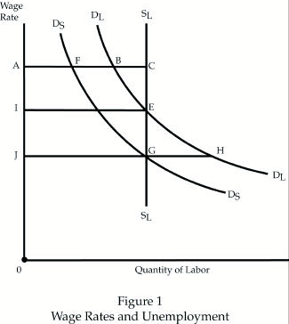
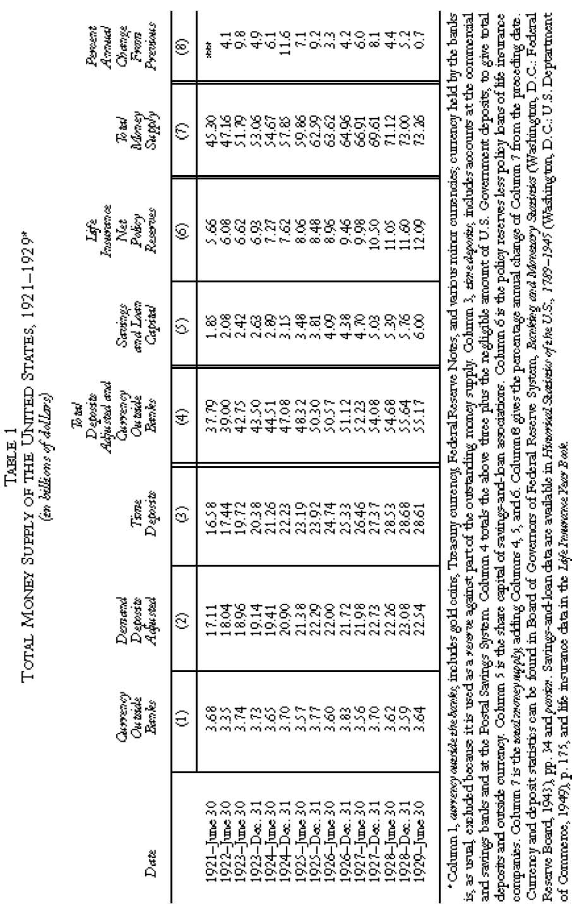
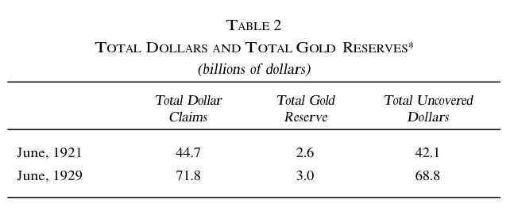
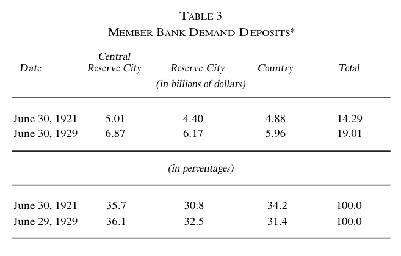
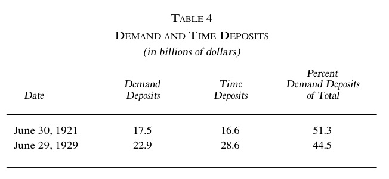
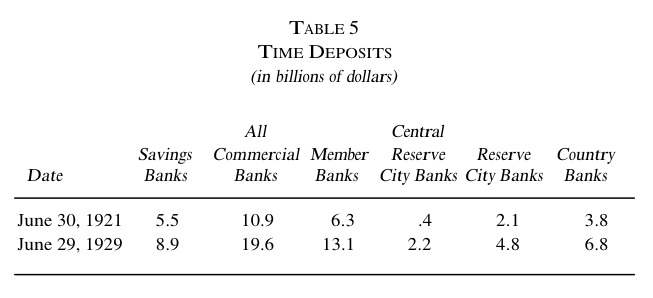
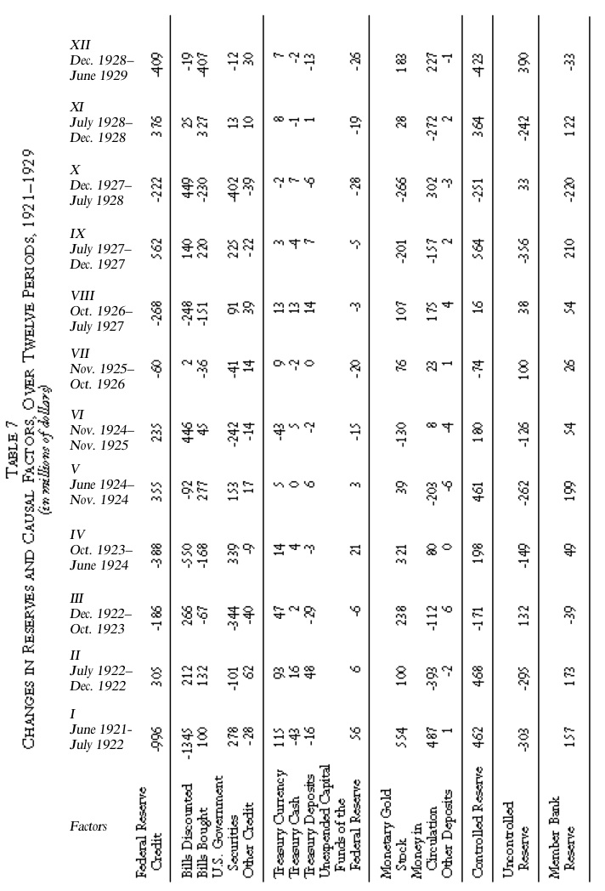
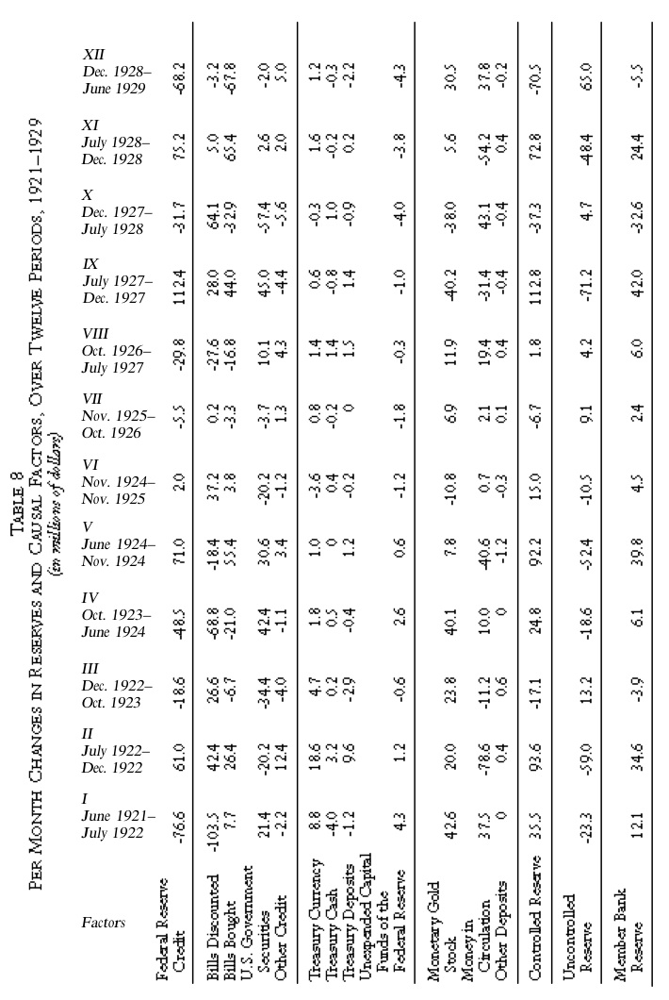
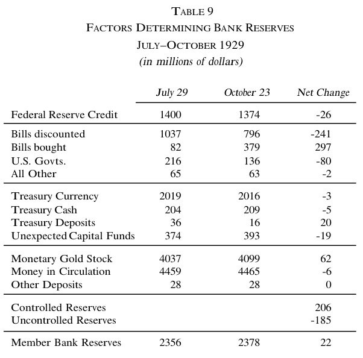

America's Great Depression
Fifth Edition
America's Great Depression
Fifth Edition
Murray N. Rothbard
MISES
INSTITUTE
Copyright © 1963, 1972 by Murray N. Rothbard
Introduction to the Third Edition Copyright © 1975 by Murray
N. Rothbard
Introduction to the Fourth Edition Copyright © 1983 by Murray
N. Rothbard
Introduction to the Fifth Edition Copyright © 2000 by The
Ludwig von Mises
Institute
Copyright © 2000 by The Ludwig von Mises Institute
All rights reserved. Printed in the United States of America.
No part of this book may be reproduced in any manner whatsoever without
written permission except in the case of reprints in the context of
reviews. For
information write The Ludwig von Mises Institute, 518 West Magnolia
Avenue,
Auburn, Alabama 36832.
ISBN No.: 0-945466-05-6
TO JOEY,
the indispensable framework
The Ludwig von Mises Institute dedicates
this volume to all of its generous donors, and in particular wishes to
thank these Patrons:
Dr. Gary G. Schlarbaum
–
George N. Gallagher (In Memoriam),
Mary Jacob, Hugh E. Ledbetter
–
Mark M. Adamo, Lloyd Alaback,
Robert Blumen, Philip G. Brumder, Anthony Deden (Sage Capital
Management, Inc.), Mr. and Mrs. Willard Fischer, Larry R. Gies,
Mr. and Mrs. W.R. Hogan, Jr., Mr. and Mrs. William W. Massey, Jr.,
Ellice McDonald, Jr., MBE, Rosa Hayward McDonald, MBE, Richard McInnis,
Mr. and Mrs. Roger Milliken (Milliken and Company), James M. Rodney,
Sheldon Rose, Mr. and Mrs. Edward Schoppe, Jr., Mr. and Mrs. Robert E.
Urie, Dr. Thomas L. Wenck
–
Algernon Land Co., L.L.C., J.
Terry Anderson (Anderson Chemical Company),
G. Douglas Collins, Jr., George Crispin, Lee A. Everhart, Douglas E.
French,
John William Galbraith, Walker S. Green, Mr. and Mrs. Max Hocutt,
Donald L. Ifland, Joe R. Lee, Arthur L. Loeb, William R. Machgan,
Dorothea H. Marica, Bernard Morton, Daniel W. Muirhead, James
O’Neill,
Charles H. Reeves (Reeves Family Foundation), Donald Mosby Rembert,
Stephen K. Salisbury, Mr. and Mrs. Allan Sawatzky, Joseph P. Schirrick,
Mr. and Mrs. Thomas W. Singleton (Nehemiah Foundation), Robert W.
Smiley, Jr. (The Benefit Capital Companies), Byron L. Stoeser,
Joseph J. Syslo, James E. Tempesta, M.D., top dog™, Alex T.
Van Rensselaer,
Lawrence Van Someren, Sr., Mr. and Mrs. Quinten E. Ward, David
Westrate, Anne Williamson, Keith S. Wood
–
Robert Bero, Robert J. Birnbach,
Richard Bleiberg, John Hamilton Bolstad, Mr. and Mrs. Justin G.
Bradburn, Jr., David and Elizabeth Butler, John W. Carpenter, Dr. John
P. Cochran, John Cooke, Henry V. Curll,
James V. De Santo (DTL Inc.), Chris A. Doose, Mr. and Mrs. Ted C.
Earle, Jay Elliott, Eric Englund, Dr. Larry J. Eshelman, Lawrence N.
Field, Elton B. Fox (The Fox Foundation), Capt. and Mrs. Maino des
Granges,
Christopher J. Hackett, John A. Halter, John R. Harper, Frank W.
Heemstra,
Douglas M. Joy, Michael G. Keller, D.O., Robert N. Kennedy, Richard J.
Kossmann, M.D., David Kramer, Steven R. Krause, Gary R. Letsinger,
Diana Lewis, J. Edward Martin, Norbert McLuckie, Samuel Mellos, Joseph
Edward Paul Melville, Robert Mish, Dr. Dorothy Donnelley Moller, Jerry
W. Moore, Keith E. Moore, D.M.D., Reed W. Mower, Brantley I. Newsom,
Professor and Mrs. Stanley E. Porter, James A. Reichert, Thomas S.
Ross,
Conrad Schneiker, Roy Schroeder, William V. Stephens, Charles Toops, II
(Mo-Ark Guide Service),
Robert H. Walker (Walker Die Casting Company), Mr. and Mrs. Victor
Zadikov, Jeannette Zummo
Acknowledgments
While the problem of 1929 has long
been of interest to
myself as well as most Americans, my attention was
first specifically drawn to a study of the Great
Depression when Mr. Leonard E. Read, President of the
Foundation for Economic Education, asked me, some years ago, to
prepare a brief paper on the subject. I am very grateful to Mr. Read
for being, in this way, the sparkplug for the present book. Having
written the article, I allowed the subject to remain dormant for
several years, amid the press of other work. At that point, on the
warm encouragement of Mr. Richard C. Cornuelle, now of the
Foundation for Voluntary Welfare, I proceeded on the task of
expansion to the present work, an expansion so far-reaching as to
leave few traces of the original sketch. I owe a particular debt to
the Earhart Foundation, without whose aid this study could never
have been written.
My supreme debt is to Professor Ludwig von Mises, whose
monumental theory of business cycles I have used to explain the
causes of the otherwise mysterious 1929 depression. Of all
Professor Mises’s notable contributions to economic science,
his
business cycle theory is certainly one of the most significant. It is
no exaggeration to say that any study of business cycles not based
upon his theoretical foundation is bound to be a fruitless undertaking.
The responsibility for this work, of course, is entirely my own.
Introduction to the Fifth Edition
The Wall Street collapse of
September–October 1929 and
the Great Depression which followed it were among the
most important events of the twentieth century. They made the Second
World War possible, though not inevitable, and
by undermining confidence in the efficacy of the market and the
capitalist system, they helped to explain why the absurdly inefficient
and murderous system of Soviet communism survived for so
long. Indeed, it could be argued that the ultimate emotional and
intellectual consequences of the Great Depression were not finally
erased from the mind of humanity until the end of the 1980s,
when the Soviet collectivist alternative to capitalism crumbled in
hopeless ruin and the entire world accepted there was no substitute
for the market.
Granted the importance of these events, then, the failure of
historians to explain either their magnitude or duration is one of the
great mysteries of modern historiography. The Wall Street plunge
itself was not remarkable, at any rate to begin with. The United
States economy had expanded rapidly since the last downturn in
1920, latterly with the inflationary assistance of the bankers and
the federal government. So a correction was due, indeed overdue.
The economy, in fact, ceased to expand in June, and it was
inevitable that this change in the real economy would be reflected
in the stock market.
The bull market effectively came to an end on September 3,
1929, immediately the shrewder operators returned from vacation
and looked hard at the underlying figures. Later rises were merely
hiccups in a steady downward trend. On Monday October 21, for
the first time, the ticker tape could not keep pace with the news of
falls and never caught up. Margin calls had begun to go out by
telegram the Saturday before, and by the beginning of the week
speculators began to realize they might lose their savings and even
their homes. On Thursday, October 24, shares dropped vertically
with no one buying, and speculators were sold out as they failed to
respond to margin calls. Then came Black Tuesday, October 29,
and the first selling of sound stocks to raise desperately needed
liquidity.
So far all was explicable and might easily have been
predicted.
This particular stock market corrective was bound to be severe
because of the unprecedented amount of speculation which Wall
Street rules then permitted. In 1929 1,548,707 customers had
accounts with America’s 29 stock exchanges. In a population
of 120
million, nearly 30 million families had an active association with
the market, and a million investors could be called speculators.
Moreover, of these nearly two-thirds, or 600,000, were trading on
margin; that is, on funds they either did not possess or could not
easily produce.
The danger of this growth in margin trading was compounded
by the mushrooming of investment trusts which marked the last
phase of the bull market. Traditionally, stocks were valued at about
ten times earnings. With high margin trading, earnings on shares,
only one or two percent, were far less than the eight to ten percent
interest on loans used to buy them. This meant that any profits
were in capital gains alone. Thus, Radio Corporation of America,
which had never paid a dividend at all, went from 85 to 410 points
in 1928. By 1929, some stocks were selling at 50 times earnings. A
market boom based entirely on capital gains is merely a form of
pyramid selling. By the end of 1928 the new investment trusts were
coming onto the market at the rate of one a day, and virtually all
were archetype inverted pyramids. They had “high
leverage”—a
new term in 1929—through their own supposedly shrewd
investments, and secured phenomenal stock exchange growth on the
basis of a very small plinth of real growth. United Founders
Corporation, for instance, had been created by a bankruptcy with
an investment of $500, and by 1929 its nominal resources, which
determined its share price, were listed as $686,165,000. Another
investment trust had a market value of over a billion dollars, but its
chief asset was an electric company which in 1921 had been worth
only $6 million. These crazy trusts, whose assets were almost
entirely dubious paper, gave the boom an additional superstructure
of pure speculation, and once the market broke, the “high
leverage” worked in reverse.
Hence, awakening from the pipe dream was bound to be painful,
and it is not surprising that by the end of the day on October 24,
eleven men well-known on Wall Street had committed suicide.
The immediate panic subsided on November 13, at which point
the index had fallen from 452 to 224. That was indeed a severe
correction but it has to be remembered that in December 1928 the
index had been 245, only 21 points higher. Business and stock
exchange downturns serve essential economic purposes. They have
to be sharp, but they need not be long because they are self-adjusting.
All they require on the part of the government, the business
community, and the public is patience. The 1920 recession had
adjusted itself within a year. There was no reason why the 1929
recession should have taken longer, for the American economy was
fundamentally sound. If the recession had been allowed to adjust
itself, as it would have done by the end of 1930 on any earlier
analogy, confidence would have returned and the world slump need
never have occurred.
Instead, the stock market became an engine of doom, carrying
to destruction the entire nation and, in its wake, the world. By
July 8, 1932, New York Times industrials had fallen
from 224 at the
end of the initial panic to 58. U.S. Steel, the world’s
biggest and
most efficient steel-maker, which had been 262 points before the
market broke in 1929, was now only 22. General Motors, already
one of the best-run and most successful manufacturing groups in
the world, had fallen from 73 to 8. These calamitous falls were
gradually reflected in the real economy. Industrial production,
which had been 114 in August 1929, was 54 by March 1933, a fall
of more than half, while manufactured durables fell by 77 percent,
nearly four-fifths. Business construction fell from $8.7 billion in
1929 to only $1.4 billion in 1933.
Unemployment rose over the same period from a mere 3.2 percent
to 24.9 percent in 1933, and 26.7 percent the following year.
At one point, 34 million men, women, and children were without
any income at all, and this figure excluded farm families who were
also desperately hit. City revenues collapsed, schools and universities
shut or went bankrupt, and malnutrition leapt to 20 percent,
something that had never happened before in United States
history—even in the harsh early days of settlement.
This pattern was repeated all over the industrial world. It
was
the worst slump in history, and the most protracted. Indeed there
was no natural recovery. France, for instance, did not get back to its
1929 level of industrial production until the mid-1950s. The world
economy, insofar as it was saved at all, was saved by war, or its
preparations. The first major economy to revitalize itself was
Germany’s, which with the advent of Hitler’s Nazi
regime in
January, 1933, embarked on an immediate rearmament program.
Within a year, Germany had full employment. None of the others
fared so well. Britain began to rearm in 1937, and thereafter
unemployment fell gradually, though it was still at historically high
levels
when war broke out on September 3, 1939. That was the date on
which Wall Street, anticipating lucrative arms sales and eventually
U.S. participation in the war, at last returned to 1929 prices.
It is a dismal story, and I do not feel that any historian has
satisfactorily explained it. Why so deep? Why so long? We do not
really know, to this day. But the writer who, in my judgment, has
come closest to providing a satisfactory analysis is Murray N.
Rothbard in America’s Great Depression.
For half a century, the conventional, orthodox explanation, provided by
John Maynard
Keynes and his followers, was that capitalism was incapable of saving
itself, and that government did too little to rescue an intellectually
bankrupt market system from the consequences of its own
folly. This analysis seemed less and less convincing as the years
went by, especially as Keynesianism itself became discredited.
In the meantime, Rothbard had produced, in 1963, his own
explanation, which turned the conventional one on its head. The
severity of the Wall Street crash, he argued, was not due to the
unrestrained license of a freebooting capitalist system, but to
government
insistence on keeping a boom going artificially by pumping in
inflationary credit. The slide in stocks continued, and the real
economy went into freefall, not because government interfered too
little, but because it interfered too much. Rothbard was the first to
make the point, in this context, that the spirit of the times in the
1920s, and still more so in the 1930s, was for government to plan,
to meddle, to order, and to exhort. It was a hangover from the First
World War, and President Hoover, who had risen to worldwide
prominence in the war by managing relief schemes, and had then
held high economic office throughout the twenties before moving
into the White House itself in 1929, was a born planner, meddler,
orderer, and exhorter.
Hoover’s was the only department of the U.S. federal
government which had expanded steadily in numbers and power during
the 1920s, and he had constantly urged Presidents Harding and
Coolidge to take a more active role in managing the economy.
Coolidge, a genuine minimalist in government, had complained:
“For six years that man has given me unsolicited
advice—all of it
bad.” When Hoover finally took over the White House, he
followed his own advice, and made it an engine of interference, first
pumping more credit into an already overheated economy and,
then, when the bubble burst, doing everything in his power to
organize government rescue operations.
We now see, thanks to Rothbard’s insights, that the
Hoover–
Roosevelt period was really a continuum, that most of the
“innovations” of the New Deal were in fact
expansions or intensifications of Hoover solutions, or
pseudo-solutions, and that Franklin
Delano Roosevelt’s administration differed from Herbert
Hoover’s
in only two important respects—it was infinitely more
successful
in managing its public relations, and it spent rather more
taxpayers’ money. And, in Rothbard’s argument, the
net effect of the
Hoover–Roosevelt continuum of policy was to make the slump
more severe and to prolong it virtually to the end of the 1930s.
The Great Depression was a failure not of capitalism but of the
hyperactive state.
I will not spoil the reader’s pleasure by entering more
deeply
into Rothbard’s arguments. His book is an intellectual tour
de force, in that it consists, from start to finish, of a
sustained
thesis, presented with relentless logic, abundant illustration, and
great eloquence. I know of few books which bring the world of economic
history so vividly to life, and which contain so many cogent lessons,
still valid in our own day. It is also a rich mine of interesting
and arcane knowledge, and I urge readers to explore its footnotes,
which contain many delicious quotations from the great and the
foolish of those days, three-quarters of a century ago. It is not
surprising that the book is going into yet another edition. It has
stood
the test of time with success, even with panache, and I feel honored
to be invited to introduce it to a new generation of readers.
PAUL JOHNSON
1999
Introduction to the Fourth Edition
There seems to be a cycle in new
editions of this book. The
second edition was published in the midst of the 1969–71
inflationary recession, the third in the mighty inflationary
depression of 1973–75. The economy is now in the
midst of
another inflationary depression at least as severe, and perhaps even
more so, than the 1973–75 contraction, which had been the
worst
since the 1930s.
The confusion and intellectual despair we noted in the
introduction to the third edition has now intensified. It is generally
conceded that Keynesianism is intellectually bankrupt, and we are
treated to the spectacle of veteran Keynesians calling for tax
increases during a severe depression, a change of front that few
people consider worth noting, much less trying to explain.
Part of the general bewilderment is due to the fact that the
current, severe 1981–83 depression followed very swiftly
after the
recession of 1979–80, so that it begins to look that the
fitful and
short-lived recovery of 1980–81 may have been but an
interlude in
the midst of a chronic recession that has lasted since 1979. Production
has been stagnating for years, the auto industry is in bad
shape, thrift institutions are going bankrupt by the week, and
unemployment has reached its highest point since the 1930s.
A notable feature of the 1981–83 depression is that,
in contrast
to 1973–75, the drift of economic thought and policy has not
been
toward collectivist planning but toward alleged free-market policies.
The Reagan administration began with a fanfare of allegedly
drastic budget and tax cuts, all of which lightly masked massive
increases in taxes and spending, so that President Reagan is now
presiding over the largest deficits and the highest budgets in
American history. If the Keynesians and now the Reagan administration
are calling for tax increases to narrow the deficit, we find
the equally bizarre spectacle of veteran classical liberal economists
in the early days of the same administration apologizing for government
deficits as being unimportant. While it is theoretically
true that deficits financed by sale of bonds to the public are not
inflationary, it is also true that the huge deficits (a) exert enormous
political pressure on the Fed to monetize the debt;
and (b) cripple
private investment by crowding out private savings and channeling
them into unproductive and wasteful government boondoggles
which will also impose higher taxes on future generations.
The twin hallmarks of “Reaganomics” so far
have been huge
deficits and remarkably high interest rates. While deficits are often
inflationary and always pernicious, curing them by raising taxes is
equivalent to curing an illness by shooting the patient. In the first
place, politically higher taxes will simply give the government
more money to spend, so that expenditures and therefore deficits
are likely to rise still further. Cutting taxes, on the other hand,
puts
great political pressure on Congress and the administration to follow
suit by cutting spending.
But more directly, it is absurd to claim that a tax is any
better
from the point of view of the consumer–taxpayer than a higher
price. If the price of a product rises due to inflation, the consumer
is worse off, but at least he still enjoys the services of the product.
But if the government raises taxes in order to stave off that price
rise, the consumer is getting nothing in return. He simply loses his
money, and obtains no service for it except possibly being ordered
around by government authorities he has been forced to subsidize.
Other things being equal, a price rise is always preferable to a tax.
But finally, inflation, as we point out in this work, is not
caused
by deficits but by the Federal Reserve’s increase of the
money supply. So that it is quite likely that a higher tax will have no
effect on
inflation whatsoever.
Deficits, then, should be eliminated, but only by cutting
government
spending. If taxes and government spending are both
slashed, then the salutary result will be to lower the
parasitic burden
of government taxes and spending upon the productive activities of
the private sector.
This brings us to a new economic viewpoint that has emerged
since our last edition—“supply-side
economics” and its extreme
variant, the Laffer Curve. To the extent that supply-siders point
out that tax reductions will stimulate work, thrift, and productivity,
then they are simply underlining truths long known to classical
and to Austrian economics. But one problem is that supply-siders,
while calling for large income-tax cuts, advocate keeping up the
current level of government expenditures, so that the burden of
shifting resources from productive private to wasteful government
spending will still continue.
The Laffer variant of the supply-side adds the notion that a
decline in income tax rateswill so increase
government revenues from
higher production and income that the budget will still be balanced.
There is little discussion by Lafferites, however, of how long this
process is supposed to take, and there is no evidence that revenue will
rise sufficiently to balance the budget, or even will rise at all. If,
for
example, the government should now raise income tax rates by 30
percent, does anyone really believe that total revenue would fall?
Another problem is that one wonders why the overriding goal
of fiscal policy should be to maximize government revenue. A far
sounder objective would be to minimize the revenue
and the
resources siphoned off to the public sector.
At any rate, the Laffer Curve has scarcely been tested by the
Reagan administration, since the much-vaunted income tax cuts,
in addition to being truncated and reduced from the original Reagan
plan, were more than offset by a programmed rise in Social
Security taxes and by “bracket creep.” Bracket
creep exists when
inflation wafts people into higher nominal (but not higher real)
income brackets, where their tax rates automatically increase.
It is generally agreed that recovery from the current
depression
has not yet arrived because interest rates have remained high,
despite the depression-borne drop in the rate of inflation. The
Friedmanites had decreed that “real” interest rates
(nominal rates
minus the rate of inflation) are always hovering around 3 percent.
When inflation fell sharply, therefore, from about 12 percent to 5
percent or less, monetarists confidently predicted that interest
rates would fall drastically, spurring a cyclical recovery. Yet, real
interest rates have persisted at far higher than 3 percent. How
could this be?
The answer is that expectations are purely subjective, and
cannot be captured by the mechanistic use of charts and regressions.
After several decades of continuing and aggravated inflation, the
American public has become inured to expect further chronic inflation.
Temporary respites during deep depressions, propaganda and
political hoopla, can no longer reverse those expectations. As long
as inflationary expectations persist, the expected inflation
incorporated into interest rates will remain high, and interest rates
will not
fall for any substantial length of time.
The Reagan administration knew, of course, that inflationary
expectations had to be reversed, but where they miscalculated was
relying on propaganda without substance. Indeed, the entire program of
Reaganomics may be considered a razzle-dazzle of showmanship about
taxes and spending, behind which the monetarists,
in control of the Fed and the Treasury Department, were supposed
to gradually reduce the rate of money growth. The razzle-dazzle
was supposed to reverse inflationary expectations; the gradualism
was to eliminate inflation without forcing the economy to suffer the
pain of recession or depression. Friedmanites have never understood the
Austrian insight on the necessity of a recession to liquidate the
unsound investments of the inflationary boom. As a result,
the attempt of Friedmanite gradualism to fine-tune the economy
into disinflation-without-recession went the way of the similar
Keynesian fine-tuning which the monetarists had criticized for
decades. Friedmanite fine-tuning brought us temporary
“disinflation” accompanied by another severe
depression.
In this way, monetarism fell between two stools. The
Fed’s cutback in the rate of money growth was sharp enough to
precipitate
the inevitable recession, but much too weak and gradual to bring
inflation to an end once and for all. Instead of a sharp but short
recession to liquidate the malinvestments of the preceding boom, we now
have a lingering chronic recession coupled with a
grinding, continuing stagnation of productivity and economic growth. A
pusillanimous gradualism has brought us the worst of both worlds:
continuing inflation plus severe recession, high unemployment,
and chronic stagnation.
One of the reasons for the chronic recession and stagnation is
that the market learns. Inflationary expectations
are a response
learned after decades of inflation, and they place an inflationary
premium on pure interest rates. As a result, the time-honored
method of lowering interest rates—the Fed’s
expanding the supply
of money and credit—cannot work for long because that will
simply raise inflationary expectations and raise interest rates instead
of
lowering them. We have gotten to the point where everything
the
government does is counterproductive; the conclusion, of course,
is that the government should do nothing at all, that is, should
retire quickly from the monetary and economic scene and allow
freedom and free markets to work.
It is, furthermore, too late for gradualism. The only solution
was set forth by F.A. Hayek, the dean of the Austrian School, in his
critique of the similarly disastrous gradualism of the Thatcher
regime in Great Britain. The only way out of the current mess is
to “slam on the brakes,” to stop the monetary
inflation in its tracks.
Then, the inevitable recession will be sharp but short and swift,
and the free market, allowed its head, will return to a sound recovery
in a remarkably brief time. Only a drastic and credible slamming of the
brakes can truly reverse the inflationary expectations
of the American public. But wisely the public no longer trusts the
Fed or the federal government. For a slamming on of the brakes to
be truly credible, there must be a radical surgery on American
monetary institutions, a surgery similar in scope to the German
creation of the rentenmark which finally ended the
runaway inflation of 1923. One important move would be to denationalize
the
fiat dollar by returning it to be worth a unit of weight of gold. A
corollary policy would prohibit the Federal Reserve from lowering
reserve requirements or from purchasing any assets ever again; better
yet, the Federal Reserve System should be abolished, and
government at last totally separated from the supply of money.
In any event, there is no sign of any such policy on the
horizon.
After a brief flirtation with gold, the Presidentially appointed U.S.
Gold Commission, packed with pro-fiat money Friedmanites abetted by
Keynesians, predictably rejected gold by an overwhelming
margin. Reaganomics—a blend of monetarism and fiscal
Keynesianism swathed in classical liberal and supply-side
rhetoric—is in
no way going to solve the problem of inflationary depression or of
the business cycle.
But if Reaganomics is doomed to be a fiasco, what is likely to
happen? Will we suffer a replay, as many voices are increasingly
predicting, of the Great Depression of the 1930s? Certainly there
are many ominous signs and parallels. The fact that Reaganomics
cannot bring down interest rates for long puts a permanent brake
on the stock market, which has been in chronic trouble since the
mid-1960s and is increasingly in shaky shape. The bond market is
already on the way to collapse. The housing market has at last been
stopped short by the high mortgage rates, and the same has happened to
many collectibles. Unemployment is chronically higher
each decade, and is now at the highest since the Great Depression,
with no sign of improvement. The accelerating inflationary boom
of the three decades since the end of World War II has loaded the
economy with unsound investments and with an oppressive mountain of
debt: consumer, homeowner, business, and international. In
recent decades, business has in effect relied on inflation to liquidate
the debt, but if “disinflation” (the lessening of
inflation in
1981 and at least the first half of 1982) is to continue, what will
happen to the debt? Increasingly, the answer will be bankruptcies,
and deeper depression. The bankruptcy rate is already the highest
since the Great Depression of the 1930s. Thrift institutions caught
between high interest rates to their depositors and low rates earned
on long-time mortgages, will increasingly become bankrupt or be
forced into quasi-bankrupt mergers with other thrifts which will
be dragged down by the new burdens. Even commercial banks, protected by
the safety blanket of the FDIC for half a
century, are
now beginning to go down the drain, dragged down by their
unsound loans of the past decade.
Matters are even worse on the international front. During the
great credit boom, U.S. banks have recklessly loaned inflated dollars
to unsound and highly risky governments and institutions
abroad, especially in the Communist governments and the Third
World. The Depository Control Act of 1980, which shows no signs
of being repealed by the Reagan administration, allows the Federal
Reserve to purchase unlimited amounts of foreign currency (or any
other assets) or to lower bank reserve requirements to zero. In
other words, it sets the stage for unlimited monetary and credit
inflation by the Fed. The bailing out of the Polish government, and
the refusal by the U.S. to declare it bankrupt so that the U.S.
taxpayer (or holder of dollars) can pick up the tab indefinitely, is an
omen for the future. For only massive inflation will eventually be
able to bail out foreign debtors and U.S. creditor banks.
Since Friedmanite gradualism will not permit a sharp enough
recession to clear out the debt, this means that the American economy
will be increasingly faced with two alternatives: either
a massive deflationary 1929-type depression to clear out the debt, or
a
massive inflationary bailout by the Federal Reserve. Hard money
rhetoric or no rhetoric, the timidity and confusion of Reaganomics
make very clear what its choice will be: massive inflation of money
and credit, and hence the resumption of double-digit and perhaps
higher inflation, which will drive interest rates even higher and
prevent recovery. A Democratic administration may be expected to
inflate with even more enthusiasm. We can look forward, therefore, not
precisely to a 1929-type depression, but to an inflationary depression
of massive proportions. Until then, the Austrian
program of hard money, the gold standard, abolition of the Fed,
and laissez-faire, will have been rejected by everyone: economists,
politicians, and the public, as too harsh and Draconian. But Austrian
policies are comfortable and moderate compared to the economic hell of
permanent inflation, stagnation, high unemployment, and inflationary
depression that Keynesians and Friedmanite neo-Keynesians have gotten
us into. Perhaps, this present and future economic holocaust will cause
the American public to
turn
away from failed nostrums and toward the analysis and policy
conclusions of the Austrian School.
MURRAY N. ROTHBARD
Stanford, California
September 1982
Introduction to the Third Edition
America is now in the midst of a
full-scale inflationary
depression. The inflationary recession of 1969–71 has
been quickly succeeded by a far more inflationary depression which
began around November 1973, and skidded into a serious depression
around the fall of 1974. Since that time, physical
production has declined steadily and substantially, and the
unemployment rate has risen to around 10 percent, and even higher in
key industrial areas. The desperate attempt by the politico-economic
Establishment to place an optimistic gloss on the most
severe depression since the 1930s centers on two arguments: (a)
the inadequacy of the unemployment statistics, and (b) the fact that
things were much worse in the post-1929 depression. The first
argument is true but irrelevant; no matter how faulty the statistics,
the rapid and severe rise in the unemployment rate from under 6
percent to 10 percent in the space of just one year (from 1974 to
1975) tells its own grisly tale. It is true that the economy was in
worse shape in the 1930s, but that was the gravest depression in
American history; we are now in a depression that is certainly not
mild by any pre-1929 standards.
The current inflationary depression has revealed starkly to
the
nation’s economists that their cherished
theories—adopted and
applied since the 1930s—are tragically and fundamentally
incorrect. For forty years we have been told, in the textbooks, the
economic journals, and the pronouncements of our government’s
economic advisors, that the government has the tools with which it
can easily abolish inflation or recession. We have been told that by
juggling fiscal and monetary policy, the government can
“finetune” the economy to abolish the business
cycle and insure permanent prosperity without inflation.
Essentially—and stripped of the
jargon, the equations, and the graphs—the economic
Establishment held all during this period that if the economy is
seen to be sliding into recession, the government need only step on
the fiscal and monetary gas—to pump in money and spending
into
the economy—in order to eliminate recession. And, on the
contrary, if the economy was becoming inflationary, all the government
need do is to step on the fiscal and monetary brake—take
money and spending out of the economy—in order to eliminate
inflation. In this way, the government’s economic planners
would
be able to steer the economy on a precise and careful course
between the opposing evils of unemployment and recession on the
one hand, and inflation on the other. But what can the government
do, what does conventional economic theory tell us, if the economy is
suffering a severe inflation and depression at
the same time?
Now can our self-appointed driver, Big Government, step on the
gas and on the brake at one and the same time?
Confronted with this stark destruction of all their hopes and
plans, surrounded by the rubble of their fallacious theories, the
nation’s economists have been plunged into confusion and
despair.
Put starkly, they have no idea of what to do next, or even how to
explain the current economic mess. In action, all that they can do
is to alternate accelerator and brake with stunning rapidity, hoping
that something might work (e.g., President Ford’s call for
higher
income taxes in the fall of 1974, only to be followed by a call for
lower income taxes a few months later). Conventional economic
theory is bankrupt: furthermore, with courses on business cycles
replaced a generation ago by courses on
“macroeconomics” in
graduate schools throughout the land, economists have now had to
face the stark realization that business cycles do
exist, while being
in no way equipped to understand them. Some economists, union
leaders, and businessmen, despairing of any hope for the free-market
economy, have in fact begun to call for a radical shift to a
collectivized economy in America (notably, the Initiative Committee
for National Economic Planning, which includes in its ranks economists
such as Wassily Leontief, union leaders such as
Leonard Woodcock, and business leaders such as Henry Ford II). In the
midst of this miasma and despair, there is one school of
economic thought which predicted the current mess, has a cogent
theory to explain it, and offers the way out of the
predicament—a
way out, furthermore, which, far from scrapping free enterprise in
favor of collectivist planning, advocates the restoration of a purely
free enterprise system that has been crippled for decades by government
intervention. This school of thought is the
“Austrian”
theory presented in this book. The Austrian view holds that persistent
inflation is brought about by continuing and chronic
increases in the supply of money, engineered by the federal government.
Since the inception of the Federal Reserve System in
1913, the supply of money and bank credit in America has been
totally in the control of the federal government, a control that has
been further strengthened by the U.S. repudiating the domestic
gold standard in 1933, as well as the gold standard behind the dollar
in foreign transactions in 1968 and finally in 1971. With the
gold standard abandoned, there is no necessity for the Federal
Reserve or its controlled banks to redeem dollars in gold, and so the
Fed may expand the supply of paper and bank dollars to its
heart’s
content. The more it does so, the more prices tend to accelerate
upward, dislocating the economy and bringing impoverishment to
those people whose incomes fall behind in the inflationary race.
The Austrian theory further shows that inflation is not the
only
unfortunate consequence of governmental expansion of the supply
of money and credit. For this expansion distorts the structure of
investment and production, causing excessive investment in
unsound projects in the capital goods industries. This distortion is
reflected in the well-known fact that, in every boom period, capital
goods prices rise further than the prices of consumer goods.
The recession periods of the business cycle then become
inevitable, for the recession is the necessary corrective process by
which the market liquidates the unsound investments of the boom
and redirects resources from the capital goods to the consumer
goods industries. The longer the inflationary distortions continue,
the more severe the recession-adjustment must become. During the
recession, the shift of resources takes place by means of
capital
goods prices falling relative to consumer goods. During the depression
of 1974–75, we have seen this occur, with industrial raw
material prices falling rapidly and substantially, with wholesale
prices
remaining level or declining slightly, but with consumer goods
prices still rising rapidly—in short, the inflationary
depression.
What, then, should the government do if the Austrian theory is
the correct one? In the first place, it can only cure the chronic and
potentially runaway inflation in one way: by ceasing to
inflate: by
stopping its own expansion of the money supply by Federal
Reserve manipulation, either by lowering reserve requirements or
by purchasing assets in the open market. The fault of inflation is
not in business “monopoly,” or in union agitation,
or in the hunches of speculators, or in the
“greediness” of consumers; the fault is
in the legalized counterfeiting operations of the government itself.
For the government is the only institution in society with the
power to counterfeit—to create new money. So long as it
continues to use that power, we will continue to suffer from inflation,
even unto a runaway inflation that will utterly destroy the currency.
At the very least, we must call upon the government to stop
using that power to inflate. But since all power possessed will be
used and abused, a far sounder method of ending inflation would
be to deprive the government completely of the power to counterfeit:
either by passing a law forbidding the Fed to purchase any further
assets or to lower reserve requirements, or more fundamentally, to
abolish the Federal Reserve System altogether. We existed
without such a central banking system before 1913, and we did so
with far less rampant inflations or depressions. Another vital
reform would be to return to a gold standard—to a money based
on a commodity produced, not by government printing presses,
but by the market itself. In 1933, the federal government seized
and confiscated the public’s gold under the guise of a
temporary
emergency measure; that emergency has been over for forty years,
but the public’s gold still remains beyond our reach at Fort
Knox.
As for avoiding depressions, the remedy is simple: again, to
avoid inflations by stopping the Fed’s power to inflate. If
we are in
a depression, as we are now, the only proper course of action is to
avoid governmental interference with the depression, and
thereby
to allow the depression–adjustment process to complete itself
as
rapidly as possible, and thus to restore a healthy and prosperous
economic system. Before the massive government interventions of
the 1930s, all recessions were short-lived. The severe depression of
1921 was over so rapidly, for example, that Secretary of Commerce
Hoover, despite his interventionist inclinations, was not able to
convince President Harding to intervene rapidly enough; by the
time Harding was persuaded to intervene, the depression was
already over, and prosperity had arrived. When the stock market
crash arrived in October, 1929, Herbert Hoover, now the president,
intervened so rapidly and so massively that the market–
adjustment process was paralyzed, and the Hoover–Roosevelt
New
Deal policies managed to bring about a permanent and massive
depression, from which we were only rescued by the advent of
World War II. Laissez-faire—a strict policy of
non-intervention by
the government —is the only course that can assure a rapid
recovery in any depression crisis.
In this time of confusion and despair, then, the Austrian
School
offers us both an explanation and a prescription for our current ills.
It is a prescription that is just as radical as, and perhaps even more
politically unpalatable than, the idea of scrapping the free economy
altogether and moving toward a totalitarian and unworkable
system of collectivist economic planning. The Austrian prescription is
precisely the opposite: we can only surmount the present
and future crisis by ending government intervention in the economy, and
specifically by ending governmental inflation and control
of the money supply, as well as interference in any
recession–
adjustment process. In times of breakdown, mere tinkering
reforms are not enough; we must take the radical step of getting
the government out of the economic picture, of separating government
completely from the money supply and the economy, and
advancing toward a truly free and unhampered market and enterprise
economy.
MURRAY N. ROTHBARD
Palo Alto, California
May 1975
Introduction to the Second Edition
In the years that have elapsed since
the publication of the first
edition, the business cycle has re-emerged in the consciousness
of economists. During the 1960s, we were again promised, as
in the New Era of the 1920s, the abolition of the business
cycle by
Keynesian and other sophisticated policies of government. The
substantial and marked recession which began around November,
1969, and from which at this writing we have not yet recovered,
has been a salutary if harsh reminder that the cycle is still very
much alive.
One feature of this current recession that has been
particularly
unpleasant and surprising is the fact that prices of consumer goods
have continued to rise sharply throughout the recession. In the
classic cycle, prices fall during recessions or depressions, and this
decline in prices is the one welcome advantage that the consumer
can reap from such periods of general gloom. In the present recession,
however, even this advantage has been removed, and the consumer thus
suffers a combination of the worst features of recession
and inflation.
Neither the established Keynesian nor the contemporary
“monetarist” schools anticipated or can provide a
satisfactory
explanation of this phenomenon of “inflationary
recession.” Yet
the “Austrian” theory contained in this book not
only explains this
occurrence, but demonstrates that it is a general and universal
tendency in recessions. For the essence of recession, as the Austrian
theory shows, is a readjustment of the economy to liquidate the
distortions imposed by the boom—in particular, the
overexpansion of the “higher” orders of capital
goods
and the underinvestment in
consumer goods industries. One of the ways by which the market
redirects resources from the capital goods to the consumer goods
sphere is by prices declining relatively in the former category and
rising relatively in the latter category. Bankruptcies and relative
price and wage contractions in the overblown and malinvested
higher orders of capital goods will redirect land, labor, and capital
resources into consumer goods and thereby reestablish the efficient
responsiveness to consumer demands that is the normal condition of an
unhampered market economy.
In short, the prices of consumer goods always tend to rise,
relative to the prices of producer goods, during recessions. The reason
that this phenomenon has not been noted before is that, in past
recessions, prices have generally fallen. If, for
example, consumer
goods prices fall by 10 percent and, say, cement prices fall by 20
percent, no one worries about an “inflation” during
the recession;
but, actually, consumer goods prices in this case, too, have risen
relative to the prices of producer goods. Prices in
general fell during recessions because monetary and banking deflation
used to be
an invariable feature of economic contractions. But, in the last few
decades, monetary deflation has been strictly prevented by governmental
expansion of credit and bank reserves, and the phenomenon of an actual declinein
the money supply has become at best a
dim memory. The result of the government’s abolition of
deflation, however, is that general prices no longer fall, even in
recessions. Consequently, the adjustment between consumer goods and
capital goods that must take place during recessions, must now
proceed without the merciful veil of deflation. Hence, the prices of
consumer goods still rise relatively, but now, shorn of general
deflation, they must rise absolutely and visibly as well. The
government policy of stepping in to prevent monetary deflation,
therefore, has deprived the public of the one great advantage of
recessions: a falling cost of living. Government intervention
against deflation has brought us the unwelcome phenomenon of
inflationary recession.
Along with the renewed emphasis on business cycles, the late
1960s saw the emergence of the “monetarist” Chicago
School, headed by Milton Friedman, as a significant competitor to the
Keynesian emphasis on compensatory fiscal policy. While the
Chicago approach provides a welcome return to the pre-Keynesian
emphasis on the crucial role of money in business cycles, it is
essentially no more than a recrudescence of the “purely
monetary”
theory of Irving Fisher and Sir Ralph Hawtrey during the 1910s
and 1920s. Following the manner of the English classical economists of
the nineteenth century, the monetarists rigidly separate
the “price level” from the movement of individual
prices; monetary forces supposedly determine the former while supply
and
demand for particular goods determine the latter. Hence, for the
monetarists, monetary forces have no significant or systematic
effect on the behavior of relative prices or in distorting the
structure of production. Thus, while the monetarists see that a rise in
the supply of money and credit will tend to raise the level of general
prices, they ignore the fact that a recession is then required to
eliminate the distortions and unsound investments of the preceding
boom. Consequently, the monetarists have no causal theory of
the business cycle; each stage of the cycle becomes an event unrelated
to the following stage.
Furthermore, as in the case of Fisher and Hawtrey, the current
monetarists uphold as an ethical and economic ideal the maintenance of
a stable, constant price level. The essence of the cycle is
supposed to be the rise and fall—the movements—of
the price
level. Since this level is determined by monetary forces, the
monetarists hold that if the price level is kept constant by government
policy, the business cycle will disappear. Friedman, for example, in
his A Monetary History of the United States,
1867–1960 (1963), emulates his mentors in lauding
Benjamin Strong for keeping the
wholesale price level stable during the 1920s. To the monetarists,
the inflation of money and bank credit engineered by Strong led to
no ill effects, no cycle of boom and bust; on the contrary, the Great
Depression was caused by the tight money policy that ensued after
Strong’s death. Thus, while the Fisher–Chicago
monetarists and
the Austrians both focus on the vital role of money in the Great
Depression as in other business cycles, the causal emphases and
policy conclusions are diametrically opposed. To the Austrians, the
monetary inflation of the 1920s set the stage inevitably for
the
depression, a depression which was further aggravated (and
unsound investments maintained) by the Federal Reserve efforts to
inflate further during the 1930s. The Chicagoans, on the other
hand, seeing no causal factors at work generating recession out of
preceding boom, hail the policy of the 1920s in keeping the price
level stable and believe that the depression could have been quickly
cured if only the Federal Reserve had inflated far more intensively
during the depression.
The long-run tendency of the free market economy, unhampered
by monetary expansion, is a gently falling price level, falling
as the productivity and output of goods and services continually
increase. The Austrian policy of refraining at all times from monetary
inflation would allow this tendency of the free market its
head and thereby remove the disruptions of the business cycle.
The Chicago goal of a constant price level, which can be achieved
only by a continual expansion of money and credit, would, as in the
1920s, unwittingly generate the cycle of boom and bust that has
proved so destructive for the past two centuries.
MURRAY N. ROTHBARD
New York, New York
July 1971
Introduction to the
First Edition
The year 1929 stands as the great
American trauma. Its
shock impact on American thought has been enormous.
The reasons for shock seem clear. Generally, depressions last a year or
two; prices and credit contract sharply,
unsound positions are liquidated, unemployment swells temporarily, and
then
rapid recovery ensues. The 1920–1921 experience repeated a
familiar pattern, not only of such hardly noticeable recessions as
1899–1900 and 1910–1912, but also of such severe
but brief crises
as 1907–1908 and 1819–1821.1
Yet the Great Depression that
ignited in 1929 lasted, in effect, for eleven years.
In addition to its great duration, the 1929 depression stamped
itself on the American mind by its heavy and continuing unemployment.
While the intensity of falling prices and monetary contraction was not
at all unprecedented, the intensity and duration of
unemployment was new and shocking. The proportion of the
American labor force that was unemployed had rarely reached 10
percent at the deepest trough of previous depressions; yet it surpassed
20 percent in 1931, and remained above 15 percent until
the advent of World War II.
If we use the commonly accepted dating methods and business
cycle methodology of the National Bureau of Economic Research,
we shall be led astray in studying and interpreting the depression.
Unfortunately, the Bureau early shifted its emphasis from the
study of the qualitatively important periods of
“prosperity” and
“depression,” to those of mere
“expansion” and “contraction.”
In
its dating methods, it picks out one month as the peak or trough,
and thus breaks up all historical periods into expansions and
contractions, lumping them all together as units in its averages,
regardless of importance or severity. Thus, the long boom of the
1920s is hardly recognized by the Bureau—which highlights
instead the barely noticeable recessions of 1923 and 1926.
Furthermore, we may agree with the Bureau—and all other
observers—that the Great Depression hit its trough in
1932–1933,
but we should not allow an artificial methodology to prevent our
realizing that the “boom” of 1933–1937
took place within a continuing depression. When
unemployment remains over 15 percent, it is folly to refer to the
1933–1937 period as “prosperity.” It
is still depression, even if slightly less intense than in 1933.2
The chief impact of the Great Depression on American
thought was universal acceptance of the view that
“laissez-faire
capitalism” was to blame. The common opinion—among
economists and the lay public alike—holds that
“Unreconstructed
Capitalism” prevailed during the 1920s, and that the tragic
depression shows that old-fashioned laissez-faire can work no longer.
It
had always brought instability and depression during the nineteenth
century; but now it was getting worse and becoming
absolutely intolerable. The government must step in to stabilize
the economy and iron out the business cycle. A vast army of people to
this day consider capitalism almost permanently on trial. If
the modern array of monetary–fiscal management and
stabilizers
cannot save capitalism from another severe depression, this large
group will turn to socialism as the final answer. To them, another
depression would be final proof that even a reformed and enlightened
capitalism cannot prosper.
Yet, on closer analysis, the common reaction is by no means
self-evident. It rests, in fact, on an unproven
assumption—the
assumption that business cycles in general, and depressions in
particular, arise from the depths of the free-market, capitalist
economy. If we then assume that the business cycle stems
from—is
“endogenous” to—the free market, then the
common reaction
seems plausible. And yet, the assumption is pure myth, resting not
on proof but on simple faith. Karl Marx was one of the first to
maintain that business crises stemmed from market processes. In
the twentieth century, whatever their great positive differences,
almost all economists—Mitchellians, Keynesians, Marxians, or
whatnot—are convinced of this view. They may have conflicting
causal theories to explain the phenomenon, or, like the
Mitchellians, they may have no causal theory at all—but they
are
all convinced that business cycles spring from deep within the
capitalist system.
Yet there is another and conflicting tradition of economic
thought—now acknowledged by only a few economists, and by
almost none of the public. This view holds that business cycles and
depressions stem from disturbances generated in the market by
monetary intervention. The monetary theory holds
that money and
credit-expansion, launched by the banking system, causes booms
and busts. This doctrine was first advanced, in rudimentary form,
by the Currency School of British classical economists in the early
nineteenth century, and then fully developed by Ludwig von Mises
and his followers in the twentieth. Although widely popular in
early-nineteenth-century America and Britain, the Currency
School thesis has been read out of business cycle theory and relegated
to another compartment: “international trade
theory.”
Nowadays, the monetary theory, when acknowledged at all, is
scoffed at as oversimplified. And yet, neither simplicity nor
singlecause explanation is a defect per se in
science; on the contrary, other
things being equal, science will prefer the simpler to the more
complex explanation. And science is always searching for a unified
“single cause” explanation of complex phenomena,
and rejoices when it can be found. If a theory is incorrect, it must be
combatted on its demerits only; it must not be simply accused of being
monocausal or of relying on causes external to the free market.
Perhaps, after all, the causes are
external—exogenous—to the market! The only valid
test is correctness of theoretical reasoning.
This book rests squarely on the Misesian interpretation of the
business cycle.3
The first part sets forth the
theory and then refutes
some prominent conflicting views. The theory itself is discussed
relatively briefly, a full elaboration being available in other works.
The implications of this theory for governmental policy are also
elaborated—implications which run flatly counter to
prevailing
views. The second and third parts apply the theory to furnish an
explanation of the causes of the 1929 depression in the United
States. Note that I make no pretense of using the historical facts to
“test” the truth of the theory. On the contrary, I
contend that economic theories cannot be “tested”
by historical or statistical fact.
These historical facts are complex and cannot, like the controlled
and isolable physical facts of the scientific laboratory, be used to
test theory. There are always many causal factors impinging on
each other to form historical facts. Only causal theories a
priori to
these facts can be used to isolate and identify the causal strands.4
For example, suppose that the price of zinc rises over a certain time
period. We may ask: why has it risen? We can only answer the
question by employing various causal theories arrived at prior to
our investigation. Thus, we know that the price might have risen
from any one or a combination of these causes: an increase in
demand for zinc; a reduction in its supply; a general increase in the
supply of money and hence in monetary demand for all goods; a
reduction in the general demand for money. How do we know
which particular theory applies in these particular cases? Only by
looking at the facts and seeing which theories are applicable.
But
whether or not a theory is applicable to a given
case has no relevance whatever to its truth or falsity as a theory. It neither
confirms
nor refutesthe thesis that a decrease in the supply of zinc
will, ceteris
paribus, raise the price, to find that this cut in supply
actually
occurred (or did not occur) in the period we may be investigating.
The task of the economic historian, then, is to make the relevant
applications of theory from the armory provided him by the economic
theorist. The only test of a theory is the
correctness of the
premises and of the logical chain of reasoning.5
The currently dominant school of economic
methodologists—
the positivists—stand ready, in imitation of the physical
scientists,
to use false premises provided the conclusions prove sound upon
testing. On the other hand, the institutionalists, who eternally
search for more and more facts, virtually abjure theory altogether.
Both are in error. Theory cannot emerge, phoenixlike, from a
cauldron of statistics; neither can statistics be used to test an
economic theory.
The same considerations apply when gauging the results of
political policies. Suppose a theory asserts that a certain policy will
cure a depression. The government, obedient to the theory, puts
the policy into effect. The depression is not cured. The critics and
advocates of the theory now leap to the fore with interpretations. The
critics say that failure proves the theory incorrect. The
advocates say that the government erred in not pursuing the theory
boldly enough, and that what is needed is stronger measures in the
same direction. Now the point is that empirically there is no
possible
way of deciding between them.6
Where
is the empirical “test” to
resolve the debate? How can the government rationally decide
upon its next step? Clearly, the only possible way of resolving the
issue is in the realm of pure theory—by examining the
conflicting
premises and chains of reasoning.
These methodological considerations chart the course of this
book. The aim is to describe and highlight the causes of the 1929
depression in America. I do not intend to write a complete economic
history of the period, and therefore there is no need to gather and
collate all conceivable economic statistics. I shall only concentrate
on the causal forces that first brought about, and then
aggravated, the depression. I hope that this analysis will be useful
to future economic historians of the 1920s and 1930s in constructing
their syntheses.
It is generally overlooked that study of a business cycle
should
not simply be an investigation of the entire economic record of an
era. The National Bureau of Economic Research, for example,
treats the business cycle as an array of all economic activities during
a certain period. Basing itself upon this assumption (and
despite the Bureau’s scorn of a priori
theorizing, this is very much
an unproven, a priori assumption), it studies the
expansion—contraction statistics of all the time-series it
can possibly accumulate.
A National Bureau inquiry into a business cycle is, then, essentially a
statistical history of the period. By adopting a Misesian, or
Austrian approach, rather than the typically institutionalist
methodology of the Bureau, however, the proper procedure
becomes very different. The problem now becomes one of pinpointing the
causal factors, tracing the chains of cause and effect,
and isolating the cyclical strand from the complex economic world.
As an illustration, let us take the American economy during
the
1920s. This economy was, in fact, a mixture of two very different,
and basically conflicting, forces. On the one hand, America experienced
a genuine prosperity, based on heavy savings and investment in highly
productive capital. This great advance raised
American living standards. On the other hand, we also suffered a
credit-expansion, with resulting accumulation of malinvested
capital, leading finally and inevitably to economic
crisis. Here are two
great economic forces—one that most people would agree to
call
“good,” and the other
“bad”—each separate, but interacting to
form the final historical result. Price, production, and trade indices
are the composite effects. We may well remember the errors of
smugness and complacency that our economists, as well as financial and
political leaders, committed during the great boom. Study
of these errors might even chasten our current crop of economic
soothsayers, who presume to foretell the future within a small, precise
margin of error. And yet, we should not scoff unduly at the
eulogists who composed paeans to our economic system as late as
1929. For, insofar as they had in mind the first
strand—the genuine
prosperity brought about by high saving and investment—they
were correct. Where they erred gravely was in overlooking the
second, sinister strand of credit expansion. This book concentrates
on the cyclical aspects of the economy of the period—if you
will,
on the defective strand.
As in most historical studies, space limitations require
confining oneself to a definite time period. This book deals with the
period 1921–1933. The years 1921–1929 were the boom
period preceding the Great Depression. Here we look for causal
influences
predating 1929, the ones responsible for the onset
of the depression. The years 1929–1933 composed the historic
contraction
phase of the Great Depression, even by itself of unusual length and
intensity. In this period, we shall unravel the aggravating causes
that worsened and prolonged the crisis.
In any comprehensive study, of course, the 1933–1940
period
would have to be included. It is, however, a period more familiar
to us and one which has been more extensively studied.
The pre-1921 period also has some claim to our attention.
Many writers have seen the roots of the Great Depression in the
inflation of World War I and of the post-war years, and in the
allegedly inadequate liquidation of the 1920–1921 recession.
However, sufficient liquidation does not require a
monetary or
price contraction back to pre-boom levels. We will therefore begin
our treatment with the trough of the 1920–1921 cycle, in the
fall
of 1921, and see briefly how credit expansion began to distort
production (and perhaps leave unsound positions unliquidated from
the preceding boom) even at that early date. Comparisons will also
be made between public policy and the relative durations of the
1920–1921 and the 1929–1933 depressions. We cannot
go beyond
that in studying the earlier period, and going further is not strictly
necessary for our discussion.
One great spur to writing this book has been the truly
remarkable dearth of study of the 1929 depression by economists. Very
few books of substance have been specifically devoted to 1929,
from any point of view. This book attempts to fill a gap by inquiring
in detail into the causes of the 1929 depression from the standpoint of
correct, praxeological economic theory.7
MURRAY N. ROTHBARD
Part I
Business Cycle Theory
1
The Positive Theory of the Cycle
Study of
business cycles must be
based upon a satisfactory
cycle theory. Gazing at sheaves of statistics without
“prejudgment” is futile. A cycle takes place in the
economic world, and therefore a usable
cycle theory must be integrated with
general economic theory. And yet, remarkably, such integration,
even attempted integration, is the exception, not the rule. Economics,
in the last two decades, has fissured badly into a host of
airtight compartments—each sphere hardly related to the
others.
Only in the theories of Schumpeter and Mises has cycle theory
been integrated into general economics.1
The bulk of cycle specialists,
who spurn any systematic integration as impossibly deductive and overly
simplified, are thereby
(wittingly or unwittingly) rejecting economics itself. For if one
may forge a theory of the cycle with little or no relation to general
economics, then general economics must be incorrect, failing
as it does to account for such a vital economic phenomenon. For
institutionalists—the pure data collectors—if not
for others, this
is a welcome conclusion. Even institutionalists, however, must use
theory sometimes, in analysis and recommendation; in fact, they
end by using a concoction of ad hoc hunches,
insights, etc., plucked unsystematically from
various theoretical gardens. Few, if
any, economists have realized that the Mises theory of the trade
cycle is not just another theory: that, in fact, it meshes closely with
a general theory of the economic system.2
The
Mises theory is, in
fact, the economic analysis of the necessary consequences of intervention
in the free market by bank credit expansion. Followers of
the Misesian theory have often displayed excessive modesty in
pressing its claims; they have widely protested that the theory is
“only one of many possible explanations of business
cycles,” and
that each cycle may fit a different causal theory. In this, as in so
many other realms, eclecticism is misplaced. Since the Mises theory is
the only one that stems from a general economic theory, it
is the only one that can provide a correct explanation. Unless we
are prepared to abandon general theory, we must reject all proposed
explanations that do not mesh with general economics.
BUSINESS CYCLES AND BUSINESS
FLUCTUATIONS
It is important, first, to
distinguish between business cycles and
ordinary business fluctuations. We live necessarily
in a society of
continual and unending change, change that can never be precisely
charted in advance. People try to forecast and anticipate changes as
best they can, but such forecasting can never be reduced to an
exact science. Entrepreneurs are in the business of forecasting
changes on the market, both for conditions of demand and of supply. The
more successful ones make profits pari passus with
their
accuracy of judgment, while the unsuccessful forecasters fall by the
wayside. As a result, the successful entrepreneurs on the free market
will be the ones most adept at anticipating future business conditions.
Yet, the forecasting can never be perfect, and entrepreneurs will
continue to differ in the success of their judgments. If
this were not so, no profits or losses would ever be made in business.
Changes, then, take place continually in all spheres of the economy.
Consumer tastes shift; time preferences and consequent proportions of
investment and consumption change; the labor force
changes in quantity, quality, and location; natural resources are
discovered and others are used up; technological changes alter
production possibilities; vagaries of climate alter crops, etc. All
these
changes are typical features of any economic system. In fact, we
could not truly conceive of a changeless society, in which everyone
did exactly the same things day after day, and no economic data
ever changed. And even if we could conceive of such a society, it is
doubtful whether many people would wish to bring it about.
It is, therefore, absurd to
expect every business activity to be
“stabilized” as if these changes were not taking
place. To stabilize
and “iron out” these fluctuations would, in effect,
eradicate any
rational productive activity. To take a simple, hypothetical case,
suppose that a community is visited every seven years by the sevenyear
locust. Every seven years, therefore, many people launch
preparations to deal with the locusts: produce anti-locust equipment,
hire trained locust specialists, etc. Obviously, every seven
years there is a “boom” in the locust-fighting
industry, which, happily, is “depressed” the other
six years. Would it help or harm matters if everyone decided to
“stabilize” the locust-fighting industry
by insisting on producing the machinery evenly every year, only to
have it rust and become obsolete? Must people be forced to build
machines before they want them; or to hire people before they are
needed; or, conversely, to delay building machines they
want—all
in the name of “stabilization”? If people desire
more autos and
fewer houses than formerly, should they be forced to keep buying
houses and be prevented from buying the autos, all for the sake of
stabilization? As Dr. F.A. Harper has stated:
This sort of business fluctuation
runs all through our
daily lives. There is a violent fluctuation, for instance, in
the harvest of strawberries at different times during the
year. Should we grow enough strawberries in greenhouses so as to
stabilize that part of our economy
throughout the year.3
We may, therefore, expect specific
business fluctuations all the
time. There is no need for any special “cycle
theory” to account for
them. They are simply the results of changes in economic data and
are fully explained by economic theory. Many economists, however,
attribute general business depression to
“weaknesses” caused
by a “depression in building” or a “farm
depression.” But declines
in specific industries can never ignite a general depression. Shifts
in data will cause increases in activity in one field, declines in
another. There is nothing here to account for a general
business
depression—a phenomenon of the true “business
cycle.” Suppose,
for example, that a shift in consumer tastes, and technologies,
causes a shift in demand from farm products to other
goods. It is
pointless to say, as many people do, that a farm depression will
ignite a general depression, because farmers will buy less goods,
the people in industries selling to farmers will buy less, etc. This
ignores the fact that people producing the other
goods now favored
by consumers will prosper; their demands will
increase.
The problem of the business cycle
is one of general boom and
depression; it is not a problem of exploring specific industries and
wondering what factors make each one of them relatively prosperous or
depressed. Some economists—such as Warren and Pearson
or Dewey and Dakin—have believed that there are no such
things
as general business fluctuations—that general movements are
but
the results of different cycles that take place, at different specific
time-lengths, in the various economic activities. To the extent that
such varying cycles (such as the 20-year “building
cycle” or the
seven-year locust cycle) may exist, however, they are irrelevant to
a study of business cycles in general or to
business depressions in
particular. What we are trying to explain are general
booms and
busts in business.
In considering general movements
in business, then, it is immediately evident that such movements must
be transmitted through
the general medium of exchange—money. Money forges the
connecting link between all economic activities. If one price goes up
and another down, we may conclude that demand has shifted from
one industry to another; but if all prices move up
or down together,
some change must have occurred in the monetary
sphere. Only
changes in the demand for, and/or the supply of, money will cause
general price changes. An increase in the supply of money, the
demand for money remaining the same, will cause a fall in the
purchasing power of each dollar, i.e., a general rise in prices;
conversely, a drop in the money supply will cause a general decline in
prices. On the other hand, an increase in the general demand for
money, the supply remaining given, will bring about a rise in the
purchasing power of the dollar (a general fall in prices); while a fall
in demand will lead to a general rise in prices. Changes in prices in
general, then, are determined by changes in the supply of and
demand for money. The supply of money consists of the stock of
money existing in the society. The demand for money is, in the
final analysis, the willingness of people to hold cash balances, and
this can be expressed as eagerness to acquire money in exchange,
and as eagerness to retain money in cash balance. The supply of
goods in the economy is one component in the social demand for
money; an increased supply of goods will, other things being
equal,
increase the demand for money and therefore tend to lower prices.
Demand for money will tend to be lower when the purchasing
power of the money-unit is higher, for then each dollar is more
effective in cash balance. Conversely, a lower purchasing power
(higher prices) means that each dollar is less effective, and more
dollars will be needed to carry on the same work.
The purchasing power of the
dollar, then, will remain constant
when the stock of, and demand for, money are in equilibrium with
each other: i.e., when people are willing to hold in their cash
balances the exact amount of money in existence. If the demand for
money exceeds the stock, the purchasing power of money will rise
until the demand is no longer excessive and the market is cleared;
conversely, a demand lower than supply will lower the purchasing
power of the dollar, i.e., raise prices.
Yet, fluctuations in general
business, in the “money relation,”
do not by themselves provide the clue to the mysterious business
cycle. It is true that any cycle in general business must be
transmitted through this money relation: the relation between the stock
of, and the demand for, money. But these changes in themselves
explain little. If the money supply increases or demand falls, for
example, prices will rise; but why should this generate a
“business
cycle”? Specifically, why should it bring about a depression?
The
early business cycle theorists were correct in focusing their attention
on the crisis and depression:
for these are the phases that puzzle
and shock economists and laymen alike, and these are the phases
that most need to be explained.
THE PROBLEM: THE CLUSTER OF ERROR
The explanation of depressions,
then, will not be found by
referring to specific or even general business fluctuations per
se.
The main problem that a theory of depression must explain is:
why
is there a sudden general cluster of business errors? This is
the first
question for any cycle theory. Business activity moves along nicely
with most business firms making handsome profits. Suddenly,
without warning, conditions change and the bulk of business firms
are experiencing losses; they are suddenly revealed to have made
grievous errors in forecasting.
A general review of
entrepreneurship is now in order. Entrepreneurs are largely in the
business of forecasting. They must
invest and pay costs in the present, in the expectation of recouping
a profit by sale either to consumers or to other entrepreneurs further
down in the economy’s structure of production. The better
entrepreneurs, with better judgment in forecasting consumer or
other producer demands, make profits; the inefficient entrepreneurs
suffer losses. The market, therefore, provides a training
ground for the reward and expansion of successful, far-sighted
entrepreneurs and the weeding out of inefficient businessmen. As
a rule only some businessmen suffer losses at any one time; the
bulk either break even or earn profits. How, then, do we explain
the curious phenomenon of the crisis when almost all entrepreneurs
suffer sudden losses? In short, how did all the country’s
astute businessmen come to make such errors together, and why
were they all suddenly revealed at this particular time? This is the
great problem of cycle theory.
It is not legitimate to reply
that sudden changes in the data are
responsible. It is, after all, the business of entrepreneurs to
forecast
future changes, some of which are sudden. Why did their forecasts
fail so abysmally?
Another common feature of the
business cycle also calls for an
explanation. It is the well-known fact that capital-goods
industries
fluctuate more widely than do the consumer-goods industries.
The capital-goods industries—especially the industries
supplying raw materials, construction, and equipment to other
industries—expand
much further in the boom, and are hit far more severely in the
depression.
A third feature of every boom
that needs explaining is the
increase in the quantity of money in the economy. Conversely,
there is generally, though not universally, a fall in the money supply
during the depression.
THE EXPLANATION: BOOM AND DEPRESSION
In the purely free and unhampered market, there will be no
cluster of errors, since trained entrepreneurs will not all make errors
at the same time.4
The “boom-bust” cycle is generated by
monetary intervention in the market, specifically bank credit
expansion to business. Let us suppose an economy with a given
supply of money. Some of the money is spent in consumption; the
rest is saved and invested in a mighty structure of capital, in various
orders of production. The proportion of consumption to saving or
investment is determined by people’s time
preferences—the
degree to which they prefer present to future satisfactions. The less
they prefer them in the present, the lower will their time preference
rate be, and the lower therefore will be the pure interest
rate, which
is determined by the time preferences of the individuals in society.
A lower time-preference rate will be reflected in greater proportions
of investment to consumption, a lengthening of the structure
of production, and a building-up of capital. Higher time preferences,
on the other hand, will be reflected in higher pure interest
rates and a lower proportion of investment to consumption. The
final market rates of interest reflect the pure interest rate plus or
minus entrepreneurial risk and purchasing power components.
Varying degrees of entrepreneurial risk bring about a structure
of
interest rates instead of a single uniform one, and purchasingpower
components reflect changes in the purchasing power of the
dollar, as well as in the specific position of an entrepreneur in
relation to price changes. The crucial factor, however, is the pure
interest rate. This interest rate first manifests itself in the
“natural
rate” or what is generally called the going “rate
of profit.” This
going rate is reflected in the interest rate on the loan market, a rate
which is determined by the going profit rate.5
Now what happens when banks print
new money (whether as
bank notes or bank deposits) and lend it to business?6
The new
money pours forth on the loan market and lowers the loan rate of
interest. It looks as if the supply of saved funds
for investment has
increased, for the effect is the same: the supply of funds for
investment apparently increases, and the interest rate is lowered.
Businessmen, in short, are misled by the bank inflation into believing
that the supply of saved funds is greater than it really is. Now,
when saved funds increase, businessmen invest in “longer
processes of production,” i.e., the capital structure is
lengthened,
especially in the “higher orders” most remote from
the consumer.
Businessmen take their newly
acquired funds and bid up the prices
of capital and other producers’ goods, and this stimulates a
shift of
investment from the “lower” (near the consumer) to
the “higher”
orders of production (furthest from the consumer)—from
consumer goods to capital goods industries.7
If this were the effect of a
genuine fall in time preferences and
an increase in saving, all would be well and good, and the new
lengthened structure of production could be indefinitely sustained.
But this shift is the product of bank credit expansion. Soon the new
money percolates downward from the business borrowers to the
factors of production: in wages, rents, interest. Now, unless time
preferences have changed, and there is no reason to think that they
have, people will rush to spend the higher incomes in the old
consumption–investment proportions. In short, people will
rush to
reestablish the old proportions, and demand will shift back from
the higher to the lower orders. Capital goods industries will find
that their investments have been in error: that what they thought
profitable really fails for lack of demand by their entrepreneurial
customers. Higher orders of production have turned out to be
wasteful, and the malinvestment must be liquidated.
A favorite explanation of the
crisis is that it stems from
“underconsumption”—from a failure of
consumer demand for goods at
prices that could be profitable. But this runs contrary to the commonly
known fact that it is capital goods, and not
consumer goods,
industries that really suffer in a depression. The failure is one of
entrepreneurial demandfor the higher order goods,
and this in turn
is caused by the shift of demand back to the old proportions.
In sum, businessmen were misled
by bank credit inflation to
invest too much in higher-order capital goods, which could only be
prosperously sustained through lower time preferences and greater
savings and investment; as soon as the inflation permeates to the mass
of the people, the old consumption–investment proportion is
reestablished, and business investments in the higher orders are seen
to have
been wasteful.8 Businessmen were led to this
error by the credit
expansion and its tampering with the free-market rate of interest.
The “boom,”
then, is actually a period of wasteful misinvestment. It is the time
when errors are made, due to bank credit’s tampering with the
free market. The “crisis” arrives when the
consumers come to reestablish their desired proportions. The
“depression” is actually the process by which the
economy adjusts
to the wastes and errors of the boom, and reestablishes
efficient
service of consumer desires. The adjustment process consists in
rapid liquidationof the wasteful investments. Some
of these will be
abandoned altogether (like the Western ghost towns constructed
in the boom of 1816–1818 and deserted during the Panic of
1819);
others will be shifted to other uses. Always the principle will be not
to mourn past errors, but to make most efficient use of the existing
stock of capital. In sum, the free market tends to satisfy
voluntarily-expressed consumer desires with maximum efficiency, and
this includes the public’s relative desires for present and
future
consumption. The inflationary boom hobbles this efficiency, and
distorts the structure of production, which no longer serves consumers
properly. The crisis signals the end of this inflationary distortion,
and the depression is the process by which the economy
returns to the efficient service of consumers. In short, and this is a
highly important point to grasp, the depression is the
“recovery”
process, and the end of the depression heralds the return to normal,
and to optimum efficiency. The depression, then, far from
being an evil scourge, is the necessary and
beneficial return of the
economy to normal after the distortions imposed by the boom.
The boom, then, requiresa
“bust.”
Since it clearly takes very
little time for the new money to filter
down from business to factors of production, why don’t all
booms
come quickly to an end? The reason is that the banks come to the
rescue. Seeing factors bid away from them by consumer goods
industries, finding their costs rising and themselves short of funds,
the borrowing firms turn once again to the banks. If the banks
expand credit further, they can again keep the borrowers afloat. The
new money again pours into business, and they can again bid factors
away from the consumer goods industries. In short, continually
expanded bank credit can keep the borrowers one step ahead of
consumer retribution. For this, we have seen, is what the crisis and
depression are: the restoration by consumers of an efficient economy,
and the ending of the distortions of the boom. Clearly, the
greater the credit expansion and the longer it lasts, the longer will
the boom last. The boom will end when bank credit expansion
finally stops. Evidently, the longer the boom goes on the more
wasteful the errors committed, and the longer and more severe will
be the necessary depression readjustment.
Thus, bank credit expansion sets
into motion the business cycle
in all its phases: the inflationary boom, marked by expansion of the
money supply and by malinvestment; the crisis, which arrives when
credit expansion ceases and malinvestments become evident; and
the depression recovery, the necessary adjustment process by
which the economy returns to the most efficient ways of satisfying
consumer desires.9
What, specifically, are the
essential features of the depressionrecovery phase? Wasteful projects,
as we have said, must either be
abandoned or used as best they can be. Inefficient firms, buoyed up
by the artificial boom, must be liquidated or have their debts scaled
down or be turned over to their creditors. Prices of
producers’
goods must fall, particularly in the higher orders of
production—
this includes capital goods, lands, and wage rates. Just as the boom
was marked by a fall in the rate of interest, i.e., of price
differentials
between stages of production (the “natural rate” or
going rate of
profit) as well as the loan rate, so the depression-recovery consists
of a rise in this interest differential. In practice, this means a fall
in
the prices of the higher-order goods relative to prices in the consumer
goods industries. Not only prices of particular machines
must fall, but also the prices of whole aggregates of capital, e.g.,
stock market and real estate values. In fact, these values must fall
more than the earnings from the assets, through reflecting the
general rise in the rate of interest return.
Since factors must shift from the
higher to the lower orders of
production, there is inevitable “frictional”
unemployment in a
depression, but it need not be greater than unemployment attending any
other large shift in production. In practice, unemployment
will be aggravated by the numerous bankruptcies, and the large
errors revealed, but it still need only be temporary. The speedier
the adjustment, the more fleeting will the unemployment be.
Unemployment will progress beyond the “frictional”
stage and
become really severe and lasting only if wage rates are kept
artificially high and are prevented from falling. If wage rates are
kept
above the free-market level that clears the demand for and supply
of labor, laborers will remain permanently unemployed. The
greater the degree of discrepancy, the more severe will the
unemployment be.
SECONDARY FEATURES OF DEPRESSION:
DEFLATIONARY CREDIT CONTRACTION
The above are the essential
features of a depression. Other secondary features may also develop.
There is no need, for example,
for deflation (lowering of the money supply) during
a depression.
The depression phase begins with the end of inflation, and can
proceed without any further changes from the side of money.
Deflation has almost always set in, however. In the first place, the
inflation took place as an expansion of bank credit; now, the financial
difficulties and bankruptcies among borrowers cause banks to
pull in their horns and contract credit.10
Under
the gold standard,
banks have another reason for contracting credit—if they had
ended inflation because of a gold drain to foreign countries. The
threat of this drain forces them to contract their outstanding loans.
Furthermore the rash of business failures may cause questions to
be raised about the banks; and banks, being inherently bankrupt
anyway, can ill afford such questions.11
Hence,
the money supply
will contract because of actual bank runs, and because banks will
tighten their position in fear of such runs.
Another common secondary feature
of depressions is an increase
in the demand for money. This “scramble for
liquidity” is the result
of several factors: (1) people expect falling prices, due to the
depression and deflation, and will therefore hold more money and
spend less on goods, awaiting the price fall; (2) borrowers will try
to pay off their debts, now being called by banks and by business
creditors, by liquidating other assets in exchange for money; (3)
the rash of business losses and bankruptcies makes businessmen
cautious about investing until the liquidation process is over.
With the supply of money falling,
and the demand for money
increasing, generally falling prices are a
consequent feature of most
depressions. A general price fall, however, is caused by the secondary,
rather than by the inherent, features of depressions. Almost all
economists, even those who see that the depression adjustment
process should be permitted to function unhampered, take a very
gloomy view of the secondary deflation and price fall, and assert
that they unnecessarily aggravate the severity of depressions. This
view, however, is incorrect. These processes not only do not aggravate
the depression, they have positively beneficial effects.
There is, for example, no warrant
whatever for the common
hostility toward “hoarding.” There is no criterion,
first of all, to
define “hoarding”; the charge inevitably boils down
to mean that
A thinks that B is keeping more cash balances than A deems
appropriate for B. Certainly there is no objective criterion to
decide when an increase in cash balance becomes a
“hoard.” Second, we have seen that the demand for
money increases as a result
of certain needs and values of the people; in a depression, fears of
business liquidation and expectations of price declines particularly
spur this rise. By what standards can these valuations be called
“illegitimate”? A general price fall is the way
that an increase in the
demand for money can be satisfied; for lower prices mean that the
same total cash balances have greater effectiveness, greater
“real”
command over goods and services. In short, the desire for
increased real cash balances has now been satisfied.
Furthermore, the demand for money
will decline again as soon
as the liquidation and adjustment processes are finished. For the
completion of liquidation removes the uncertainties of impending
bankruptcy and ends the borrowers’ scramble for cash. A rapid
unhampered fall in prices, both in general (adjusting to the
changed money-relation), and particularly in goods of higher
orders (adjusting to the malinvestments of the boom) will speedily
end the realignment processes and remove expectations of further
declines. Thus, the sooner the various adjustments, primary and
secondary, are carried out, the sooner will the demand for money
fall once again. This, of course, is just one part of the general
economic “return to normal.”
Neither does the increased
“hoarding” nor the fall of prices at all
interfere with the primary depression-adjustment. The important
feature of the primary adjustment is that the prices of
producers’
goods fall more rapidly than do consumer good prices (or, more
accurately, that higher order prices fall more rapidly
than do those of
lower order goods); it does not interfere with the primary adjustment
if all prices are falling to some degree. It is, moreover, a common
myth among laymen and economists alike, that falling prices
have a depressing effect on business. This is not necessarily true.
What matters for business is not the general behavior of prices, but
the price differentials between selling prices and costs (the
“natural
rate of interest”). If wage rates, for example, fall more
rapidly than
product prices, this stimulates business activity and employment.
Deflation of
the money supply (via credit contraction) has fared
as badly as hoarding in the eyes of economists. Even the Misesian
theorists deplore deflation and have seen no benefits accruing from
it.12
Yet, deflationary credit
contraction
greatly helps to speed up
the adjustment process, and hence the completion of business
recovery, in ways as yet unrecognized. The adjustment consists, as
we know, of a return to the desired consumption-saving pattern.
Less adjustment is needed, however, if time preferences themselves
change: i.e., if savings increase and consumption
relatively declines.
In short, what can help a depression is not more consumption, but,
on the contrary, less consumption and more savings
(and, concomitantly, more investment). Falling prices encourage greater
savings and decreased consumption by fostering an accounting
illusion. Business accounting records the value of assets at their
original cost. It is well known that general price increases distort
the accounting-record: what seems to be a large
“profit” may only
be just sufficient to replace the now higher-priced assets. During
an inflation, therefore, business “profits” are
greatly overstated,
and consumption is greater than it would be if the accounting illusion
were not operating—perhaps capital is even consumed without
the individual’s knowledge. In a time of deflation, the
accounting
illusion is reversed: what seem like losses and capital consumption,
may actually mean profits for the firm, since assets now cost much
less to be replaced. This overstatement of losses, however, restricts
consumption and encourages saving; a man may merely think he is
replacing capital, when he is actually making an added investment
in the business.
Credit contraction will have
another beneficial effect in promoting recovery. For bank credit
expansion, we have seen, distorts
the free market by lowering price differentials (the “natural
rate of
interest” or going rate of profit) on the market. Credit
contraction,
on the other hand, distorts the free market in the reverse direction.
Deflationary credit contraction’s first effect is to lower
the money
supply in the hands of business, particularly in the higher stages of
production. This reduces the demand for factors in the higher
stages, lowers factor prices and incomes, and increases price
differentials and the interest rate. It spurs the
shift of factors, in short,
from the higher to the lower stages. But this means that credit
contraction, when it follows upon credit expansion, speeds the
market’s adjustment process. Credit contraction returns the
economy
to free-market proportions much sooner than otherwise.
But, it may be objected, may not
credit contraction overcompensate the errors of the boom and itself
cause distortions that
need correction? It is true that credit contraction may overcompensate,
and, while contraction proceeds, it may cause interest rates
to be higher than free-market levels, and investment lower than in
the free market. But since contraction causes no positive mal-
investments, it will not lead to any painful period of depression and
adjustment. If businessmen are misled into thinking that less capital
is available for investment than is really the case, no lasting damage
in the form of wasted investments will ensue.13
Furthermore, in
the nature of things, credit contraction is severely
limited—it cannot progress beyond the extent of the preceding
inflation.14
Credit
expansion faces no such limit.
GOVERNMENT DEPRESSION POLICY:
LAISSEZ-FAIRE
If government wishes to see a
depression ended as quickly as possible, and the economy returned to
normal prosperity, what course
should it adopt? The first and clearest injunction is: don’t
interfere with
the market’s adjustment process. The more the
government intervenes
to delay the market’s adjustment, the longer and more
grueling the
depression will be, and the more difficult will be the road to complete
recovery. Government hampering aggravates and perpetuates the
depression. Yet, government depression policy has always
(and would have even more today) aggravated the very evils it has
loudly tried to cure. If, in fact, we list logically the various ways
that government could hamper market adjustment, we
will find
that we have precisely listed the favorite
“anti-depression” arsenal
of government policy. Thus, here are the ways the adjustment
process can be hobbled:
(1) Prevent or delay
liquidation. Lend money to shaky businesses,
call on banks to lend further, etc.
(2) Inflate further. Further inflation blocks the
necessary fall in
prices, thus delaying adjustment and prolonging depression. Further
credit expansion creates more malinvestments, which, in their
turn, will have to be liquidated in some later depression. A government
“easy money” policy prevents the market’s
return to the
necessary higher interest rates.
(3) Keep wage rates up.
Artificial maintenance of wage rates in a
depression insures permanent mass unemployment. Furthermore,
in a deflation, when prices are falling, keeping the same rate of
money wages means that real wage rates have been pushed higher.
In the face of falling business demand, this greatly aggravates the
unemployment problem.
(4) Keep prices up. Keeping
prices above their free-market levels
will create unsalable surpluses, and prevent a return to
prosperity.
(5) Stimulate consumption and discourage saving. We
have seen
that more saving and less consumption would speed recovery;
more consumption and less saving aggravate the shortage of savedcapital
even further. Government can encourage consumption by
“food stamp plans” and relief payments. It can
discourage savings
and investment by higher taxes, particularly on the wealthy and
on corporations and estates. As a matter of fact, any increase of
taxes and government spending will discourage saving and investment and
stimulate consumption, since government spending is
all consumption. Some of the private funds would
have been saved
and invested; all of the government funds are
consumed.15
Any
increase in the relative size of government in the economy, therefore,
shifts the societal consumption–investment ratio in favor of
consumption, and prolongs the depression.
(6) Subsidize unemployment. Any subsidization of
unemployment
(via unemployment “insurance,” relief, etc.) will
prolong unemployment indefinitely, and delay the shift of workers to
the fields
where jobs are available.
These, then, are the measures which will delay the recovery
process and aggravate the depression. Yet, they are the time-honored
favorites of government policy, and, as we shall see, they were
the policies adopted in the 1929–1933 depression, by a
government known to many historians as a
“laissez-faire” administration.
Since deflation also speeds recovery, the government should
encourage, rather than interfere with, a credit contraction. In a
gold-standard economy, such as we had in 1929, blocking deflation
has further unfortunate consequences. For a deflation increases the
reserve ratios of the banking system, and generates more confidence in
citizen and foreigner alike that the gold standard will be
retained. Fear for the gold standard will precipitate the very bank
runs that the government is anxious to avoid. There are other values in
deflation, even in bank runs, which should not be overlooked. Banks
should no more be exempt from paying their obligations than is any
other business. Any interference with their
comeuppance via bank runs will establish banks as a specially
privileged group, not obligated to pay their debts, and will lead to
later
inflations, credit expansions, and depressions. And if, as we contend,
banks are inherently bankrupt and “runs” simply
reveal that
bankruptcy, it is beneficial for the economy for the banking system
to be reformed, once and for all, by a thorough purge of the
fractional-reserve banking system. Such a purge would bring home
forcefully to the public the dangers of fractional-reserve banking,
and, more than any academic theorizing, insure against such banking
evils in the future.16
The most important canon of sound government policy in a
depression, then, is to keep itself from interfering in the adjustment
process. Can it do anything more positive to aid the adjustment? Some
economists have advocated a government-decreed
wage cut to spur employment, e.g., a 10 percent across-the-board
reduction. But free-market adjustment is the reverse of any
“across-the-board” policy. Not all wages need to be
cut; the degree
of required adjustments of prices and wages differs from case to
case, and can only be determined on the processes of the free and
unhampered market.17
Government
intervention can
only distort
the market further.
There is one thing the government can do positively, however:
it can drastically lower its relative role in the
economy, slashing its
own expenditures and taxes, particularly taxes that interfere with
saving and investment. Reducing its tax-spending level will
automatically shift the societal
saving-investment–consumption ratio in favor
of saving and investment, thus greatly lowering the time required for
returning to a prosperous economy.18
Reducing
taxes that bear most
heavily on savings and investment will further lower social time
preferences.19
Furthermore,
depression is a time
of economic strain.
Any reduction of taxes, or of any regulations interfering with the
free market, will stimulate healthy economic activity; any increase
in taxes or other intervention will depress the economy further.
In sum, the proper governmental policy in a depression is strict
laissez-faire, including stringent budget slashing, and coupled perhaps
with positive encouragement for credit contraction. For
decades such a program has been labelled
“ignorant,” “reactionary,” or
“Neanderthal” by conventional economists. On the
contrary, it is the policy clearly dictated by economic science to
those who wish to end the depression as quickly and as cleanly as
possible.20
It might be objected that depression only began when credit
expansion ceased. Why shouldn’t the government continue
credit
expansion indefinitely? In the first place, the longer the inflationary
boom continues, the more painful and severe will be the necessary
adjustment process, Second, the boom cannot continue
indefinitely, because eventually the public awakens to the governmental
policy of permanent inflation, and flees from money into
goods, making its purchases while the dollar is worth more than it
will be in future. The result will be a “runaway”
or hyperinflation, so
familiar to history, and particularly to the modern world.21
Hyperinflation, on any count, is far worse than any depression: it
destroys
the currency—the lifeblood of the economy; it ruins and
shatters
the middle class and all “fixed income groups”; it
wreaks havoc
unbounded. And furthermore, it leads finally to unemployment and
lower living standards, since there is little point in working when
earned income depreciates by the hour. More time is spent hunting
goods to buy. To avoid such a calamity, then, credit expansion must
stop sometime, and this will bring a depression into being.
PREVENTING DEPRESSIONS
Preventing a depression is clearly better than having to suffer it.
If the government’s
proper policy during a depression is laissezfaire, what should it do to
prevent a depression from beginning?
Obviously, since credit expansion necessarily sows the seeds of
later depression, the proper course for the government is to stop
any inflationary credit expansion from getting under way. This is
not a very difficult injunction, for government’s most
important
task is to keep itselffrom generating inflation.
For government is an
inherently inflationary institution, and
consequently has almost
always triggered, encouraged, and directed the inflationary boom.
Government is inherently inflationary because it has, over the
centuries, acquired control over the monetary system. Having the
power to print money (including the “printing” of
bank deposits)
gives it the power to tap a ready source of revenue. Inflation is a
form of taxation, since the government can create new money out
of thin air and use it to bid away resources from private individuals,
who are barred by heavy penalty from similar
“counterfeiting.”
Inflation therefore makes a pleasant substitute for taxation for the
government officials and their favored groups, and it is a subtle
substitute which the general public can easily—and can be
encouraged to—overlook. The government can also pin the blame
for the
rising prices, which are the inevitable consequence of inflation,
upon the general public or some disliked segments of the public,
e.g., business, speculators, foreigners. Only the unlikely adoption
of sound economic doctrine could lead the public to pin the
responsibility where it belongs: on the government itself.
Private banks, it is true, can
themselves inflate the money supply by issuing more claims to standard
money (whether gold or
government paper) than they could possibly redeem. A bank
deposit is equivalent to a warehouse receipt for cash, a receipt
which the bank pledges to redeem at any time the customer wishes
to take his money out of the bank’s vaults. The whole system
of
“fractional-reserve banking” involves the issuance
of receipts
which cannot possibly be redeemed. But Mises has shown that, by
themselves, private banks could not inflate the money supply by a
great deal.22
In the first place,
each bank
would find its newly
issued uncovered, or “pseudo,”
receipts (uncovered by cash) soon
transferred to the clients of other banks, who would call on the
bank for redemption. The narrower the clientele of each bank,
then, the less scope for its issue of pseudo-receipts. All the banks
could join together and agree to expand at the same rate, but such
agreement would be difficult to achieve. Second, the banks would
be limited by the degree to which the public used bank deposits or
notes as against standard cash; and third, they would be limited by
the confidence of the clients in their banks, which could be
wrecked by runs at any time.
Instead of preventing inflation
by prohibiting fractional-reserve
banking as fraudulent, governments have uniformly moved in the
opposite direction, and have step-by-step removed these free-market
checks to bank credit expansion, at the same time putting
themselves in a position to direct the inflation. In various ways,
they have artificially bolstered public confidence in the banks,
encouraged public use of paper and deposits instead of gold (finally
outlawing gold), and shepherded all the banks under one roof so
that they can all expand together. The main device for accomplishing
these aims has been Central Banking, an institution which
America finally acquired as the Federal Reserve System in 1913.
Central Banking permitted the centralization and absorption of
gold into government vaults, greatly enlarging the national base
for credit expansion:23
it also
insured uniform
action by the banks
through basing their reserves on deposit accounts at the Central
Bank instead of on gold. Upon establishment of a Central Bank,
each private bank no longer gauges its policy according to its
particular gold reserve; all banks are now tied together and regulated
by Central Bank action. The Central Bank, furthermore, by proclaiming
its function to be a “lender of last resort” to
banks in trouble, enormously increases public confidence in the banking
system.
For it is tacitly assumed by
everyone that the government would
never permit its own organ—the Central Bank—to
fail. A Central
Bank, even when on the gold standard, has little need to worry
about demands for gold from its own citizens. Only possible drains
of gold to foreign countries (i.e., by non-clients of the Central
Bank) may cause worry.
The government assured Federal
Reserve control over the
banks by (1) granting to the Federal Reserve System (FRS) a
monopoly over note issue; (2) compelling all the existing
“national
banks” to join the Federal Reserve System, and to keep all
their
legal reserves as deposits at the Federal Reserve24;
and (3) fixing
the minimum reserve ratio of deposits at the Reserve to bank
deposits (money owned by the public). The establishment of the
FRS was furthermore inflationary in directly reducing existing
reserve-ratio requirements.25
The
Reserve could
then control the
volume of money by governing two things: the volume of bank
reserves, and the legal reserve requirements. The Reserve can govern
the volume of bank reserves (in ways which will be explained
below), and the government sets the legal ratio, but admittedly
control over the money supply is not perfect, as banks can keep
“excess reserves.” Normally, however, reassured by
the existence of
a lender of last resort, and making profits by maximizing its assets
and deposits, a bank will keep fully “loaned up” to
its legal ratio.
While unregulated private banking
would be checked within
narrow limits and would be far less inflationary than Central Bank
manipulation,26
the clearest way of
preventing
inflation is to outlaw fractional-reserve banking, and to impose a 100
percent gold
reserve to all notes and deposits. Bank cartels, for example, are not
very likely under unregulated, or “free” banking,
but they could
nevertheless occur. Professor Mises, while recognizing the superior
economic merits of 100 percent gold money to free banking,
prefers the latter because 100 percent reserves would concede to
the government control over banking, and government could easily change
these requirements to conform to its inflationist bias.27
But a 100 percent gold reserve requirement would not be just
another administrative control by government; it would be part
and parcel of the general libertarian legal prohibition against
fraud. Everyone except absolute pacifists concedes that violence
against person and property should be outlawed, and that agencies,
operating under this general law, should defend person and property
against attack. Libertarians, advocates of laissez-faire, believe
that “governments” should confine themselves to
being defense
agencies only. Fraud is equivalent to theft, for fraud is committed
when one part of an exchange contract is deliberately not fulfilled
after the other’s property has been taken. Banks that issue
receipts
to non-existent gold are really committing fraud, because it is then
impossible for all property owners (of claims to gold) to claim their
rightful property. Therefore, prohibition of such practices would
not be an act of government intervention in the
free market; it
would be part of the general legal defense of
property against attack
which a free market requires.28,
29
What, then, was the proper
government policy during the
1920s? What should government have done to prevent the crash?
Its best policy would have been to liquidate the Federal Reserve
System, and to erect a 100 percent gold reserve money; failing
that, it should have liquidated the FRS and left private banks
unregulated, but subject to prompt, rigorous bankruptcy upon failure to
redeem their notes and deposits. Failing these drastic measures, and
given the existence of the Federal Reserve System, what
should its policy have been? The government should have exercised full
vigilance in not supporting or permitting any inflationary credit
expansion. We have seen that the Fed—the Federal
Reserve System—does not have complete control over money
because it cannot force banks to lend up to their reserves; but it
does have absolute anti-inflationary control over the banking system.
For it does have the power to reduce bank reserves at will, and
thereby force the banks to cease inflating, or even to contract if
necessary. By lowering the volume of bank reserves and/or raising
reserve requirements, the federal government, in the 1920s as well
as today, has had the absolute power to prevent any increase in the
total volume of money and credit. It is true that the FRS has no
direct control over such money creators as savings banks, savings
and loan associations, and life insurance companies, but any credit
expansion from these sources could be offset by deflationary pressure
upon the commercial banks. This is especially true because
commercial bank deposits (1) form the monetary base for the
credit extended by the other financial institutions, and (2) are the
most actively circulating part of the money supply. Given the Federal
Reserve System and its absolute power over the nation’s
money, the federal government, since 1913, must bear the complete
responsibility for any inflation. The banks cannot inflate on
their own; any credit expansion can only take place with the support
and acquiescence of the federal government and its Federal
Reserve authorities. The banks are virtual pawns of the government, and
have been since 1913. Any guilt for credit expansion and
the consequent depression must be borne by the federal government and
by it alone.30
PROBLEMS IN THE AUSTRIAN THEORY
OF THE TRADE CYCLE
The “Assumption” of Full Employment
Before proceeding to discuss
alternative business cycle theories,
several problems and time-honored misconceptions should be
cleared up. Two standard misconceptions have already been
refuted by Professor Mises: (1) that the Austrian theory
“assumes”
the previous existence of “full employment,” and
therefore does
not apply if the credit expansion begins while there are unemployed
factors, and (2) that the theory describes the boom as a
period of “overinvestment.” On the first point, the
unemployed factors can either be labor or capital-goods. (There will
always be
unemployed, submarginal, land available.)
Inflation will only put
unemployed labor factors to work if their owners, though otherwise
holding out for a higher real wage than the free market can provide,
stupidly settle for a lower real wage if it is camouflaged in the
form of a rise in the cost of living. As for idle capital goods, these
may have been totally and hopelessly malinvested in a previous
boom (or at some other time) and hopelessly lost to profitable
production for a long time or forever. A credit expansion may appear
to render submarginal capital profitable once more, but this too
will be malinvestment, and the now greater error
will be exposed
when this boom is over. Thus, credit expansion generates the business
cycle regardless of the existence of unemployed factors.
Credit expansion in the midst of unemployment will create more
distortions and malinvestments, delay recovery from the preceding
boom, and make a more grueling recovery necessary in the future.
While it is true that the unemployed factors are not now diverted
from more valuable uses as employed factors would be (since they
were speculatively idle or malinvested instead of employed), the
other complementary factors will be diverted into working with
them, and these factors will be malinvested and wasted. Moreover,
all the other distorting effects of credit expansion will still follow,
and a depression will be necessary to correct the new distortion.31
“Overinvestment”
or Malinvestment?
The second misconception, given
currency by Haberler in his
famous Prosperity and Depression, calls the
Misesian picture of the
boom an “overinvestment” theory.32
Mises has brilliantly shown
the error of this label. As Mises points out:
[A]dditional investment is only
possible to the extent
that there is an additional supply of capital goods available. . . .
The boom itself does not result in a restriction
but rather in an increase in consumption, it does not
procure more capital goods for new investment. The
essence of the credit-expansion boom is not overinvestment, but
investment in wrong lines, i.e., malinvestment
. . . on a scale for which the capital goods available do
not suffice. Their projects are unrealizable on account
of the insufficient supply of capital goods. . . . The
unavoidable end of the credit expansion makes the faults
committed visible. There are plants which cannot be
utilized because the plants needed for the production of
the complementary factors of production are lacking;
plants the products of which cannot be sold because the
consumers are more intent upon purchasing other
goods which, however, are not produced in sufficient
quantities.
The observer notices only the
malinvestments which are
visible and fails to recognize that these establishments
are malinvestments only because of the fact that other
plants—those required for the production of the complementary
factors of productions and those required
for the production of consumers’ goods more urgently
demanded by the public—are lacking. . . . The whole
entrepreneurial class is, as it were, in the position of a
master-builder [who] . . . overestimates the quantity of
the available supply [of materials] . . . oversizes the
groundwork . . . and only discovers later . . . that he lacks
the material needed for the completion of the structure.
It is obvious that our master-builder’s fault was not
overinvestment, but an inappropriate [investment].33
Some critics have insisted that
if the boom goes on long
enough, these processes might finally be
“completed.” But this
takes the metaphor too literally. The point is that credit expansion
distorts investment by directing too much of the available capital
into the higher orders of production, leaving too little for lower
orders. The unhampered market assures that a complementary
structure of capital is harmoniously developed; bank credit expansion
hobbles the market and destroys the processes that bring
about a balanced structure.34
The
longer the
boom goes on, the
greater the extent of the distortions and malinvestments.
Banks: Active or Passive?
During the early 1930s, there was
a great deal of interest, in the
United States and Great Britain, in Mises’s theory of the
trade
cycle, an interest unfortunately nipped in the bud by the excitement
surrounding the “Keynesian Revolution.” The
adherents had
split on an important question: Mises asserting that the cycle is
always generated by the interventionary banking system and his
followers claiming that often banks might only err in being passive
and not raising their interest charges quickly enough.35
The followers held that for one reason or another the
“natural rate” of
interest might rise, and that the banks, which after all are not
omniscient, may inadvertently cause the cycle by merely maintaining
their old interest rate, now below the free-market rate.
In defense of the Mises
“anti-bank” position, we must first
point out that the natural interest rate or “profit
rate” does not
suddenly increase because of vague improvements in
“investment
opportunities.” The natural rate increases because time
preferences increase.36
But how can
banks force
market interest rates
below the free-market rates? Only by expanding their credit!
To
avoid the business cycle, then, it is not necessary for the banks to
be omniscient; they need only refrain from credit expansion. If
they do so, their loans made out of their own capital will not
expand the money supply but will simply take their place with
other savings as one of the determinants of the free-market interest
rate.37
Hayek believes that
Mises’s theory is somehow deficient
because it is exogenous—because it holds that the generation
of
business cycles stems from interventionary acts rather than from
acts of the market itself. This argument is difficult to fathom.
Processes are either analyzed correctly or incorrectly; the only test
of any analysis is its truth, not whether it is exogenous or
endogenous. If the process is really exogenous,
then the analysis should
reveal this fact; the same holds true for endogenous processes. No
particular virtue attaches to a theory because it is one or the other.
Recurrence of Cycles
Another common criticism asserts
that Mises’s theory may
explain any one prosperity–depression
cycle, but it fails to explain
another familiar phenomenon of business cycles—their
perpetual
recurrence. Why does one cycle begin as the previous one ends?
Yet Mises’s theory does explain
recurrence, and without requiring
us to adopt the familiar but unproven hypothesis that cycles are
“self-generating,”—that some mysterious
processes within a cycle
lead to another cycle without tending toward an equilibrium condition.
The self-generating assumption violates the general law of
the tendency of the economy toward an equilibrium, while, on the
other hand, the Mises theory for the first time succeeds in integrating
the theory of the business cycle into the whole structural
design of economic theory. Recurrence stems from the fact that
banks will always try to inflate credit if they can, and government
will almost always back them up and spur them on. Bank profits
derive mainly from credit expansion, so they will tend to inflate
credit as much as they can until they are checked.38
Government,
too, is inherently inflationary. Banks are forced to halt their credit
expansion because of the combined force of external and internal
drains, and, during a deflation, the drains, and their fears of
bankruptcy, force them to contract credit. When the storm has run its
course and recovery has arrived, the banks and the government are
free to inflate again, and they proceed to do so. Hence the continual
recurrence of business cycles.
Gold Changes and the Cycle
On one important point of
business cycle theory this writer is
reluctantly forced to part company with Mises. In his Human
Action, Mises first investigated the laws of a free-market
economy
and then analyzed various forms of coercive intervention in the
free market. He admits that he had considered relegating tradecycle
theory to the section on intervention, but then retained the
discussion in the free market part of the volume. He did so because
he believed that a boom–bust cycle could also be generated by
an
increase in gold money, provided that the gold entered the loan
market before all its price-raising effects had been completed. The
potential range of such cyclical effects in practice, of course, is
severely limited: the gold supply is limited by the fortunes of gold
mining, and only a fraction of new gold enters the loan market before
influencing prices and wage rates. Still, an important theoretical
problem remains: can a boom–depression cycle of any degree be
generated in a 100 percent gold economy? Can a purely free market
suffer from business cycles, however limited in extent? One
crucial distinction between a credit expansion and entry of new
gold onto the loan market is that bank credit expansion distorts
the
market’s reflection of the pattern of voluntary time
preferences;
the gold inflow embodies changesin the structure of
voluntary time
preferences. Setting aside any permanent shifts in income distribution
caused by gold changes, time preferences may temporarily
fall during the transition period before the effect of increased gold
on the price system is completed. (On the other hand, time preferences
may temporarily rise.) The fall will cause a temporary
increase in saved funds, an increase that will disappear once the
effects of the new money on prices are completed. This is the case
noted by Mises.
Here is an instance in which
savings may be expected to
increase first and then decline. There may certainly be other cases
in which time preferences will change suddenly on the free market,
first falling, then increasing. The latter change will undoubtedly
cause a “crisis” and temporary readjustment to
malinvestments,
but these would be better termed irregular fluctuations
than regular processes of the business cycle. Furthermore,
entrepreneurs are
trained to estimate changes and avoid error. They can handle
irregular fluctuations, and certainly they should be able to cope
with the results of an inflow of gold, results which are roughly
predictable. They could not forecast the results of a credit expansion,
because the credit expansion tampered with all their moorings,
distorted interest rates and calculations of capital. No such tampering
takes place when gold flows into the economy, and the normal
forecasting ability of entrepreneurs is allowed full sway. We must,
therefore, conclude that we cannot apply the “business
cycle” label
to any processes of the free market. Irregular fluctuations, in
response to changing consumer tastes, resources, etc. will certainly
occur, and sometimes there will be aggregate losses as a result. But
the regular, systematic distortion that invariably ends in a cluster
of business errors and depression—characteristic phenomena of
the “business cycle”—can only flow from
intervention of the banking system in the market.39
2
Keynesian Criticisms of
the Theory1
There are two standard Keynesian
criticisms of the Mises
cycle theory. One charge takes the followers of Mises to
task for identifying saving and investment.
Saving and
investment, the Keynesians
charge, are two entirely separate
processes, performed by two sets of people with little or no link
between them; the “classical” identification of
saving and investment is therefore illegitimate. Savings
“leak” out of the consumption-spending stream;
investments pour in from some other phase of spending. The task of
government in a depression, according to
the Keynesians, is accordingly to stimulate investments and discourage
savings, so that total spendings increase.
Savings and investment are
indissolubly linked. It is impossible
to encourage one and discourage the other. Aside from bank
credit, investments can come from no other source than savings
(and we have seen what happens when investments are financed by
bank credit). Not only consumers save directly, but also consumers
in their capacity as independent businessmen or as owners of
corporations. But can’t savings be
“hoarded”? This, however, is an
artificial and misleading way of putting the matter. Consider a
man’s possible allocation of his monetary assets:
He can (1) spend money on
consumption; (2) spend on investment; (3) add to cash balance or
subtract from previous cash balance. This is the sum of his
alternatives. The Keynesians assume,
most contrivedly, that he first decides how much to
consume or
not, calling this “not-consumption” saving,
and then decides how
much to invest and how much to “leak” into hoards.
(This, of
course, is neo-Keynesianism rather than pure Keynesian orthodoxy, which
banishes hoarding from the living room, while readmitting it by the
back door.) This is a highly artificial approach and
confirms Sir Dennis Robertson’s charge that the Keynesians
are
incapable of “visualizing more than two margins at
once.”2
Clearly,
our individual decides at one and the same stroke about allocating
his income in the three different channels. Furthermore, he allocates
between the various categories on the basis of two embracing
utilities: his time preferences decide his
allocation between consumption and investment (between spending on
present vs. future
consumption); his utility of moneydecides how much
he will keep in
his cash balance. In order to invest resources in
the future, he
must restrict his consumption and save funds. This
restricting is
his savings, and so saving and investment are always equivalent.
The two terms may be used almost interchangeably.
These various individual
valuations sum up to social time-preference ratios and social demand
for money. If people’s demand for
cash balances increases, we do not call this “savings leaking
into
hoards”; we simply say that demand for money has increased.
In
the aggregate, total cash balances can only rise to the extent that
the total supply of money rises, since the two are identical. But real
cash balances can increase through a rise in the value of the dollar.
If the value of the dollar is permitted to rise (prices are permitted
to
fall) without hindrance, no dislocations will be caused by this
increased demand, and depressions will not be aggravated. The
Keynesian doctrine artificially assumes that any increase (or
decrease) in hoards will be matched by a corresponding fall (or rise)
in invested funds. But this is not correct. The demand for money is
completely unrelated to the time-preference proportions people
might adopt; increased hoarding, therefore, could just as easily
come out of reduced consumption as out of reduced investment. In
short, the savings-investment–consumption proportions are
determined by time preferences of individuals; the spending-cash
balance proportion is determined by their demands for money.
THE LIQUIDITY
“TRAP”
The ultimate weapon in the
Keynesian arsenal of explanations
of depressions is the “liquidity trap.” This is not
precisely a critique of the Mises theory, but it is the last line of
Keynesian
defense of their own inflationary “cures” for
depression. Keynesians claim that “liquidity
preference” (demand for money) may be
so persistently high that the rate of interest could not fall low
enough to stimulate investment sufficiently to raise the economy
out of the depression. This statement assumes that the rate of
interest is determined by “liquidity preference”
instead of by time
preference; and it also assumes again that the link between savings
and investment is very tenuous indeed, only tentatively exerting
itself through the rate of interest. But, on the
contrary, it is not a
question of saving and investment each being acted upon by the
rate of interest; in fact, saving, investment, and the rate of interest
are each and all simultaneously determined by
individual time preferences on the market. Liquidity preference has
nothing to do with
this matter. Keynesians maintain that if the
“speculative” demand
for cash rises in a depression, this will raise the rate of interest.
But
this is not at all necessary. Increased hoarding can either come
from funds formerly consumed, from funds formerly invested, or
from a mixture of both that leaves the old
consumption–investment proportion unchanged. Unless time
preferences change, the
last alternative will be the one adopted. Thus, the rate of interest
depends solely on time preference, and not at all on
“liquidity
preference.” In fact, if the increased hoards come mainly out
of
consumption, an increased demand for money will cause interest
rates to fall—because time preferences
have fallen.
In their stress on the liquidity
trap as a potent factor in aggravating depression and perpetuating
unemployment, the Keynesians make much fuss over the alleged fact that
people, in a financial crisis, expect a rise in the
rate of interest, and will therefore
hoard money instead of purchasing bonds and contributing toward
lower rates. It is this “speculative hoard” that
constitutes the “liquidity trap,” and is supposed
to indicate the relation between liquidity preference and the interest
rate. But the Keynesians are here
misled by their superficial treatment of the interest rate as simply
the price of loan contracts. The crucial interest rate, as we have
indicated, is the natural rate—the
“profit spread” on the market.
Since loans are simply a form of investment, the rate on loans is
but a pale reflection of the natural rate. What, then, does an
expectation of rising interest rates really mean? It means that people
expect increases in the rate of net return on the market, via wages
and other producers’ goods prices falling faster
than do consumer
goods’ prices. But this needs no labyrinthine explanation;
investors
expect falling wages and other factor prices, and they are therefore
holding off investing in factors until the fall occurs. But this is
oldfashioned “classical” speculation on price
changes. This expectation, far from being an upsetting
element, actually speeds up the
adjustment. Just as all speculation speeds up adjustment to the
proper levels, so this expectation hastens the fall in wages and
other factor prices, hastening the recovery, and permitting normal
prosperity to return that much faster. Far from
“speculative”
hoarding being a bogy of depression, therefore, it is actually a
welcome stimulant to more rapid recovery.3
Such intelligent neo-Keynesians
as Modigliani concede that
only an “infinite” liquidity preference (an
unlimited demand for
money) will block return to full-employment equilibrium in a free
market.4
But, as we have seen, heavy
speculative
demand for
money speeds the adjustment process. Moreover, the demand for
money could never be infinite because people must
always continue
consuming, on some level, regardless of their
expectations. Since
people must continue consuming, they must also continue producing, so
that there can be adjustment and full employment
regardless of the degree of hoarding. The failure to juxtapose
hoarding and consuming again stems from the
Keynesian neglect of
more than two margins at once and their erroneous belief that
hoarding only reduces investment, not consumption.
In a brilliant article on
Keynesianism and price-wage flexibility,
Professor Hutt points out that:
No condition which even distinctly resembles infinite
elasticity of demand for money assets has even been recognized, I
believe, because
general expectations have
always envisaged either (a) the attainment in the not too
distant future of some definite scale of prices, or (b) so
gradual a decline of prices that no cumulative postponement of
expenditure has seemed profitable.
But even if such an unlikely demand arose:
If one can seriously imagine
[this situation] . . . with the
aggregate real value of money assets being inflated, and
prices being driven down catastrophically, then one may
equally legitimately (and equally extravagantly) imagine
continuous price coordination accompanying the emergence of such a
position. We can conceive, that is, of
prices falling rapidly, keeping pace with expectations of
price changes, but never reaching zero, with full utilization of
resources persisting all the way.5
WAGE RATES AND UNEMPLOYMENT
Sophisticated Keynesians now admit that the Keynesian theory
of “underemployment equilibrium” does not really
apply (as was
first believed) to the free and unhampered market: that it assumes,
in fact, that wage rates are rigid downward.
“Classical” economists
have always maintained that unemployment is caused precisely by
wage rates not being allowed to
fall freely; but in the Keynesian
system this assumption has been buried in a mass of irrelevant
equations. The assumption is there, nevertheless, and it is crucial.6
The Keynesian prescription for unemployment rests on the persistence of
a “money illusion” among workers, i.e., on the
belief that while, through unions and government, they will keep money
wage rates from falling, they will also accept a fall in real wage
rates via higher prices. Governmental inflation, then, is supposed to
eliminate unemployment by bringing about such a fall in real
wage rates. In these times of ardent concentration on the cost-of-living
index, such duplicity is impossible and we need not repeat here the
various undesirable consequences of inflation.7
It is curious that even
economists who subscribe to a general
theory of prices balk whenever the theory is logically applied to
wages, the prices of labor services. Marginal productivity theory,
for example, may be applied strictly to other factors; but, when
wages are discussed, we suddenly read about “zones of
indeterminacy” and “bargaining.”8
Similarly, most economists would readily
admit that keeping the price of any good above the amount that
would clear the market will cause unsold surpluses to pile up. Yet,
they are reluctant to admit this in the case of labor. If they claim
that “labor” is a general good, and therefore that
wage cuts will
injure general purchasing power, it must first be replied that
“general labor” is not sold on the market; that it
is certain specific labor
that is usually kept artificially high and that this labor will be
unemployed. It is true, however, that the wider the extent of the
artificially high wage rates, the more likely will mass unemployment
be. If, for example, only a few crafts manage, by union or
government coercion to boost the wage rate in their fields above
the free-market rate, displaced workers will move into a poorer
line of work, and find employment there. In that case, the remaining
union workers have gained their wage increase at the expense
of lower wage rates elsewhere and of a general misallocation of
productive factors. The wider the extent of the rigid wages, however,
the less opportunity there will be to move and the greater will
be the extent and duration of the unemployment.
In a free market, wage rates will
tend to adjust themselves so
that there is no involuntary unemployment, i.e., so that all those
desiring to work can find jobs. Generally, wage rates can only be
kept above full-employment rates through coercion by government,
unions, or both. Occasionally, however, the high wage rates are
maintained by voluntary choice (although the choice is usually
ignorant of the consequences) or by coercion supplemented by
voluntary choice. It may happen, for example, that either business
firms or the workers themselves may become persuaded that maintaining
wage rates artificially high is their bounden duty. Such persuasion has
actually been at the root of much of the unemployment
of our time, and this was particularly true in the 1929 depression.
Workers, for example, become persuaded of the great importance
of preserving the mystiqueof the union: of union
solidarity in “not
crossing a picket line,” or not undercutting union wage
rates.
Unions almost always reinforce this mystique with
violence, but
there is no gainsaying the breadth of its influence. To the extent
that workers, both in and out of the union, feel bound by this mystique,
to that extent will they refuse to bid wages downward even
when they are unemployed. If they do that, then we must conclude
that they are unemployed voluntarily, and that the
way to end their
unemployment is to convince them that the mystiqueof
the union
is morally absurd.9
However, while
these workers
are unemployed
voluntarily, as a consequence of their devotion to the union, it is
highly likely that the workers do not fully realize the consequences
of their ideas and actions. The mass of men are generally ignorant
of economic truths. It is highly possible that once they discovered
that their unemployment was the direct result of their devotion to
union solidarity, much of this devotion would quickly wither away.
Both workers and businessmen may
become persuaded by the
mistaken idea that artificial propping of wage rates is beneficial.
This factor played a great role in the 1929 depression. As early as
the 1920s, “big” businessmen were swayed by
“enlightened” and
“progressive” ideas, one of which mistakenly held
that American
prosperity was caused by the payment of high wages
(rates?) instead
of the other way round. As if other countries had a lower standard
of living because their businessmen stupidly refused to quadruple
or quintuple their wage rates! By the time of the depression, then,
businessmen were ripe for believing that lowering wage rates
would cut “purchasing power” (consumption) and
worsen the
depression (a doctrine that the Keynesians later appropriated and
embellished). To the extent that businessmen become convinced of
this economic error, they are responsible for unemployment, but
responsible, be it noted, not because they are acting
“selfishly” and
“greedily” but precisely because they are trying to
act “responsibly.” Insofar as government reinforces
this conviction with cajolery
and threat, the government bears the primary guilt for unemployment.
What of the Keynesian argument,
however, that a fall in wage
rates would not help cure unemployment because it
would slash
purchasing power and therefore deprive industry of needed
demand for its products? This argument can be answered on many
levels. In the first place, as prices fall in a depression, real
wage
rates are not only maintained but increased. If
this helps employment by raising purchasing power, why not advocate
drastic
increasesin money wage rates? Suppose the government
decreed,
for example, a minimum wage law where the minimum was triple
the going wage rates? What would happen? Why don’t the
Keynesians advocate such a measure?
It is clear that the effect of
such a decree would be total mass
unemployment and a complete stoppage of the wheels of production.
Unless . . . unless the money supply were increased to permit
employers to pay such sums, but in that case real
wage rates have
not increased at all! Neither would it be an adequate reply to say
that this measure would “go too far” because wage
rates are both
costs to entrepreneurs and incomes to workers. The point is that
the free-market rate is precisely the one that adjusts
wages—costs
and incomes—to the full-employment
position. Any other wage
rate distorts the economic situation.10
The Keynesian argument confuses
wage
rates with wage
incomes—a common failing of the economic
literature, which often
talks vaguely of “wages” without specifying rate or
income.11
Actually, wage income
equals wage rate multiplied by the amount of time
over which the income is earned. If the wage rate
is per hour, for
example, wage rate will equal total wage income divided by the
total number of hours worked. But then the total wage income
depends on the number of hours worked as well as on the wage
rate. We are contending here that a drop in the wage rate will lead
to an increase in the total number employed; if the total man-hours
worked increases enough, it can also lead to an increase
in the total
wage bill, or payrolls. A fall in wage rate, then, does not necessarily
lead to a fall in total wage incomes; in fact, it may do the opposite.
At the very least, however, it will lead to an
absorption of the
unemployed, and this is the issue under discussion. As an illustration,
suppose that we simplify matters (but not too drastically) and
assume a fixed “wages fund” which employers can
dispense to
workers. Clearly, then, a reduced wage rate will permit the same
payroll fund to be spread over a greater number of people. There
is no reason to assume that total payroll will fall.
In actuality, there is no fixed
fund for wages, but there is rather
a fixed “capital fund” which business pays out to
all factors of production. Ultimately, there is no return to capital
goods, since their
prices are all absorbed by wages and land rents (and interest,
which, as the price of time, permeates the economy). Therefore,
what business as a whole has at any time is a fixed fund for wages,
rents, and interest. Labor and land are perennial competitors.
Since production functions are not fixed throughout the economy,
a widespread reduction in wage rates would cause business to substitute
labor for land, labor now being relatively more attractive
vis-à-vis land than it was before.
Consequently, aggregate payrolls
would not be the same; they would increase,
because of the substitution effect in favor of labor as against land.
The aggregate
demand for labor would therefore be “elastic.”12
Suppose, however, that the highly
improbable “worst” occurs,
and the demand for labor turns out to be inelastic, i.e., total
payrolls decline as a result of a cut in wage rates. What then? First,
such inelasticity could only be due to businesses holding off from
investing in labor in expectation that wage rates will fall further.
But the way to meet such speculation is to permit wage rates to fall
as quickly and rapidly as possible. A quick fall to the free-market
rate will demonstrate to businessmen that wage rates have fallen
their maximum viable amount. Not only will this not
lead businesses
to wait further before investing in labor, it will stimulate businesses
to hurry and invest before wage rates rise again. The popular tendency
to regard speculation as a commanding force in its own right
must be avoided; the more astute as forecasters and diviners of the
economy the businessmen are, the more they will
“speculate,” and
the more will their speculation spur rather than delay the natural
equilibrating forces of the market. For any mistakes in
speculation—selling or buying goods or services too fast or
too soon—will
directly injure the businessmen themselves. Speculation is not
selfperpetuating; it depends wholly and ultimately on the underlying
forces of natural supply and consumer demand, and it promotes
adjustment to those forces. If businessmen overspeculate in inventory
of a certain good, for example, the piling up of unsold stock
will lead to losses and speedy correction. Similarly, if businessmen
wait too long to purchase labor, labor “shortages”
will develop and
businessmen will quickly bid up wage rates to their
“true” freemarket rates. Entrepreneurs, we
remember, are trained to forecast
the market correctly; they only make mass errors when governmental or
bank intervention distorts the “signals” of the
market
and misleads them on the true state of underlying supply and
demand. There is no interventionary deception here; on the contrary, we
are discussing a returnto the free market after a
previous
intervention has been eliminated.
If a quick fall in wage rates
ends and even reverses withholding
of the purchase of labor, a slow, sluggish, downward drift of wage
rates will aggravate matters, because (a) it will perpetuate wages
above free market levels and therefore perpetuate unemployment;
and (b) it will stimulate withholding of labor purchases, thereby
tending to aggravate the unemployment problem even further.
Second, whether or not such
speculation takes place, there is
still no reason why unemployment cannot be speedily eliminated.
If workers do not hold out for a reserve price because of union
pressure or persuasion, unemployment will disappear even if total
payroll has declined.
The following diagram will
illustrate this process: (see Figure 1).
Quantity of Labor is on the horizontal axis; wage rate on the vertical.
DLDL is the aggregate
demand for Labor; IE is the total stock
of labor in the society; that is, the total supply of labor seeking
work. The supply of labor is represented by vertical line SLSL
rather than by the usual forward-sloping supply curve, because we

may abstain from any cutting of
hours due to falling wage rates,
and more important, because we are investigating the problem of
involuntary unemployment rather than voluntary.
Those
who wish
to cut back their hours, or quit working altogether when wage
rates fall, can hardly be considered as posing an
“unemployment
problem” to society, and we can therefore omit them here.
In a free market, the wage rate
will be set by the intersection of
the labor supply curve SLSL
and the demand curve DLDL,
or at
point E or wage rate 0I. The labor stock IE will be fully employed.
Suppose, however, that because of coercion or persuasion, the
wage rate is kept rigid so that it does not fall below 0A. The supply
of labor curve is now changed: it is now horizontal over AC, then
rises vertically upward, CSL. Instead of
intersecting the demand for
labor at point E the new supply of labor curve intersects it at point
B. This equilibrium point now sets the minimum wage rate of 0A,
but only employs AB workers, leaving BC unemployed. Clearly,
the remedy for the unemployment is to remove the artificial prop
keeping the supply of labor curve at AC, and to permit wage rates
to fall until full-employment equilibrium is reached.13
Now, the critic might ask:
suppose there is not only speculation
that will speed adjustment, but speculation that overshootsits
mark.
The “speculative demand for labor” can then be
considered to be DsDs, purchasing less labor at every wage
rate than the “true” demand curve requires. What
happens? Not unemployment, but
full employment at a lower wage rate, 0J. Now, as the wage rate
falls below underlying market levels, the true
demand for labor
becomes ever greater than the supply of labor; at the new
“equilibrium” wage the gap is equal to GH. The
enormous pressure of
this true demand leads entrepreneurs to see the gap, and they
begin to bid up wage rates to overcome the resulting
“shortage of
labor.” Speculation is self correcting
rather than self aggravating,
and wages are bid up to the underlying free-market wage 0I.
If speculation presents no
problems whatever and even helps
matters when wage rates are permitted to fall freely, it accentuates
the evils of unemployment as long as wages are maintained above
free-market levels. Keeping wage rates up or only permitting them
to fall sluggishly and reluctantly in a depression sets up among
businessmen the expectation that wage rates must eventuallybe
allowed to fall. Such speculation lowers the aggregate demand curve for
labor, say to DsDs. But with the supply curve of labor still maintained
horizontally at AC,
the equilibrium wage rate is
pushed farther to the left at F. and the amount employed reduced
to AF, the amount unemployed increased to FC.14
Thus, even if total payrolls
decline, freely falling wage rates will
always bring about a speedy end to involuntary unemployment.
The Keynesian linkage of total employment with total monetary
demand for products implicitly assumesrigid wage
rates downward;
it therefore cannot be used to criticize the policy of freely-falling
wage rates. But even if full employment is maintained, will not the
declining demand further depress business? There are two answers
to this. In the first place, what has happened to the existing money
supply? We are assuming throughout a given quantity of money
existing in the society. This money has not disappeared. Neither,
for that matter, has total monetary spending necessarily declined.
If total payrolls have declined, something else has gone up: the
total retained by entrepreneurs, or by investors, for example. In
fact, given the total money supply, the total flow of monetary
spending will only decline if the social demand for money has
increased.
In other words, if “hoarding” has increased. But an
increase in
hoarding, in total demand for money, is, as we have seen, no social
calamity. In response to the needs and uncertainties of depression,
people desire to increase their real cash balances, and they can only
do so, with a given amount of total cash, by lowering prices.
Hoarding, therefore, lowers prices all around, but need exert no
depressing effect whatever upon business.15
Business, as we have
pointed out, depends for its profitability on price
differentials
between factor and selling prices, not upon general price levels.16
Decrease or increase in total monetary spending is, therefore,
irrelevant to the general profitability of business.
Finally, there is the Keynesian
argument that wage earners consume a greater proportion of their income
than landlords or entrepreneurs, and therefore that a decreased total
wage bill is a
calamity because consumption will decline and savings increase. In
the first place, this is not always accurate. It assumes (1) that the
laborers are the relatively “poor” and the
nonlaborers the relative
“rich,” and (2) that the poor consume a greater
proportion of their
income than the rich. The first assumption is not necessarily correct.
The President of General Motors is, after all, a
“laborer,” and
so also is Mickey Mantle; on the other hand, there are a great many
poor landlords, farmers, and retailers. Manipulating relations
between wage earners and others is a very clumsy and ineffective
way of manipulating relations between poor and rich (provided we
desire any manipulation at all). The second assumption is often,
but not necessarily, true, as we have seen above. As we have also
seen, however, the empirical study of Lubell indicates that a redistribution
of income between rich and poor may not appreciably
affect the social consumption–saving proportions. But suppose
that all these objections are waved aside for the moment, and we
concede for the sake of argument that a fall in total payroll will
shift the social proportion against consumption and in favor of saving.
What then? But this is precisely an effect that we should
highly prize. For, as we have seen, any shift in social time
preferences in favor of saving and against consumption will speed
the
advent of recovery, and decrease the need for a lengthy period of
depression readjustment. Any such shift from consumption to savings
will foster recovery. To the extent that this dreaded fall in
consumption does result from a cut in wage rates,
then, the depression
will be cured that much more rapidly.
A final note: The surplus
“quantity of labor” caused by artificially high
wage rates is a surplus quantity of hours worked. This
can mean (1) actual unemployment of workers, and/or (2) reduction in
working time for employed workers. If a certain number of
labor hours are surplus, workers can be discharged outright, or
many more can find their weekly working time reduced and their
payroll reduced accordingly. The latter scheme is often advanced
during a depression, and is called “spreading the
work.” Actually,
it simply spreads the unemployment. Instead of most workers
being fully employed and others unemployed, all become underemployed.
Universal adoption of this proposal would render artificial wage
maintenance absurd, because no one would be really
benefitting from the high wage rates. Of what use are continuing
high hourly wage rates if weekly
wage rates are lower? The hourreduction scheme, moreover, perpetuates
underemployment. A
mass of totally unemployed is liable to press severely on artificial
wage rates, and out-compete the employed workers. Securing a
greater mass of under-employed prevents such
pressure—and this,
indeed, is one of the main reasons that unions favor the scheme. In
many cases, of course, the plea for shorter hours is accompanied by
a call for higher hourly wage
rates to “keep weekly take-home pay
the same”; this of course is a blatant demand for higher real
wage
rates, accompanied by reduced production and further unemployment as
well.
Reduction of hours to
“share the work” will also reduce
everyone’s real wage rate and the general standard of living,
for production will not only be lower but undoubtedly far less
efficient, and
workers all less productive. This will further widen the gap between
the artificially maintained wage rate and the free-market wage rate,
and hence further aggravate the unemployment problem.
3
Some Alternative Explanations of Depression: A Critique
Some economists are prepared to
admit that the Austrian theory could “sometimes”
account for cyclical booms and
depressions, but add that other instances might be explained
by different theories. Yet, as we
have stated above, we believe this
to be an error: we hold that the Austrian analysis is the only one
that accounts for business cycles and their familiar phenomena.
Specific crises can, indeed, be precipitated by other government
action or intervention in the market. Thus, England suffered a crisis
in its cotton textile industry when the American Civil War cut
off its supply of raw cotton. A sharp increase in taxation may
depress industry and the urge to invest and thereby precipitate a
crisis. Or people may suddenly distrust banks and trigger a
deflationary run on the banking system. Generally, however, bank runs
only occur after a depression has already weakened confidence,
and this was certainly true in 1929. These instances, of course, are
not cyclical events but simple crises without
preceding booms. They
are always identifiable and create no mysteries about the underlying
causes of the crises. When W.R. Scott investigated the business
annals of the early modern centuries, he found such contemporary
explanations of business crises as the following: famine, plague,
seizure of bullion by Charles I, losses in war, bank runs, etc. It is
the fact that no such obvious disaster can explain modern depressions
that accounts for the search for a deeper causal theory of
55
1929 and all other depressions. Among such theories, only
Mises’s
can pass muster.1
GENERAL OVERPRODUCTION
“Overproduction” is one of the favorite
explanations of depressions. It is based on the common-sense
observation that the crisis
is marked by unsold stocks of goods, excess capacity of plant, and
unemployment of labor. Doesn’t this mean that the
“capitalist system” produces “too
much” in the boom, until finally the giant productive plant
outruns itself? Isn’t the depression the period of rest,
which permits the swollen industrial apparatus to wait until
reduced business activity clears away the excess production and
works off its excess inventory?
This explanation, popular or no,
is arrant nonsense. Short of
the Garden of Eden, there is no such thing as general
“overproduction.” As long as any
“economic” desires remain unsatisfied, so
long will production be needed and demanded. Certainly, this
impossible point of universal satiation had not been reached in
1929. But, these theorists may object, “we do not claim that
all
desires have ceased. They still exist, but the people lack the money
to exercise their demands.” But some
money still exists, even in the
steepest deflation. Why can’t this money be used to buy these
“overproduced” goods? There is no reason why prices
cannot fall
low enough, in a free market, to clear the market and sell all the
goods available.2 If businessmen choose to keep
prices up, they are
simply speculating on an imminent rise in market prices; they are,
in short, voluntarily investing in inventory. If
they wish to sell their
“surplus” stock, they need only cut their prices
low enough to sell
all of their product.3 But won’t they
then suffer losses? Of course,
but now the discussion has shifted to a different plane. We find no
overproduction, we find now that the selling prices
of products are
below their cost of production. But since costs are
determined by
expected future selling prices, this means that costs were previously bid
too highby entrepreneurs. The problem, then, is not one
of “aggregate demand” or
“overproduction,” but one of cost–price
differentials. Why did entrepreneurs make the mistake of bidding
costs higher than the selling prices turned out to warrant? The
Austrian theory explains this cluster of error and the excessive
bidding up of costs; the “overproduction” theory
does not. In fact,
there was overproduction of specific, not general, goods. The
malinvestment caused by credit expansion diverted production into
lines that turned out to be unprofitable (i.e., where selling prices
were lower than costs) and away from lines where it would have been
profitable. So there was overproduction of specific
goods relative to
consumer desires, and underproduction of other
specific goods.
UNDERCONSUMPTION
The “underconsumption” theory is extremely popular,
but it
occupied the “underworld” of economics until
rescued, in a sense,
by Lord Keynes. It alleges that something happens during the
boom—in some versions too much investment and too much
production, in others too high a proportion of income going to
upperincome groups—which causes consumer demand to be
insufficient
to buy up the goods produced. Hence, the crisis and depression.
There are many fallacies involved in this theory. In the first place,
as long as people exist, some level of consumption
will persist. Even
if people suddenly consume less and hoard instead, they must consume
certain minimum amounts. Since hoarding cannot proceed
so far as to eliminate consumption altogether, some level of
consumption will be maintained, and therefore some monetary flow of
consumer demand will persist. There is no reason why, in a free
market, the prices of all the various factors of production, as well as
the final prices of consumer goods, cannot adapt themselves to this
desired level. Any losses, then, will be only temporary in shifting to
the new consumption level. If they are anticipated, there need be
no losses at all.
Second, it is the
entrepreneurs’ business to anticipate consumer
demand, and there is no reason why they cannot predict the consumer
demand just as they make other predictions, and adjust the
production structure to that prediction. The underconsumption
theory cannot explain the cluster of errors in the crisis. Those who
espouse this theory often maintain that production in the boom
outruns consumer demand; but (1) since we are not in Nirvana,
there will always be demand for further production, and (2) the
unanswered question remains: why were costs bid so high that the
product has become unprofitable at current selling prices? The
productive machine expands because people want it so, because
they desire higher standards of living in the future. It is therefore
absurd to maintain that production could outrun consumer
demand in general.
One common variant of the
underconsumption theory traces
the fatal flaw to an alleged shift of relative income to profits and to
the higher-income brackets during a boom. Since the rich presumably
consume less than the poor, the mass does not then have
enough “purchasing-power” to buy back the expanded
product.
We have already seen that: (1) marginally,
empirical research suggests a doubt about whether the rich consume
less, and (2) there is
not necessarily a shift from the poor to the rich during a boom. But
even granting these assumptions, it must be remembered that: (a)
entrepreneurs and the rich also consume, and (b)
that savings constitute the demand for producers’ goods.
Savings, which go into
investment, are therefore just as necessary to sustain the structure
of production as consumption. Here we tend to be misled because
national income accounting deals solely in net terms. Even
“gross
national product” is not really gross by
any means; only gross
durable investment is included, while gross inventory purchases
are excluded. It is not true, as the underconsumptionists tend to
assume, that capital is invested and then pours forth onto the market
in the form of production, its work over and done. On the
contrary, to sustain a higher standard of living, the production
structure—the capital structure—must be
permanently “lengthened.” As more and
more capital is added and maintained in civilized economies, more and
more funds must be used just to maintain and replace the larger
structure. This means higher gross savings, savings that must be
sustained and invested in each higher
stage of production. Thus, the retailers must continue buying from
the wholesalers, the wholesalers from the jobbers, etc. Increased
savings, then, are not wasted, they are, on the contrary, vital to the
maintenance of civilized living standards.
Underconsumptionists assert that
expanding production exerts
a depressing secular effect on the economy because prices will tend
to fall. But falling prices are not depressant; on the contrary, since
falling prices due to increased investment and productivity are
reflected in lower unit costs, profitability is not at all injured.
Falling prices simply distribute the fruits of higher productivity to
all the people. The natural course of economic development, then,
barring inflation, is for prices to fall in response to increased
capital and higher productivity. Money wage rates will also tend to
fall,
because of the increased work the given money supply is called
upon to perform over a greater number of stages of production.
But money wage rates will fall less than consumer goods prices,
and as a result economic development brings about higher real
wage rates and higher real incomes throughout the economy. Contrary to
the underconsumption theory, a stable price level is not the
norm, and inflating money and credit in order to keep the
“price
level” from falling can only lead to the disasters of the
business
cycle.4
If underconsumption were a valid
explanation of any crisis,
there would be depression in the consumer goods industries,
where surpluses pile up, and at least relative prosperity in the
producers’ goods industries. Yet, it is generally admitted
that it is the
producers’, not the consumers’ goods industries
that suffer most during a depression. Underconsumptionism cannot
explain this phenomenon, while Mises’s theory explains it
precisely.5, 6Every crisis is
marked by malinvestment and undersaving,
not underconsumption.
THE ACCELERATION PRINCIPLE
There is only one way that the
underconsumptionists can try to
explain the problem of greater fluctuation in the producers’
than
the consumer goods’ industries: the acceleration principle.
The
acceleration principle begins with the undeniable truth that all
production is carried on for eventual consumption. It goes on to
state that, not only does demand for producers’ goods depend
on
consumption demand, but that this consumers’ demand exerts a
multiple leverage effect on investment, which it magnifies and
accelerates. The demonstration of the principle begins inevitably
with a hypothetical single firm or industry: assume, for example,
that a firm is producing 100 units of a good per year, and that 10
machines of a certain type are needed in its production. And
assume further that consumers demand and purchase these 100
units. Suppose further that the average life of the machine is 10
years. Then, in equilibrium, the firm buys one new machine each
year to replace the one worn out. Now suppose that there is a 20
percent increase in consumer demand for the firm’s product.
Consumers now wish to purchase 120 units. If we assume a fixed ratio
of capital to output, it is now necessary for the firm to have 12
machines. It therefore buys two new machines this year, purchasing
a total of three machines instead of one. Thus, a 20 percent
increase in consumer demand has led to a 200 percent increase in
demand for the machine. Hence, say the
accelerationists, a general
increase in consumer demand in the economy will cause a greatly
magnified increase in the demand for capital goods, a demand
intensified in proportion to the durability of the
capital. Clearly, the
magnification effect is greater the more durable the capital good
and the lower the level of its annual replacement demand.
Now, suppose that consumer demand
remains at 120 units in
the succeeding year. What happens now to the firm’s demand
for
machines? There is no longer any need for firms to purchase any
new machines beyond those necessary for replacement. Only one
machine is still needed for replacement this year; therefore, the
firm’s total demand for machines will revert, from three the
previous
year, to one this year. Thus, an unchanged consumer
demand will generate a 200 percent decline in the
demand for capital goods. Extending the principle again to the economy
as a whole, a simple increase
in consumer demand has generated far more intense fluctuations in
the demand for fixed capital, first increasing it far more than
proportionately, and then precipitating a serious decline. In this way,
say the
accelerationists, the increase of consumer demand in a boom leads to
intense demand for capital goods. Then, as the increase in consumption
tapers off, the lower rate of increase itself triggers a depression
in the capital goods industries. In the depression, when consumer
demand declines, the economy is left with the inevitable
“excess
capacity” created in the boom. The acceleration principle is
rarely
used to provide a full theory of the cycle; but it is very often used
as
one of the main elements in cycle theory, particularly accounting for
the severe fluctuations in the capital-goods industries.
The seemingly plausible
acceleration principle is actually a tissue of fallacies. We might
first point out that the seemingly obvious pattern of one replacement
per year assumes that one new
machine has been added in each of the ten previous
years; in short,
it makes the highly dubious assumption that the firm has been
expanding rapidly and continuously over the previous decade.7
This is indeed a curious way of describing an equilibrium
situation;
it is also highly dubious to explain a boom and depression
as only
occurring after a decade of previous expansion.
Certainly, it is just
as likely that the firm bought all of its ten machines at
once—an
assumption far more consonant with a current equilibrium situation for
that firm. If that happened, then replacement demand by
the firm would occur only once every decade. At first, this seems
only to strengthen the acceleration principle. After all, the
replacement-denominator is now that much less, and the intensified
demand so much greater. But it is only strengthened on the surface. For
everyone knows that, in real life, in the “normal”
course
of affairs, the economy in general does not experience zero demand
for capital, punctuated by decennial bursts of investment. Overall,
on the market, investment demand is more or less constant during
near-stationary states. But if, overall, the market can iron out such
rapid fluctuations, why can’t it iron out the milder ones
postulated
in the standard version of the acceleration principle?
There is, moreover, an important
fallacy at the very heart of the
accelerationists’ own example, a fallacy that has been
uncovered by
W.H. Hutt.8 We have seen that consumer demand
increases by 20
percent—but why must the two extra machines be purchased in a
year? What does the year have to do with it? If we analyze the matter
closely, we find that the year is a purely arbitrary and irrelevant
unit even within the terms of the example itself. We might just as
well take a week as the time period. Then we would
aver that consumer demand (which, after all, goes on continuously)
increases 20
percent over the first week, thus necessitating a 200 percent
increase in demand for machines in the first week (or even an infinite
increase if replacement does not occur in the first week) followed by a
200 percent (or infinite) decline in the next week, and
stability thereafter. A week is never used by the accelerationists
because the example would then clearly not apply to real life, which
does not see such enormous fluctuations in the course of a couple
of weeks, and the theory could certainly not then be used to explain
the general business cycle. But a week is no more arbitrary than a
year. In fact, the only non-arbitrary time-period to choose would
be the life of the machine (e.g. ten years).9
Over a ten-year period,
demand for machines had previously been ten and in the current
and succeeding decades will be ten plus the extra two, e.g., 12: in
short, over the ten-year period, the demand for machines will
increase in precisely the same proportionas the
demand for consumer
goods—and there is no ramification effect whatever. Since
businesses buy and produce over planned periods covering the lives of
their equipment, there is no reason to assume that the market will
not plan production accordingly and smoothly, without the erratic
fluctuations manufactured by the accelerationists’ model.
There is,
in fact, no validity in saying that increased consumption requires
increased production of machines immediately; on the contrary, it
is increased saving and investment in machines, at points of time
chosen by entrepreneurs strictly on the basis of expected
profitability, that permits future increased
production of consumer
goods.10
There are other erroneous
assumptions made by the acceleration principle. Its postulate of a
fixed capital–output ratio, for
example, ignores the ever-present possibility of substitution, more
or less intensive working of different factors, etc. It also assumes
that capital is finely divisible, ignoring the fact that investments
are
“lumpy,” and made discontinuously, especially those
in a fixed
plant.
There is yet a far graver
flaw—and a fatal one—in the acceleration principle,
and it is reflected in the rigidity of the mechanical
model. No mention whatever is made of the price system or of
entrepreneurship. Considering the fact that all production on the
market is run by entrepreneurs operating under the price system,
this omission is amazing indeed. It is difficult to see how any
economic theory can be taken seriously that completely omits the
price system from its reckoning. A change in consumer demand
will change the prices of consumer goods, yet such
reactions are
forgotten, and monetary and physical terms are hopelessly
entwined by the theory without mentioning price changes. The
extent to which any entrepreneur will invest in added production
of a good depends on its price relations—on
the differentials
between its selling price and the prices of its factors of production.
These price differentials are interrelated at each stage of production.
If, for example, monetary consumer demand increases, it will
reveal itself to producers of consumer goods through an increase
in the price of the product. If the price differential between selling
and buying prices is raised, production of this good will be
stimulated. If factor prices rise faster than selling prices,
production is
curtailed, however, and there is no effect on production if the
prices change pari passus. Ignoring prices in a
discussion of production, then, renders a theory wholly invalid.
Apart from neglecting the price
system, the principle’s view of
the entrepreneur is hopelessly mechanistic. The prime function of
the entrepreneur is to speculate, to estimate the
uncertain future by
using his judgment. But the acceleration principle looks upon the
entrepreneur as blindly and automatically responding to
present data
(i.e., data of the immediate past) rather than estimating future data.
Once this point is stressed, it will be clear that entrepreneurs, in an
unhampered economy, should be able to forecast the supposed
slackening of demand and arrange their investments accordingly. If
entrepreneurs can approximately forecast the alleged
“acceleration
principle,” then the supposed slackening of investment
demand,
while leading to lower activity in those industries, need not be depressive,
because it need not and would not engender losses among businessmen.
Even if the remainder of the principle were conceded,
therefore, it could only explain fluctuations, not
depression—not the
cluster of errors made by the entrepreneurs. If
the accelerationists
claim that the errors are precisely caused by entrepreneurial failure
to forecast the change, we must ask, why the failure? In
Mises’s
theory, entrepreneurs are prevented from forecasting correctly
because of the tampering with market “signals” by
government
intervention. But here there is no government interference, the
principle allegedly referring to the unhampered market. Furthermore,
the principle is far easier to grasp than the Mises theory.
There is nothing complex about it, and if it were true, then it
would be obvious to all entrepreneurs that investment demand
would fall off greatly in the following year.
Theirs, and other people’s, affairs would be arranged
accordingly, and no general depression or heavy losses would ensue.
Thus, the hypothetical investment in seven-year locust equipment may be
very heavy for one or
two years, and then fall off drastically in the next years. Yet this
need engender no depression, since these changes would all be
discounted and arranged in advance. This cannot be done as efficiently
in other instances, but certainly entrepreneurs should be
able to foresee the alleged effect. In fact, everyone should foresee
it; and the entrepreneurs have achieved their present place precisely
because of their predictive ability. The acceleration principle
cannot account for entrepreneurial error.11
One of the most important
fallacies of the acceleration principle is its wholly illegitimate leap
from the single firm or industry
to the overall economy. Its error is akin to those committed by the
great bulk of Anglo-American economic theories: the concentration on
only two areas—the single firm or industry, and the economy
as a whole. Both these concentrations are fatally wrong,
because they leave out the most important areas: the interrelations
between the various parts of the economy. Only a general
economic
theory is valid—never a theoretical system based on either a
partial or isolated case, or on holistic aggregates, or on a mixture of
the two.12 In the case of the acceleration
principle, how did the 20
percent increase in consumption of the firm’s product come
about?
Generally, a 20 percent increase in consumption in one field must
signify a 20 percent reduction of consumption
somewhere else. In
that case, of course, the leap from the individual to the aggregate
is peculiarly wrong, since there is then no overall boom in consumption
or investment. If the 20 percent increase is to obtain over
the whole economy, how is the increase to be financed? We cannot
simply postulate an increase in consumption; the important question is:
how can it be financed? What general changes are needed
elsewhere to permit such an increase? These are questions that the
accelerationists never face. Setting aside changes in the supply or
demand for money for a moment, increased consumption can only
come about through a decrease in saving and
investment. But if
aggregate saving and investment must decrease in
order to permit
an aggregate increase in consumption, then investment cannot
increase in response to rising consumption; on the contrary, it
must
decline. The acceleration principle never faces this problem
because
it is profoundly ignorant of economics—the study of the
working
of the means–ends principle in human affairs. Short of
Nirvana, all
resources are scarce, and these resources must be allocated to the
uses most urgently demanded by all individuals in the society. This
is the unique economic problem, and it means that to gain a good
of greater value, some other good of lesser value to individuals
must be given up. Greater aggregate present consumption can
only be acquired through lowered aggregate savings and investment. In
short, people choose between present and future consumption, and can
only increase present consumption at the
expense of future, or vice versa. But the
acceleration principle neglects the economic problem completely and
disastrously. The only way that investment can rise together with
consumption is through inflationary credit expansion—and the
accelerationists will often briefly allude to this prerequisite. But
this admission destroys the entire theory. It means, first, that the
acceleration
principle could not possibly operate on the free market. That, if it
exists at all, it must be attributed to government rather than to the
working of laissez-faire capitalism. But even granting the necessity
of credit expansion cannot save the principle. For the example
offered by the acceleration principle deals in physical, real terms.
It postulates an increased production of units in response to
increased demand. But if the increased demand is purely monetary,
then prices, both of consumer and capital goods, can simply rise
without any change in physical production—and there is no
acceleration effect at all. In short, there might be a 20 percent rise
in
money supply, leading to a 20 percent rise in consumption and in
investment—indeed in all
quantities—but real quantities and price
relations need not change, and there is no magnification of investment,
in real or monetary terms. The same applies, incidentally, if
the monetary increase in investment or consumption comes from
dishoarding rather than monetary expansion.
It might be objected that
inflation does not and cannot increase
all quantities proportionately, and that this is its chief
characteristic. Precisely so. But proceed along these lines, and we are
back
squarely and firmly in the Austrian theory of the trade
cycle—and
the acceleration principle has been irretrievably lost. The Austrian
theory deals precisely with the distortions of market adjustment to
consumption–investment proportions, brought about by
inflationary credit expansion.13 Thus, the
accelerationists maintain, in
effect, that the entrepreneurs are lured by increased consumption
to overexpand durable investments. But the Austrian theory
demonstrates that, due to the effect of inflation on prices, even
credit expansion can only cause malinvestment, not
“overinvestment.” Entrepreneurs will overinvest in
the higher stages, and
underinvest in the lower stages, of production. Total investment is
limited by the total supply of savings available, and a general
increase in consumption signifies a decrease in
saving and therefore
a decline in total investment (and not an increase
or even magnified
increase, as the acceleration principle claims).14
Furthermore, the
Austrian theory shows that the cluster of entrepreneurial error is
caused by the inflationary distortion of market interest rates.15
DEARTH OF “INVESTMENT
OPPORTUNITIES”
A very common tendency among economists is to attribute
depression to a dearth, or “saturation,” of
“investment opportunities.” Investment
opportunities open themselves up during the
boom and are exploited accordingly. After a while, however, these
opportunities disappear, and hence depression succeeds the boom.
The depression continues until opportunities for investment reappear.
What gives rise to these alleged “opportunities”?
Typical are
the causal factors listed in a famous article by Professor Hansen,
who attributed the depression of the 1930s to a dearth of investment
opportunities caused by an insufficient rate of population
growth, the lack of new resources, and inadequate technical
innovation.16 The importance of this doctrine
goes far beyond
Hansen’s “stagnation”
theory—that these factors would behave in
the future so as to cause a permanent tendency toward depression.
For the “refuters” of the stagnation theory tacitly
accepted
Hansen’s causal theory and simply argued empirically that
these
factors would be stronger than Hansen had believed.17
Rarely have
the causal connections themselves been challenged. The doctrine
has been widely assumed without being carefully supported.
Whence come these causal
categories? A close look will show
their derivation from the equilibrium conditions of the Walrasian
system which assumes a constant and evenly rotating economy,
with tastes, technological knowledge, and resources considered
given. Changes can only occur if one or more of these givens
change. If new net investment is considered the key to depression
or prosperity, then, knowing that new investment is zero in equilibrium
(i.e., there is only enough investment to replace and maintain
capital), it is easy to conclude that only changes in the ultimate
givens can lead to new investment. Population and natural
resources both fall under the Walrasian “resource”
category.
Hansen’s important omission, of course, is tastes.
The omission of
tastes is enough to shatter the entire scheme. For it is time
preferences (the “tastes” of the society
for present vis-à-vis future
consumption) that determines the amount that individuals will save
and invest. Omitting time preferences leaves out the essential
determinant of saving and investment.
New natural resources, a
relatively unimportant item, is rarely
stressed. We used to hear about the baleful effects on the
“closing
of the frontier” of open land, but this frontier closed long
before the
1930s with no ill effects.18 Actually, physical
space by itself provides
no assurance of profitable investment opportunities. Population
growth is often considered an important factor making for prosperity or
depression, but it is difficult to see why. If population is
below the optimum (maximum real income per capita), its further
growth permits investment to increase productivity by extending
the division of labor. But this can only be done through greater
investment. There is no way, however, that population growth can
stimulate investment, and this is the issue at
hand. One thesis holds
that increased population growth stimulates demand for residential
construction. But demand stems from purchasing power,
which in turn stems ultimately from production, and an increase in
babies may run up against inability to produce enough goods to
demand the new houses effectively. But even if more construction
is demanded, this will simply reduce consumption demand in other
areas of the economy. If total consumption increases
due to population growth (and there is no particular reason why it
should), it will
cause a declinein saved and invested funds rather
than the reverse.
Technology is perhaps the most
emphatically stressed of these
alleged causal factors. Schumpeter’s cycle theory has led
many
economists to stress the importance of technological innovation,
particularly in great new industries; and thus we hear about the
Railroad Boom or the Automobile Boom. Some great technological
innovation is made, a field for investment opens up, and a boom
is at hand. Full exploitation of this field finally exhausts the boom,
and depression sets in. The fallacy involved here is neglect of the
fact that technology, while vitally important, is only indirectly,
and
not directly, involved in an investment. At this point, we see again
why the conditions of Misesian rather than Walrasian equilibrium
should have been employed. Austrian theory teaches us that investment
is always less than the maximum amount that could
possibly
exploit existing technology. Therefore, the “state of
technical
knowledge” is not really a limiting condition to investment.
We
can see the truth of this by simply looking about us; in every field,
in every possible line of investment, there are always some
firms
which are not using the latest possible equipment,
which are still
using older methods. This fact indicates that there is a narrower
limit on investment than technological knowledge. The backward
countries may send engineers aplenty to absorb “American
knowhow,” but this will not bring to these countries the
great amount
of investment needed to raise their standard of living appreciably.
What they need, in short, is saving: this is the
factor limiting
investment.19 And saving, in turn, is limited by
time preference:
the preference for present over future consumption. Investment
always takes place by a lengthening of the processes of production,
since the shorter productive processes are the first to be developed.
The longer processes remaining untapped are more productive,
but they are not exploited because of the limitations of
time-preference. There is, for example, no investment in better and new
machines because not enough saving is available.
Even if all existing technology
were exploited, there would still
be unlimited opportunities for investment, since there would still
not be satiation of wants. Even if better steel mills and factories
could not be built, more of them could always be
built, to produce
more of the presently produced consumer goods. New technology
improves productivity, but is not essential for creating investment
opportunities; these always exist, and are only
limited by time preferences and available saving. The more saving, the
more investment there will be to satisfy those desires not now
fulfilled.
Just as in the case of the
acceleration principle, the fallacy of the
“investment opportunity” approach is revealed by
its complete
neglect of the price system. Once again, price and cost have
disappeared. Actually, the trouble in a depression comes from costs
being
greater than the prices obtained from sale of
capital goods; with
costs greater than selling prices, businessmen are naturally reluctant
to invest in losing concerns. The problem, then, is the rigidity
of costs. In a free market, prices determine costs and not vice
versa,
so that reduced final prices will also lower the prices of productive
factors—thereby lowering the costs of production. The failure
of
“investment opportunity” in the crisis stems from
the overbidding
of costs in the boom, now revealed in the crisis to be too high
relative to selling prices. This erroneous overbidding was generated
by the inflationary credit expansion of the boom period. The way
to retrieve investment opportunities in a depression, then, is to
permit costs—factor prices—to fall rapidly, thus
reestablishing
profitable price-differentials, particularly in the capital goods
industries. In short, wage rates, which constitute the great bulk of
factor costs, should fall freely and rapidly to restore investment
opportunities. This is equivalent to the reestablishment of higher
price-differentials—higher natural interest
rates—on the market.
Thus, the Austrian approach explains the problem of investment
opportunities, and other theories are fallacious or irrelevant.
Equally irrelevant is all
discussion in terms of specific industries
—an approach very similar to the technological opportunity
doctrine. Often it is maintained that a certain industry—say
construction or autos—was particularly prosperous in the
boom, and that
the depression occurred because of depressed conditions in that
particular industry. This, however, confuses simple specific business fluctuations
with general business cycles. Declines in one or
several industries are offset by expansion in others, as demand shifts
from one field to another. Therefore, attention to particular
industries can never explain booms or depressions
in general business—
especially in a multi-industry country like the United States.20
It is,
for example, irrelevant whether or not the construction industry
experiences a “long cycle” of twenty-odd years.
SCHUMPETER’S BUSINESS
CYCLE THEORY
Joseph Schumpeter’s
cycle theory is notable for being the only
doctrine, apart from the Austrian, to be grounded on, and integrated
with, general economic theory.21 Unfortunately,
it was grounded
on Walrasian, rather than Austrian, general economics, and was
thus doomed from the start. The unique Schumpeterian element
in discussing equilibrium is his postulate of a zero rate of interest.
Schumpeter, like Hansen, discards consumer tastes as an active element
and also dispenses with new resources. With time preference
ignored, interest rate becomes zero in equilibrium, and its positive
value in the real world becomes solely a reflection of positive
profits, which in turn are due to the only possible element of change
remaining: technological innovations. These innovations are
financed, Schumpeter maintains, by bank credit expansion, and
thus Schumpeter at least concedes the vital link of bank credit
expansion in generating the boom and depression, although he
pays it little actual attention. Innovations cluster in some specific
industry, and this generates the boom. The boom ends as the innovatory
investments exhaust themselves, and their resulting
increased output pours forth on the market to disrupt the older
firms and industries. The ending of the cluster, accompanied by
the sudden difficulties faced by the old firms, and a generally
increased risk of failure, bring about the depression, which ends as
the old and new firms finally adapt themselves to the new situation.
There are several fallacies in this approach:
1. There is no explanation
offered on the lack of accurate forecasting by both the old and new
firms. Why were not the difficulties expected and discounted?22
2. In reality, it may take a long
time for a cluster of innovations
in a new industry to develop, and yet it may take a relatively short
time for the output of that industry to increase as a result of the
innovations. Yet the theory must assume that output increases after
the cluster has done its work; otherwise, there is no boom nor bust.
3. As we have seen above, time
preferences and interest are
ignored, and also ignored is the fact that saving and not technology is
the factor limiting investment.23 Hence,
investment
financed by bank credit need not be directed into innovations, but
can also finance greater investment in already known processes. But
there is
no unintended
investment, since prices could always be cut low
enough to sell inventory if so desired.
4. The theory postulates a
periodic cluster of innovations in the
boom periods. But there is no reasoning advanced to account for
such an odd cluster. On the contrary, innovations, technological
advance, take place continually, and in most, not just a few, firms.
A cluster of innovations implies, furthermore, a periodic
cluster of
entrepreneurial ability, and this assumption is clearly
unwarranted.
And insofar as innovation is a regular business procedure of
research and development, rents from innovations will accrue to
the research and development departments of firms, rather than as
entrepreneurial profits.24
5. Schumpeter’s view of
entrepreneurship—usually acclaimed
as his greatest contribution—is extremely narrow and
one-sided.
He sees entrepreneurship as solely the making of innovations, setting
up new firms to innovate, etc. Actually, entrepreneurs are continually
at work, always adjusting to uncertain future
demand and
supply conditions, including the effects of innovations.25
In his later version, Schumpeter recognized that different specific
innovations generating cycles would have different “periods
of gestation” for exploiting their opportunities until new
output
had increased to its fullest extent. Hence, he modified his theory
by postulating an economy of three separate, and
interacting,
cycles: roughly one of about three years, one of nine years, and one
of 55 years. But the postulate of multi-cycles breaks down any theory
of a general business cycle. All economic processes interact on
the market, and all processes mesh together. A cycle takes place
over the entire economy, the boom and depression each being general.
The price system integrates and interrelates all activities, and
there is neither warrant nor relevance for assuming hermeticallysealed
“cycles,” each running concurrently and adding to
each
other to form some resultant of business activity. The multi-cycle
scheme, then, is a complete retreat from the original Schumpeterian
model, and itself adds grievous fallacies to the original.26
QUALITATIVE CREDIT DOCTRINES
Of the theories discussed so far, only the Austrian or Misesian
sees anything wrong in the boom. The other theories hail the
boom, and see the depression as an unpleasant reversal of previous
prosperity. The Austrian and Schumpeterian doctrines see the
depression as the inevitable
result of processes launched in the
boom. But while Schumpeter considers “secondary
wave” deflation unfortunate and unsettling, he sees the
boom–bust of his pure
model as the necessary price to be paid for capitalist economic
development. Only the Austrian theory, therefore, holds the
inflationary boom to be wholly unfortunate and sees the full depression
as necessary to eliminate distortions introduced by the boom. Various
“qualitative credit” schools, however, also see the
depression
as inevitably generated by an inflationary boom. They agree with
the Austrians, therefore, that booms should be prevented before
they begin, and that the liquidation process of depression should
be allowed to proceed unhampered. They differ considerably,
however, on the causal analysis, and the specific ways that the
boom and depression can be prevented.
The most venerable wing of
qualitative credit theory is the old
Banking School doctrine, prominent in the nineteenth century and
indeed until the 1930s. This is the old-fashioned “sound
banking”
tradition, prominent in older money-and-banking textbooks, and
spearheaded during the 1920s by two eminent economists: Dr.
Benjamin M. Anderson of the Chase National Bank, and Dr. H.
Parker Willis of the Columbia University Department of Banking,
and editor of the Journal of Commerce. This school
of thought, now
very much in decline, holds that bank credit expansion only generates
inflation when directed into the wrong lines, i.e., in assets
other than self-liquidating short-term credit matched by
“real
goods,” loaned to borrowers of impeccable credit standing.
Bank
credit expansion in such assets is held not to be inflationary, since
it is then allegedly responsive solely to the legitimate
“needs of
business,” the money supply rising with increased production,
and
falling again as goods are sold. All other types of
loans—whether
in long-term credit, real estate, stock market, or to shaky
borrowers—are considered inflationary, and create a
boom–bust situation,
the depression being necessary to liquidate the wasteful inflation of
the boom. Since the bank loans of the 1920s were extended largely
in assets considered unsound by the Banking School, these theorists
joined the “Austrians” in opposing the bank credit
inflation of
the 1920s, and in warning of impending depression.
The emphasis of the Banking
School, however, is invalid. The
important aspect of bank credit expansion is the quantity
of new
money thrown into business lending, and not at all the typeof
business loans that are made. Short-term,
“self-liquidating” loans are just
as inflationary as long-term loans. Credit needs of business, on the
other hand, can be financed by borrowing from voluntary savings;
there is no good reason why short-term loans in particular should
be financed by bank inflation. Banks do not simply passively await
business firms demanding loans; these very demands vary inversely
to the rate of interest that the banks charge. The crucial point is
the injection of new money into business firms; regardless of the
type of business loan made, this money will then seep into the
economy, with the effects described in the Austrian analysis. The
irrelevance of the type of loan may be seen from
the fact that business firms, if they wish to finance long-term
investment, can
finance it indirectly from the banks just as
effectively as from direct
loans. A firm may simply cease using its own funds for financing
short-term inventory, and instead borrow the funds from the
banks. The funds released by this borrowing can then be used to
make long-term investments. It is impossible for banks to prevent
their funds being used indirectly in this manner. All credit is
interrelated on the market, and there is no way that the various types
of
credit can be hermetically sealed from each other.27
And even if
there were, it would make no economic sense to do so.
In short, the
“self-liquidating” loan is just as inflationary as
any
other type of loan, and the only merit of this theory is the indirect
one of quantitatively limiting the lending of banks that cannot find
as many such loans as they would like. This loan does not even
have the merit of speedier retirement, since short-term loans can
and are renewed or reloaned elsewhere, thus perpetuating the loan
for as long a time as any “long-term” loan. This
emphasis of the
Banking School weakened its salutary effect in the 1920s, for it
served to aggravate the general over-emphasis on types
of loans—in
particular the stock market—as against the quantity of money
outstanding.
More dangerous than the Banking
School in this qualitative
emphasis are those observers who pick out some type of credit as
being particularly grievous. Whereas the Banking School opposed
a quantitative inflation that went into any but stringently
self-liquidating assets, other observers care not at all about
quantity, but
only about some particular type of asset—e.g., real estate or
the
stock market. The stock market was a particular whipping boy in
the 1920s and many theorists called for restriction on stock loans
in contrast to “legitimate” business loans. A
popular theory
accused the stock market of “absorbing” capital
credit that would
otherwise have gone to “legitimate” industrial or
farm needs.
“Wall Street” had been a popular scapegoat since
the days of the
Populists, and since Thorstein Veblen had legitimated a fallacious
distinction between “finance” and
“industry.”
The “absorption of
capital” argument is now in decline, but
there are still many economists who single out the stock market for
attack. Clearly, the stock market is a channel for investing in
industry. If A buys a new security issue, then the funds are directly
invested; if he buys an old share, then (1) the increased price of
stock will encourage the firm to float further stock issues, and (2)
the funds will then be transferred to the seller B, who in turn will
consume or directly invest the funds. If the money is directly
invested by B, then once again the stock market has channelled
savings into investment. If B consumes the money, then his consumption
or dissaving just offsets A’s saving, and no aggregate net
saving has occurred.
Much concern was expressed in the
1920s over brokers’ loans,
and the increased quantity of loans to brokers was taken as proof
of credit absorption in the stock market. But a broker only needs
a
loan when his client calls on him for cash after selling his stock;
otherwise, the broker will keep an open book account with no need
for cash. But when the client needs cash he sells his stock and gets
out of the market. Hence, the higher the volume of brokers’
loans
from banks, the greater the degree that funds are leaving
the stock
market rather than entering it. In the 1920s, the high volume of
brokers’ loans indicated the great degree to which industry
was
using the stock market as a channel to acquire saved funds for
investment.28
The often marked fluctuations of
the stock market in a boom
and depression should not be surprising. We have seen the Austrian
analysis demonstrate that greater fluctuations will occur in
the capital goods industries. Stocks, however, are units of
title to
masses of capital goods. Just as capital goods’
prices tend to rise in a
boom, so will the prices of titles of ownership to masses of capital.29
The fall in the interest rate due to credit expansion raises the
capital value of stocks, and this increase is reinforced both by the
actual and the prospective rise in business earnings. The discounting
of higher prospective earnings in the boom will naturally tend
to raise stock prices further than most other prices. The stock
market, therefore, is not really an independent element, separate
from or actually disturbing, the industrial system. On the contrary,
the stock market tends to reflect the “real”
developments in the
business world. Those stock market traders who protested during
the late 1920s that their boom simply reflected their
“investment
in America” did not deserve the bitter comments of later
critics;
their error was the universal one of believing that the boom of the
1920s was natural and perpetual, and not an artificially-induced
prelude to disaster. This mistake was hardly unique to the stock
market.
Another favorite whipping-boy
during recent booms has been
installment credit to consumers. It has been charged
that installment
loans to consumers are somehow uniquely inflationary and
unsound. Yet, the reverse is true. Installment credit is no more
inflationary than any other loan, and it does far less harm than
business loans (including the supposedly “sound”
ones) because it
does not lead to the boom–bust cycle. The Mises analysis of
the
business cycle traces causation back to inflationary expansion of
credit to business on the loan market. It is the
expansion of credit to
business that overstimulates investment in the higher orders, misleads
business about the amount of savings available, etc. But loans
to consumers qua consumers have no ill effects.
Since they stimulate consumption rather than business spending, they do
not set a
boom–bust cycle into motion. There is less to worry about in
such
loans, strangely enough, than in any other.
OVEROPTIMISM AND
OVERPESSIMISM
Another popular theory attributes business cycles to
alternating
psychological waves of “overoptimism” and
“overpessimism.” This
view neglects the fact that the market is geared to reward correct
forecasting and penalize poor forecasting. Entrepreneurs do not
have to rely on their own psychology; they can always refer their
actions to the objective tests of profit and loss. Profits indicate
that
their decisions have borne out well; losses indicate that they have
made grave mistakes. These
objective market tests check any psychological errors that may be made.
Furthermore, the successful
entrepreneurs on the market will be precisely those, over the years,
who are best equipped to make correct forecasts and use good
judgment in analyzing market conditions. Under these conditions,
it is absurd to suppose that the entire mass of entrepreneurs will
make such errors, unlessobjective facts of the
market are distorted
over a considerable period of time. Such distortion will hobble the
objective “signals” of the market and mislead the
great bulk of
entrepreneurs. This is the distortion explained by Mises’s
theory of
the cycle. The prevailing optimism is not the cause of the boom; it
is the reflection of events that seem to offer boundless prosperity.
There is, furthermore, no reason for general overoptimism to shift
suddenly to overpessimism; in fact, as Schumpeter has pointed out
(and this was certainly true after 1929) businessmen usually persist
in dogged and unwarranted optimism for quite a while after a
depression breaks out.30 Business psychology is,
therefore, derivative
from, rather than causal to, the objective business situation. Economic
expectations are therefore selfcorrecting, not
self-aggravating. As Professor Bassic has pointed out:
The businessman may expect a
decline, and he may cut
his inventories, but he will produce enough to fill the
orders he receives; and as soon as the expectations of a
decline prove to be mistaken, he will again rebuild his
inventories . . . the whole psychological theory of the
business cycle appears to be hardly more than an inversion of the real
causal sequence. Expectations more
nearly derive from objective conditions than produce
them. The businessman both expands and expects that
his expansion will be profitable because the conditions
he sees justifies the expansion . . . . It is not the wave of
optimism that makes times good. Good times are almost
bound to bring a wave of optimism with them. On the
other hand, when the decline comes, it comes not
because anyone loses confidence, but because the basic
economic forces are changing. Once let the real support
for the boom collapse, and all the optimism bred
through years of prosperity will not hold the line. Typically,
confidence tends to hold up after a downturn has
set in.31
Part II
The Inflationary Boom: 1921–1929
4
The Inflationary Factors
Most writers on the 1929
depression make the same grave
mistake that plagues economic studies in general—the
use of historical statistics to “test” the validity
of economic theory. We have tried to indicate that this is a radically
defective methodology for economic science, and that theory can
only be confirmed or refuted on prior grounds. Empirical fact
enters into the theory, but only at the level of basic axioms and
without relation to the common historical–statistical
“facts” used
by present-day economists. The reader will have to go
elsewhere—
notably to the works of Mises, Hayek, and Robbins—for an
elaboration and defense of this epistemology. Suffice it to say here
that
statistics can prove nothing because they reflect the operation of
numerous causal forces. To “refute” the Austrian
theory of the
inception of the boom because interest rates might not have been
lowered in a certain instance, for example, is beside the mark. It
simply means that other forces—perhaps an increase in risk,
perhaps expectation of rising prices—were strong enough to
raise
interest rates. But the Austrian analysis, of the business cycle
continues to operate regardless of the effects of other forces. For the
important thing is that interest rates are lower than they
would have
been without the credit expansion. From theoretical analysis
we know
that this is the effect of every credit expansion by the banks; but
statistically we are helpless—we cannot use statistics to
estimate
what the interest rate would have been. Statistics
can only record
past events; they cannot describe possible but unrealized events.
85
Similarly, the designation of the
1920s as a period of inflationary boom may trouble those who think of
inflation as a rise in
prices. Prices generally remained stable and even fell slightly over
the period. But we must realize that two great forces were at work
on prices during the 1920s—the monetary inflation which
propelled prices upward and the increase in productivity which lowered
costs and prices. In a purely free-market society, increasing
productivity will increase the supply of goods and lower costs and
prices, spreading the fruits of a higher standard of living to all
consumers. But this tendency was offset by the monetary inflation
which served to stabilize prices. Such stabilization was and is a goal
desired by many, but it (a) prevented the fruits of a higher standard
of living from being diffused as widely as it would have been in a
free market; and (b) generated the boom and depression of the
business cycle. For a hallmark of the inflationary boom is that
prices are higher than they would have been in a free and unhampered
market. Once again, statistics cannot discover the causal
process at work.
If we were writing an economic
history of the 1921–1933 period,
our task would be to try to isolate and explain all the causal threads
in the fabric of statistical and other historical events. We would
analyze various prices, for example, to identify the effects of credit
expansion on the one hand and of increased productivity on the
other. And we would try to trace the processes of the business
cycle, along with all the other changing economic forces (such as
shifts in the demand for agricultural products, for new industries,
etc.) that impinged on productive activity. But our task in this book
is much more modest: it is to pinpoint the specifically cyclical
forces at work, to show how the cycle was generated and perpetuated
during the boom, and how the adjustment process was hampered and the
depression thereby aggravated. Since government
and its controlled banking system are wholly responsible for the
boom (and thereby for generating the subsequent depression) and
since government is largely responsible for aggravating the depression,
we must necessarily concentrate on these acts of government
intervention in the economy. An unhampered market would not
generate booms and depressions, and, if confronted by a depression
brought about by prior intervention, it would speedily eliminate the
depression and particularly eradicate unemployment. Our concern,
therefore, is not so much with studying the market as with
studying the actions of the culprit responsible for generating and
intensifying the depression—government.
THE DEFINITION OF THE MONEY SUPPLY
Money is the general medium of
exchange. On this basis, economists have generally defined money as the
supply of basic currency and demand deposits at the commercial banks.
These have
been the means of payment: either gold or paper money (in the
United States largely Federal Reserve Notes), or deposits subject
to check at the commercial banks. Yet, this is really an inadequate
definition. De jure, only gold during the 1920s and
now only such
government paper as Federal Reserve Notes have been standard or
legal tender. Demand deposits only function as money because
they are considered perfect money-substitutes,
i.e., they readily take
the place of money, at par. Since each holder believes that he can
convert his demand deposit into legal tender at par, these deposits
circulate as the unchallenged equivalent to cash, and are as good as
money proper for making payments. Let confidence in a bank disappear,
however, and a bank fail, and its demand deposit will no
longer be considered equivalent to money. The distinguishing feature of
a money-substitute, therefore, is that people believe it can
be converted at par into money at any time on demand. But on this
definition, demand deposits are by no means the only—although
the most important—money-substitute. They are not the only
constituents of the money supply in the broader sense.1
In recent years, more and more
economists have begun to
include time deposits in banks in their definition of the money
supply. For a time deposit is also convertible into money at par on
demand, and is therefore worthy of the status of money. Opponents
argue (1) that a bank may legally require a thirty-day wait before
redeeming the deposit in cash, and therefore the deposit is not
strictly convertible on demand, and (2) that a time
deposit is not a
true means of payment, because it is not easily transferred: a check
cannot be written on it, and the owner must present his passbook
to make a withdrawal. Yet, these are unimportant considerations.
For, in reality, the thirty-day notice is a dead letter; it is
practically
never imposed, and, if it were, there would undoubtedly be a
prompt and devastating run on the bank.2
Everyone acts as if his
time deposits were redeemable on demand, and the banks pay out
their deposits in the same way they redeem demand deposits. The
necessity for personal withdrawal is merely a technicality; it may
take a little longer to go down to the bank and withdraw the cash
than to pay by check, but the essence of the process is the same. In
both cases, a deposit at the bank is the source of monetary payment.3
A further suggested distinction is that banks pay interest on
time, but not on demand, deposits and that money must be
noninterest-bearing. But this overlooks the fact that banks
did pay
interest on demand deposits during the period we are investigating, and
continued to do so until the practice was outlawed in
1933.4 Naturally, higher interest was paid on
time accounts to
induce depositors to shift to the account requiring less reserve.5
This process has led some economists to distinguish between time
deposits at commercial banks from those at mutual savings banks,
since commercial banks are the ones that profit directly from the
shift. Yet, mutual savings banks also profit when a demand depositor
withdraws his account at a bank and shifts to the savings bank.
There is therefore no real difference between the categories of
time deposits; both are accepted as money-substitutes and, in both
cases, outstanding deposits redeemable de facto on
demand are
many times the cash remaining in the vault, the rest representing
loans and investments which have gone to swell the money supply.
To illustrate the way a savings
bank swells the money supply,
suppose that Jones transfers his money from a checking account at
a commercial bank to a savings bank, writing a check for $1,000 to
his savings account. As far as Jones is concerned, he simply has
$1,000 in a savings bank instead of in a checking account at a
commercial bank. But the savings bank now itself owns $1,000 in the
checking account of a commercial bank and uses this money to
lend to or invest in business enterprises. The result is that there are
now $2,000 of effective money supply where there was only
$1,000 before—$1,000 held as a savings deposit and another
$1,000 loaned out to industry. Hence, in any inventory of the
money supply, the total of time deposits, in savings as well as in
commercial banks, should be added to the total of demand
deposits.6
But if we concede the inclusion
of time deposits in the money
supply, even broader vistas are opened to view. For then all claims
convertible into cash on demand constitute a part of the money
supply, and swell the money supply whenever cash reserves are less
than 100 percent. In that case, the shares of savings-and-loan
associations (known in the 1920s as building-and-loan associations),
the shares and savings deposits of credit unions, and
the cash surrender liabilities of life insurance companies must also
form part of
the total supply of money.
Savings-and-loan associations are
readily seen as contributing
to the money supply; they differ from savings banks (apart from
their concentration on mortgage loans) only in being financed by
shares of stock rather than by deposits. But these
“shares” are
redeemable at par in cash on demand (any required notice being a
dead letter) and therefore must be considered part of the money
supply. Savings-and-loan associations grew at a great pace during the
1920s. Credit unions are also financed largely by redeemable shares;
they were of negligible importance during the period of the
inflationary boom, their assets totaling only $35 million in 1929. It
might
be noted, however, that they practically began operations in 1921,
with the encouragement of Boston philanthropist Edward Filene.
Life insurance surrender
liabilities are our most controversial
suggestion. It cannot be doubted, however, that they can supposedly be
redeemed at par on demand, and must therefore, according to our
principles, be included in the total supply of money. The
chief differences, for our purposes, between these liabilities and
others listed above are that the policyholder is discouraged by all
manner of propaganda from cashing in his claims, and that the life
insurance company keeps almost none of its assets in cash—
roughly between one and two percent. The cash surrender liabilities may
be approximated statistically by the total policy reserves of
life insurance companies, less policy loans outstanding, for policies
on which money has been borrowed from the insurance company
by the policyholder are not subject to immediate withdrawal.7
Cash surrender values of life insurance companies grew rapidly
during the 1920s.
It is true that, of these
constituents of the money supply,
demand deposits are the most easily transferred and therefore are
the ones most readily used to make payments. But this is a question of
form; just as gold bars were no less money than gold coins,
yet were used for fewer transactions. People keep their more active
accounts in demand deposits, and their less active balances in time,
savings, etc. accounts; yet they may always shift quickly, and on
demand, from one such account to another.
INFLATION OF THE MONEY SUPPLY, 1921–1929
It is generally acknowledged that
the great boom of the 1920s
began around July, 1921, after a year or more of sharp recession,
and ended about July, 1929. Production and business activity
began to decline in July, 1929, although the famous stock market
crash came in October of that year. Table 1 depicts the total
money
supply of the country, beginning with $45.3 billion on June
30,
1921 and reckoning the total, along with its major constituents,
roughly semiannually thereafter.8 Over the
entire period of the
boom, we find that the money supply increased by $28.0 billion, a
61.8 percent increase over the eight-year period. This is an average
annual increase of 7.7 percent, a very sizable degree of inflation.
Total bank deposits increased by 51.1 percent, savings and
loan shares by 224.3 percent, and net life insurance policy reserves
by 113.8 percent. The major increases took place in
1922–1923,
late 1924, late 1925, and late 1927. The abrupt leveling off
occurred precisely when we would expect—in the first half of
1929, when bank deposits declined and the total money supply
remained almost constant. To generate the business cycle, inflation
must take place via loans to business, and the 1920s fit the
specifications. No expansion took place in currency in circulation,
which
totaled $3.68 billion at the beginning, and $3.64 billion at the end,
of the period. The entire monetary expansion took place in
money-substitutes, which are products of credit expansion. Only a
negligible amount of this expansion resulted from purchases of
government securities: the vast bulk represented private loans and
investments. (An “investment” in a corporate
security is, economically, just as much a loan to
business as the more short-term credits labeled
“loans” in bank statements.) U.S. government
securities
held by banks rose from $4.33 billion to $5.50 billion over the
period, while total government securities held by life insurance
companies actually fell from $1.39 to $1.36 billion. The loans of
savings-and-loan associations are almost all in private real estate,
and not in government obligations. Thus, only $1 billion of the
new money was not cycle-generating, and represented investments
in government securities; almost all of this negligible increase
occurred in the early years, 1921–1923.

The other non-cycle-generating
form of bank loan is consumer
credit, but the increase in bank loans to consumers during the
1920s amounted to a few hundred million dollars at most; the bulk
of consumer credit was extended by non-monetary institutions.9
As we have seen, inflation is not
precisely the increase in total
money supply; it is the increase in money supply not
consisting in,
i.e., not covered by, an increase in gold, the standard commodity
money. In discussions of the 1920s, a great deal is said about the
“gold inflation,” implying that the monetary
expansion was simply
the natural result of an increased supply of gold in America. The
increase in total gold in Federal and Treasury reserves, however,
was only $1.16 billion from 1921–1929. This covers only a
negligible portion of the total monetary expansion—the
inflation of
dollars.
Specifically, Table 2 compares total
dollar claims issued by the
U.S. government, its controlled banking system, and the other

*“Total dollar claims” is the
“total money supply” of Table 1 minus that portion
of currency outstanding that does not constitute
dollar claims against the gold
reserve: i.e., gold coin, gold certificates, silver dollars, and silver
certificates.
“Total gold reserve” is the official figure for
gold reserve minus the value of gold
certificates outstanding, and equals official “total
reserves” of the Federal Reserve
Banks. Since gold certificates were bound and acknowledged to be
covered by 100
percent gold backing, this amount is excluded from our reserves for
dollar claims,
and similarly, gold certificates are here excluded from the
“dollar” total. Standard
silver and claims to standard silver were excluded as not being claims
to gold, and
gold coin is gold and a claim to gold. See Banking and
Monetary Statistics (Washington, D.C.: Federal Reserve
System, 1943), pp. 544–45, 409, and 346–48.
monetary institutions (the total
supply of money) with the total
holdings of gold reserve in the central bank (the total supply of the
gold which could be used to sustain the pledges to redeem dollars
on demand). The absolute difference between total dollars and
total value of gold on reserve equals the amount of
“counterfeit”
warehouse receipts to gold that were issued and the degree to
which the banking system was effectively, though not de jure,
bankrupt. These amounts are compared for the beginning and end of
the boom period.
The total of uncovered, or
“counterfeited,” dollars increased
from $42.1 to $68.8 billion in the eight-year period, an increase of
63.4 percent contrasting to an increase of 15 percent in the gold
reserve. Thus, we see that this corrected measure of inflation yields
an even higher estimate than before we considered the gold inflow.
The gold inflow cannot, therefore, excuse any part of the inflation.
GENERATING THE INFLATION, I:
RESERVE REQUIREMENTS
What factors were responsible for
the 63 percent inflation of
the money supply during the 1920s? With currency in circulation
not increasing at all, the entire expansion occurred in bank
deposits and other monetary credit. The most important element
in the money supply is the commercial bank credit base. For while
savings banks, saving and loan associations, and life insurance
companies can swell the money supply, they can only do so upon the
foundation provided by the deposits of the commercial banking
system. The liabilities of the other financial institutions are
redeemable in commercial bank deposits as well as in currency, and
all these institutions keep their reserves in the commercial banks,
which therefore serve as a credit base for the other money-creators.10
Proper federal policy, then, would be to tighten monetary
restrictions on commercial banks in order to offset credit expansion in
the other areas; failing, that is, the more radical reform of
subjecting all of these institutions to the 100 percent cash reserve
requirement.11
What factors, then, were
responsible for the expansion of commercial bank credit? Since banks
were and are required to keep a
minimum percentage of reserves to their deposits, there are three
possible factors—(a) a lowering in reserve requirements, (b)
an
increase in total reserves, and (c) a using up of reserves that were
previously over the minimum legal requirement.
On the problem of excess
reserves, there are unfortunately no
statistics available for before 1929. However, it is generally known
that excess reserves were almost nonexistent before the Great
Depression, as banks tried to keep fully loaned up to their legal
requirements. The 1929 data bear out this judgment.12
We can
safely dismiss any possibility that resources for the inflation came
from using up previously excessive reserves.
We can therefore turn to the
other two factors. Any lowering of
reserve requirements would clearly create excess reserves, and
thereby invite multiple bank credit inflation. During the 1920s,
however, member bank reserve requirements were fixed by statute
as follows: 13 percent (reserves to demand deposits) at Central
Reserve City Banks (those in New York City and Chicago); 10 percent at
Reserve City banks; and 7 percent at Country banks. Time
deposits at member banks only required a reserve of 3 percent,
regardless of the category of bank. These ratios did not change at
all. However, reserve requirements need not only change in the
minimum ratios; any
shifts in deposits from one category to
another are important. Thus, if there were any great shift in
deposits from New York to country banks, the lower reserve
requirements in rural areas would permit a considerable net overall
inflation. In short, a shift in money from one type of bank to
another or from demand to time deposits or vice versa
changes the
effective aggregate reserve requirements in the
economy. We must
therefore investigate possible changes in effective
reserve requirements during the 1920s.
Within the class of member bank
demand deposits, the important categories, for legal reasons, are
geographical. A shift from
country to New York and Chicago banks raises effective reserve
requirements and limits monetary expansion; the opposite shift
lowers requirements and promotes inflation. Table 3 presents the
total member bank demand deposits in the various areas in June,
1921, and in June, 1929, and the percentage which each area bore
to total demand deposits at each date.
We see that the percentage of
demand deposits at the country
banks declined during the twenties, from 34.2 to 31.4, while the
percentage at urban banks increased, in both categories. Thus, the
shift in effective reserve requirements was
anti-inflationary, since
the urban banks had higher legal requirements than the country
banks. Clearly, no inflationary impetus came from geographical
shifts in demand deposits.
What of the relation between
member and
non-member bank
deposits? In June, 1921, member banks had 72.6 percent of total
demand deposits; eight years later they had 72.5 percent of the
total. Thus, the relative importance of member and non-member
banks remained stable over the period, and both types expanded in
about the same proportion.13

*
Banking and Monetary Statistics(Washington, D.C.:
Federal Reserve Board,
1943), pp. 73, 81, 87 93, 99. These deposits are the official
“U.S. Government”
plus “other demand” deposits. They are roughly
equal to “net demand deposits.”
“Demand deposits adjusted” are a better indication
of the money supply and are
the figures we generally use, but they are not available for geographic
categories.
The relation between demand
and time deposits offers a more
fruitful field for investigation. Table 4 compares total demand and
time deposits:

Thus, we see that the 1920s saw a
significant shift in the relative importance of demand and time
deposits: demand deposits
were 51.3 percent of total deposits in 1921, but had declined to
44.5 percent by 1929. The relative expansion of time deposits signified
an important lowering of effective reserve
requirements for
American banks: for demand deposits required roughly 10 percent
reserve backing, while time deposits needed only 3 percent reserve.
The relative shift from demand to time deposits, therefore, was an
important factor in permitting the great monetary inflation of the
1920s. While demand deposits increased 30.8 percent from 1921
to 1929, time deposits increased by no less than 72.3 percent!
Time deposits, during this
period, consisted of deposits at commercial banks and at mutual savings
banks. Mutual savings banks
keep only time deposits, while commercial banks, of course, also
provide the nation’s supply of demand deposits. If we wish to
ask to
what extent this shift from demand to time deposits was deliberate,
we may gauge the answer by considering the degree of expansion of
time deposits at commercial banks. For it is the commercial banks
who gain directly by inducing their customers to shift from
demand to time accounts, thereby reducing the amount of
required reserves and freeing their reserves for further multiple
credit expansion. In the first place, time deposits at commercial
banks were about twice the amount held at mutual savings banks.
And further, commercial banks expanded their time deposits by
79.8 percent during this period, while savings banks expanded
theirs by only 61.8 percent. Clearly, commercial banks were the
leaders in the shift to time deposits.
This growth in time deposits was
not accidental. Before the
establishment of the Federal Reserve System, national banks were
not legally permitted to pay interest on time deposits, and so this
category was confined to the less important state banks and savings
banks. The Federal Reserve Act permitted the national banks to
pay interest on time deposits. Moreover, before establishment of
the Federal Reserve System, banks had been required to keep the
same minimum reserve against time as against demand deposits.
While the Federal Reserve Act cut the required reserve ratio
roughly in half, it reduced required reserves against time deposits
to 5 percent and, in 1917, to 3 percent. This was surely an open
invitation to the banks to do their best to shift deposits from the
demand to the time category.

During the 1920s, time deposits
increased most in precisely those
areas where they were most active and least likely to be misconstrued
as idle “savings.” Table 5 presents the record of
the various categories
of time deposits. The least active time accounts are in savings
banks, the most active in the large city commercial banks. Bearing
this in mind, below are the increases over the period in the various
categories:
Savings Banks
61.8%
Commercial Banks
79.8
Member Banks
107.9
Country Banks
78.9
Reserve City Banks
128.6
Central Reserve City Banks
450.0
Thus, we see that, unerringly,
the most active categories of time
deposits were precisely the ones that increased the most in the 1920s,
and that this correlation holds for each category. The most
active—
the Central Reserve City accounts—increased by 450 percent.14
GENERATING THE INFLATION, II: TOTAL RESERVES
Two influences may generate bank
inflation—a change in effective reserve requirements and a
change in total bank reserves at the
Federal Reserve Bank. The relative strength of these two factors in
the 1920s may be gauged by Table 6.

*Column 1 is the total legal member bank reserves at the Fed,
excluding vault
cash (which remained steady at about $500 million throughout). Column 2
is
member bank deposits, demand and time. Column 3 is the ratio of
deposits to
reserves.
Clearly, the first four years of
this period was a time of greater
monetary expansion than the second four. The member bank contribution
to the money supply increased by $6.9 billion, or 37.1
percent, in the first half of our period, but only by $3.9 billion or
15.3 percent in the second half. Evidently, the expansion in the
first four years was financed exclusively out of total reserves, since
the reserve ratio remained roughly stable at about 11.5 : 1. Total
reserves expanded by 35.6 percent from 1921 to 1925, and member
bank deposits rose by 37.1 percent. In the later four years, reserves
expanded by only 8.7 percent, while deposits rose by 15.3 percent.
This discrepancy was made up by an increase in the reserve ratio
from 11.7 : 1 to 12.5 : 1, so
that each dollar of reserve carried more
dollars in deposits. We may judge how important shifts in reserve
requirements were over the period by multiplying the final reserve
figure, $2.36 billion, by 11.6, the original ratio of deposits to
reserves. The result is $27.4 billion. Thus, of the $29.4 billion in
member bank deposits in June, 1929, $27.4 billion may be
accounted for by total reserves, while the remaining $2 billion may
be explained by the shift in reserves. In short, a shift in reserves
accounts for $2 billion out of the $10.8 billion increase, or 18.5
percent. The remaining 81.5 percent of the inflation was due to
the increase in total reserves.
Thus, the prime factor in
generating the inflation of the 1920s
was the increase in total bank reserves: this generated the expansion
of the member banks and of the non-member banks, which
keep their reserves as deposits with the member banks. It was the
47.5 percent increase in total reserves (from $1.6 billion to $2.36
billion) that primarily accounted for the 62 percent increase in the
total money supply (from $45.3 to $73.3 billion). A mere $760 million
increase in reserves was so powerful because of the nature of
our governmentally controlled banking system. It could roughly
generate a $28 billion increase in the money supply.
What then caused the increase in
total reserves? The answer to
this question must be the chief object of our quest for factors
responsible for the inflationary boom. We may list the well-known
“factors of increase and decrease” of total
reserves, but with special
attention to whether or not they can be controlled
or must be uncontrolled by the Federal Reserve or
Treasury authorities. The uncontrolled forces emanate from the public
at large, the controlled stem
from the government.
There are ten factors of increase and
decrease of bank reserves.
1. Monetary Gold Stock.
This is, actually, the only uncontrolled
factor of increase—an increase in this factor
increases total reserves
to the same extent. When someone deposits gold in a commercial
bank (as he could freely do in the 1920s), the bank deposits it at the
Federal Reserve Bank and adds to its reserves there by that
amount. While some gold inflows and outflows were domestic, the
vast bulk were foreign transactions. A decrease in monetary gold
stock causes an equivalent decrease in bank reserves. Its behavior
is uncontrolled—decided by the public—although in
the long run,
Federal policies influence its movement.
2. Federal Reserve
Assets Purchased. This is the preeminent controlled
factor of increase and is wholly under the control of the
Federal Reserve authorities. Whenever the Federal Reserve purchases
an asset, whatever that asset may be, it can purchase either from
the banks or from the public. If it purchases the asset from a (member)
bank, it buys the asset and, in exchange, grants the bank an
increase in its reserve. Reserves have clearly increased to the same
extent as Federal Reserve assets. If, on the other hand, the Federal
Reserve buys the asset from a member of the public, it gives a
check on itself to the individual seller. The individual takes the
check and deposits it with his bank, thus giving his bank an
increase in reserves equivalent to the increase in Reserve assets. (If
the seller decides to take currency instead of deposits, then this
factor is exactly offset by an increase in money in circulation outside
the banks—a factor of decrease.)
Gold is not included among these
assets; it was listed in the first
category (Monetary Gold Stock) and is generally deposited in,
rather than purchased by, the Federal Reserve Banks. The major
assets purchased are “Bills Bought” and
“U.S. Government Securities.” U.S.
Government Securities are perhaps the most publicized field of
“open-market operations”; Federal Reserve purchases
add to bank reserves and sales diminish them. Bills Bought
were acceptance paperwhich the Federal Reserve
bought outright in
a policy of subsidy that practically created this type of paper de
novo
in the United States. Some writers treat Bills Bought as an
uncontrolled factor, because the Federal Reserve announced a rate at
which it would buy all acceptances presented to it. No law, however,
compelled it to adopt this policy of unlimited purchase; it
therefore must be counted as a pure creation of Federal Reserve
policy and under its control.
3. Bills Discounted by
the Federal Reserve. These bills are not purchased, but
represent loans to the member banks. They are rediscounted bills, and
advances to banks on their IOUs. Clearly a factor of increase, they are
not as welcome to banks as are other ways
of increasing reserves, because they must be repaid to the System;
yet, while they remain outstanding, they provide reserves as
effectively as any other type of asset. Bills Discounted, in fact, can
be
loaned precisely and rapidly to those banks that are in distress, and
are therefore a powerful and effective means of shoring up banks
in trouble. Writers generally classify Bills Discounted as
uncontrolled, because the Federal Reserve always stands ready to lend
to
banks on their eligible assets as collateral, and will lend almost
unlimited amounts at a given rate. It is true, of course, that the
Federal Reserve fixes this rediscount rate, and at
a lower rate when
stimulating bank borrowing, but this is often held to be the only
way that the System can control this factor. But the Federal
Reserve Act does not compel, it only authorizes, the Federal
Reserve to lend to member banks. If the authorities want to exercise an
inflationary role as “lender of last resort” to
banks in trouble, it chooses to do so by itself. If it wanted, it could
simply refuse
to lend to banks at any time. Any expansion of Bills Discounted,
then, must be attributed to the will of the Federal Reserve
authorities.
On the other hand, member banks themselves have largely controlled the
speed of repayment of Reserve loans. When the banks
are more prosperous, they generally reduce their indebtedness to
the Federal Reserve. The authorities could compel more rapid
repayment, but they have decided to lend freely to banks and to
influence banks by changing its rediscount charges.
To separate controlled from
uncontrolled factors as best we can,
therefore, we are taking the rather drastic step of considering any
expansion of Bills Discounted as controlled
by the government, and
any reduction as being uncontrolled,
and determined by the banks. Of
course, repayments will be partly governed by the amount of previous
debt, but this seems to be the most reasonable division. We
must take this step, therefore, even though it complicates the
historical record. Thus, if Bills Discounted increase by $200 million
over some three-year period, we may call this a controlled increase
of $200 million, if we consider only this overall record. On the
other hand, if we break down the record from year to year, it may
be that Bills Discounted first increased by $500 million, then were
reduced by $400 million, and then increased again by $100 million
the final year. When we consider a year-to-year basis, then, controlled
increase of reserves for the three years was $600 million
and uncontrolled decrease was $400 million. The finer we break
down the record, therefore, the greater the extent both of controlled
increases by the government, and of uncontrolled declines
prompted by the banks. Perhaps the best way of resolving this
problem is to break down the record to the most significant periods. It
would be far simpler to lump all Bills Discounted as controlled and let
it go at that, but this would distort the historical
record intolerably; thus, in the early 1920s it would give the Federal
Reserve an undeserved accolade for reducing member bank
debts when this reduction was largely accomplished by the banks
themselves.
We may therefore divide Bills
Discounted into: New Bills Discounted (controlled factor of increase)
and Bills Repaid (uncontrolled factor of decrease).
4. Other Federal
Reserve Credit. This is largely “float,”
or checks
on banks remaining temporarily uncollected by the Federal
Reserve. This is an interest-free form of lending to banks and is
therefore a factor of increase wholly controlled by the Federal
Reserve. Its importance was negligible in the 1920s.
5. Money in Circulation
Outside the Banks. This is the main factor of
decrease—an increase in this item decreases total reserves to
the same extent. This is the total currency in the hands of the public
and is determined wholly by the relative place people wish to
accord paper money as against bank deposits. It is therefore an
uncontrolled factor, decided by the public.
6. Treasury Currency
Outstanding. Any increase in Treasury currency outstanding is
deposited with the Federal Reserve in the
Treasury’s deposit account. As it is spent on government
expenditures, the money tends to flow back into commercial bank
reserves. Treasury currency is therefore a factor of increase, and is
controlled by the Treasury (or by Federal statute). Its most important
element is silver certificates backed 100 percent by silver bullion and
silver dollars.
7. Treasury Cash
Holdings. Any increase in Treasury cash holdings represents a
shift from bank reserves, while a decline in Treasury cash is spent in
the economy and tends to increase reserves. It
is therefore a factor of decrease and is controlled by the Treasury.
8. Treasury Deposits at
the Federal Reserve. This factor is very
similar to Treasury cash holdings; an increase in deposits at the
Reserve represents a shift from bank reserves, while a decrease means
that more money is added to the economy and swells bank reserves.
This is, therefore, a factor of decrease controlled by the Treasury.
9. Non-member Bank
Deposits at the Federal Reserve. This factor
acts very similarly to Treasury deposits at the Federal Reserve. An
increase in non-member bank deposits lowers member bank
reserves, for they represent shifts from member banks to these
other accounts. A decline will increase member bank reserves.
These deposits are mainly made by non-member banks, and by
foreign governments and banks. They are a factor of decrease, but
uncontrolled by the government.
10. Unexpended Capital
Funds of the Federal Reserve. They are
capital funds of the Federal Reserve not yet expended in assets
(largely bank premises and expenses of operation). This capital is
drawn from commercial banks, and, therefore, if unexpended, is a
withdrawal of reserves. This is almost always a negligible item; it
is clearly under the control of the Federal Reserve authorities.
Summing up, the following are the factors
of change of member bank reserves:15
Factors of Increase
Monetary Gold
Stock...................................................uncontrolled
Federal Reserve Assets
Purchased....................................controlled
Bills Bought
U.S. Government Securities
New Bills
Discounted.......................................................controlled
Other Federal Reserve
Credit..........................................controlled Treasury
Currency Outstanding.......................................controlled
Factors of Decrease
Outside Money in
Circulation......................................uncontrolled
Treasury Cash
Holdings...................................................controlled
Treasury Deposits at the Federal
Reserve........................controlled
Unexpended Capital Funds of
the Federal Reserve........controlled
Non-member Bank Deposits at the Federal
Reserve......................................................................uncontrolled
Bills
Repaid...................................................................uncontrolled
An overall survey of the entire
1921–1929 period does not give
an accurate picture of the broad forces behind the movements in
total reserves. For a while total reserves continued to increase.
There were continual fluctuations
within the various categories,
with some increasing and other decreasing in any one period and
different factors predominating at different times. Tables 7 and 8
depict the forces causing changes in total reserves during the
1920s. Table 7 breaks down 1921–1929 into 12 subperiods,
shows
the changes in each causal factor, and the consequent changes in
member bank reserves, for each subperiod. Table 8 transforms the
data of Table 7 into per-month figures, thus enabling comparison
of the relative rates of change for the various
periods.
Member bank reserves totaled
$1604 million on June 30, 1921,
and reached $2356 million eight years later. Over the 12 subperiods,
uncontrolled reserves declined by $1.04 billion,
while controlled reserves increased by $1.79
billion. By themselves, then,
uncontrolled factors were deflationary; the inflation was clearly
precipitated deliberately by the Federal Reserve. The plea that the
1920s was simply a “gold inflation” that the
Federal Reserve did
not counter actively is finally exploded. Gold was never the major
problem, and in not one subperiod did it provide the crucial factor
in increasing reserves.
In the 12 subperiods,
uncontrolled factors declined seven times
and increased five times. Controlled factors, on the other hand, rose
in eight periods and declined in four. Of the controlled factors, Bills
Bought played a vital role in changing reserves in nine periods,
Government Securities in seven, Bills Discounted in five, and Treasury
Currency in three (the first three). If we add up, regardless of
arithmetic sign, the total impact of each controlled factor on reserves
over the twelve periods, we find Government Securities in the lead
(with $2.24 billion), Bills Bought slightly behind ($2.16 billion), and
New Discounts behind that ($1.54 billion).
At the start of the eight-year
period, Bills Discounted totaled
$1.75 billion, Bills Bought were $40 million, U.S. Government
Securities held were $259 million, Treasury Currency Outstanding
totaled $1.75 billion, Monetary Gold Stock was $3 billion, and
Money in Circulation was $4.62 billion.
Tables 7 and 8 are organized as follows.
Bills Discounted, Bills
Bought, Government Securities held by the Federal Reserve, and
Other Credit constitute Federal
Reserve Credit. Changes in Federal Reserve Credit (except for net reductionsin
Bills Discounted),
plus changes in Treasury Currency, Treasury Cash, Treasury
Deposits at the Federal Reserve, and Unexpended Capital Funds
of the Reserve constitute the controlled changes
in member bank
reserves. Changes in Monetary Gold Stock, Money in Circulation,
and Other Deposits at the Federal Reserve constitute the
uncontrolled changes, and the resultant effect constitutes
the changes in
bank reserves. The arithmetic signs of the actual changes of factors
of decrease are reversed to accord with their effects on
reserves;
thus, a reduction of $165 million in Money in Circulation from
1921–1929 is listed in the table as a change of plus
165 on reserves.


Any division into historical
periods is to a degree arbitrary. Yet
the divisions of Tables 7 and 8 were chosen because the author
believes they accord best with the most significant subperiods of
the 1920s, subperiods which differ too much to be adequately
reflected in any overall assessment. The following are the unique
characteristics of each of these subperiods.
I. June
1921–July 1922(dates are all end-of-the-month).
Bills
Discounted, which had been falling since 1920, continued
a precipitate decline, from $1751 million in June 1921 to a
bottom of $397 million in August 1922. Total Reserve
Credit also fell to reach a bottom in July 1922, as did
Money in Circulation, which reached its bottom in July
1922. July was therefore chosen as the terminal month.
II. July
1922–December 1922. Total Reserve Credit climbed
upward sharply, hitting a peak in December, as did total
reserves. Bills Discounted reached a peak in November.
III. December
1922–October 1923. Bills Discounted continued
to climb, reaching a peak in October. In the meanwhile,
U.S. Government Securities fell sharply to reach a
trough of 92 million in October, a trough for the whole
period.
IV. October
1923–June 1924. Bills Bought fell abruptly, to
reach a trough in July. Total Reserve Credit reached a
trough in June.
V. June
1924–November 1924. Bills Discounted, which had
been falling since October 1923, continued to fall,
reaching bottom in November 1924. U.S. Government
Securities climbed to a peak in the same month. The
Monetary Gold Stock also reached a peak in November
1924. Bills Bought climbed to a peak in December 1924,
as did total Reserve Credit and total reserves.
VI. November
1924–November 1925. Bills Discounted
climbed again to a peak in November. U.S. Securities fell
to a trough in October, and total Reserve Credit reached
a peak in December.
VII. November
1925–October 1926. U.S. Government Securities
reached a trough in October, and Bills Discounted a
peak in the same month. Clearly, both items milled
around during this period.
VIII. October
1926–July 1927.
Bills Bought fell to a trough in
July, and Bills Discounted reached a trough in August.
Total Reserve Credit reached its trough in May.
IX. July
1927–December 1927
. U.S. Government Securities
climbed to a peak in December, as did Bills Discounted,
total Reserve Credit, and total reserves.
X. December
1927–July 1928. Bills Bought fell to a low in
July, as did U.S. Government Securities, total Reserve
Credit, and total reserves. Bills Discounted climbed to a
peak in August.
XI. July
1928–December 1928. Bills Bought reached a peak in
December, as did total reserves, while Bills Discounted
and Reserve Credit reached a peak in November.
XII. December 1928–June
1929. Concludes the period under
study.
Using these subperiods and their changes, we may now analyze
precisely the course of the monetary inflation in the 1920s.
In Period I (June
1921–July 1922) a superficial glance would
lead one to believe that the main inflationary factor was the heavy
gold inflow, and that the Federal Reserve simply did not offset this
influx sufficiently. A deeper analysis, however, shows that the banks
paid off their loans at such a rapid rate that uncontrolled factors fell
by $303 million. If the government had remained completely passive,
therefore, member bank reserves would have declined by
$303 million. Instead, the government actively pumped in $462
million of new reserves, yielding a net increase of $157 million.
(Subtraction differences come from rounding.) The major channels of
this increase were purchase of U.S. Government Securities
($278 million), Treasury currency ($115 million), and Bills Bought
($100 million).
Period II (July
1922–December 1922) saw a rapid acceleration
of the inflation of reserves. Increasing at an average rate of $12
million per month in Period I, reserves now increased at a rate of
$35 million per month. Once again, uncontrolled factors declined
by $295 million, but they were more than offset by increases in
controlled reserves pumped into the economy. These consisted of
Bills Discounted ($212 million), Bills Bought ($132 million), and
Treasury Currency ($93 million).
Periods III and IV (December
1922–June 1924) saw the inflation come roughly to a halt.
Reserves actually fell slightly (by $4
million per month) in Period III (December 1922–October
1923),
and rose only slightly (by $6 million per month) in Period IV.
Simultaneously, bank deposits remained about level, member bank
demand deposits staying at about $13.5 billion. Total deposits and
total money supply, however, rose more in this period, with banks
shifting to time deposits to permit increases. (Demand deposits
rose by $450 million from June 1923 to June 1924, but time
deposits rose by $1.5 billion). Total money supply rose by $3 billion.
The economy responded to the slowdown of inflation by
entering upon a mild minor recession, from May 1923 to July
1924.
The slight fall in reserves
during Period III was brought about
by selling U.S. Government Securities (-$344 million) and reducing the
amount of bills held (-$67 million). This, indeed, was a
positive decline, more than offsetting uncontrolled factors, which
had increased by $132 million. The decline in reserves would have
been even more effective, if the Federal Reserve had not increased
its discounts ($266 million) and Treasury currency had not
increased ($47 million).
Period IV (October
1923–June 1924), however, began to repeat
the pattern of Period I and resume the march of inflation. Uncontrolled
factors this time fell by $149 million, but they were more
than offset by a controlled increase of $198 million, led by the
heavy purchase of government securities ($339 million)—the
heaviest average monthly buying spree yet seen in the 1920s ($42.4
million).
Period V was the most rapid
reserve inflation to date, overreaching the previous peak of late 1922.
Reserves increased by
$39.8 million per month. Once again, the inflation was deliberate,
uncontrolled factors declining by $262 million, but offset by a
deliberate increase of $461 million. The critical factors of inflation
were Bills Bought ($277 million) and U.S. Securities ($153 million).
The pace of inflation was greatly
slowed in the next three periods,
but continued nevertheless. From December 31, 1924 to June 30,
1927, reserves increased by $750 million; demand deposits
adjusted, of all banks, rose by $1.1 billion. But time
deposits rose
by $4.3 billion during the same period, underscoring the
banks’
ability to induce customers to shift from demand to time deposits,
while savings-and-loan shares and life-insurance reserves rose by
another $4.3 billion. In 1926, there was a decided slowing down of
the rate of inflation of the money supply, and this led to another
mild economic recession during 1926 and 1927.
In Period VI (November
1924–November 1925), a tendency of
uncontrolled reserves to decline was again more than offset by an
increase in controlled reserves; these were Bills
Discounted ($446
million) and Bills Bought ($45 million).
Period VII (November
1925–October 1926) was the first time
after Period III that uncontrolled factors acted to increase
reserves.
But, in contrast, this time, the Federal Reserve failed to offset these
factors sufficiently, although the degree of inflation was very slight
(only $2.4 million per month).
In Period VIII (October 1926–July 1927), the degree of
inflation was still small, but, ominously, the Federal Reserve stoked
the
fires of inflation rather than checked them; controlled factors
increased, as did the uncontrolled. The culprits this time were the
U.S. Government’s Securities ($91 million) and Other Credit
($30
million).
Period IX (July
1927–December 1927), was another period of
accelerated and heavy inflation, surpassing the previous peaks of
latter 1922 and 1924. The per-monthly reserve increase in latter
1927 was $42.0 million. Once again, uncontrolled factors declined,
but were more than offset by a very large increase in controlled
reserves, emanating from Bills Bought ($220 million), U.S. Government
Securities ($225 million), and Bills Discounted ($140 million).
Period X was the sharpest
deflationary period (in reserves) in the
1920s. Uncontrolled factors rose, but were more than offset by a
controlled decrease. Bills Discounted rose ($409 million), but the
deflationary lead, was taken by U.S. Government Securities (-$402
million) and Bills Bought (-$230 million). The decline of over
$200 million in reserves generated a decline of about $600 million
in member bank demand deposits. Time deposits rose by over $1
billion, however, and life-insurance reserves by $550 million, so
that the total money supply rose substantially, by $1.5 billion, from
the end of 1927 to mid-1928.
With the boom now well advanced
in years, and developing
momentum, it was imperative for the Fed to accelerate its deflationary
pressure, if a great depression was to be avoided. The
deflation of reserves in the first half of 1928, as we have seen, was
not even sufficient to offset the shift to time deposits and the other
factors increasing the money supply. Yet, disastrously, the Fed
resumed its inflationary course in latter 1928. In Period XI, a
tendency of uncontrolled reserves to decrease, was offset by a positive
and deliberate increase ($364 million of controlled reserves,
against -$122 million of uncontrolled). The culprit in this program
was Bills Bought, which increased by $327 million, while all the
other reserve assets were only increasing slightly. Of all the periods
of the 1920s, Period XI saw the sharpest average monthly rise in
Bills Bought ($65.4 million).
In the final Period XII, the
tide, at last, definitely and sharply
turned. Uncontrolled factors increased by $390
million, but were
offset by no less than a $423 million decrease in controlled
reserves, consisting almost wholly of a reduction of $407 million in
Bills Bought. Total reserves fell by $33 million. Member bank
demand deposits, which also reached a peak in December, 1928,
fell by about $180 million. Total demand deposits fell by $540 million.
So far, we have seen no reason
why this deflation should have
had any greater effect than the deflation of Period X. Indeed, total
reserves fell by only $33 million as against $228 million in the former
period. Member bank deposits fell by less ($180 million as
against $450 million), and total demand deposits fell by about the
same amount ($540 million against $470 million). The crucial
difference, however, is this: in Period X, time deposits rose by $1.1
billion, insuring a rise in the nation’s total currency and
deposits of
$600 million. But in Period XII, time deposits, far from rising,
actually fell by $70 million. Total deposits, therefore, fell by $510
million, while the total money supply rose very slightly, impelled
by continued growth in life insurance reserves. Time deposits no
longer came to the rescue, as in 1923 and 1928, and total money
supply rose only from $73 billion at the end of 1928, to $73.26 billion
in mid-1929. For the first time since June 1921, the money
supply stopped increasing, and remained virtually constant. The
great boom of the 1920s was now over, and the Great Depression
had begun. The country, however, did not really discover the
change until the stock market finally crashed in October.
TREASURY CURRENCY
An increase in Treasury currency
played a considerable role in
the inflation in the early years from 1921–1923. It is
unusual for
Treasury currency to change considerably, as we see from its
behavior over the rest of the 1921–1929 period. The
surprising
increase in 1921–1923 consisted almost exclusively of silver
certificates, representing silver bullion held in the
Treasury at 100
percent of its value. (Of the $225 million increase in Treasury
currency during Periods I–III, $211 million was silver
certificates.) In
1918, the Pittman Act had permitted the United States government to
sell silver to Britain as a wartime measure, and the silver
stock of the Treasury, as well as the silver certificates based 100
percent upon them, was reduced as a consequence. In May, 1920,
however, in accordance with its obligation under the Act to buy silver
bullion at the inflated price of one dollar per ounce until its
stock had been replenished, the Treasury began to buy silver bullion,
and this subsidy to domestic silver miners swelled bank
reserves. This silver purchase policy effectively ended by mid1923. The
Treasury was forced to embark upon the silver purchase
program by the terms of the Pittman Act of 1918, the responsibility of
the Wilson administration. The Harding administration,
however, could have repealed the Pittman Act if it had had the
desire to do so. It must therefore bear its share of the blame for the
silver purchase policy.16
BILLS DISCOUNTED
We have seen the important role
played by discounted bills in
spurring the inflation. In 1923, 1925, and 1928, bills discounted
came to the rescue of the banks at periods when the Fed was trying to
exert anti-inflationary pressure by selling government securities, and,
in 1923 and 1928 at least, reducing its holding of
acceptances. In each instance, bills discounted was responsible for
continuing the inflationary surge. The main trouble lay in the Federal
Reserve’s assumption of the role of “lender of last
resort,”
more or less passively waiting to grant discounts to any banks that
apply. But this was a policy adopted by the Fed, and it could have
been changed at any time. The Fed allowed itself to affect discounts
merely by setting and changing its rediscount rate.
The bulk of discounts consisted
of rediscounted business paper
(including commercial, agricultural, and industrial), and advances
to banks on their promissory notes secured by U.S. government
securities as collateral. When our period began, maximum legal
maturity on discounts was 90 days, except for agricultural paper,
which could be discounted for six months. In March, 1923, Congress
extended the special privilege to agricultural paper to nine
months, and the Fed was also granted authority to rediscount
agricultural paper held by the newly established Federal Intermediate
Credit Banks. More important, the FRB changed its original idea
of making careful credit analyses of the original borrowers, and
instead relied on the apparent solvency of the discounting banks,
or else directly bailed out banks in distress.17
This relaxation permitted a greater quantitative level of rediscounts.
If the Federal Reserve induced
changes in discounts through
the rediscount rate, it should certainly have always set it at a
“penalty rate,” i.e., high enough so that the banks
would lose
money by borrowing from it. If a bank earns 5 percent on its loan
or investment, for example, and the Reserve sets its rediscount rate
above that, say at 8 percent, then a bank will only borrow in the
direst emergency when it desperately needs reserves. On the other
hand, if the rediscount rate is set below the market, the bank can
make a pleasant career out of borrowing, say, at 4 percent and
relending the money at 5 percent. To discourage bank discounting,
then, a permanent penalty rate above the market is essential.
There was considerable opinion in the early 1920s that the FRB
should maintain penalty rates in accord with British central banking
tradition, but unfortunately the proponents only wanted rates
above the lowest-yielding loans—prime commercial paper. Such
a
penalty rate would have been rather ineffectual, since the banks
could still profit by discounting and relending to their riskier
borrowers. A truly effective penalty rate would keep the rediscount
rate above the rates of all bank loans.
Opinions clashed within the
government in the early years on
proposals for a mild penalty rate above prime commercial paper.
The three main centers of monetary power were the Treasury, the
Federal Reserve Board, and the New York Federal Reserve Bank,
the latter two institutions clashing over power and policy throughout
our period. At first, the Federal Reserve leaders favored
penalty rates, and the Treasury was opposed: thus, the annual Federal
Reserve Board report of 1920 promised establishment of the
high rates.18 By mid-1921, however, the Federal
Reserve began to
weaken, with Governor W.P.G. Harding, Chairman of the Federal
Reserve Board, shifting his views largely for political reasons.
Benjamin Strong, very powerful Governor of the Federal Reserve
Bank of New York, also changed his mind at about the same time,
and, as a result, penalty rates were doomed, and were no longer an
issue from that point on.
Another problem of discount
policy was whether the Federal
Reserve should lend continuously to banks or only
in emergencies.19
While anti-inflationists must frown on either policy, certainly a
policy of continuous lending is more inflationary, since it stokes
the fires of monetary expansion continuously. The original theory
of the Federal Reserve was to promote continuous credit, but for a
while in the early 1920s, the Reserve shifted to favoring emergency
credit only. Indeed, in an October, 1922 conference, FRB authorities
approved the proposal of New York Federal Reserve Bank
official, Pierre Jay, that the Federal Reserve should only supply
seasonal and emergency credit and currency, and that even this
should be restrained by the necessity of preventing credit inflation.
By early 1924, however, the Federal Reserve abandoned this doctrine,
and its Annual Report of 1923 supported the following disastrous
policy:
The Federal Reserve banks are the
. . . source to which
the member banks turn when the demands of the business community have
outrun their own unaided
resources. The Federal reserve supplies the needed
additions to credit in times of business expansion and
takes up the slack in times of business recession.20
If the Federal Reserve is to
extend credit during a boom and
during a depression, it follows quite clearly that the
Reserve’s policy was frankly to promote continuous and
permanent inflation.
Finally, in early 1926, Pierre Jay himself
repudiated his own
doctrine, and the “emergency” theory was now dead
as a dodo.
Not only did the FRB, throughout
the 1920s, keep rediscount
rates below the market and lend continuously, it also kept delaying
much needed raises in the rediscount rate. Thus, in 1923 and in
1925 the Fed sabotaged its own attempts to restrict credit by failing
to raise the rediscount rate until too late, and it also failed to
raise the rate sufficiently in 1928 and 1929.21
One of the reasons
for this failure was the Federal Reserve’s consistent desire
to supply “adequate” credit to business, and its
fear of penalizing “legitimate business” through
raising rates of interest. As soon as the
Fed was established, in fact, Secretary of the Treasury William G.
McAdoo trumpeted the policy which the Federal Reserve was to
continue pursuing throughout the 1920s and during the Great
Depression:
The primary purpose of the
Federal Reserve Act was to
alter and strengthen our banking system that the
enlarged credit resources demanded by the needs of
business and agricultural enterprises will come almost
automatically into existence and at rates of interest low
enough to stimulate, protect and prosper all kinds of
legitimate business.22
Thus did America embark on its
disastrous twentieth-century policy of inflation and subsequent
depression—via a stimulation of
legalized counterfeiting for special privilege conferred by government
on favored business and farm enterprises.
As early as 1915 and 1916,
various Board Governors had urged
banks to discount from the Federal Reserve and extend credit, and
Comptroller John Skelton Williams urged farmers to borrow and
hold their crops for a higher price. This policy was continued in
full force after the war. The inflation of the 1920s began, in fact,
with an announcement by the Federal Reserve Board (FRB) in
July, 1921, that it would extend further credits for harvesting and
marketing in whatever amounts were legitimately required. And,
beginning in 1921, Secretary of Treasury Andrew Mellon was privately
urging the Fed that business be stimulated, and discount
rates reduced; the records indicate that his advice was heeded to
the full. Governor James, of the FRB, declared to his colleagues in
1926 that the “very purpose” of the Federal Reserve
System “was
to be of service to the agriculture, industry and commerce of the
nation,” and no one was apparently disposed to contradict
him.
Also in 1926, Dr. Oliver M.W. Sprague, economist and influential
advisor to the Federal Reserve System, prophesied no immediate
advances in the rediscount rate, because business had naturally
been assuming since 1921 that plenty of Federal Reserve credit
would always be available. Business, of course, could not be let
down.23 The Federal Reserve’s very
weak discount policy in 1928
and 1929 was caused by its fear that a higher interest rate would no
longer “accommodate” business sufficiently.
An inflationary,
low-discount-rate policy was a prominent and
important feature of the Harding and Coolidge administrations.
Even before taking office, President Harding had urged reduction
of interest rates, and he repeatedly announced his intention of
reducing discount rates after he became President. And President
Coolidge, in a famous pre-election speech on October 22, 1924,
declared that “It has been the policy of this administration
to
reduce discount rates,” and promised to keep them low. Both
Presidents appointed FRB members who favored this policy.24
Eugene
Meyer, chairman of the War Finance Corporation, warned the
banks that by advertising that they do not discount with this farm
loan agency, they were being “injurious to the public
interest.”25
While such men as the head of the Merchants’ Association of
New
York warned Coolidge about Federal Reserve credit to farmers,
others pressed for more inflation: a Nebraska congressman proposed
loans in new Treasury Notes at one-half percent to farmers,
Senator Magnus Johnson urged a maximum rediscount rate of 2
percent, and the National Farmer–Labor Party called for the
nationalization of all banking. Driven by their general desire to
provide cheap and abundant credit to industry, as well as their policy
(as we shall see below) of helping Britain avoid the consequences of
its own monetary policies, the Federal Reserve sought
constantly to avoid raising discount rates. In latter 1928 and 1929,
with the need clearly evident, the FRB took refuge in the dangerous
qualitative doctrine of “moral suasion.” Moral
suasion was an
attempt to keep credit abundant to “legitimate”
industry, while
denying it to “illegitimate” stock market
speculators. As we have
seen, such attempts to segregate credit markets were inevitably self
defeating, and were mischievous in placing different ethical tags on
equally legitimate forms of business activity.
Moral suasion emerged in the
famous February, 1929, letter of
the FRB to the various Federal Reserve Banks, warning them that
member banks were beyond their rights in making speculative
loans, and advising restraint of Federal Reserve credit speculation,
while maintaining credit to commerce and business. This step was
taken in evasive response to persistent urging by the New York
Federal Reserve Bank to raise the rediscount rate from 5 to 6 percent,
a feeble enough step that was delayed until the latter part of
1929. Whereas, the New York Bank was the more inflationary
organ in 1927 (as we shall see below), after that the New York Bank
pursued a far more sensible policy: general credit restraint, e.g.,
raising the rediscount rate, while the Federal Reserve Board fell
prey to qualitative credit fallacies at a peculiarly dangerous
period—1929. The FRB went so far as to tell the New York Bank
to lend freely and abundantly for commercial purposes.26
The late
Benjamin Strong had always held that it was impossible to earmark
bank loans, and that the problem was quantitative and not qualitative.
The New York Bank continued to stress this view, and refused
to follow the FRB directive, repeating that it should not concern
itself with bank loans, but rather with bank reserves and deposits.27
The refusal of the New York Bank to follow the FRB directive of
moral suasion finally drew a letter from the FRB on May 1, listing
certain New York member banks that were borrowing continuously from the
Federal Reserve, and were also carrying “too many”
stock loans, and requesting that the New York Bank deal with
them accordingly. On May 11, the New York Bank flatly refused,
reiterating that banks have a right to make stock loans, and that
there was no way to determine which loans were speculative. By
June 1, the FRB succumbed, and dropped its policy of moral suasion. It
did not raise the rediscount rate until August, however.28
Apart from the actions of the New
York Bank, the policy of
moral suasion failed, even on its own terms, for non-bank lenders
used their bank-derived funds to replace bank lenders in the stock
market. This inevitable result surprised and bewildered the
qualitativists, and the stock market boom continued merrily onward.29
While stock market loans are no
worse than any other form of
loan, and moral suasion was a fallacious evasion of the need for
quantitative restriction, any special
governmental support for a certain type of loan is important in two
ways: (1) government encouragement of one type of loan is apt to swell
the overall quantity of
bank loans; and (2) it will certainly overstimulate the particular
loan and add to its readjustment difficulties in the depression
phase. We must therefore examine the important instances of particular
governmental stimulation to the stock market in the 1920s.
While not as important as the increase in reserves and the money
supply, this special aid served to spur the quantitative increase, and
also created particular distortions in the stock market which caused
greater troubles in the depression.
One important aid to stock market
inflation was the FRS policy
of keeping call loan rates (on bank loans to the stock market)
particularly low. Before the establishment of the Federal Reserve
System, the call rate frequently rose far above 100 percent, but since
its inception, the call rate never rose above 30 percent, and very
rarely above 10 percent.30 The call rates were
controlled at these
low levels by the New York Federal Reserve Bank, in close cooperation
with, and at the advice of, a Money Committee of the New
York Stock Exchange. The New York Fed also loaned consistently
to Wall Street banks for the purpose of regulating the call rate.
Another important means of
encouraging the stock market
boom was a rash of cheering public statements, designed to spur
on the boom whenever it showed signs of flagging. President
Coolidge and Secretary of Treasury Mellon in this way acted as the
leading “capeadores of Wall Street.”31
Thus, when the emerging
stock market boom began to flag, in January, 1927, Secretary Mellon
drove it onward. The subsequent spurt in February leveled off
in March, whereupon Mellon announced the Treasury’s intention
to refinance the 43 percent Liberty Bonds into 32 percent notes
the next November. He predicted lower interest rates (accurately,
due to the subsequent monetary inflation) and urged low rates
upon the market. The announcement drove stock prices up again
during March. The boom again began to weaken in the latter part
of March, whereupon Mellon once more promised continued low
rediscount rates and pictured a primrose path of easy money. He
said, “There is an abundant supply of easy money which should
take care of any contingencies that might arise.” Stocks
continued
upward again, but slumped slightly during June. This time President
Coolidge came to the rescue, urging optimism upon one and
all. Again the market rallied strongly, only to react badly in August
when Coolidge announced he did not choose to run again. After a
further rally and subsequent recession in October, Coolidge once
more stepped into the breach with a highly optimistic statement.
Further optimistic statements by Mellon and Coolidge trumpeting
the “new era” of permanent prosperity repeatedly
injected tonics
into the market. The New York Times declared on
November 16
that Washington was the source of most bullish news and noted
the growing “impression that Washington may be depended upon
to furnish a fresh impetus for the stock market.”
BILLS BOUGHT–ACCEPTANCES
Tables 7 and 8 show the enormous importance of Bills Bought
in the 1920s. While purchase of U.S. securities has received more
publicity, Bills Bought was at least as important and indeed more
important than discounts. Bills Bought led the inflationary parade
of Reserve credit in 1921 and 1922, was considerably more important
than securities in the 1924 inflationary spurt, and equally
important in the 1927 spurt. Furthermore, Bills Bought alone continued
the inflationary stimulus in the fatal last half of 1928.
These Bills Bought were all acceptances
(and almost all bankers’
acceptances), and the Federal Reserve policy on acceptances
was
undoubtedly the most curious, and the most indefensible, of the
whole catalog of Federal Reserve policies. As in the case of
securities, acceptances were purchased on the open market, and thus
provided reserves to banks outright with no obligation to repay (as
in discounting). Yet while the FRS preserved its freedom of action
in buying or selling U.S. securities, it tied its own hands on
acceptances. It insisted on setting a very low rate on acceptances,
thus
subsidizing and indeed literally creatingthe whole
acceptance market in this country, and then pledging itself to buy all
the bills
offered at that cheap rate.32 The Federal
Reserve thus arbitrarily
created and subsidized an artificial acceptance market in the
United States and bought whatever was offered to it at an artificially
cheap rate. This was an inexcusable policy on two counts—
its highly inflationary consequences, and its grant of special
privilege to a small group at the expense of the general public.
In contrast to Europe, where
acceptances had long been a
widely used form of paper, the very narrow market for them in this
country, and its subsidization by the FRS, led to the
Reserve’s becoming the predominant buyer of acceptances.33
It was a completely
Federal Reserve-made market, and used only in international
trade, or in purely foreign transactions. In 1928 and 1929, banks
avoided borrowing from the Fed by making acceptance loans
instead of straight loans, thus taking advantage of the FRS market
and cheap acceptance rates. When the Federal Reserve bought the
acceptance, the bank now acquired a reserve less expensively than
by discounting, and without having to repay. Hence the inflationary
role of acceptances in 1929 and its sabotaging of other Federal
Reserve attempts to restrain credit.
In addition to acceptances held
by the FRS on its own account,
it also bought a large amount of acceptances as agent for foreign
Central Banks. Moreover, the Reserve’s buying rate on
acceptances
for foreign account was lower than for its own,
thus subsidizing
these foreign governmental purchases all the more. These holdings were
not included in “Bills Bought,” but they were
endorsed
by the FRS, and, in times of crisis, such endorsement could
become a liability of the Federal Reserve; it did in 1931. The
Reserve’s acceptances were purchased from member banks,
nonmember banks, and private acceptances houses—with the
bills for
foreign account bought entirely from the private
dealers.34
The first big investment in
acceptances came in 1922, coinciding with the FRB’s allowing
the New York Reserve Bank to control acceptance policy. Federal Reserve
holdings rose from $75
million in January to $272 million in December of that year.
Despite the fact that the Federal Reserve kept its buying rate on
acceptances below its rediscount rate, Paul Warburg,
America’s
leading acceptance banker and one of the founders of the Federal
Reserve System, demanded still lower buying rates on acceptances.35
Undersecretary of the Treasury Gilbert, on the other
hand, was opposed to the specially privileged acceptance rates, but
the Federal Reserve continued its policy of subsidy, directed
largely by the New York Bank.36 It was, indeed,
only in the first half
of 1929 that the Federal Reserve partially abandoned its subsidizing,
and at least pushed its buying rate on acceptances above the
rediscount rate, thereby causing a sharp reduction in its acceptance
holdings. In fact, the decline in acceptances was almost the sole
factor in the decline of reserves in 1929 that brought the great
inflation of the 1920s to its end.
Why did the Federal Reserve newly
create and outrageously
subsidize the acceptance market in this country? The only really
plausible reason seems to center around the role played by Paul M.
Warburg, former German investment banker who came to America to become
a partner of Kuhn, Loeb and Company, and be one
of the founders of the Federal Reserve System. Warburg worked
for years to bring the rather dubious blessings of central banking
to the hitherto backward United States. After the war and during
the 1920s, Warburg continued to be chairman of the highly influential
Federal Advisory Council, a statutory group of bankers
advising the Federal Reserve System. Warburg, it appears, was a
principal beneficiary of the Federal Reserve’s pampering of
the
acceptance market. From its inception in 1920, Warburg was
Chairman of the Board of the International Acceptance Bank of
New York, the world’s largest acceptance bank. He also became
a
director of the important Westinghouse Acceptance Bank and of
several other acceptance houses, and was the chief founder and
Chairman of the Executive Committee of the American Acceptance
Council, a trade association organized in 1919. Surely,
Warburg’s
leading role in the Federal Reserve System was not unconnected
with his reaping the lion’s share of benefits from its
acceptance policy. And certainly, there is hardly any other way
adequately to
explain the adoption of this curious program. Indeed, Warburg
himself proclaimed the success of his influence in persuading the
Federal Reserve to loosen eligibility rules for purchase of
acceptances, and to establish subsidized rates at which the Federal
Reserve bought all acceptances offered.37 And
finally, Warburg was
a very close friend of Benjamin Strong, powerful ruler of the New
York Bank which engaged in the subsidy policy.38
The Federal government
progressively widened the scope of
the acceptance market from the very inception of the Federal
Reserve Act. Before then, national banks had been prohibited from
purchasing acceptances. After the Act, banks were permitted to
buy foreign trade acceptances up to a limit of 50 percent of a
bank’s
capital and surplus. Subsequent amendments raised the limit to
100 percent of capital and surplus, and then 150 percent, and
allowed other types of acceptances—“dollar
exchange,” and
domestic acceptances. Furthermore, English acceptance practice
had been strictly limited to documentary exchange, representing
definite movements of goods. The Federal Reserve Board at first
tried to limit acceptance to such exchanges, but in 1923 it succumbed
to the pressure of the New York Reserve Bank and permitted
“finance bills” without documents. Wider powers
were also
granted to the New York and other Reserve Banks in 1921 and
1922 to purchase purely foreign acceptances, and
their permissible
maturity was raised from three to six months. In 1923, as part of
the agricultural credit program, the Fed was permitted to rediscount
agricultural-based acceptances up to six months.39
In 1927,
bills were made eligible even if drawn afterthe
goods had been
moved.40
With the rules relaxed, purely
foreign acceptances, representing goods stored in or shipped between
foreign points, rose from
nothing to the leading role in Federal Reserve acceptance holdings
during the crucial 1928–1929 period. Foreign acceptance
purchases played a large part, especially in the latter half of 1929,
in
frustrating all attempts to check the boom. Previous credit
restrictions had been on the way to ending the inflationary boom in
1928. But in August, the Federal Reserve deliberately reversed its
tight money policy on the acceptance market, and the Board
authorized the Federal Reserve Banks to buy heavily in order to
accommodate credit needs.41 The reasons for this
unfortunate
reversal were largely general: the political pressure for easier credit
in an election year, and the fear of repercussions on Europe of high
interest rates in the United States, played the leading roles. But
there was also a more specific cause connected with the foreign
acceptance market.
In contrast to older types of
acceptance, the purely foreign
acceptances were bills representing stored goods awaiting
sale,
rather than goods in transit between specific buyers and sellers.42
The bulk was used to finance the storage of unsold goods in Central
Europe, particularly Germany.43 How did this
increase in the holding of German acceptances come about? As the result
of a spectacular American boom in foreign loans, financed by new issues
of
foreign bonds. This boom flourished from 1924 on, reaching a
peak in mid-1928. It was the direct reflection of American credit
expansion, and particularly of the low interest rates generated by
that expansion. As we shall see further below, this result was
deliberately fostered by the Federal Reserve authorities. Germany was
one of the leading borrowers on the American market during the
boom. Germany was undoubtedly short of capital, bereft as she
was by the war and then by her ruinous inflation, culminating in
late 1923. However, the German bonds floated in the United
States did not, as most people thought, rebuild German capital.
For these loans were largely extended to German local and state
governments, and not to private German business. The
loans made
capital even scarcer in Germany, for the local
governments were
now able to compete even more strongly with private business for
factors of production.44 To their great credit,
many German
authorities, and especially Dr. Hjalmar Schacht, head of the
Reichsbank, understood the unsoundness of these loans, and they
together with the American Reparations Agent, Mr. S. Parker
Gilbert, urged the New York banking community to stop lending
to German local governments.45 But American
investment
bankers, lured by the large commissions on foreign government
loans, sent hundreds of agents abroad to urge prospective borrowers to
float loans on the American market. They centered their
attention on Germany.46
The tide of foreign lending
turned sharply after mid-1928. Rising interest rates in the United
States, combined with the steep
stock exchange boom, diverted funds from foreign bonds to
domestic stocks. German economic difficulties aggravated the
slump in foreign lending in late 1928 and 1929. In consequence,
German banks, finding their clients unable to float new bonds in
the United States, obtained loans in the form of acceptance credits
from the New York Reserve Bank, to cover the cost of carrying
unsold stocks of cotton, copper, flour, and other commodities in
German warehouses.47 Those American banks that
served as
agents of foreign banks sold great quantities of foreign (largely
German) acceptances to other American banks and to the FRS.48
This explains the rise in Reserve holdings of German acceptances.
Other acceptances flourishing in
1928 and 1929 represented
domestic cotton and wheat awaiting export, and exchange bills
providing dollars to South America. In early 1929, there was also a
rash of acceptances based on the import of sugar from Cuba, in
anticipation of a heavier American tariff on sugar.49
Not only did the Federal
Reserve—in effect the New York
Bank—subsidize the acceptance market, it also confined its
subsidizing to a few large acceptance houses. It refused to buy any
acceptances directly from business, insisting on buying them from
acceptance dealers as intermediaries—thus deliberately
subsidizing
the dealers. Further, it only bought acceptances from the few dealers
with a capital of one million dollars and over. Another special
privilege was the Federal Reserve’s increasing purchase of
acceptances under repurchase agreements. In this
procedure, the New
York Bank agreed to buy acceptances from a few large and recognized
acceptance dealers who had the option to buy them back in
15 days at a currently fixed price. Repurchase agreements varied
from one-tenth to almost two-thirds of acceptance holdings.50
All
this tends to confirm our hypothesis of the Warburg role.
In short, the Federal Reserve
granted virtual call loans to the
acceptance dealers, as well as unrestricted access at subsidized rates
and accorded these privileges to dealers who were not, of course,
members of the Federal Reserve System. In fact, as unincorporated
private bankers, the dealers did not even make public reports. So
curiously jealous was the New York Bank of the secrecy of its
favorites that it arrogantly refused to give a Congressional
investigating committee either a list of the acceptance dealers from
whom it had bought bills, or a breakdown of foreign acceptances
by countries. The officials of the New York Bank were notcited
for
contempt by the committee.51
U.S. GOVERNMENT SECURITIES
Member bank reserves increased during the 1920s largely in
three great surges—one in 1922, one in 1924, and the third in
the
latter half of 1927. In each of these surges, Federal Reserve purchases
of government securities played a leading role.
“Open-market” purchases and sales of government
securities only emerged as
a crucial factor in Federal Reserve monetary control during the
1920s. The process began when the Federal Reserve tripled its
stock of government securities from November, 1921, to June,
1922 (its holdings totaling $193 million at the end of October, and
$603 million at the end of the following May). It did so not to
make money easier and inflate the money supply, these relationships
being little understood at the time, but simply in order to add
to Federal Reserve earnings. The inflationary result of these purchases
came as an unexpected consequence.52 It was a
lesson that
was appreciatively learned and used from then on.
If the Reserve authorities had
been innocent of the consequences
of their inflationary policy in 1922, they were not innocent of
intent. For there is every evidence that the inflationary result was
most welcome to the Federal Reserve. Inflation seemed justified as
a means of promoting recovery from the 1920–1921 slump, to
increase production and relieve unemployment. Governor Adolph
Miller, of the Federal Reserve Board, who staunchly opposed the
later inflationary policies, defended the 1922 inflation in
Congressional hearings. Typical of Federal Reserve opinion at this time
was
the subsequent apologia of Professor Reed, who complacently
wrote that bank credit “was being productively employed and
that
goods were being prepared for the consumer at least as rapidly as
his money income was expanding.”53
Open-market policy was then well
launched, and played a
major role in the 1924 and 1927 inflationary spurts and therefore
in the overall inflation of the 1920s.
The individual Reserve Banks at
first bought the securities on
their own initiative, and this decentralized policy was resented by
the Treasury. On the initiative of the Treasury, and seconded by
Benjamin Strong, the Governors of the various Reserve Banks formed an
Open-Market Committee to coordinate Reserve purchases and
sales. The Committee was established in June, 1922. In April,
1923, however, this Governors’ Committee was dissolved and a
new Open-Market Investment Committee was appointed by the
Federal Reserve Board. Originally, this was a coup by the Board to
exert leadership over open-market policy in place of the growing
power of Strong, Governor of the New York Bank. Strong was ill
throughout 1923, and it was during that year that the Board managed to
sell most of the FRB holdings of government securities. As
soon as he returned to work in November, however, Strong, as
chairman of the Open-Market Investment Committee, urged purchases of
securities without hesitation should there be even a
threat of business recession.
As a result of Strong’s
new accession to power, the Federal
Reserve resumed within two months a heavy purchase of government
securities, and the economy was well launched on its dangerous
inflationary path. As Strong’s admiring biographer puts it:
“This time the Federal Reserve knew what it was doing, and
its
purchases were not earnings but for broad policy purposes,”
i.e.,
for inflation. Ironically, Benjamin Strong had now emerged as
more powerful than ever, and in fact from that time until his
retirement, the FRS’s open-market policy was virtually
controlled by
Governor Strong.54 One of Strong’s
first control devices was to
establish a “Special System Investment Account,”
under which, as
in the case of acceptances, Reserve purchases of governments were
made largely by the New York Bank, which then distributed them
pro rata to those other Reserve Banks that wanted
the securities.
Another new and important feature
of the 1920s was the maintenance of a large volume of floating,
short-term government debt.
Before the war, almost all of the U.S. debt had been funded into
long-term bonds. During the war, the Treasury issued a myriad of
short-term bills, only partially funded at a later date. From 1922
on, one half to one billion dollars of short-term Treasury debt
remained outstanding in the banks, and had to be periodically
refinanced. Member banks were encouraged to carry as much of these
securities as possible: the Treasury kept deposits in the banks, and
they could borrow from the Federal Reserve, using the certificates
as collateral. Federal open-market purchases also helped make a
market in government securities at low interest rates. As a result,
banks held more government debt in 1928 than they had held during the
war. Thus the Federal Reserve, by employing various
means to bolster the market for Federal floating debt, added to the
impetus for inflation.55
5
The Development of the Inflation
We have seen how the leading
factors in the changing of
reserves played their roles during the boom of the
1920s. Treasury currency played a considerable part in the early years, due to the
silver purchase policy inherited from the
Wilson Administration. Bills discounted were deliberately spurred
throughout the period by the Federal Reserve’s violation of
central
banking tradition in keeping rediscount rates below the market.
Acceptances were subsidized outrageously, with the Federal
Reserve deliberately keeping acceptance rates very low and buying
all the acceptances offered at this cheap rate by the few leading
acceptance houses. Open-market purchase of government securities began
as a means of adding to the earning assets of the Federal
Reserve Banks, but was quickly continued as a means of promoting
monetary expansion. We may now turn from the anatomy
of
the inflation of the 1920s, to a genetic discussion
of the actual
course of the boom, including an investigation of some of the reasons
for the inflationary policy.
FOREIGN LENDING
The first inflationary spurt, in late 1921 and early 1922—the
beginning of the boom—was led, as we can see in Table 7, by
Federal Reserve purchases of government securities. Premeditated or
not, the effect was welcome. Inflation was promoted by a desire to
speed recovery from the 1920–1921 recession. In July, 1921,
the
137
Federal Reserve announced that it
would extend further credits for
harvesting and agricultural marketing, up to whatever amounts
were legitimately required. Soon, Secretary Mellon was privately
proposing that business be further stimulated by cheap money.1
Another motive for inflation was
one we shall see recurring as a
constant and crucial factor in the 1920s: a desire to help foreign
governments and American exporters (particularly farmers). The
process worked as follows: inflation and cheap credit in the United
States stimulated the floating of foreign loans in the U.S. One of
Benjamin Strong’s major motives for open-market purchases in
1921–1922 was to stimulate foreign lending. Inflation also
helped
to check the inflow of gold from Europe and abroad, an inflow
caused by the fiat money inflation policies of foreign countries,
which drove away gold by raising prices and lowering interest
rates. Artificial stimulation of foreign lending in the U.S. also
helped increase or sustain foreign demand for American farm
exports.
The first great boom in foreign
borrowing therefore coincided
with the Federal Reserve inflation of latter 1921 and early 1922.
The fall in bond yields during this period stimulated a surge in
foreign lending, U.S. government yields falling from 5.27 percent in
June 1921 to 4.24 percent in June, 1922 (corporate bonds fell from
7.27 percent to 5.92 percent in the same period). Foreign bond
flotations, about $100 million per quarter-year during 1920, doubled to
about $200 million per quarter in the latter part of 1921.
This boom was helped by “a deluge of statements from
official,
industrial, and banking sources setting forth the economic necessity to
the United States of foreign lending.”2
The 1921–1922
inflation, in sum, was promoted in order to
relieve the recession, stimulate production and business activity,
and aid the farmers and the foreign loan market.
In the spring of 1923, the
Federal Reserve substituted credit
restraint for its previous expansion, but the restraint was
considerably weakened by an increase in Reserve discounts, spurred by
the
rediscount rate being set below the market. Nevertheless, a mild
recession ensued, continuing until the middle of 1924. Bond yields
rose slightly, and foreign lending slumped considerably, falling
below a rate of one hundred million dollars per quarter during
1923. Particularly depressed were American agricultural exports to
Europe. Certainly part of this slump was caused by the
Fordney–
McCumber Tariff of September 1922, which turned sharply away
from the fairly low Democratic tariff and toward a steeply
protectionist policy.3 Increased protection
against European manufactured goods delivered a blow to European
industry, and also served
to keep European demand for American exports below what it
would have been without governmental interference.
To supply foreign countries with
the dollars needed to purchase
American exports, the United States government decided, not
sensibly to lower tariffs, but instead to promote cheap money at home,
thus stimulating foreign borrowing and checking the gold inflow
from abroad. Consequently, the resumption of American inflation
on a grand scale in 1924 set off a foreign lending boom, which
reached a peak in mid-1928. It also established American trade,
not on a solid foundation of reciprocal and productive exchange,
but on a feverish promotion of loans later revealed to be unsound.4
Foreign countries were hampered in trying to sell their goods to
the United States, but were encouraged to borrow dollars. But
afterward, they could not sell goods to repay; they could only try
to borrow more at an accelerated pace to repay the loans. Thus, in
an indirect but nonetheless clear manner, American protectionist
policy must shoulder some of the responsibility for our inflationist
policy of the 1920s.
Who benefitted, and who was injured, by the policy of protection cum
inflation as against the rational alternative of free trade
and hard money? Certainly, the bulk of the American population
was injured, both as consumers of imports and as victims of inflation
and poor foreign credit and later depression. Benefitted were
the industries protected by the tariff, the export industries
uneconomically subsidized by foreign loans, and the investment bankers
who floated the foreign bonds at handsome commissions. Certainly,
Professor F.W. Fetter’s indictment of America’s
foreign economic policy in the 1920s was not overdrawn:
Producers in those lines in which
foreigners were competing with us were “taken care
of” by high tariffs,
promises of still higher tariffs from the Tariff Commission if
“needed,” and those interested in foreign trade
were told how the Department of Commerce was going
to open up huge foreign markets. Foreign loans were
glorified by the same political leaders who wanted bigger and better
trade restrictions, entirely oblivious to
the problems involved in the repayment of such loans. .
. . A tremendous volume of foreign loans made possible
exports far in excess of imports . . . and Secretary Mellon and other
defenders of this tariff policy pointed the
finger of ridicule at those who had prophesied that the
Fordney–McCumber Act would have an injurious effect
upon our foreign trade.5
The Republican administration,
often wrongly considered to be
a “laissez-faire” government, actually intervened
actively in foreign lending throughout the 1920s. Foreign loans had
been rare in
the United States before the World War, and the United States
government had no statutory peacetime authority to interfere with
them in any way. And yet the government did intervene, though
illegally. On May 25, 1921, President Harding and his cabinet held
a conference with several American investment bankers, at the
instigation of Secretary of Commerce Hoover, and Harding asked
to be informed in advance of all public flotations of foreign bonds,
so that the government “might express itself regarding
them.”6
The bankers agreed. The state had been set for this meddling at a
Cabinet meeting five days before, where:
The Cabinet discussed the problem
of favoring exports
and the desirability of the application of the proceeds of
foreign loans made in our own financial markets for the
purpose of exporting our commodities.7
In short, the Cabinet wished that
banks floating foreign loans provide that part of the proceeds be spent
in the United States. And
Herbert Hoover was so enthusiastic about subsidizing foreign
loans that he commented that even bad loans helped
American
exports and thus provided a cheap form of relief and
employment—a “cheap” form that later
brought expensive defaults and
financial distress.8
In January, 1922, Secretary of
Commerce Hoover prevailed on
American investment bankers to agree that agents of the Department of
Commerce would first investigate conditions in countries
requesting foreign loans, whether the would-be borrowers were
private or public. The applicant would also have to promise to purchase
materials in the United States, and the fulfillment of this
agreement would be inspected by an American commercial
attachè
in the borrowing country. Happily, little came of this agreement.
In the meanwhile, the Harding request was repeatedly ignored,
and consequently the State Department sent a circular letter to the
investment bankers in March, 1922, repeating the Presidential
request, admitting that it was legally unenforceable, but declaiming
that “national interests” required that the State
Department
offer its objections to any bond issue. During April and May, Secretary
Hoover protested the bankers’ reluctance, and urged that
banks be ordered to establish his desired rules for foreign loans,
else Congress would assume control. Harding and Coolidge, however,
contented themselves with a far milder form of informal
intimidation.
Often the government, when
challenged, denied any attempt at
dictation over foreign loans. But the State Department admitted
several times that it was exercising beneficial control, and admitted
it had objected to a number of loans. The most noteworthy ban was
on all loans to France, a punishment levied because France was still
in debt to the American government. It was a ban which the bankers
were often able to evade. Secretary of State Kellogg favored, but
could not obtain, outright legal regulation of foreign lending.
Knowing that the State Department
was intervening in foreign
lending, the American public erroneously began to believe that
every foreign loan had the Federal government’s seal of
approval
and was therefore a good buy. This, of course, stimulated reckless
foreign lending all the more.
The foreign lending of the 1920s
was almost all private. In
1922, however, in a harbinger of much later developments, Secretary of
State Hughes urged Congress to approve a direct governmental
loan of five million dollars to Liberia, but the Senate failed
to ratify it.
HELPING BRITAIN
The great expansion of 1924 was designed not only to stimulate
loans to foreign countries but also to check their drains of gold to
the United States.9 The drains arose, primarily,
from the inflationary policies of the foreign countries. Great Britain,
in particular,
faced a grave economic problem. It was preparing to return to the
gold standard at the pre-war par (the pound sterling equaling
approximately $4.87), but this meant going back to gold at an
exchange rate higher than the current free-market rate. In short,
Britain insisted on returning to gold at a valuation that was
10–20
percent higher than the going exchange rate, which reflected the
results of war and postwar inflation. This meant that British prices
would have had to decline by about 10 to 20 percent in order to
remain competitive with foreign
countries, and to maintain her allimportant export business. But no
such decline occurred, primarily
because unions did not permit wage rates to be lowered. Real-wage
rates rose, and chronic large-scale unemployment struck Great
Britain. Credit was not allowed to contract, as was needed to bring
about deflation, as unemployment would have grown even more
menacing—an unemployment caused partly by the postwar
establishment of government unemployment insurance (which permitted
trade unions to hold out against any wage cuts). As a result,
Great Britain tended to lose gold. Instead of repealing unemployment
insurance, contracting credit, and/or going back to gold at a
more realistic parity, Great Britain inflated her money supply to
offset the loss of gold and turned to the United States for help. For
if the United States government were to inflate American
money,
Great Britain would no longer lose gold to the United States. In
short, the American public was nominated to suffer the burdens of
inflation and subsequent collapse in order to maintain the British
government and the British trade union movement in the style to
which they insisted on becoming accustomed.10
The American government lost no
time in rushing to the aid of
Britain. The “isolationism” of U.S. foreign policy
in the 1920s is
almost wholly a myth, and nowhere is this more true than in economic
and financial matters. The 1927 conference between the
leading central bankers that led to the inflation of that year has
become famous; less well known is the fact that close collaboration
between Benjamin Strong, Governor of the Federal Reserve Bank
of New York, and Montagu Norman, head of the Bank of England,
began much earlier. On Norman’s appointment as Governor
during the War, Strong hastened to promise him his services. In 1920,
Norman began taking annual trips to America to visit Strong, and
Strong took periodic trips to visit Europe. All of these consultations
were kept highly secret and were always camouflaged as
“visiting with friends,” “taking a
vacation,” and “courtesy visits.” The
Bank of England gave Strong a desk and a private secretary for
these occasions, as did the Bank of France and the German Reichsbank.
These consultations were not reported to the
Federal Reserve
Board in Washington.11 Furthermore, the New York
Bank and the
Bank of England kept in close touch via weekly exchange of private
cables.
As the eminent French economist
Charles Rist, who represented the Bank of France at some of the
important inter-Central
Bank conferences, has declared:
The idea of cooperation among the
central banks of dif ferent countries, to arrive at a common monetary
policy,
was born rather soon after the war. Before then, this
cooperation had only been exceptional and sporadic.12
As early as 1916, Strong began
private correspondent relations
with the Bank of England, as well as with other European Central
Banks. In the summer of 1919, Strong was already contemplating
a secret conference of central bankers, and, moreover, was already
worried about American interest rates being higher than the
British, and thinking of arrangements with the Bank of England to
remedy this condition, thus foreshadowing the later agreements to
inflate in America in order to aid Britain.13 In
November, 1921
Strong offered Norman a dollar-stabilization scheme, in the course
of which the Federal Reserve would lend dollars to Britain, Holland,
Scandinavia, Japan, and Switzerland; but Norman turned the proposal
down.14
In 1925, the year Britain
returned to the gold standard, the
United States helped greatly. As a direct measure, the New York
Bank extended Britain a line of credit for gold of up to $200 million.15
At the same time, J.P. Morgan and Company authorized a
similar credit of $100 million to the British government, a loan
that would have been subsidized (if it had ever been used) by the
Federal Reserve. Both loans were arranged by Strong and Norman
in early January, 1925, and were warmly approved by Secretary of
Treasury Mellon, Governor Crissinaer, and unanimously by the
Federal Reserve Board.16 Similar lines of credit
were extended to
bolster the Central Banks of Belgium ($10 million in 1926),
Poland ($5 million in 1927), and Italy ($15 million in 1927).
More insidious and damaging was
aiding Britain by inflating in
the U.S. The 1924 expansion in America was much more than
coincidence with preparation for Britain’s return to gold.
For the
pound sterling had fallen to $4.44 in mid-1922, and by mid-1924
was in even worse shape at $4.34. At that point,
matters took a decisive turn.
American prices began to
rise [due to the American inflation]. . . . In the foreign
exchange markets a return to gold at the old parity was
anticipated. The sterling-dollar exchange appreciated
from $4.34 to $4.78. In the spring of 1925, therefore, it
was thought that the adjustment between sterling and
gold prices was sufficiently close to warrant a resumption of gold
payments at the old parity.17
That this result was brought
about deliberately through credit
expansion in America, is clear from a letter from Strong to Mellon
in the spring of 1924, outlining the necessity of raising American
price levels relative to Great Britain’s and of lowering
American
interest rates, to enable Britain to return to gold. For higher
American price levels would divert foreign trade balances from the
United States to England, while lower interest rates would similarly
divert capital balances. Lower interest rates, being a more
immediate outcome of credit expansion, received more attention.
Strong concluded this letter as follows:
the burden of this readjustment
must fall more largely
upon us than upon them [Great Britain]. It will be difficult
politically and socially for the British Government
and the Bank of England to face a price liquidation in
England . . . in face of the fact that their trade is poor
and they have over a million unemployed people receiv ing government
aid.18
It is clear that by late 1924,
the foreign exchange market saw that
the United States was inflating in order to help Britain, and,
anticipating success, raised the pound nearly up to its prewar
par—an
appreciation caused by governmental action rather than by the
fundamental economic realities. The Federal Reserve certainly
kept its part of the rather one-sided bargain. Whereas throughout
1922 and 1923 the interest rate on bills in New York had been
above the rate in London, the Federal Reserve managed to push
these rates below those of London by mid-1924. As a result, the
gold inflow into the United States, of which about 40 percent had
been coming from Great Britain, was checked for a time.19
As we
have seen, U.S. lending abroad was also greatly stimulated, thus
providing Europe with longer-term funds.
Inflationary measures to aid
foreign governments also spurred
farm exports, since foreign countries could now expand their purchases
of American farm products. Farm prices rose in the latter
half of 1924, and the value of farm exports increased by over 20
percent from 1923–1924 to 1924–1925. Yet, despite
all the aid, we
cannot say that the farmers particularly benefited from the foreign
economic policies of the 1920s as a whole, since the protective tariff
injured foreign demand for American products.
Instead of being grateful to the
United States for its monetary
policy, Europe carped continually during the 1920s because America
wasn’t inflating enough. Even in the intimate
Norman–Strong
partnership, it is clear that, in the early years especially, Norman
was continually trying to prod Strong into a more inflationary
stance. In the 1919–1920 era, before the joint inflationary
policy
had begun, Norman’s Treasury colleague Basil Blackett urged
Strong to let American prices “rise a little
more”—and this in the
middle of a postwar boom in America. Later, the British urged
looser credit conditions in the U.S., but Strong was rather reluctant
during this early period.
In February, 1922, Norman hailed
the easy credit in America
during the previous few months, and urged a further inflationary
fall in interest rates to match the burgeoning credit expansion in
Britain. At that time, Strong refused to inflate further, and Norman
continued to pepper Strong during 1922 and 1923 with
expressions of his displeasure at the American failure to expand
credit. But in 1924, helped by the siren song of Britain’s
return to
the “gold standard” and by a mild recession at
home, Strong capitulated, so much so that by October Norman was
jauntily telling
Strong, “You must continue with easy money and foreign loans
and we must hold on tight until we know . . . what the policy of this
country is to be.”20 And yet, Norman
was not fully satisfied with
his American servitor. Privately, he joined the general European
opinion in criticizing the United States for violating the alleged
“rules of the gold standard game,” by not inflating
in multiple proportion to the gold flowing into its coffers.21
This standard argument, however,
completely misconceives the
role and function of the gold standard and governmental responsibility
under it. The gold standard is not some sort of
“game,” to be
played among several countries according to some mythical
“rules.” Gold is simply the monetary medium, and
the duty of government is to leave the people free to do with the gold
as they see
fit. It is therefore its corollary duty not to inflate the money supply
beyond the gold stock or to stimulate and encourage such inflation. If
the money supply is already inflated, it is at least its responsibility
not to inflate further. Whether money should be
deflated
back to the gold level is a more difficult question which we need
not discuss here. If gold flows into a country, the government
should welcome the opportunity to raise the gold deposit ratio,
and thereby reduce the counterfeit proportion in the nation’s
supply of money. Countries “lose gold” (since the
drain is voluntary it
cannot be a true “loss”) as a consequence of
inflationary policies by
their governments. These policies induce heavy domestic spending
abroad (necessarily with gold) and discourage the nation’s
export
trade. If European countries disliked losing gold to the United
States, their governments should have contracted and not inflated
their money supply. Certainly it is absurd, though convenient, to
pin the blame for the consequences of a government’s unsound
policies upon the relatively sounder policies of another
government.
The nobility of the American aim
to help Europe return to the
gold standard becomes even more questionable when we realize
that Europe never did return to a full gold
standard. Instead, it
adopted a “gold bullion” standard, which prohibited
gold coinage,
thus restricting gold convertibility to heavy bars suitable only for
large international transactions. Often it chose a “gold
exchange”
standard, under which a nation keeps its reserves not in gold but in
a “hard” currency like dollars. It then redeems its
units only in the
other country’s harder currency. Clearly, this system permits
an
international “pyramiding” of inflation on the
world’s given stock
of gold. In both the gold bullion and the gold exchange standards,
the currency is virtually fiat, since the people are de facto
prohibited
from using gold as their medium of exchange. The use of the term
“gold standard” by foreign governments in the
1920s, then, was
more of a deception than anything else. It was an attempt to draw
to the government the prestige of being on the gold standard,
while actually failing to abide by the limitations and requirements
of that standard. Great Britain, in the late 1920s, was on a gold
bullion standard, and most other “gold standard
countries” were on
the gold exchange standard, keeping their titles to gold in London
or New York. The British position, in turn, depended on American
resources and lines of credit, since only America was on a true
gold standard.
Thus, the close international
Central Bank collaboration of the
1920s created a false era of seemingly sound prosperity, masking a
dangerous worldwide inflation. As Dr. Palyi has declared,
“The
gold standard of the New Era was managed enough to permit the
artificial lengthening and bolstering of the boom, but it was also
automatic enough to make inevitable the eventual failure.”22
The prewar standard, Palyi points out, had been autonomous;
the new gold
standard was based on the political cooperation of central banks,
which “impatiently fostered a volume of credit flow without
regard
to its economic results.” And Dr. Hardy justly concluded,
“International cooperation to support the gold standard . . .
is the maintenance of a cheap money policy without suffering the loss
of gold.”23
The fountainhead and inspiration
of the financial world of the
1920s was Great Britain. It was the British government that conceived
the system of inter-central bank cooperation, and that persuaded the
United States to follow its lead. Britain originated the policy as a
means of (temporarily) evading its own economic dilemmas,
yet proclaimed it in the name of “humanitarian
reconstruction.”
England, like the United States, also used cheap credit to lend
widely to Continental Europe and thus promote its own flagging
export market, hobbled by high costs imposed by excessive union
wage rates.
In addition, Great Britain
persuaded other European countries
to adopt the gold exchange standard instead of the full gold standard,
in order to promote its own “economic imperialism,”
i.e., to
spur British exports to the Continent by inducing other countries
to return to gold at overvalued exchange rates. If other countries
overvalued their currencies vis-à-vis
sterling, then British exports
would be bolstered. (Britain showed little concern that exports
from the Continent would be correspondingly hampered.) The
abortive and inflationary gold exchange standard permitted countries to
return to gold (at least nominally) earlier and at a higher
exchange rate than they otherwise would have essayed.24
Other
countries were pressured by Great Britain to remain on the gold
bullion standard, as she was, rather than proceed onward to restore
a full gold-coin standard. To cooperate in international inflation, it
was necessary to keep gold from domestic circulation, and to hoard
it instead in Central Bank vaults. As Dr. Brown wrote:
In some countries the reluctance
to adopt the gold bullion standard was so great that some outside
pressure
was needed to overcome it . . . i.e., strong representations on the
part of the Bank of England that such
action would be a contribution to the general success of
the stabilization effort as a whole. Without the informal
pressure . . . several efforts to return in one step to the
full gold standard would undoubtedly have been made.25
One important example of such
pressure, joined in force by
Benjamin Strong, occurred in the spring of 1926, when Norman
induced Strong to support him in fiercely opposing a plan of Sir
Basil Blackett’s to establish a full gold-coin standard in
India.
Strong went to the length of traveling to England to testify against
the measure, and was backed up by Andrew Mellon and aided by
economists Professor Oliver M.W. Sprague of Harvard, Jacob Hollander of
Johns Hopkins, and W. Randolph Burgess and Robert
Warren of the New York Reserve Bank. The American experts
warned that the ensuing gold drain to India would cause deflation
in other countries (i.e., reveal their existing over-inflation), and
suggested instead a gold exchange standard and domestic
“economizing” of gold (i.e., economizing for credit
expansion). In addition,
they urged wider banking and central banking facilities in India
(i.e., more Indian inflation), and advocated continued use of a silver
standard in India so as not to disrupt American silver interests by
going off silver and thus lowering the world silver price.26
Norman was grateful to his friend
Strong for helping defeat the
Blackett Plan for a full Indian gold standard. To the objections of
some Federal Reserve Board members to Strong’s meddling in
purely foreign affairs, the formidable Secretary Mellon ended the
argument by saying that he had personally asked Strong to go to
England and testify.
To his great credit, Dr. Hjalmar
Schacht, in addition to opposing our profligate loans to local German
governments, also sharply
criticized the new-model gold standard. Schacht vainly called for a
return to the true gold standard of old, with capital exports
financed by genuine voluntary savings, and not by fiat bank
credit.27
A caustic but trenchant view of
the financial imperialism of
Great Britain in the 1920s was expressed in the following entry in
the diary of Emile Moreau, Governor of the Bank of France:
England having been the first
European country to
reestablish a stable and secure money has used that
advantage to establish a basis for putting Europe under
a veritable financial domination. The Financial Committee [of the
League of Nations] at Geneva has been
the instrument of that policy. The method consists of
forcing every country in monetary difficulty to subject
itself to the Committee at Geneva, which the British
control. The remedies prescribed always involve the
installation in the central bank of a foreign supervisor
who is British or designated by the Bank of England, and
the deposit of a part of the reserve of the central bank at
the Bank of England, which serves both to support the
pound and to fortify British influence. To guarantee
against possible failure they are careful to secure the
cooperation of the Federal Reserve Bank of New York.
Moreover, they pass on to America the task of making
some of the foreign loans if they seem too heavy, always
retaining the political advantage of these operations.
England is thus completely or
partially entrenched in
Austria, Hungary, Belgium, Norway, and Italy. She is in
the process of entrenching herself in Greece and Portugal. . . . The
currencies [of Europe] will be divided into
two classes. Those of the first class, the dollar and the
pound sterling, based on gold, and those of the second
class based on the pound and dollar—with a part of their
gold reserves being held by the Bank of England and the
Federal Reserve Bank of New York, the latter moneys
will have lost their independence.28
The motives for the American
inflation of 1924, then, were to
aid Great Britain, the farmers, and, in passing, the investment
bankers, and finally, to help reelect the Administration in the 1924
elections. President Coolidge’s famous assurance to the
country
about low discount rates typified the political end in view. And
certainly the inflation was spurred by the existence of a mild
recession
in 1923–1924, during which time the economy was trying to
adjust
to the previous inflation of 1922. At first, the 1924 expansion
accomplished what it had intended—gold inflow into the United
States was replaced by a gold drain, American prices rose, foreign
lending was stimulated, interest rates were lowered, and President
Coolidge was triumphantly reelected. Soon, however, with the
exception of the last-named, the effects of the expansion dissipated,
and prices in America began to fall once more, gold flowed
in heavily again, etc. American farm product prices, which had
risen from an index of 100 in 1924 to 110 the year later, dropped
back again to 100 in 1926. Exports for farm and food products,
which had reached a peak during 1925, also fell sharply in the
following year. In sum, the American economy entered into another
mild recession in the fall of 1926, continuing on into 1927. Britain
was in particularly bad straits, addicted to cheap credit, yet
suffering chronic unemployment and continual drains of gold. But
Great Britain insisted on continuing its policy of cheap money and
credit expansion—an insistence of the British government
rather
than its private bankers.29
Britain’s immediate
problem stemmed directly from her insistence on continuing cheap money.
The Bank of England had lowered its discount rate from 5 percent to 42
percent in April, 1927,
in a vain attempt to stimulate British industry.30
This further weakened the pound sterling, and Britain lost $11 million
in gold during
the next two months, and the Bank of France, in a strong creditor
position, tried to redeem its sterling in gold.31
Instead of tightening credit and raising interest rates sharply to meet
this gold drain,
as canons of sound monetary policy dictated, Great Britain turned
to its old partner in inflation, the Federal Reserve System. The
stage was clearly set once more, according to the logic of the
American and British money managers, for another great dose of
credit expansion in the United States.
Accordingly, Governor Montagu
Norman, the Mephistopheles
of the inflation of the 1920s, conferred with Strong and Moreau,
of the Bank of France, in Paris. He tried a variety of pressures during
1927 to dissuade the Bank of France from selling its sterling
balances for gold—balances which, after all, were of little
use to
the French.32 Norman also tried to induce the
French to do some
inflating themselves, but Moreau was not a Benjamin Strong.
Instead, he not only remained adamant, but urged Norman to
allow Britain’s loss of gold to tighten credit and raise
interest rates
in London (thus checking British purchase of francs). But Norman
was committed to a cheap money policy.
Strong, on the contrary, leaped
to Britain’s aid. Trying to bolster sterling, he used
American gold to ease the gold premium in
Britain and also purchased some sterling bills to aid his ally. And,
furthermore, Strong and Norman organized the famous inter-central bank
conference at New York, in July, 1927. The conference
was heldin camera, and included Norman, Strong, and
representatives from the Bank of France and the German Reichsbank:
Deputy Governor Charles Rist, and Dr. Schacht respectively.
Strong ran the American side with an iron hand, and even refused
to permit Mr. Gates McGarrah, Chairman of the Board of the
Federal Reserve Bank of New York, to attend the meeting. The
Federal Reserve Board in Washington was left in the dark, and was
allowed only a brief courtesy call from the distinguished guests.
The conference was held at the Long Island estates of Undersecretary of
the Treasury Ogden Mills and of Mrs. Ruth Pratt of the
wealthy Standard Oil family.
Norman and Strong tried mightily
to induce Rist and Schacht
to go along with a general four-country inflation, but the latter two
vigorously declined. Schacht continued his determined opposition
to inflation and artificially cheap money, and expressed his alarm at
the inflationary trend. Rist demurred also, and both Rist and
Schacht left for home. Rist agreed, however, to buy gold from New
York instead of London, thus easing the pressure on England to
redeem its obligations. The New York Reserve Bank, in turn,
agreed to supply France with gold at a subsidized rate: as cheap as
the cost of buying it from England, despite the higher transport
costs.
Remaining to weld their
inflationary pact, Norman and Strong
agreed to embark on a mighty inflationary push in the United
States, lowering interest rates and expanding credit—an
agreement which Rist maintains was concluded before the four-power
conference had even begun. Strong had gaily told Rist that he was
going to give “a little coup de whiskey
to the stock market.”33 Strong
also agreed to buy $60 million more of sterling from the Bank of
England.
The British press was delighted
with this fruit of the fast Norman–Strong friendship, and
flattered Strong fulsomely. As early as
mid-1926, the influential London journal, The Banker,
had said of
Strong that “no better friend of England” existed,
had praised the
“energy and skillfullness that he has given to the service of
England,” and had exulted that “his name should be
associated with
that of Mr. [Walter Hines] Page as a friend of England in her
greatest need.”34
In response to the agreement, the
Federal Reserve promptly
launched a great burst of inflation and cheap credit in the latter
half of 1927. Table 8 shows that the rate of increase of bank
reserves was the greatest of the 1920s, largely because of openmarket
purchases of government securities and of bankers’
acceptances. Rediscount rates were also lowered. The Federal Reserve
Bank of Chicago, not under the domination of the Bank of England,
balked vigorously at lowering its rate, but was forced to do so
in September by the Federal Reserve Board. The Chicago Tribune
called angrily for Strong’s resignation, and charged that
discount
rates were being lowered in the interests of Great Britain. The
regional Reserve Banks were told by Strong that the new burst of
cheap money was designed to help the farmers rather than England, and
this was the reason proclaimed by the first bank to lower
its discount rate—not New York but Kansas City. The Kansas
City
Bank had been picked by Strong as the
“stalking-horse” of the new
policy, in order to give as “American” a flavor as
possible to the
entire proceeding. Governor Bailey of the Kansas City Bank had
no inkling of the aid-to-Britain motive behind the new policy, and
Strong took no pains to enlighten him.35
Perhaps the sharpest critic of
the inflationary policies within
the Coolidge administration was Secretary Hoover, who privately
did his best to check the inflation from 1924 on, even going so far
as to denounce Strong as a “mental annex to
Europe.” Hoover was
overruled by Strong, Coolidge, and Mellon, with Mellon
denouncing Hoover’s “alarmism” and
interference. Mellon was
Strong’s staunchest supporter in the administration
throughout
the entire period. Unfortunately for later events,
Hoover—like
most of Strong’s academic critics—attacked only
stock-market
credit expansion rather than expansion per se.
The reasons for
Strong’s devious and secret methods, as well as
the motives for his inflationary policies, have been no better
described than in a private memorandum by one of Strong’s
staff.
In the spring of 1928, Strong firmly rejected the idea of an open,
formal conference of world central banks, and, in the words of his
assistant:
He [Strong] was obliged to
consider the viewpoint of
the American public, which had decided to keep the
country out of the League of Nations to avoid interferences by other
nations in its domestic affairs, and which
would be just as opposed to having the heads of its central banking
system attend some conference or organization of the world banks of
issue. . . . To illustrate how
dangerous the position might become in the future as a
result of the decisions reached at the present time and
how inflamed public or political opinion might easily
become when the results of past decisions become evident, Governor
Strong cited the outcry against the speculative excesses now being
indulged in on the New York
market. . . . He said that very few people indeed realized
that we were now paying the penalty for the decision
which was reached early in 1924 to help the rest of the
world back to a sound financial and monetary basis.36
In short, in our supposed
democracy, if the people were allowed
to know what had been transacted in their name and what penalties they
were subsequently being forced to pay, they would rise up
in their wrath. Better to keep the people in ignorance. This, of
course, is the familiar attitude of the bureaucrat in power. But what
of the fundamental question it raises for democracy itself: how can
the people decide upon issues or judge their presumed representatives,
if the latter insist on keeping vital information from them?
Strong himself, furthermore, did
not realize how heavy a
penalty the American public would be forced to pay in 1929. He
died before the crisis came. If the public had at last been let in on
the truth of Strong’s actions and their consequences,
perhaps, during the depression, they would have become
“inflamed” against
inflationary government intervention rather than against the capitalist
system.
After generating the 1927
inflation, the New York Federal
Reserve Bank, for the next two years, bought heavily in prime
commercial bills of foreign countries, bills endorsed by foreign
central banks. The purpose was to bolster foreign currencies, and
to prevent an inflow of gold to the United States. The New York
Bank frankly described its policy as follows:
We sought to support exchanges by
our purchases and
thereby not only prevent the withdrawal of further
amounts of gold from Europe but also, by improving
the position of the foreign exchanges, to enhance or stabilize
Europe’s power to buy our exports.
Those decisions were taken by the
New York Reserve Bank
alone, and the foreign bills were then distributed pro rata
to the
other Reserve Banks.37
While the New York Reserve Bank
was the main generator of
inflation and cheap credit, the Treasury also did its part. As early as
March 1927, Secretary Mellon assured everyone that “an
abundant
supply of easy money” was available—and in January
1928, the
Treasury announced that it would refund a 43 percent Liberty
Bond issue, falling due in September, into 32 percent notes.38
Again, the inflationary policy
was temporarily successful in
achieving its goals. Sterling was strengthened, the American gold
inflow was sharply reversed and gold flowed outward. Farm product
prices rose from 99 in 1927 to 106 the following year. Farm and
food exports spurted upward, and foreign loans were stimulated to
new heights, reaching a peak in mid-1928.39 But
by the summer of
1928, the pound sterling was sagging again. American farm prices
fell slightly in 1929, and the value of agricultural exports also fell
in the same year. Foreign lending slumped badly as both domestic
and foreign funds poured into the booming American stock market. The
higher interest rates caused by the boom could no longer
be lower than in Europe, unless the FRS was prepared to continue
inflating, perhaps at an accelerated rate. Instead, as we shall see
below, it tried to curb the boom. As a result, funds were attracted
to the United States, and by mid-1928, gold began to flow in again
from abroad. And, by this time, England was back in its familiar
mess, but now more aggravated than before.
THE CRISIS APPROACHES
By now, the final phase of the great American boom was under
way, led by the stock market. While a stock market loan is no more
inflationary than any other type
of business loan, it is equally inflationary, and therefore credit
expansion in the stock market
deserves censure in precisely the same way, and to the same extent,
as any other quantity of inflated credit. Hence, the mischievous
inflationary effect of the 1927 statements by Coolidge and Mellon
who functioned as the “capeadores” of the bull
market. We have
also seen that the Federal Reserve Bank of New York effectively set
the call rates for loans to the stock market, in cooperation with the
money committee of the New York Stock Exchange, its policy
being to furnish any funds necessary to enable the banks to lend
readily to the market. The Bank, in short, used Wall Street banks
to pour funds into the stock market. The call rate, as we have
noted, stayed very far below its prewar levels and peaks.
Alarmed at the burgeoning boom,
and at the stock prices that
rose about 20 percent in the latter half of 1927, the Fed reversed
its policy in the spring of 1928, and tried to halt the boom. From
the end of December 1927, to the end of July 1928, the Reserve
reduced total reserves by $261 million. Through the end of June,
total demand deposits of all banks fell by $471 million. However,
the banks managed to shift to time deposits and even to overcompensate,
raising time deposits by $1.15 billion. As a result, the
money supply still rose by $1.51 billion in the first half of 1928, but
this was a relatively moderate rise. (This was a rise of 4.4 percent
per annum, compared to an increase of 8.1 percent per annum in
the last half of 1927, when the money supply rose by $2.70 billion.)
A more stringent contraction by the Federal Reserve—one
enforced, for example, by a “penalty” discount rate
on Reserve
loans to banks—would have ended the boom and led to a far
milder depression than the one we finally attained. In fact, only in
May did the contraction of reserves take hold, for until then the
reduction in Federal Reserve credit was only barely sufficient to
overcome the seasonal return of money from circulation. Thus,
Federal Reserve restrictions only curtailed the boom from May
through July.
Yet, even so, the vigorous open
market sales of securities and
drawing down of acceptances hobbled the inflation. Stock prices
rose only about 10 percent from January to July.40
By mid-1928,
the gold drain was reversed and a mild inflow resumed. If the Federal
Reserve had merely done nothing in the last half of 1928,
reserves would have moderately contracted, due to the normal seasonal
increase in money in circulation.
At this point, true tragedy
struck. On the point of conquering
the boom, the FRS found itself hoisted by its own acceptance policy.
Knowing that the Fed had pledged itself to buy all acceptances
offered, the market increased its output of acceptances, and the
Fed bought over $300 million of acceptances in the last half of
1928, thus feeding the boom once more. Reserves increased by
$122 million, and the money supply increased by almost $1.9 billion to
reach its virtual peak at the end of December 1928. At this
time, total money supply had reached $73 billion, higher than at
any time since the inflation had begun. Stock prices, which had
actually declined by 5 percent from May to July, now really began
to skyrocket, increasing by 20 percent from July to December. In
the face of this appalling development, the Federal Reserve did
nothing to neutralize its acceptance purchases. Whereas it had
boldly raised rediscount rates from 32 percent at the beginning of
1928 to 5 percent in July, it stubbornly refused to raise the
rediscount rate any further, and the rate remained constant until the
end
of the boom. As a result, discounts to banks increased slightly rather
than declined. Furthermore, the Federal Reserve did not sell any of
its more than $200 million stock of government securities; instead
it bought a little on net balance in the latter half of 1928.
Why was Federal Reserve policy so
supine in the latter part of
1928? One reason was that Europe, as we have noted, had found
the benefits from the 1927 inflation dissipated, and European
opinion now clamored against any tighter money in the U.S.41
The
easing in late 1928 prevented gold inflows into the U.S. from getting
very large. Great Britain was again losing gold and sterling
was weak once more. The United States bowed once again to its
overriding wish to see Europe avoid the inevitable consequences of
its own inflationary policies. Governor Strong, ill since early 1928,
had lost control of Federal Reserve policy. But while some disciples of
Strong have maintained that he would have fought for
tighter measures in the latter half of the year, recent researches
indicate that he felt even the modest restrictive measures pursued
in 1928 to be too severe. This finding, of course, is far more
consistent with Strong’s previous record.42
Another reason for the weak Federal Reserve policy was political
pressure for easy money. Inflation is always politically more
popular than recession, and this, let us not forget, was a presidential
election year. Furthermore, the Federal Reserve had already
begun to adopt the dangerously fallacious qualitativist view that
stock credit could be curbed at the same time that acceptance
credit was being stimulated.43
The inflation of the 1920s was
actually over by the end of 1928.
The total money supply on December 31, 1928 was $73 billion.
On June 29, 1929, it was $73.26 billion, a rise of only 0.7 percent
per annum. Thus, the monetary inflation was virtually completed
by the end of 1928. From that time onward, the money supply
remained level, rising only negligibly. And therefore, from that
time onward, a depression to adjust the economy was inevitable.
Since few Americans were familiar with the
“Austrian” theory of
the trade cycle, few realized what was going to happen.
A great economy does not react
instantaneously to change.
Time, therefore, had to elapse before the end of inflation could
reveal the widespread malinvestments in the economy, before the
capital goods industries showed themselves to be overextended,
etc. The turning point occurred about July, and it was in July that
the great depression began.
The stock market had been the
most buoyant of all the markets—this in conformity with the
theory that the boom generates
particular overexpansion in the capital goods industries. For the
stock market is the market in the prices of titles to capital.44
Riding
on the wave of optimism generated by the boom and credit expansion, the
stock market took several months after July to awaken to
the realities of the downturn in business activity. But the awakening
was inevitable, and in October the stock market crash made
everyone realize that depression had truly arrived.
The proper monetary policy, even
after a depression is underway, is to deflate or at the least to
refrain from further inflation.
Since the stock market continued to boom until October, the
proper moderating policy would have been positive deflation. But
President Coolidge continued to perform his
“capeadore” role
until the very end. A few days before leaving office in March he
called American prosperity “absolutely sound” and
stocks “cheap
at current prices.”45The new
President Hoover was unfortunately
one of the staunch supporters of the sudden try at “moral
suasion”
in the first half of 1929, which failed inevitably and disastrously.
Both Hoover and Governor Roy Young of the Federal Reserve
Board wanted to deny bank credit to the stock market while yet
keeping it abundant to “legitimate” commerce and
industry. As
soon as Hoover assumed office, he began the methods of informal
intimidation of private business which he had tried to pursue as
Secretary of Commerce.46He called a meeting of
leading editors
and publishers to warn them about high stock prices; he sent
Henry M. Robinson, a Los Angeles banker, as emissary to try to
restrain the stock loans of New York banks; he tried to induce
Richard Whitney, President of the New York Stock Exchange, to
curb speculation. Since these methods did not attack the root of
the problem, they were bound to be ineffective.
Other prominent critics of the
stock market during 1928 and
1929 were Dr. Adolph C. Miller, of the Federal Reserve Board,
Senator Carter Glass (D., Va.), and several of the
“progressive”
Republican senators. Thus, in January, 1928, Senator LaFollette
attacked evil Wall Street speculation and the increase in
brokers’
loans. Senator Norbeck counseled a moral suasion policy a year
before it was adopted, and Federal Reserve Board member Charles S.
Hamlin persuaded Representative Dickinson of Iowa to introduce
a bill to graduate bank reserve requirements in proportion to the
speculative stock loans in the banks’ portfolios. Senator
Glass proposed a 5 percent tax on sales of stock held less than 60
days—
which, contrary to Glass’s expectations, would have driven
stock
prices upward by discouraging stockholders from selling until two
months had elapsed.47 As it was, the federal tax
law, since 1921, had
imposed a specially high tax rate on capital gains from those stocks
and bonds held less than two years. This induced buyers to hold on
to their stocks and not sell them after purchase since the tax was on
realized, rather than accrued, capital gains. The
tax was a factor in
driving up stock prices further during the boom.48
Why did the Federal Reserve adopt
the “moral suasion” policy
when it had not been used for years preceding 1929? One of the
principal reasons was the death of Governor Strong toward the
end of 1928. Strong’s disciples at the New York Bank,
recognizing
the crucial importance of the quantity of money, fought for a
higher discount rate during 1929. The Federal Reserve Board in
Washington, and also President Hoover, on the other hand, considered
credit rather in qualitative than in quantitative terms. But
Professor Beckhart adds another possible point: that the
“moral
suasion” policy—which managed to stave off a
tighter credit policy—was adopted under the influence of none
other than Montagu
Norman.49 Finally, by June, moral suasion was
abandoned, but discount rates were not raised, and as a result the
stock market boom
continued to rage, even as the economy generally was quietly but
inexorably turning downward. Secretary Mellon trumpeted once
again about our “unbroken and unbreakable
prosperity.” In
August, the Federal Reserve Board finally consented to raise the
rediscount rate to 6 percent, but any tightening effect was more
than offset by a simultaneous lowering of the acceptance rate, thus
stimulating the acceptance market yet once more. The Federal
Reserve had previously ended the acceptance menace in March by
raising its acceptance buying rate above its discount rate for the
first time since 1920. The net effect of this unprecedented
“straddle” was to stimulate the bull market to even
greater heights. The
lowering of the Federal Reserve buying rate for acceptances from
53 percent to 5c percent, the level of the open market, stimulated
market sales of acceptances to the Federal Reserve. If not for the
acceptance purchases, total reserves would have fallen from the
end of June to October 23 (the day before the stock market crash)
by $267 million. But the Federal Reserve purchased $297 million
of acceptances during this period, raising total reserves by $21
million. Table 9 tells the story of this period.

What was the reason for this
peculiarly inflationary policy
favoring the acceptance market? It fitted the qualitative bias of the
administration, and it was ostensibly advanced as a stup to help the
American farmer. Yet, it appears that the aid-to-farmers argument
was used again as a domestic smokescreen for inflationary policies.
In the first place, the increase in acceptance holdings, as compared
with the same season the year before, was far more heavily concentrated
in purely foreign acceptances and less in
acceptances based
on American exports. Second, the farmers had already concluded
their seasonal borrowing before August, so that they did not benefit
one iota from the lower acceptance rates. In fact, as Beckhart
points out, the inflationary acceptance policy was reinstituted
following “closely upon another visit of Governor
Norman.”50Thus,
once again, the cloven hoof of Montagu Norman exerted its baleful
influence upon the American scene, and for the last time Norman was
able to give an added impetus to the boom of the 1920s.
Great Britain was also entering upon a depression, and yet its
inflationary policies had resulted in a serious outflow of gold in June
and
July. Norman was then able to get a line of credit of $250 million
from a New York banking
consortium, but the outflow continued
through September, much of it to the United States. Continuing
to help England, the New York Federal Reserve Bank bought
heavily in sterling bills, from August through October. The new
subsidization of the acceptance market, then, permitted further aid
to Britain through purchase of sterling bills. Federal Reserve policy
during the last half of 1928 and 1929 was, in brief, marked by
a desire to keep credit abundant in favored markets, such as
acceptances, and to tighten credit in other fields, such as the stock
market (e.g., by “moral suasion”). We have seen
that such a policy
can only fail, and an excellent epitaph on these efforts has been
penned by A. Wilfred May:
Once the credit system had become
infected with cheap
money, it was impossible to cut down particular outlets
of this credit without cutting down all credit, because it
is impossible to keep different kinds of money separated
in water-tight compartments. It was impossible to make
money scarce for stock-market purposes, while simultaneously keeping it
cheap for commercial use. . . . When
Reserve credit was created, there was no possible way
that its employment could be directed into specific uses,
once it had flowed through the commercial banks into
the general credit stream.51
And so ended the great
inflationary boom of the 1920s. It
should be clear that the responsibility for the inflation rests upon
the federal government—upon the Federal Reserve authorities
primarily, and upon the Treasury and the
Administration—secondarily.52 The
United States government had sowed the wind and
the American people reaped the whirlwind: the great depression.
6
Theory and Inflation: Economists and the Lure of a Stable
Price Level
One of the reasons that most
economists of the 1920s did
not recognize the existence of an inflationary problem was
the widespread adoption of a stable price level as the goal
and criterion for monetary
policy. The extent to which the Federal
Reserve authorities were guided by a desire to keep the price level
stable has been a matter of considerable controversy. Far less
controversial is the fact that more and more economists came to
consider a stable price level as the major goal of monetary policy. The
fact that general prices were more or less stable during the 1920s
told most economists that there was no inflationary threat, and
therefore the events of the great depression caught them completely
unaware.
Actually, bank credit expansion
creates its mischievous effects
by distorting price relations and by raising and altering prices
compared to what they would have been without the expansion.
Statistically, therefore, we can only identify the increase in money
supply, a simple fact. We cannot prove inflation by pointing to
price increases. We can only approximate explanations of complex
price movements by engaging in a comprehensive economic history of an
era—a task which is beyond the scope of this study. Suffice
it to say here that the stability of wholesale prices in the 1920s
was the result of monetary inflation offset by increased productivity,
which lowered costs of production and increased the supply of
goods. But this
“offset” was only statistical;
it did not eliminate the
boom–bust cycle, it only obscured it. The
economists who emphasized the importance of a stable price level were
thus especially
deceived, for they should have concentrated on what was happening to
the supply of money. Consequently, the economists who
raised an alarm over inflation in the 1920s were largely the
qualitativists. They were written off as hopelessly old-fashioned by
the
“newer” economists who realized the overriding
importance of the
quantitative in monetary affairs. The trouble did not lie with
particular credit on particular markets (such as stock or real estate);
the boom in the stock and real estate markets reflected
Mises’s
trade cycle: a disproportionate boom in the prices of titles to capital
goods, caused by the increase in money supply
attendant upon
bank credit expansion.1
The stability of the price level
in the 1920s is demonstrated by
the Bureau of Labor Statistics Index of Wholesale Prices, which
fell to 93.4 (100 = 1926) in June 1921, rose slightly to a peak of
104.5 in November 1925, and then fell back to 95.2 by June 1929.
The price level, in short, rose slightly until 1925 and fell slightly
thereafter. Consumer price indices also behaved in a similar manner.2
On the other hand, the Snyder Index of the General Price
Level, which includes all types of prices (real estate, stocks, rents,
and wage rates, as well as wholesale prices) rose considerably during
the period, from 158 in 1922 (1913 = 100) to 179 in 1929, a rise
of 13 percent. Stability was therefore achieved only in consumer
and wholesale prices, but these were and still are the fields
considered especially important by most economic writers.
Within the overall aggregate of
wholesale prices, foods and
farm products rose over the period while metals, fuel, chemicals,
and home furnishings fell considerably. That the boom was largely
felt in the capital goods industries can be seen by
(a) the quadrupling
of stock prices over the period, and by (b) the fact that durable goods
and iron and steel production each increased by about 160 percent,
while the production of non-durable goods (largely consumer
goods) increased by only 60 percent. In fact, production of such
consumer items as manufactured foods and textile products
increased by only 48 percent and 36 percent respectively, from
1921 to 1929. Another illustration of Mises’s theory was that
wages
were bid up far more in the capital goods industries. Overbidding
of wage rates and other costs is a distinctive feature of
Mises’s
analysis of capital goods industries in the boom. Average hourly
earnings, according to the Conference Board Index, rose in
selected manufacturing industries from $.52 in July 1921 to $.59 in
1929, a 12 percent increase. Among this group, wage rates in consumer
goods’ industries such as boots and shoes remained constant;
they rose 6 percent in furniture, less than 3 percent in meat
packing, and 8 percent in hardware manufacturing. On the other
hand, in such capital goods’ industries as machines and
machine
tools, wage rates rose by 12 percent, and by 19 percent in lumber,
22 percent in chemicals, and 25 percent in iron and steel.
Federal Reserve credit expansion,
then, whether so intended or
not, managed to keep the price level stable in the face of an
increased productivity that would, in a free and unhampered market,
have led to falling prices and a spread of increased living standards
to everyone in the population. The inflation distorted the
production structure and led to the ensuing
depression–adjustment period. It also prevented the whole
populace from enjoying
the fruits of progress in lower prices and insured that only those
enjoying higher monetary wages and incomes could benefit from
the increased productivity.
There is much evidence for the
charge of Phillips, McManus,
and Nelson that “the end-result of what was probably the
greatest
price-level stabilization experiment in history proved to be, simply,
the greatest depression.”3 Benjamin
Strong was apparently converted
to a stable-price-level philosophy during 1922. On January 11, 1925,
Strong privately wrote:
that it was my belief, and I
thought it was shared by all
others in the Federal Reserve System, that our whole
policy in the future, as in the past, would be directed
toward the stability of prices so far as it was possible for
us to influence prices.4
When asked, in the Stabilization
Hearings of 1927, whether the
Federal Reserve Board could “stabilize the price level to a
greater
extent” than in the past, by open-market operations and other
control devices, Governor Strong answered,
I personally think that the
administration of the Federal
Reserve System since the reaction of 1921 has been just
as nearly directed as reasonable human wisdom could
direct it toward that very object.5
It appears that Governor Strong
had a major hand, in early
1928, in drafting the bill by Representative James G. Strong of
Kansas (no relation) to compel the Federal Reserve System to promote a
stable price level.6 Governor Strong was ill by
this time and
out of control of the System, but he wrote the final draft of the bill
along with Representative Strong. In the company of the Congressman and
Professor John R. Commons, one of the leading theoreticians of a stable
price level, Strong discussed the bill with
members of the Federal Reserve Board. When the Board disapproved,
Strong felt bound, in his public statements, to go along
with them.7 We must further note that Carl
Snyder, a loyal and
almost worshipful follower of Governor Strong, and head of the
Statistical Department of the Federal Reserve Bank of New York,
was a leading advocate of monetary and credit control by the Federal
Reserve to stabilize the price level.8
Certainly, the leading British
economists of the day firmly
believed that the Federal Reserve was deliberately and successfully
stabilizing the price level. John Maynard Keynes hailed “the
successful management of the dollar by the Federal Reserve Board
from 1923 to 1928” as a “triumph” for
currency management.
D.H. Robertson concluded in 1929 that “a monetary policy
consciously aimed at keeping the general price level approximately
stable . . . has apparently been followed with some success by the
Federal Reserve Board in the United States since 1922.”9
Whereas
Keynes continued to hail the Reserve’s policy a few years
after the
depression began, Robertson became critical,
Looking back . . . the great
American “stabilization” of
1922–1929 was really a vast attempt to destabilize the
value of money in terms of human effort by means of a
colossal program of investment . . . which succeeded for
a surprisingly long period, but which no human ingenuity could have
managed to direct indefinitely on sound
and balanced lines.10
The siren song of a stable price
level had lured leading politicians, to say nothing of economists, as
early as 1911. It was then
that Professor Irving Fisher launched his career as head of the
“stable money” movement in the United States. He
quickly gained the
adherence of leading statesmen and economists to a plan for an
international commission to study the money and price problem.
Supporters included President William Howard Taft, Secretary of
War Henry Stimson, Secretary of Treasury Franklin MacVeagh,
Governor Woodrow Wilson, Gifford Pinchot, seven Senators, and
economists Alfred Marshall, Francis Edgeworth, and John Maynard Keynes
in England. President Taft sent a special message to
Congress in February, 1912, urging an appropriation for such an
international conference. The message was written by Fisher, in
collaboration with Assistant Secretary of State Huntington Wilson, a
convert to stable money. The Senate passed the bill, but it
died in the House. Woodrow Wilson expressed interest in the plan
but dropped the idea in the press of other matters.
In the spring of 1918, a
Committee on the Purchasing Power
of Money of the American Economic Association endorsed the
principle of stabilization. Though encountering banker opposition
to his stable-money doctrine, led notably by A. Barton Hepburn of
the Chase National Bank, Fisher began organizing the Stable
Money League at the end of 1920, and established the League at
the end of May, 1921—at the beginning of our inflationary
era.
Newton D. Baker, Secretary of War under Wilson, and Professor
James Harvey Rogers of Cornell were two of the early organizers.
Other prominent politicians and economists who played leading
roles in the Stable Money League were Professor Jeremiah W.
Jenks, its first president; Henry A. Wallace, editor of
Wallace’s
Farmer, and later Secretary of Agriculture; John G. Winant,
later
Governor of New Hampshire; Professor John R. Commons, its
second President; George Eastman of the Eastman–Kodak family;
Lyman J. Gage, formerly Secretary of the Treasury; Samuel Gompers,
President of the American Federation of Labor; Senator
Carter Glass of Virginia; Thomas R. Marshall, Vice-President of
the United States under Wilson; Representative Oscar W. Underwood;
Malcolm C. Rorty; and economists Arthur Twining Hadley,
Leonard P. Ayres, William T. Foster, David Friday, Edwin W.
Kemmerer, Wesley C. Mitchell, Warren M. Persons, H. Parker
Willis, Allyn A. Young, and Carl Snyder.
The ideal of a stable price level
is relatively innocuous during a
price rise when it can aid sound money advocates in trying to check
the boom; but it is highly mischievous when prices are tending to
sag, and the stabilizationists call for inflation. And yet,
stabilization
is always a more popular rallying cry when prices are falling. The
Stable Money League was founded in 1920–1921, when prices
were falling during a depression. Soon, prices began to rise, and
some conservatives began to see in the stable money movement a
useful check against extreme inflationists. As a result, the League
changed its name to the National Monetary Association in 1923,
and its officers continued as before, with Professor Commons as
President. By 1925, the price level had reached its peak and begun
to sag, and consequently the conservatives abandoned their support of
the organization, which again changed its name to the Stable Money
Association. Successive presidents of the new association were H.
Parker Willis, John E. Rovensky, Executive VicePresident of the Bank of
America, Professor Kemmerer, and
“Uncle” Frederic W. Delano. Other eminent leaders
in the Stable
Money Association were Professor Willford I. King; President
Nicholas Murray Butler of Columbia University; John W. Davis,
Democratic candidate for president in 1924; Charles G. Dawes,
Director of the Bureau of the Budget under Harding, and VicePresident
under Coolidge; William Green, President of the American Federation of
Labor; Charles Evans Hughes, Secretary of State
until 1925; Otto H. Kahn, investment banker; Frank O. Lowden,
former Republican Governor of Illinois; Elihu Root, former Secretary of
State and Senator; James H. Rand, Jr.; Norman Thomas, of
the Socialist Party; Paul M. Warburg and Owen D. Young. Enlisting from
abroad came Charles Rist of the Bank of France; Eduard
Benes of Czechoslovakia, Max Lazard of France; Emile Moreau of
the Bank of France; Louis Rothschild of Austria; and Sir Arthur
Balfour, Sir Henry Strakosch, Lord Melchett, and Sir Josiah Stamp
of Great Britain. Serving as honorary vice-presidents of the
Association were the Presidents of the following organizations: the
American Association for Labor Legislation, American Bar Association,
American Farm Bureau Federation, American Farm Economic
Association, American Statistical Association, Brotherhood of Railroad
Trainmen, National Association of Credit Men, National
Consumers’ League, National Education Association, American
Council on Education, United Mine Workers of America, the National
Grange, the Chicago Association of Commerce, the Merchants’
Association of New York, and Bankers’ Associations in 43
states and
the District of Columbia.
Executive director and operating
head of the Association with
such formidable backing was Norman Lombard, brought in by
Fisher in 1926. The Association spread its gospel far and wide. It
was helped by the publicity given to Thomas Edison and Henry
Ford’s proposal for a “commodity dollar”
in 1922 and 1923. Other
prominent stabilizationists in this period were professors George F.
Warren and Frank Pearson of Cornell, Royal Meeker, Hudson B.
Hastings, Alvin Hansen, and Lionel D. Edie. In Europe, in addition to
the above mentioned, advocates of stable money included:
Professor Arthur C. Pigou, Ralph G. Hawtrey, J.R. Bellerby, R.A.
Lehfeldt, G.M. Lewis, Sir Arthur Salter, Knut Wicksell, Gustav
Cassel, Arthur Kitson, Sir Frederick Soddy, F.W. PethickLawrence,
Reginald McKenna, Sir Basil Blackett, and John Maynard Keynes. Keynes
was particularly influential in his propaganda
for a “managed currency” and a stabilized price
level, as set forth
in his A Tract on Monetary Reform, published in
1923.
Ralph Hawtrey proved to be one of
the evil geniuses of the
1920s. An influential economist in a land where economists have
shaped policy far more influentially than in the United States,
Hawtrey, Director of Financial Studies at the British Treasury,
advocated international credit control by Central Banks to achieve
a stable price level as early as 1913. In 1919, Hawtrey was one of
the first to call for the adoption of a gold-exchange standard by
European countries, tying it in with international Central Bank
cooperation. Hawtrey was one of the prime European trumpeters
of the prowess of Governor Benjamin Strong. Writing in 1932, at
a time when Robertson had come to realize the evils of stabilization,
Hawtrey declared: “The American experiment in stabilization
from 1922 to 1928 showed that an early treatment could check a
tendency either to inflation or to depression. . . . The American
experiment was a great advance upon the practice of the nineteenth
century,” when the trade cycle was accepted passively.11
When Governor Strong died, Hawtrey called the event “a
disaster
for the world.”12 Finally, Hawtrey was
the main inspiration for the
stabilization resolutions of the Genoa Conference of 1922.
It was inevitable that this host
of fashionable opinion should be
translated into legislative pressure, if not legislative action. Rep.
T. Alan Goldsborough of Maryland introduced a bill to
“Stabilize
the Purchasing Power of Money” in May, 1922, essentially
Professor Fisher’s proposal, fed to Goldsborough by former
VicePresident Marshall. Witnesses for the bill were Professors Fisher,
Rogers, King, and Kemmerer, but the bill was not reported out of
committee. In early 1924, Goldsborough tried again, and Rep.
O.B. Burtness of North Dakota introduced another stabilization
bill. Neither was reported out of committee. The next major effort
was a bill by Rep. James G. Strong of Kansas, introduced in January,
1926, under the urging of veteran stabilizationist George H.
Shibley, who had been promoting the cause of stable prices since
1896. Rather than the earlier Fisher proposal for a
“compensated
dollar” to manipulate the price level, the Strong Bill would
have
compelled the Federal Reserve System to act directly to stabilize the
price level. Hearings were held from March 1926 until February
1927. Testifying for the bill were Shibley, Fisher, Lombard, Dr.
William T. Foster, Rogers, Bellerby, and Commons. Commons, Rep.
Strong, and Governor Strong then rewrote the bill, as indicated
above, and hearings were held on the second Strong Bill in the
spring of 1928.
The high point of testimony for
the second Strong Bill was that
of Sweden’s Professor Gustav Cassel, whose eminence packed
the
Congressional hearing room. Cassel had been promoting stabilization
since 1903. The advice of this sage was that the government employ
neither qualitative nor quantitative measures to
check the boom, since these would lower the general price level. In
a series of American lectures, Cassel also urged lower Fed reserve
ratios, as well as world-wide central bank cooperation to stabilize
the price level.
The Strong Bill met the fate of
its predecessors, and never left
the committee. But the pressure exerted at the various hearings for
these bills, as well as the weight of opinion and the views of Governor
Strong, served to push the Federal Reserve authorities into
trying to manipulate credit for purposes of price stabilization.
International pressure
strengthened the drive for a stable price
level. Official action began with the Genoa Conference, in the
spring of 1922. This Conference was called by the League of
Nations, at the initiative of Premier Lloyd George, who in turn
was inspired by the dominant figure of Montagu Norman. The
Financial Commission of the Conference adopted a set of resolutions
which, as Fisher puts it, “have for years served as the
potent
armory for the advocates of stable money all over the world.”13
The resolutions urged international central bank collaboration to
stabilize the world price level, and also suggested a gold -exchange
standard. On the Financial Commission were such stabilizationist
stalwarts as Sir Basil Blackett, Professor Cassel, Dr. Vissering, and
Sir Henry Strakosch.14 The League of Nations,
indeed, was
quickly taken over by the stabilizationists. The Financial Committee of
the League was largely inspired and run by Governor Montagu Norman,
working through two close associates, Sir Otto
Niemeyer and Sir Henry Strakosch. Sir Henry was, as we have
indicated, a prominent stabilizationist.15
Furthermore, Norman’s
chief adviser in international affairs, Sir Charles S. Addis, was also
an ardent stablizationist.16
In 1921, a Joint Committee on
Economic Crises was formed by
the General Labour Conference, the International Labour Office
(I.L.O.) of the League of Nations, and the Financial Committee of
the League. On this Joint Committee were three leading
stabilizationists: Albert Thomas, Henri Fuss, and Major J.R. Bellerby.
In
1923, Thomas’s report warned that a fall in the price level
“almost
invariably” causes unemployment. Henri Fuss of the I.L.O.
propagandized for stable price levels in the International
Labour Review
in 1926. The Joint Committee met in June, 1925, to affirm the
principles of the Genoa Conference. In the meanwhile, two private
international organizations, the International Association for
Labour Legislation and the International Association on Unemployment,
held a joint International Congress on Social Policy, at
Prague, in October, 1924. The Congress called for the general
adoption of the principles of the Genoa Conference, by stabilizing
the general price level. The International Association for Social
Progress adopted a report at its Vienna meeting in September,
1928, prepared by stabilizationist Max Lazard of the investment
banking house of Lazard Frères in Paris, calling for price
level stability. The I.L.O. followed suit in June, 1929, terming
falling
prices a cause of unemployment. And, finally, the Economic Consultative
Committee of the League endorsed the Genoa principles
in the summer of 1928.
Just as Professors Cassel and
Commons wanted no credit
restraint at all in 1928 and 1929, so Representative Louis T.
McFadden, powerful chairman of the House Banking and Currency
Committee, exerted a similar though more powerful brand
of pressure on the Federal Reserve authorities. On February 7,
1929, the day after the Federal Reserve Board’s letter to the
Federal
Reserve Banks warning about stock market speculation, Representative
McFadden himself warned the House against an adverse
business reaction from this move. He pointed out that there had
been no rise in the commodity price level, so how could there be
any danger of inflation? The Fed, he warned skittishly, should not
concern itself with the stock market or security loans, lest it produce
a general slump. Tighter money would make capital financing difficult,
and, coupled with the resulting loss of confidence,
would precipitate a depression. In fact, McFadden declared that
the Fed should be prepared to ease money rates as soon as any fall
in prices or employment might appear.17 Other
influential voices
raised against any credit restriction were those of W.T. Foster and
Waddill Catchings, leading stabilizationists and well known for
their underconsumptionist theories. Catchings was a prominent
investment banker (of Goldman, Sachs and Co.), and iron and steel
magnate, and both men were close to the Hoover Administration.
(As we shall see, their “plan” for curing
unemployment was
adopted, at one time, by Hoover.) In April, 1929, Foster and
Catchings warned that any credit restriction would lower the price
level and hurt business. The bull market, they assured the
public—
along with Fisher, Commons, and the rest—was grounded on a
sure foundation of American confidence and growth.18
And the
bull speculators, of course, echoed the cry that everyone should
“invest in America.” Anyone who criticized the boom
was considered to be unpatriotic and “selling America
short.”
Cassel was typical of European
opinion in insisting on even
greater inflationary moves by the Federal Reserve System. Sir
Ralph Hawtrey, visiting at Harvard during 1928–1929, spread
the
gospel of price-level stabilization to his American audience.19
Influential British Labourite Philip Snowden urged in 1927 that
the United States join in a world plan for price stabilization, to
prevent a prolonged price decline. The London Statist
and the
Nation (London) both bemoaned the Federal Reserve
“deflation.”
Perhaps most extreme was a wildly inflationist article by the
respected economist Professor Allyn A. Young, an American then
teaching at the University of London. Young, in January 1929,
warned about the secular downward price trend, and urged all
Central Banks not to “hoard” gold, to abandon their
“high gold
reserve-ratio fetish,” and to inflate to a fare-thee-well.
“Central
banks of the world,” he declared, “appear to be
afraid of prosperity. So long as they are they will exert a retarding
influence upon
the growth of production.”20
In an age of folly, Professor
Young’s article was perhaps the
crowning pièce de résistance—much
more censurable than the superficially more glaring errors of such
economists as Irving Fisher and
Charles A. Dice on the alleged “new era” prosperity
of the stock
market. Merely to extrapolate present stock market conditions is,
after all, not nearly as reprehensible as considering deflation the
main threat in the midst of a rampantly inflationary era. But such
was the logical conclusion of the stabilizationist position.
We may conclude that the Federal
Reserve authorities, in
promulgating their inflationary policies, were motivated not only
by the desire to help British inflation and to subsidize farmers, but
were also guided—or rather misguided—by the
fashionable economic theory of a stable price level as the goal of
monetary manipulation.21
Part III
The Great Depression: 1929–1933
7
Prelude to Depression: Mr. Hoover and Laissez-Faire
If government wishes to alleviate,
rather than aggravate, a
depression, its only valid course is laissez-faire—to leave
the
economy alone. Only if there is no interference, direct or
threatened, with prices, wage
rates, and business liquidation will
the necessary adjustment proceed with smooth dispatch. Any
propping up of shaky positions postpones liquidation and aggravates
unsound conditions. Propping up wage rates creates mass
unemployment, and bolstering prices perpetuates and creates
unsold surpluses. Moreover, a drastic cut in the government
budget—both in taxes and expenditures—will of
itself speed
adjustment by changing social choice toward more saving and
investment relative to consumption. For government spending,
whatever the label attached to it, is solely consumption; any cut in
the budget therefore raises the investment–consumption ratio
in
the economy and allows more rapid validation of originally wasteful and
loss-yielding projects. Hence, the proper injunction to government in a
depression is cut the budget and leave the economy
strictly alone. Currently fashionable economic thought considers
such a dictumhopelessly outdated; instead, it has
more substantial
backing now in economic law than it did during the nineteenth
century.
Laissez-faire was, roughly, the
traditional policy in American
depressions before 1929. The laissez-faire precedent was set in
America’s first great
depression, 1819, when the federal government’s only act was
to ease terms of payment for its own land
debtors. President Van Buren also set a staunch laissez-faire
course, in the Panic of 1837. Subsequent federal governments followed a
similar path, the chief sinners being state governments
which periodically permitted insolvent banks to continue in operation
without paying their obligations.1 In the
1920–1921 depression, government intervened to a greater
extent, but wage rates
were permitted to fall, and government expenditures and taxes
were reduced. And this depression was over in one year—in
what
Dr. Benjamin M. Anderson has called “our last natural
recovery to
full employment.”
Laissez-faire, then, was the
policy dictated both by sound theory and by historical precedent. But
in 1929, the sound course was
rudely brushed aside. Led by President Hoover, the government
embarked on what Anderson has accurately called the “Hoover
New Deal.” For if we define “New Deal” as
an antidepression program marked by extensive governmental economic
planning and
intervention—including bolstering of wage rates and prices,
expansion of credit, propping up of weak firms, and increased
government spending (e.g., subsidies to unemployment and public
works)—Herbert Clark Hoover must be considered the founder of
the New Deal in America. Hoover, from the very start of the
depression, set his course unerringly toward the violation of all the
laissez-faire canons. As a consequence, he left office with the economy
at the depths of an unprecedented depression, with no recovery in sight
after three and a half years, and with unemployment at
the terrible and unprecedented rate of 25 percent of the labor
force.
Hoover’s role as
founder of a revolutionary program of government planning to combat
depression has been unjustly neglected
by historians. Franklin D. Roosevelt, in large part, merely elaborated
the policies laid down by his predecessor. To scoff at
Hoover’s tragic failure to cure the depression as a typical
example
of laissez-faire is drastically to misread the historical record. The
Hoover rout must be set down as a failure of government planning
and not of the free market.
To portray the interventionist
efforts of the Hoover administration to cure the depression we may
quote Hoover’s own summary of his program, during his
Presidential campaign in the fall
of 1932
we might have done nothing. That
would have been
utter ruin. Instead we met the situation with proposals
to private business and to Congress of the most gigantic
program of economic defense and counterattack ever
evolved in the history of the Republic. We put it into
action. . . . No government in Washington has hitherto
considered that it held so broad a responsibility for leadership in
such times. . . . For the first time in the history
of depression, dividends, profits, and the cost of living,
have been reduced before wages have suffered. . . . They
were maintained until the cost of living had decreased
and the profits had practically vanished. They are now
the highest real wages in the world.
Creating new jobs and giving to
the whole system a
new breath of life; nothing has ever been devised in our
history which has done more for . . . “the common run
of men and women.” Some of the reactionary economists urged
that we should allow the liquidation to take
its course until we had found bottom. . . . We determined that we would
not follow the advice of the bitterend liquidationists and see the
whole body of debtors of
the United States brought to bankruptcy and the savings
of our people brought to destruction.2
THE DEVELOPMENT OF HOOVER’S INTERVENTIONISM: UNEMPLOYMENT
Hoover, of course, did not come
upon his interventionist ideas
suddenly. It is instructive to trace their development and the similar
development in the country as a whole, if we are to understand
clearly how Hoover could so easily, and with such nationwide support,
reverse the policies that had ruled in all previous depressions.
Herbert Clark Hoover was very
much the “forward-looking”
politician. We have seen that Hoover pioneered in attempts to
intimidate investment bankers in placing foreign loans. Characteristic
of all Hoover’s interventions was the velvet glove on the
mailed fist: i.e., the businessmen would be exhorted to adopt
“voluntary” measures that the government desired,
but implicit was
the threat that if business did not “volunteer”
properly, compulsory controls would soon follow.
When Hoover returned to the
United States after the war and
a long stay abroad, he came armed with a suggested
“Reconstruction Program.” Such programs are
familiar to the present generation, but they were new to the United
States in that more innocent
age. Like all such programs, it was heavy on government planning,
which was envisaged as “voluntary” cooperative
action under “central direction.”3
The government was supposed to correct “our
marginal faults”—including undeveloped health and
education,
industrial “waste,” the failure to conserve
resources, the nasty habit
of resisting unionization, and seasonal unemployment. Featured in
Hoover’s plan were increased inheritance taxes, public dams,
and,
significantly, government regulation of the stock market to eliminate
“vicious speculation.” Here was an early display of
Hoover’s
hostility toward the stock market, a hostility that was to form one
of the leitmotifs of his administration.4
Hoover, who to his credit
has never pretended to be the stalwart of laissez-faire that most
people now consider him, notes that some denounced his program
as “radical”—as well they might have.
So
“forward-looking” was Hoover and his program that
Louis
Brandeis, Herbert Croly of the New Republic,
Colonel Edward M.
House, Franklin D. Roosevelt, and other prominent Democrats
for a while boomed Hoover for the presidency.5
Hoover continued to expound
interventionism in many areas
during 1920. Most relevant to our concerns was the conference on
labor–management relations that Hoover directed from 1919 to
1920, on appointment by President Wilson and in association with
Secretary of Labor William B. Wilson, a former official of the
United Mine Workers of America. The conference—which included
“forward-looking” industrialists like Julius
Rosenwald, Oscar Straus,
and Owen D. Young, labor leaders, and economists like Frank W.
Taussig—recommended wider collective bargaining, criticized
“company unions,” urged the abolition of child
labor, and called for
national old-age insurance, fewer working hours, “better
housing,”
health insurance, and government arbitration boards for labor disputes.
These recommendations reflected Hoover’s views.6
Hoover was appointed Secretary of
Commerce by President
Harding in March, 1921, under pressure from the left wing of the
Republican Party, led by William Allen White and Judge Nathan
Miller of New York. (Hoover was one of the first of the modern
breed of politician, who can find a home in either party.) We
have seen that the government pursued a largely laissez-faire
policy in the depression of 1920–1921, but this was not the
doing
of Herbert Hoover. On the contrary, he “set out to
reconstruct
America.”7 He only accepted the
appointment on the condition
that he would be consulted on all economic policies of the federal
government. He was determined to transform the Department of
Commerce into “the economic interpreter to the American
people
(and they badly need one).”8 Hardly
had Hoover assumed office
when he began to organize an economic conference and a committee on
unemployment. The committee established a branch in
every state having substantial unemployment, along with subbranches in
local communities and Mayors’ Emergency Committees in 31
cities.9 The committee contributed relief to the
unemployed, and also organized collaboration between the local and
federal governments.
As Hoover recalls:
We developed cooperation between
the federal, state,
and municipal governments to increase public works.
We persuaded employers to “divide” time among their
employees so that as many as possible would have some
incomes. We organized the industries to undertake renovation, repair,
and, where possible, expand construction.10
Standard Oil of New Jersey
announced a policy of laying off its
older employees last, and it increased its repairs and production for
inventory; U.S. Steel also invested $10 million in repairs immediately
upon conclusion of the conference.11 In short,
the biggest
businesses were the first to agree.
Happily, the depression was about
over by the time these measures could take effect, but an ominous
shadow had been cast over
any future depression, a shadow that would grimly materialize
when the 1929 crash arrived. Once again, these measures bore the
characteristic Hoover stamp; the government compulsion and
planning were larded with the rhetoric of “voluntary
cooperation.”
He spoke of these and other suggested measures as
“mobilization
of cooperative action of our manufacturers and employers, of our
public bodies and local authorities.” And there came into use
the
now all too familiar war analogy: “An infinite amount of
misery
could be saved if we have the same spirit of spontaneous cooperation in
every community for reconstruction that we had in war.”
While the government did not
greatly intervene in the
1920–1921 recession, there were enough ominous seeds of the
later New Deal. In December, 1920, the War Finance Corporation
was revived as an aid to farm exports, and a $100 million Foreign
Trade Financial Corporation was established. Farm agitation
against short-selling led to the Capper Grain Futures Act, in
August, 1921, regulating trading on the grain exchanges. Furthermore,
on the state level, New York passed rent laws, restricting the
eviction rights of landlords; Kansas created an Industrial Court
regulating all key industries as “public
utilities”; and the Non-Partisan League conducted socialistic
experiments in North Dakota.12
Perhaps the most important
development of all, however, was
the President’s Conference on Unemployment, called by Harding
at the instigation of the indefatigable Herbert Hoover. This was
probably the most fateful omen of anti-depression policies to
come. About 300 eminent men in industry, banking, and labor
were called together in September, 1921, to discuss the problem of
unemployment. President Harding’s address to the conference
was
filled with great good sense and was almost the swan song of the
Old Order’s way of dealing with depressions. Harding declared
that liquidation was inevitable and attacked governmental planning and
any suggestion of Treasury relief. He said, “The excess
stimulation from that source is to be reckoned a cause of trouble
rather than a source of cure.”13
To the conference members, it was
clear that Harding’s words
were mere stumbling blocks to the wheels of progress, and they
were quickly disregarded. The conferees obviously preferred
Hoover’s opening speech, to the effect that the era of
passivity was
now over; in contrast to previous depressions, Hoover was convinced,
the government must “do something.”14
The conference’s
aim was to promulgate the idea that government should be responsible
for curing depressions, even if the sponsors had no clear idea
of the specific things that government should do. The important
steps, in the view of the dominant leaders, were to urge the necessity
of government planning to combat depressions and to bolster
the idea of public works as a depression remedy.15
The conference
very strongly and repeatedly praised the expansion of public works
in a depression and urged coordinated plans by all levels of government.16
Not to be outdone by the new administration, former
President Wilson, in December, added his call for a federal public
works stabilization program.
The extreme public works
agitators were disappointed that the
conference did not go far enough. For example, the economist
William Leiserson had thought that a Federal Labor Reserve
Board “would do for the labor market what the Federal Reserve
Board did for the banking interests.” But the wiser heads saw
that
they had made a great gain. As a direct result of Hoover’s
conference, twice as many municipal bonds for public works were floated
in 1921 and 1922 as in any previous year; Federal highway grantsin-aid
to the states totaled $75 million in the autumn of 1921, and
American opinion was aroused on the entire subject.
It was no accident that the
conference had arrived at its interventionist conclusions. As usually
happens in conferences of this
type, a small group of staff men, along with Herbert Hoover, actually
prepared the recommendations that the illustrious front men
duly ratified.17 Secretary of the crucial Public
Works Committee of
the Conference was Otto Tod Mallery, for a long time the
nation’s
leading advocate of public works programs in depressions. Mallery
was a member and guiding spirit of the Pennsylvania State Industrial
Board and Secretary of the Pennsylvania Emergency Public
Works Commission, which had pioneered in public works planning, and
Mallery’s resolutions thoughtfully pointed to the examples of
Pennsylvania and California as beacon lights for the Federal government
to follow.18 Mallery was one of the leading
spirits
in the American Association for Labor Legislation (AALL) an
organization of eminent citizens and economists devoted to the
promotion of government intervention in the fields of labor,
unemployment, and welfare. The Association had held the first
national unemployment conference in early 1914. Now, its executive
director, John B. Andrews, boasted that the Presidential
Conference’s recommendations followed the standard
recommendations formulated by the AALL in 1915. These standard
recommendations featured public works and emergency public relief, at
the usual hours and wage rates—the wage rates of
the boom period
were supposed to be maintained.19 Neither was
the Conference’s
following of the AALL line a coincidence. Aside from
Mallery’s
critical role, the Conference also employed the expert knowledge
of the following economists, all of whom were officials of
the AALL:
John B. Andrews, Henry S. Dennison, Edwin F. Gay, Samuel A.
Lewisohn, Samuel McCune Lindsay, Wesley C. Mitchell, Ida M.
Tarbell, Mary Van Kleeck, and Leo Wolman.20
It seems clear that the
businessmen at the conference were not
supposed to mold policy; their function was to be indoctrinated
with the Hoover–AALL line and then to spread the
interventionist gospel to other business leaders. Andrews singled out
for particular praise in this regard Joseph H. Defrees, of the United
States
Chamber of Commerce, who appealed to many business organizations to
cooperate with the Mayors’ Emergency Committees, and
generally to accept “business responsibility” to
solve the unemployment problem. President Samuel Gompers of the
American
Federation of Labor (A.F. of L.) also hailed the widespread acceptance
by industry of its “responsibility” for
unemployment, as an
outcome of this Conference.
Hoover did his best to intervene
in the recession, attempting
also to stimulate home construction and urging banks to finance
more exports. Fortunately, however, Harding and the rest of the
Cabinet were not convinced of the virtues of governmental depression
“remedies.” But eight years later, Hoover was
finally to have
his chance. As Lyons concludes: “A precedent for federal
intervention in economic depression was set, rather to the horror of
conservatives.”21
It is, of course, a sociological
law that a government bureau,
once launched, never dies, and the Conference was true to this law.
The Conference resolved itself into three research committees,
run by a staff of experts, with Hoover in overall command. One
project bore fruit in Leo Wolman’s Planning and
Control of Public
Works, a pro-public-works study published in 1930. A second
committee published a study on Seasonal Operation in the
Construction
Industry, in 1924, in cooperation with the Division of
Building and
Housing of the Department of Commerce. This work urged seasonal
stabilization of construction, and was in part the result of a
period of propaganda activity by the American Construction Council, a
trade association headed by Franklin Delano Roosevelt. Its
foreword was written by Herbert Hoover.22 The
most important
project was a study of Business Cycles and Unemployment,
published
in 1923.
Hoover invited the National
Bureau of Economic Research
(headed by Wesley C. Mitchell) to make a
“fact-finding” study of
the problems of forecasting and control of business cycles, and
then appointed a Committee on Business Cycles to draft policy
recommendations for the report. Chairman of the Committee was
Owen D. Young, and other members included Edward Eyre Hunt,
who had been secretary of the President’s Conference, Joseph
Defrees, Mary Van Kleeck, Clarence Woolley, and Matthew Woll
of the A.F. of L. Funds for the project were considerately supplied
by the Carnegie Corporation. Wesley C. Mitchell, of the National
Bureau and AALL, planned and directed the report, which
included interventionist chapters by Mallery and Andrews on public
works and unemployment benefits, and by Wolman on unemployment
insurance. While the National Bureau was supposed to
do only fact-finding, Mitchell, in discussing his report, advocated
“social experimentation.”23
Meanwhile, Hoover had not been
idle on the more direct legislative front. Senator W.S. Kenyon of Iowa,
in late 1921, introduced a bill supported by Hoover, embodying
recommendations
of the Conference and specifically requiring a public works
stabilization program. In the December, 1921 hearings, the Kenyon
Bill was supported by numerous leading economists, as well as by
the American Federation of Labor, the American Engineering
Council (of which Hoover had just been named President), and the
United States Chamber of Commerce. One of the supporters was
Wesley C. Mitchell. The bill never came to a vote, however,
largely due to healthy senatorial skepticism based on laissez-faire
ideas.
The next public works
stabilization bill before Congress was
the Zihlman Bill in the House. This was promoted by the National
Unemployment League, formed in 1922 for that purpose. Hearings were
held in the House Labor Committee in February, 1923.
Hoover backed the proposal, but it failed of adoption.
Finally, Hoover presented the
report on Business Cycles and
Unemployment to the Congress, and strongly urged a public
works program in depressions. Later, in 1929, Hoover’s
Committee on Recent Economic Changes would also support a public
works program.
In 1924, the AALL continued its
agitation. It participated in a
national conference proposing public works planning. The conference was
called by the Federated American Engineering Societies
in January. In 1923, Wisconsin and Massachusetts were persuaded
to adopt a stabilizing public works program. Massachusetts was
directly swayed by testimony from the ubiquitous Andrews and
Mallery. These state programs were never translated into effective
action, but they did indicate the developing climate. In January,
1925, Hoover had the satisfaction of seeing President Coolidge
adopt his position. Addressing the Associated General Contractors
of America (a group that stood to gain by a government building
program), Coolidge called for public works planning to stabilize
depressions. Senators George H. Pepper and James Couzens tried
to pass public works planning legislation in 1925 and 1926, but
they failed, along with later attempts by Senator Wesley Jones,
who submitted bills that had been drafted in Hoover’s
Department
of Commerce. The Republican Senate was the most recalcitrant,
and one Pepper Bill was filibustered to death there. Even favorable
reports by its Commerce Committee could not sway the Senate. By
this time, not only Hoover and Coolidge, but also Secretary Mellon,
the Democratic Party in 1924, and later Governor Alfred E. Smith
of New York, had endorsed the public works program. In May, 1928,
Senator Robert F. Wagner (D., N.Y.) introduced three bills for
comprehensive public works planning, including the creation of an
employment stabilization board, but the plan was not considered
by Congress.24
After Hoover was elected
President, he became more circumspect in presenting his views, but he
carried on the fight with
renewed vigor. His technique was to “leak” the
“Hoover Plan” to
trusted associates, who would obviously be presenting
Hoover’s
views. He chose as his vehicle Governor Ralph Owen Brewster of
Maine. Brewster presented a public works plan to the Conference of
Governors in late 1928, and waxed eloquent about the plan as
designed to “prevent depressions.”25
His use of the term “Road to
Plenty” was hardly a coincidence, for Hoover had adopted the
plan
of Messrs. Foster and Catchings, which had recently been outlined
in their famous book, The Road to Plenty (1928).
The authors had
submitted the plan to Brewster, and, after Hoover’s
endorsement,
Brewster brought Professor William T. Foster along to the
Governors’ Conference as his technical advisor. Foster and
Catchings,
bellwethers of inflation and the bull market and leading
underconsumptionists, had been closely involved in the public works
agitation. Foster was director of the Pollak Foundation for Economic
Research, founded by investment banker Waddill Catchings. The
pair had published a series of very popular books during the 1920s,
agitating for such panaceas as public works and monetary inflation.26
Although seven or eight governors
were enthusiastic about the
Hoover–Foster–Catchings Plan, the Conference tabled
the idea. A
large part of the press hailed the plan in extravagant terms, as
“prosperity insurance,” a “prosperity
reserve,” or as a “pact to outlaw
depression”; while more conservative organs properly
ridiculed it as a chimerical and socialistic effort to outlaw the law
of supply and demand. It was not surprising that William Green of
the A.F of L. hailed the plan as the most important announcement on
wages and employment in a decade, or that the A.F. of L.’s
John P
Frey announced that Hoover had now accepted the old A.F. of L.
theory that depressions are caused by underconsumption and low
wages.27 The press reported that
“labor is jubilant, because leaders
believe that the next President has found . . . a remedy for
unemployment which, at least in its philosophy and its groundwork, is
identical with that of labor.”28
The closeness of Foster and
Catchings to Hoover is again
demonstrated by the detailed account of their own Plan that they
published in April, 1929. In an article entitled “Mr.
Hoover’s Plan:
What It Is and What It Is Not—A New Attack on
Poverty,” they
wrote authoritatively that Hoover should wield a stabilization public
works reserve, not of $150 million, as had often been mentioned
in previous years, but of the gigantic sum of $3 billion. This Plan
would iron out prices and the business cycle, and stabilize business.
At last, scientific economics was to be wielded as a weapon by an
American President: “The Plan . . . is business guided by
measurements instead of hunches. It is economics for an age of
science—
economics worthy of the new President.”29
THE DEVELOPMENT OF HOOVER’S
INTERVENTIONISM: LABOR RELATIONS
We cannot fully understand
Hoover’s disastrous interference in
the labor market during the depression without tracing the development
of his views and actions on the labor front during the
1920s. We have seen that his Reconstruction Program and his
Economic Conference of 1920 praised collective bargaining and
unionism. In 1920, Hoover arranged a meeting of leading industrialists
with “advanced views” on labor relations to try
(unsuccessfully)
to persuade them to “establish liaison” with the
American Federation of Labor.30 From 1919
through 1923, Hoover tried to persuade private corporations to insure
the uninsurable by adopting
unemployment insurance, and in 1925 he praised the American
Federation of Labor as having “exercised a powerful influence
in
stabilizing industry.” He also favored the compulsory
unemployment of a child labor amendment, which would have lowered the
national product, and raised labor costs as well as the wages of
competing adult workers. Most important of Hoover’s
activities in
the labor field was his successful war against United States Steel
and its chairman, Judge Elbert H. Gary, a war conducted as a
“skillful publicity campaign” (in the words of a
Hoover admirer)
against “barbaric” hours of work in the steel
industry.31 The success of this battle made it
much easier later on to persuade business
men to go along with his labor policies during the 1929 depression.
Hoover had decided that the twelve-hour day in the steel
industry must be eradicated and replaced by the eight-hour day.
He persuaded Harding, lapsing from his usual laissez-faire
instincts, to hold a conference of steel manufacturers in May, 1922,
at which Harding and Hoover called on the magnates to eliminate
the 12-hour day. An admiring biographer notes with satisfaction
that Hoover made the steel leaders “squirm.”32
It was of course
easy for Harding and Hoover, far removed from the necessity of
meeting a payroll or organizing production, to tell other people
how long and under what conditions they should work. Hoover
was supported by such “enlightened” steelmen as
Alexander Legge
and Charles R. Hook, but bitterly opposed by other leaders like
Charles M. Schwab, and of course by Judge Gary, chairman of the
board of U.S. Steel and President of the American Iron and Steel
Institute. The war was on.
The steel agitation, it should be
pointed out, had not been
begun by Hoover. It originated back in September, 1919, when
Gary refused to engage in collective bargaining with a
workers’
union. The workers struck on that issue, and the strike was led by
Communist leader William Z. Foster. By the time the strike had
failed, in January, 1920, public opinion, properly regarding the
strike as Bolshevik-inspired, was squarely on the side of U.S. Steel.
By this time, however, the Interchurch World Movement had
appointed a Commission of Inquiry into the strike; the Commission
issued a report favorable to the strikers in July, 1920, and
thereby initiated the eight-hour day agitation.33
The report started
a propaganda war, with the nation’s leftists attempting to
change
the whole temper of public opinion. The Reverend A.J. Muste, the
Socialist New York Call, Labor,
and The Nation backed the report,
while business associations strongly attacked the inquiry. The latter
included the National Association of Manufacturers, the
National Civic Federation, the Wall Street Journal,
and others.
Many religious papers, however, were persuaded by the prestige of
the committee (a prestige in religion that somehow carried over to
secular matters) to change their previous views and to line up on
the anti-steel side.
It was at this critical point in
the battle that Hoover entered the
fray and persuaded President Harding to join him. Hoover
“deliberately broke the story” of the unsuccessful
private meeting with
Gary, Schwab, and the others to the press. He told the press that
President Harding was “attempting to persuade industry to
adopt
a reasonable working day.”34 Thus did
the government mobilize
public opinion on the side of the union. Hoover managed to have
the national Engineering Societies—effectively dominated by
Hoover—issue a report (again outside of their competence)
endorsing the eight-hour day in November, 1922. Hoover eulogized the
report, wrote the introduction, and persuaded Harding to sign it. Under
the Presidential pressure, Judge Gary appointed a committee of the
steel industry, headed by himself, to study the question. The committee
reported on May 25, 1923, unanimously
rejecting the eight-hour day demands. U.S. Steel also issued a
reply to the Interchurch Report, written by Mr.
Marshall Olds, and
endorsed by the prominent economist, Professor Jeremiah W.
Jenks. Abuse rained down on the steel industry from all sides.
Forgotten were the arguments used by U.S. Steel, e.g., that the steel
workers preferred the longer twelve-hour day because of the
increased income, and that production would suffer under an
eight-hour schedule.35
This and other arguments were
swept away by the wave of
emotionalism whipped up over the issue. The forces of the Social
Gospel hurled anathemas. “Social Justice” and
“Social Action”
committees of Protestant, Catholic, and Jewish organizations set
up a clamor on issues about which they knew virtually nothing.
Attaching a quantitative codicil to the qualitative moral codes of
the Bible, they did not hesitate to declare that the twelve-hour day
was “morally indefensible.” They did not elaborate
whether it had
suddenly become “morally
indefensible” or whether it, and even
longer work days, had also been morally wicked throughout earlier
centuries. If the latter, it was certainly strange that countless
preceding generations of churchmen had overlooked the alleged sin;
if the former, then a curious historical relativism was now being
mingled with the presumably eternal truths of the Bible.
The American Association for
Labor Legislation of course
entered the fray, and threatened Federal maximum-hour legislation if
the steel industry did not succumb to its imperious
demands. But the most effective blow was a stern public letter of
rebuke sent to Gary by President Harding on June 18, written for
the President by Hoover. Faced by Harding’s public requests
and
demands, Gary finally surrendered in July, permitting Hoover to
write the notice of triumph into Harding’s Independence Day
address.
The Hoover–Harding
victory over U.S. Steel effectively tamed
industry, which, faced by this lesson, no longer had the fight to
withstand a potent combination of public and governmental pressures.36
Nor did this exhaust
Hoover’s labor interventionism during the
1920s. Hoover played a major role in fostering railway unions, and
in foisting upon the railroad industry the Railway Labor Act—
America’s first permanent incursion of the Federal government
into labor–management relations. The railroad problem had
begun in World War I, when the Federal government seized control of the
nation’s rails. Run by Secretary of the Treasury
McAdoo, the government’s policy was to encourage
unionization.
After the war was over, the railway unions tried their best to
perpetuate this bastion of socialism, and advocated the Plumb Plan,
which called for joint operation of the railroads by employers,
unions, and the government.
The railroads were returned to
private owners in 1920, but Congress gave a dangerous sop to the unions
by setting up a Railroad
Labor Board, with tripartite representation, to settle all labor
disputes. The Board’s decisions did not have the force of
law, but they
could exert an undue pressure on public opinion. The unions were
happy with this arrangement, until the government representatives
saw the light of economic truth during the depression of 1921, and
recommended reductions in wage rates. The non-operating railway unions
conducted a nationwide strike in defiance of the proposed reduction in
the summer of 1922. While Attorney General
Daugherty acted ably in support of person and property by obtaining a
Federal injunction against union violence, the
“horrified”
Mr. Hoover, winning Secretary of State Hughes to his side, persuaded
Harding to force Daugherty to remove the injunction.
Hoover also intervened privately but insistently to try to wring
pro-union concessions from the railroads.
After the unions lost their
strike, they determined to rewrite the
law so that they could become established with the help of federal
coercion. From 1923 on, the unions fought for a compulsory arbitration
law. They achieved this goal with the Railway Labor Act of
1926, which, in effect, guaranteed collective bargaining to the railway
unions. The bill was drafted by union lawyers Donald Richberg and David
E. Lilienthal, and also by Herbert Hoover, who
originated the idea of the Railway Labor Mediation Board. Seeing
the growing support for such a law and lured by the promised
elimination of strikes, the bulk of the railroad industry surrendered
and went along with the bill. The Railway Labor Act—the first
giant step toward the collectivization of labor relations—was
opposed by only a few far-sighted railroads, and by the National
Association of Manufacturers.37
Even more mischievous than
Hoover’s pro-union attitude was
his adoption of the new theory that high wage rates are an important
cause of prosperity. The notion grew during the 1920s that
America was more prosperous than other countries because
her
employers generously paid higher wage rates, thus insuring that
workers had the requisite purchasing power to buy industry’s
products. While high real wage rates are actually the consequence
of
greater productivity and capital investment, this theory put the
cart before the horse by claiming that high wage rates were the
cause of high productivity and living standards. It
followed, of
course, that wage rates should be maintained, or even raised, to
stave off any threatening depression. Hoover began championing
this theory during the Unemployment Conference of 1921.
Employers on the manufacturing
committee wanted to urge lowering wage rates as a cure for
unemployment, but Hoover successfully insisted on killing this
recommendation.38 By the mid-1920s,
Hoover was trumpeting the “new economics” and
attacking the
“old economics” that resisted the new dispensation.
In a speech on
May 12, 1926, Secretary Hoover spread the gospel of high wage
rates that was to prove so disastrous a few years later:
not so many years
ago—the employer considered it was
in his interest to use the opportunities of unemployment
and immigration to lower wages irrespective of other
considerations. The lowest wages and longest hours
were then conceived as the means to obtain lowest production costs and
largest profits . . . . But we are a long
way on the road to new conceptions. The very essence
of great production is high wages and low prices,
because it depends upon a widening . . . consumption,
only to be obtained from the purchasing-power of high
real wages and increased standards of living.39
Hoover was not alone in
celebrating the “new economics.” The
National Industrial Conference Board reported that, while during
the 1920–1921 depression, wage rates fell by 19 percent in
one
year, the high wage theory had taken hold from then on. More and
more people adopted the theory that wage-cutting would dry up
purchasing-power and thus prolong the depression, while wage
rates held high would quickly cure business doldrums. This doctrine,
allied with the theory that high wage rates cause prosperity,
was preached by many industrialists, economists, and labor leaders
throughout the 1920s.40 The Conference Board
reported that
“Much was heard of the dawn of a new era in which major
business
depressions could have no place.” And Professor Leo Wolman
has
stated that the prevailing theory during the 1920s was that
“high
and rising wages were necessary to a full flow of purchasing power
and, therefore, to good business.”41
As the final outgrowth of the
famous conference of 1921,
Hoover’s Committee on Recent Economic Changes issued a
general multi-volume report on the American economy in 1929. Once
again, the basic investigations were made by the National Bureau.
The Committee did not at all foresee the great depression.
Instead, it hailed the price stability of the 1920s and the higher
wages. It celebrated the boom, little realizing that this was instead
its swan song: “with rising wages and relatively stable
prices we
have become consumers of what we produce to an extent never
before realized.” In the early postwar period, the Committee
opined, there were reactionary calls for the
“liquidation” of labor
back to prewar standards. But, soon, the “leaders of
industrial
thought” came to see that high wages sustained purchasing
power,
which in turn sustained prosperity.
They began consciously to
propound the principle of
high wages and low costs as a policy of enlightened
industrial practice. This principle has since attracted the
attention of economists all over the world—its application on
a broad scale is so novel.42
This change in the industrial
climate, according to the Committee, came about in a few short years,
largely due to the influence of the Conference on Unemployment. By the
fall of 1926,
steel magnate Eugene Grace was already heralding the new dispensation
in the Saturday Evening Post.43
The conclusions of the
Hoover-appointed economic committee were ominous in their own right.
“To maintain the dynamic
equilibrium” of the 1920s, it declared, leadership must be at
hand
to provide more and more “deliberate public attention and
control.” In fact, “research and study, the orderly
classification of
knowledge . . . well may make complete control of the economic
system a possibility.” To maintain the equilibrium,
“We . . . (must)
develop a technique of balance,” the technique to be supplied
by
economists, statisticians, and engineers, all “working in
harmony
together.”
And so, President Herbert Hoover,
on the eve of the Great
Depression, stood ready to meet any storm warnings on the business
horizon.44 Hoover, the “Great
Engineer,” stood now armed
on many fronts with the mighty weapons and blueprints of a
“new
economic science.” Unfettered by outworn laissez-faire
creeds, he
would use his “scientific” weapons boldly, if need
be, to bring the
business cycle under governmental control. As we shall see,
Hoover did not fail to employ promptly and vigorously his
“modern” political principles, or the new
“tools” provided him by
“modern” economists. And, as a direct consequence,
America was
brought to her knees as never before. Yet, by an ironic twist of fate,
the shambles that Hoover abandoned when he left office was
attributed, by Democratic critics, to his devotion to the outworn
tenets of laissez-faire.
8
The Depression Begins: President Hoover Takes Command
And so we see that when the Great
Depression struck, heralded by the stock market crash of October 24,
President
Hoover stood prepared for the ordeal, ready to launch an
unprecedented program of
government intervention for high wage
rates, public works, and bolstering of unsound positions that was
later to be christened the New Deal. As Hoover recalls:
the primary question at once
arose as to whether the
President and the Federal government should undertake
to investigate and remedy the evils. . . . No President
before had ever believed that there was a governmental
responsibility in such cases. No matter what the urging
on previous occasions, Presidents steadfastly had maintained that the
Federal government was apart from such
eruptions . . . therefore, we had to pioneer a new field.1
As his admiring biographers,
Myers and Newton, declared, “President Hoover was the first
President in our history to offer Federal
leadership in mobilizing the economic resources of the
people.” He
was, of course, not the last. As Hoover later proudly proclaimed: It
1
Hoover, Memoirs of Herbert Hoover (New York:
MacMillan, 1937), vol. 3, pp.
29ff. For the sake of simplicity, any quotations
from, or references based upon the
Memoirs, Myers and Newton’s The
Hoover Administration, Wilbur and Hyde’s The
Hoover Policies, or Hoover’s The State
Papers of Herbert Hoover, will not be footnoted from this
point on.
209
was a “program unparalleled in the history of depressions in
any
country and any time.”
There was opposition within the
administration, headed, surprisingly enough, considering his
interventions throughout the boom,
by Secretary of Treasury Mellon. Mellon headed what Hoover
scornfully termed “the leave-it-alone
liquidationists.” Mellon
wanted to “liquidate labor, liquidate stocks, liquidate the
farmers,
liquidate real estate,” and so “purge the
rottenness” from the economy, lower the high cost of living,
and spur hard work and efficient
enterprise. Mellon cited the efficient working of this process in the
depression of the 1870s. While phrased somewhat luridly, this was
the sound and proper course for the administration to follow. But
Mellon’s advice was overruled by Hoover, who was supported by
Undersecretary of the Treasury Ogden Mills, Secretary of Commerce
Robert Lamont, Secretary of Agriculture Hyde, and others.
T
HE WHITE HOUSE CONFERENCES
Hoover acted quickly and decisively. His most important act
was to call a series of White House conferences with the leading
financiers and industrialists of the country, to induce them to
maintain wage rates and expand their investments. Such artificially
induced expansion could only bring losses to business and thereby
aggravate the depression. Hoover phrased the general aim of these
conferences as “the coordination of business and governmental
agencies in concerted action.” The first conference was on
November 18, with the presidents of the nation’s major
railroads.
Attending for the government were Hoover, Mellon, and Lamont,
and also participating was William Butterworth, President of the
United States Chamber of Commerce. The railroad presidents
promised Hoover that they would expand their construction and
maintenance programs, and publicly announced this promise on
November 19. Later, the railroad executives met in Chicago to
establish a formal organization to carry this program into effect.
The most important White House
conference was held on
November 21. All the great industrial leaders of the country were
there, including such men as Henry Ford, Julius Rosenwald,
Walter Teagle of Standard Oil, Matthew Sloan, Owen D. Young,
Edward Grace, Alfred P. Sloan, Jr., Pierre DuPont, and William
Butterworth. The businessmen asked Hoover to stimulate the
cooperation of government and industry. Hoover pointed out to
them that unemployment had already reached two to three million, that a
long depression might ensue, and that wages must be
kept up! Hoover
explained that immediate
“liquidation” of labor had
been the industrial policy of previous depressions; that
his every instinct was opposed to both the term and the
policy, for labor was not a commodity: it represented
human homes. . . . Moreover, from an economic viewpoint such action
would deepen the depression by suddenly reducing purchasing power.
Hoover insisted that if wage
rates were to be reduced eventually,
they must be reduced “no more and no faster than the cost of
living had previously fallen, (so that) the burden would not fall
primarily on labor.” In short, real wage rates must be
prevented from
failing. Hoover was insistent that the first shock of the depression
must fall on profits and not on wages—precisely the reverse
of
sound policy, since profits provide the motive power for business
activity. At present, then, wage rates should not be reduced at all,
and industry should maintain its construction work. Industry
should try to keep everyone employed, and any necessary reductions in
work should be spread over all employees by reducing the
work-week. (Reducing the work-week can only spread unemployment, and
prevent that pressure of the unemployed upon wage
rates which alone could have restored genuine full employment
and equilibrium to the labor market.) If industry followed this
course, “great hardship and economic and social difficulties
would
be avoided.” The industrialists all agreed to carry out the
Hoover
program, and further organized cooperative efforts on its behalf in
a conference in Washington on December 5.
The agreement was also announced
publicly, and, in addition,
the telephone industry, steel industry, and automobile industry
pledged to expand their construction programs. The industrialists
at the conference pledged not to cut wages, and recommended that
all employers in the nation do the same. Henry Ford, in fact,
bravely announced a wage increase. Nor was
industrial cooperation
left on a haphazard basis. Representatives of business were
appointed to a temporary advisory committee, along with Secretary
of Commerce Lamont. The group, along with representatives of
various trade associations, then merged into an Executive Committee
headed by Mr. Julius Barnes, chairman of the United States
Chamber of Commerce, to coordinate industry collaboration on
the Hoover program.
On November 22, Hoover called a
conference at the White
House of leading representatives of the building and construction
industries, and they also pledged to maintain wage rates and
expand their activity. On November 27, the President called a similar
conference of the leading public utility executives, and they
unanimously pledged to maintain wage rates and expand construction. The
latter included representatives of the American Gas
Association, the National Electric Light Association, and the Electric
Railways and American Railways Associations.
In a burst of
naïveté, Hoover recalls that the nation’s
leading
labor leaders, called to a White House conference on November 21,
also agreed to cooperate in the program and not press for further
wage increases, this gesture being presumably a sign of their basic
“patriotism.” These leaders included William Green,
Matthew
Woll, John L. Lewis, William Hutcheson, A.F. Whitney, and
Alvanley Johnston. The agreement put very little strain upon their
patriotism, however, since the Hoover program was tailor-made to
fit the very doctrine that union leaders had been long proclaiming.
There was no chance of wage increases in an
unhampered market.
The point is that unions did not have the power to enforce wage
floors throughout industry (unions in this era being
weak, constituting only about 7 percent of the labor force, and
concentrated in
a few industries), and so the federal government was proposing to
do it for them.
But even in an agreement so
favorable to unions, the labor leaders were ready to scrap their part
of the bargain at the first opportunity. William Green wrote the
affiliated unions on November 27,
emphasizing that the agreement concluded with Hoover was not
binding, and assuring his colleagues that they were free to press for
higher wage rates in their negotiations.2
In his annual message to Congress
on December 3, Hoover
pointed out that depressions had always been marked by retrenchment of
construction activity and reduction of wage rates, but now
things were different:
I have instituted . . .
systematic . . . cooperation with
business . . . that wages and therefore earning power
shall not be reduced and that a special effort shall be
made to expand construction . . . a very large degree of
individual suffering and unemployment has been prevented.
On December 5, Hoover called
together a larger conference of
industrial leaders in Washington, to adopt the Hoover program.
Hoover addressed the conference to hail their agreement, as an
advance in the whole conception
of the relationship of
businesses to public welfare. You represent the business
of the United States, undertaking through your own
voluntary action to contribute something very definite
to the advancement of stability and progress in our economic life. This
is a far cry from the arbitrary and dogeat-dog attitude of the business
world of some thirty or
forty years ago.
With all the leading
industrialists thus pledged to maintain wage
rates, expand construction, and share any reduced work, it was no
wonder that the American Federation of Labor hailed the new
development. Its journal, the American Federationist,
editorialized
on January 1, 1930:
The President’s
conference has given industrial leaders
a new sense of their responsibilities. . . . Never before
have they been called upon to act together . . . in earlier
recessions they have acted individually to protect their
own interests and . . . have intensified depressions.3
2Irving
Bernstein, The
Lean Years: A History of the American Worker, 1920–1933
(Boston: Houghton Mifflin, 1960), p. 253.
By the following March, the A.F.
of L. was hailing the new attitude
toward wages, with employers now realizing—in contrast to the
1921 depression—that it is poor business to destroy consumer
purchasing power, and it greeted the fact that not one of the big
corporations had thought of lowering wages as a means of reducing
unit costs. The A.F. of L. proclaimed that business was now adopting
the purchasing-power gospel of W.T. Foster, and stated that the
United States will “go down in history as the creator of [an]
. . .
epoch in the march of civilization—high wages.”4
INFLATING CREDIT
If the Federal Reserve had an
inflationist attitude during the
boom, it was just as ready to try to cure the depression by inflating
further. It stepped in immediately to expand credit and bolster
shaky financial positions. In an act unprecedented in its history, the
Federal Reserve moved in during the week of the crash—the
final
week of October—and in that brief period added almost $300
million to the reserves of the nation’s banks. During that
week, the
Federal Reserve doubled its holdings of government securities,
adding over $150 million to reserves, and it discounted about $200
million more for member banks. Instead of going through a
healthy and rapid liquidation of unsound positions, the economy
was fated to be continually bolstered by governmental measures
that could only prolong its diseased state. This enormous expansion was
generated to prevent liquidation on the stock market and
to permit the New York City banks to take over the brokers’
loans
that the “other,” non-bank, lenders were
liquidating. The great
bulk of the increased reserves—all
“controlled”—were pumped
into New York. As a result, the weekly reporting member banks
expanded their deposits during the fateful last week of October by
$1.8 billion (a monetary expansion of nearly 10 percent in
one
week), of which $1.6 billion were increased deposits in New
York
City banks, and only $0.2 billion were in banks outside of New
York. The Federal Reserve also promptly and sharply lowered its
rediscount rate, from 6 percent at the beginning of the crash to 42
percent by mid-November. Acceptance rates were also reduced
considerably.
3
In addition to the above sources on the Hoover conferences, see Robert
P.
Lamont, “The White House Conferences,” The
Journal of Business (July, 1930): 269.
4The American Federationist 37
(March, 1930): 344.
By mid-November, the great stock
break was over, and the market, falsely stimulated by artificial
credit, began to move upward
again. Standard and Poor’s stock price
monthly averages, which had
climbed from 56 in mid-1921 to 238 in September 1929—more
than quadrupling—fell to 160 in November, a one-third drop in
the course of two months. By the end of the year, stock prices had
risen by several points. The stock market emergency over, bank
reserves declined to their pre-crash levels. In two
weeks—from
November 13, when stock prices hit bottom, to November 27—
member bank reserves declined by about $275 millions, or to
almost exactly the level existing just before the crash. The decline
did not come in securities, which increased in the
Federal Reserve
portfolio from $293 million on October 30 to $326 million a
month later—a rise of $33 million. Discounts fell by about
$80
million, and acceptances by another $80 million, while money in
circulation embarked on its seasonal increase, rising by $70 million.
Thus, from the end of October to the end of November, controlled
reserves were reduced by $111 million (including
miscellaneous factors not itemized here); uncontrolled reserves, which
were more important, fell by $165 million.
By the end of 1929, total
reserves at $2.36 billion were only a little over $20 million below the
level of October 23 or November 27
($2.38 billion on each date), but the distribution of factors was
considerably different. Thus, while total reserves were almost the
same on October 23 and December 31, security holdings had
increased by $375 million, more than tripling Reserve holdings of
U.S. governments. Total discounts were about $165 million less,
acceptances slightly larger, money in circulation higher by over
$100 million, and the gold stock down by $100 million. Of the $23
million fall in reserves from October 23 to December 31, controlled
reserves increased by $359 million (with government securities the
overriding factor), while uncontrolled reserves
fell by $381 million.
It is evident, therefore, that the failure to inflate reserves over the
last quarter of 1929 was no credit of the Federal Reserve, which
did its best to increase reserves, but was foiled by the decline in
uncontrolled factors. The total money supply, as gauged by member bank
demand deposits adjusted and time deposits, increased
slightly—by about $300 million—during the final
quarter of 1929.
President Hoover was proud of his
experiment in cheap money,
and in his speech to the business conference on December 5, he
hailed the nation’s good fortune in possessing the splendid
Federal
Reserve System, which had succeeded in saving shaky banks, had
restored confidence, and had made capital more abundant by
reducing interest rates. Hoover had done his part to spur the
expansion by personally urging the banks to rediscount more
extensively at the Federal Reserve Banks. Secretary Mellon issued
one of his by now traditionally optimistic pronouncements that
there was “plenty of credit available.” And William
Green issued a
series of optimistic statements, commending the Federal
Reserve’s
success in ending the depression. On November 22, Green said:
All the factors which make for a
quick and speedy industrial and economic recovery are present and
evident.
The Federal Reserve System is operating, serving as a
barrier against financial demoralization. Within a few
months industrial conditions will become normal, confidence and
stabilization in industry and finance will be
restored.
P
UBLIC WORKS
With Hoover’s views, we would not expect him to delay in
sponsoring public works and unemployment relief as aids in curing
depressions. On November 23,
Hoover sent a telegram to all the
governors, urging cooperative expansion of all state public works
programs. The governors, including Franklin D. Roosevelt of New
York, heartily pledged their cooperation, and on November 24 the
Department of Commerce established a definite organization to
join with the states in public works programs. Hoover and Mellon
also proposed to Congress an increase in the Federal Buildings
program of over $400 million, and on December 3 the Department
of Commerce established a Division of Public Construction to spur
public works planning. Hoover himself granted more subsidies to
ship construction through the federal Shipping Board and asked for
a further $175 million appropriation for public works. By the end
of the year, Professor J.M. Clark of Columbia University was
already hailing President Hoover’s “great
experiment in constructive industrial statesmanship of a promising and
novel sort.”5
T
HE NEW DEAL FARM PROGRAM
The New Deal program of farm subsidies, characterized especially by
farm price supports, arrived in the United States under
the Hoover, not the Roosevelt, administration. To understand this
development, we must sketch the emergence of the farm bloc and
its drive for Federal intervention in the 1920s. The first cloud no
bigger than a man’s hand of government grants of special
privilege
to farmers, came with the agricultural extension program by the
U.S. Department of Agriculture, which had its beginnings at the
turn of the twentieth century, and was fully established in 1914. In
1916, the United States Warehouse Act imposed regulations on
agricultural warehouses.
The important drive for farm
privilege came at the end of the
war, when farm groups began to organize throughout the nation,
originally at the behest of the county agents of the USDA, who
were operating under the extension program. Soon the farm
groups, led especially by the midwestern farmers, formed a pressure
bloc in Congress. The bloc was cemented in the spring of 1921
under the pressure of the American Farm Bureau Federation and
led in the Senate by senators from the midwest. The farm bloc first
showed its power and its statist drift, in the summer of 1921, when
it drove through Congress several interventionist
measures—the
regulation of meat packers; regulation of trading in grain futures;
renovating and enlarging the War Finance Corporation, and
establishing it as an aid to farmers; and an increase in the capital of
the previously dormant Federal Farm Loan System.6
5J.M.
Clark,
“Public Works and Unemployment,” American
Economic Review,
Papers and Proceedings (May, 1930): 15ff.
The first massive intervention in
agriculture had been the Federal Farm Loan System, established by the
Federal Farm Loan Act
of July, 1916. This System had set up a network of Federal Land
Banks, under a Federal Farm Loan Board, to lend money on longterm
mortgages (under subsidized terms) to cooperative farm loan
associations. The regulation of the meat packers and stockyards
was the culmination of a demagogic campaign against the packers
and yards that had been conducted for years. Since meat packers
had few votes, it was common sport for farmers to agitate that the
packers were paying them too little for livestock, while consumers
denounced packers for charging them too high a price for meat.
This harassment of efficient large-scale enterprise bore fruit in a
Federal Trade Commission (FTC) investigation and in bills before
Congress during the war. Under the guise of a war emergency,
Congress threatened to authorize the President to seize and operate the
large stockyards himself. After threatening an antitrust suit,
Attorney General A. Mitchell Palmer, in February, 1920, managed
to force the packers to agree to a Packers’ Consent Decree,
which
forced the packers out of all non-meat production, including
stockyards, warehouses, wholesale and retail meat, etc.7
Yet, agitation
continued and culminated in the Packers and Stockyards Act of
1921, which established a detailed regulation of the activities of
packers, including their pricing policy, under the direction of the
Secretary of Agriculture.
6
See Theodore Saloutos and John D. Hicks, Agricultural
Discontents in the
Middle West, 1900–1939 (Madison: University of
Wisconsin Press, 1951), pp.
321–48; and Murray R. Benedict, Farm Policies of
the United States, 1790–1950
(New York: Twentieth Century Fund, 1953), pp. 145–75, for
accounts of the farm
bloc and farm programs in the 1920s and during the depression. Also see
Alice M.
Christensen, “Agricultural Pressure and Governmental Response
in the United
States, 1919–1929,” Agricultural History
11 (1937): 33–42; and V.N. Valgren,
“The Agricultural Credits Act of 1923,” American
Economic Review (September,
1923): 442–60.
7
Part of the pressure for this attack on the meat packers came from
wholesale
grocers, who raised the familiar cry of “unfair
competition” against efficient rivals.
See Benedict, Farm Policies of the United States,
1790–1950, p. 150n. For similar
instances, see Charles F. Phillips, Competition? Yes But...
(Irvington-on-Hudson,
N.Y.: Foundation for Economic Education, 1955).
The Futures’ Trading
Act also followed years of demagogic
attacks upon grain speculators and middlemen, whose votes were also
few. In this case, even an FTC investigation found no need for
stringent regulation. Yet, the Futures’ Trading Act placed a
prohibitory
tax of 20 cents a bushel on speculative transactions, including
futures, puts and calls, bids and offers, except when made in certain
specific markets authorized by the Secretary of Agriculture.
The War Finance Corporation
(WFC), headed by Eugene
Meyer, Jr., had made loans to exporters during 1919 and 1920.
Suspended in May, 1920, the WFC was reactivated by Congress
over the veto of President Wilson in January, 1921. It did not then
do very much to finance exports, however; its major role at that
point was bailing out country banks that had loaned to
farmers—
an operation that served as a model for the later Reconstruction
Finance Corporation. The WFC worked closely with farm bloc
leaders and appointed a Corn Belt Advisory Committee of these
leaders to pressure midwest bankers into lending more heavily to
farmers. The Act of August 1921, drafted by Chairman Meyer and
Secretary of Commerce Hoover, increased the maximum authorized credits
of the WFC to $1 billion and permitted it to lend
directly to farmers’ coops and foreign importers, as well as
to
American exporters.8 The WFC could then supply
agricultural
capital. The aims of the expanded WFC were to encourage farm
exports, raise farm prices, subsidize cheap credit to farmers, and
subsidize farm cooperatives—which were to become the pampered
pets of the government throughout this period. The new WFC
superseded the Stock Growers’ Finance Corporation, an
organization promoted by the Federal Reserve in the spring of 1921 and
financed by Eastern banks to stabilize the livestock market. The
expanded WFC made loans of $39 million for exports and $297
million for agriculture, virtually ending its operations in 1925,
after the creation of the Federal Intermediate Credit System.9
The
bulk of its loans had gone to farm cooperatives.
8
President Wilson had suspended and then vainly vetoed renewal of the
WFC
at the behest of Secretary of Treasury David Houston, who was opposed
in principle to any continuation of war intervention in the peacetime
economy. Even
after Congress overrode the veto, Houston was able to keep a checkrein
on WFC
activities. When Harding became President, he reappointed Eugene Meyer
as
head of the WFC and, under Meyer’s inspiration, supported the
subsequent
expansion. See Gerald D. Nash, “Herbert Hoover and the
Origins of the RFC,”
Mississippi Valley Historical Review (December,
1959): 459–60.
In the fall of 1921, the
Interstate Commerce Commission,
under Farm Bureau pressure, used its dictatorial powers over the
railroad industry to order a sharp overall 10 percent cut in freight
rates—largely to aid Western grain. The Senate also directed
the
FTC to investigate the supposedly too low export prices that were
being paid to grain farmers.
In the meanwhile, Congress
established a Joint Commission on
Agricultural Inquiry, which delivered a report in October, 1921. It
recommended that the government authorize more farm cooperatives, that
it provide for intermediate-term credit to farmers, that
agricultural freight rates be lowered (this was quickly adopted),
that there be special agricultural attachés in foreign
countries, that
agricultural departments expand their research, and that more
wholesale terminals be provided. An even more ominous note
occurred—again belying the myth of laissez-faire in the
1920s—
when President Harding allowed Secretary of Agriculture Henry C.
Wallace to pressure him into calling a National Agricultural
Conference, at the end of January, 1922. In his opening address,
Harding called for increased Federal aid to cooperatives, and took the
radical step of endorsing crop restrictions by co-ops to obtain
higher farm prices. The conference—consisting of farm
leaders,
farm machinery manufacturers, meat packers, and economists such
as Richard T. Ely and under the aegis of the
administration—recommended stabilization of the price level,
continuation of the
WFC, an agricultural representative on the Federal Reserve
Board, crop insurance, more federal regulation of warehouses,
agricultural tariffs, development of plants to produce cheap fertilizer
at the Muscle Shoals Dam, a St. Lawrence Seaway, federal aid
to farm cooperatives, and steps toward aiding farm prices in some
undefined manner—although outright price fixing was rejected.
9Joseph
Dorfman, The
Economic Mind in American Civilization (New York:
Viking Press, 1959), vol. 4, p. 40.
In 1922, Congress passed the
Capper–Volstead Cooperative
Marketing Act, which exempted cooperative marketing associations from
the antitrust laws, with the crucial requirement that no
farmer have more than one vote in the co-op. The Futures Trading Act
was declared unconstitutional by the courts, but the
intrepid Congress passed a new law—the Grain Futures Act of
1922—with similar provisions.
In March 1922, the government
made available over $1 million
for the purchase of seed grain in crop failure areas. But the farm
bloc wanted credits on a more regular basis. Farmers could obtain
abundant bank credit for short-term loans (under six months), and
they could obtain long-term mortgages from the Federal Land
Banks and other institutions; they now felt a gap in the intermediate
credit range. A tug-of-war ensued in Congress between two
farm-bloc bills: the Capper–McFadden Bill, supported by
Eugene
Meyer, Jr., livestock interests, and cooperative marketers, which
would have extended Federal Reserve powers to farm credits, and
the Lenroot–Anderson Bill, presented by the Joint Commission
of
Agricultural Inquiry (appointed by Harding in 1921) and backed
by the three large national farmers’ organizations. The
latter bill
would have created new institutions with capital subscribed by the
Treasury, to grant intermediate (six months to three years) credits.
This bill was supported by Secretaries Wallace and Hoover (and
also backed by the National Agricultural Conference). The final
result combined features of both bills, with perhaps more emphasis on
the Lenroot–Anderson Bill. The Agricultural Credits Act of
1923 established a vast system of Federal farm credit; there were
12 Federal Intermediate Credit Banks, patterned after the Federal
Reserve Banks, and run by the Federal Farm Loan Board. Funds
were supplied directly by the Treasury, and the banks were to make
loans to farm associations for any agricultural purpose.
Apparently the dictation over
packers and stockyards did not
prove sufficient, and in 1924 the Secretary of Agriculture ordered
smaller commission firms and traders to stop “discriminating
against” farm cooperatives in their purchases. The Packers
and
Stockyards Administration of the USDA also directly helped farm
cooperatives to find markets, and investigated the books of many
private commission firms.
This pattern of farm intervention
was the overture to the crucially important and characteristically New
Deal policy of farm
price support. At first, the farmers tried voluntary methods. During
1920, farm organizations centered in Kansas and Nebraska, for
example, tried to hold wheat off the market and to reduce acreage
in an attempt to raise the price. But such a local attempt could only
fail, despite feeble efforts to organize farmers into a National
Wheat Growers’ Association. The withholding of wheat from the
market resulted in drastic losses as wheat prices continued downward.
An impudent attempt to induce the Treasury and the Federal Reserve to
grant special credits to farmers to permit them to
withhold wheat collapsed.
Similar failure attended the
cartellizing efforts of the American
Cotton Association in the South. In fact, at the end of 1920, cotton
planters reacted to failing prices by resorting to violence,
including murder and destruction of the cotton and cotton gins of
recalcitrants in order to reduce the quantity of cotton produced
and sold. Under planter pressure, Governor Parker of Louisiana
asked cotton gins to cease operations until cotton had achieved a
“living price,” and similar advice was given
farmers by the Texas
Department of Agriculture. But while sales in these states
declined, prices also continued to fall. Several times, the farm
organizations tried to induce the Federal Reserve Board to supply
funds for withholding cotton and other farm products, but Governor
W.P.G. Harding and Secretary of the Treasury Houston
stoutly refused to intervene.10
The next year, 1921, saw
determined and well organized efforts
toward a nationwide cotton cartel. The American Cotton Association,
The Cotton News, and other groups urged an acreage
reduction of
up to 50 percent for cotton, and South Carolina officially proclaimed a
“Cotton Acreage Reduction Day.”11
Acreage was
reduced considerably, and this, joined with a poor crop, lowered
the supply greatly; but cotton prices rose less than proportionately
to the fall in output, thus frustrating the cartellists once again.
10See
James H.
Shideler, Farm Crisis 1919–1923 (Berkeley:
University of
California Press, 1957), pp. 50–51, 55–56.
Meanwhile, in corn, Henry A.
Wallace, editor of
Wallace’s
Farmer, preached the gospel of “sagacious
sabotage,” a presumably
voluntary way to restrict corn production. The campaign got
nowhere among the farmers in 1921, but Wallace tried again in
1922 and urged the state Farm Bureau Federations, with indifferent
success, to fix systematic township and county acreage quotas
for corn. Several farm journals and organizations endorsed the
idea, but the major farm leaders were repelled by the idea of formal
farm quotas.12 The result was failure once more,
the Corn Belt
even increasing its acreage of corn.
The chief stumbling block in all
these schemes was the noncooperating farmer, the rugged individualist
who profited by expanding his production while his rival farmers cut
theirs. Unlike his
counterparts in industrial labor, he was not deterred by such
favored epithets of frustrated cartellists as
“scab” and “traitor to his
fellow-farmers,” hurled at him by such organs as Wallace’s
Farmer.
The next step in the drive for a
farm cartel was the “Sapiro
Movement,” inspired by Aaron Sapiro, a high-priced young
attorney for several California cooperatives. The plan was launched,
under Sapiro’s inspiration, by the Farm Bureau Federation in
July,
1920. It aimed to amalgamate all of wheat marketing into one
giant producers’ cooperative. The July conference appointed a
committee which produced, in the spring of 1921, a plan for a
huge national grain cooperative to be called U.S. Grain Growers,
Inc.13 As almost always happens with voluntary
cartels, the new
organization bogged down almost immediately. Many local cooperative
farm elevators preferred dealing with existing private markets, and the
private grain exchanges successfully wooed the bulk
of the farmers into avoiding the new cartel. By early 1922, the
grandiose scheme had proven to be a complete failure.14
11
It may surprise many to learn that much of the cartel agitation came
not
from cotton farmers. It came from the merchants and bankers with large
inventories of cotton on hand, and who would not suffer from reductions
in acreage.
Ibid., p. 85.
12
The Iowa Farm Bureau Federation resolved in January, 1922 to present
the
facts on reduction of corn acreage to its membership, but added that
“we entrust
each farmer to adjust his acreage in accordance with his own
judgment.” Ibid., p.
87.
The July 1920 conference also
tried to set up numerous other
national cartels—for national fruit marketing, dairy
marketing,
vegetable marketing, and wool marketing—and all but one were
quick failures. Only a livestock marketing plan had staying power,
and this because its aims were much less grandiose. Other Sapiro
failures were attempts at cotton and tobacco cartels.
These failures did not end the
cooperative movement, which
had to turn to less flamboyant and more gradual methods; but they
did show the folly of voluntary price-fixing. The next step was
almost inevitable—a determined call for compulsory
price-support
by the federal government.
A precedent had been set by the
wartime Food Administration
Grain Corporation, which had fixed high prices of wheat in order
to stimulate production and had itself distributed the wheat available.
Furthermore, the Hoover European food relief program of
1919, widely trumpeted as a humanitarian gesture, was also a
means of getting rid of “surplus” farm products and
thus bolstering food prices.15 William H. Lyon,
a South Dakota attorney, now
proposed that the government fix a high price for every farm product
and buy up any unsold surplus. The Lyon Plan won the support
of Samuel Gompers, the South Dakota Assembly, many country
banks, and the Republican whip in the House of Representatives.
It was put forth as the Christopherson Bill in July, 1921, but failed
to win the support of the major farm organizations, as did other
price-support bills in this and immediately following years. But the
drive for compulsory price support had not begun in earnest. It
reached major importance in the “Equality for
Agriculture” movement, launched in the fall of 1921 by George
N. Peek and General
Hugh S. Johnson and backed by the powerful support of Bernard
M. Baruch. The idea was that since industry was protected by tariffs,
agriculture might as well join in mulcting the consumer. The
government was to maintain domestic farm prices at a high level,
buying the unsold surplus and selling it abroad at lower, worldmarket
levels. Both Peek and Johnson had direct economic interests in farm
subsidies as heads of the Moline Plow Company, manufacturers of
agricultural machinery. They found little difficulty in
interesting Secretary Wallace in their scheme, and the result was a
continuing agitation over McNary–Haugen bills, embodying the
plan, from 1924 through 1928. The first McNary–Haugen Bill
was
drawn up by Charles J. Brand, an executive of the American Fruit
Growers and former head of the Bureau of Markets in the USDA.
The original mass base of Peek’s support was the marginal
wheat
farmers of the Northwest, backed by the bankers of that region.
Eugene Meyer, Jr. also lent his powerful backing. In 1924, Peek
established the American Council of Agriculture, with representatives
from the leading farm groups, to advocate his plan. By the
late 1920s, the mass farm organizations were solidly behind the
program.16
13
See Benedict, Farm Policies of the Unitd States
1790–1950, pp. 186n. and
194ff.
14In 1924, Gray Silver, powerful Washington
lobbyist for the farm bloc,
attempted another national grain cooperative, setting up the Grain
Marketing
Company (GMC). The GMC aimed at becoming a holding company of the
major private grain marketing firms, but farmers failed to support the
plan, and
the company died a year later.
15See Shideler, Farm Crisis
1919–1923, p. 21.
It is true that President
Coolidge vetoed McNary–Haugen Bills
in 1927 and 1928, but it is also significant that he called upon
Eugene Meyer in 1926 to head a cotton corporation to try to keep
cotton prices from falling and that grants totaling $10 million were
made to government-sponsored farm organizations to buy cotton
at a certain price. Other countries—such as Canada, Hungary,
and
Poland—were also trying to keep up the price of wheat; but
the
threat of growing surpluses over the market had the reverse effect
and drove prices lower in 1928 and 1929, inducing a farm clamor
for more effective price support.
16
By 1924, in addition to Peek, Johnson, the two Henry
Wallaces—father and
son—and Bernard Baruch, in support of McNary–Haugen
there were the Illinois
Agricultural Association, most Western farm journals, the American Farm
Bureau
Federation, the National Grange, the National Board of Farm
Organizations, the
American Wheat Growers’ Association, and the prominent banker
Otto H. Kahn.
There were many other instances
of Coolidge intervention in
agriculture. In 1924, he supported the Norbeck–Burtness Bill
for
government loans to northwestern farmers for livestock purchases.
The bill failed to pass Congress, but Coolidge proceeded to
appoint a special agricultural commission, heavily weighted with
farm leaders. The commission—The President’s
Agricultural
Conference—issued three reports during 1925. It recommended
further Farm Loan Board credits, further compulsory reduction of
freight rates, and large-scale subsidization of farm cooperatives
through a Federal Cooperative Marketing Board. The latter provision was
embodied in the Capper–Haugen Bill, which was however
defeated by the opposition of the farm coops, who objected to the
great degree of government regulation involved. Despite this
defeat, President Coolidge was more determined than ever to aid
the farm coops in any way that he could. Coolidge firmly believed
that government “must encourage orderly and centralized
marketing” in agriculture.17 Herbert
Hoover and Secretary of Agriculture
William Jardine (a member of the President’s Agricultural
Conference) agreed with Coolidge. In 1925, the Congress granted
additional funds for subsidizing the marketing research of farm
cooperatives, and the following year, prompted by Secretary Jardine, it
established a Division of Cooperative Marketing in the Bureau of
Agricultural Economics in the USDA. The new Division then
threw itself with enthusiasm into support of the farm coops. This
kind of intervention was of course welcomed by the coops. In
1926, Jardine sponsored the “Jardine Plan” for a
federal farm advisory council and a farmers’ marketing
commission to subsidize
cooperatives and to aid in marketing farm surpluses. The bill failed
to pass the House, which instead adopted the McNary–Haugen
Bill. The next year, the Coolidge administration brought out a
revised “Jardine Plan,” for a Farm Board, commodity
advisory
committees, and a set of stabilization corporations established by
the Board, with funds to lend to cooperatives. The new plan was
again sidetracked for another round in the McNary–Haugen
battle.
17
See Saloutos and Hicks, Agricultural Discontents in the Middle
West,
1900–1939, pp. 286–91; and John D.
Black, Agricultural Reform in the United
States (New York: McGraw–Hill, 1929), pp. 337,
351ff.
As Secretary of Commerce, Herbert
Hoover did a great deal to
subsidize farmers, and especially farm coops. He aided the latter in
many ways—solving their research and marketing problems,
helping find export markets for their produce, and making many
speeches on their behalf. He also supported tariffs for agricultural
produce. Furthermore, he was the man chiefly responsible for the
appointment of the strongly pro-cooperative Secretary Jardine.
Hoover had been one of the earliest proponents of a Federal Farm
Board to aid cooperative marketing associations, and he helped write
the Capper–Williams Bill of 1924 to that effect. And so it is
no surprise that, as Presidential candidate, Hoover advocated support
for
farm cooperatives and promised the farm bloc that he would soon
institute a farm-price support program. As soon as he took office, he
fulfilled both promises, In June 1929, the Agricultural Marketing
Act was passed, establishing the Federal Farm Board (FFB).
The new scheme was, in essence,
the old “Jardine Plan.” The
Federal Farm Board was furnished with $500 million by the Treasury and
was authorized to make all-purpose loans, up to a 20-year
period, to farm cooperatives at low interest rates. The Board could
also establish stabilization corporations to control farm surpluses
and bolster farm prices. Essentially, this was a Sapiro-type cartel,
this time backed by the coercive arm of the federal government.18
Hoover appointed, as chairman of the FFB, Alexander Legge,
president of International Harvester Co., and long-time
protégé of
Bernard M. Baruch. International Harvester was one of the leading
manufacturers of farm machinery, and therefore Legge, like
George Peek, had a direct economic interest in farm subsidization.
Other members of the FFB included the Secretary of Agriculture,
Arthur M. Hyde; James C. Stone, vice-chairman and founder of
the Burley Tobacco Growers’ Cooperative Association; Carl
Williams, a cotton grower of the Farmers’ Cooperative
Association; C.B. Denman of the National Livestock Producers’
Association; C.C. Teague of the Fruit Growers’ Exchange;
William F.
Schilling of the National Dairy Association; Samuel McKelvie,
publisher of the Nebraska Farmer, representing the
grain interests;
and Charles S. Wilson, Professor of Agriculture at Cornell University.
It is clear that the Board was dominated by representatives
of the very farm cooperatives that it was organized to favor and
support.19 Thus, the Hoover administration
established a giant agricultural cartel, directed by government, and
run by and for the
benefit of the cartellists themselves.
18
Behind the scenes, Bernard Baruch had also been advocating a Federal
Farm Board to raise farm prices by organizing agriculture under
government
aegis, starting with wheat and cotton. He was also active in urging
Commerce and
the National Industrial Conference Board, Commission on Agriculture,
jointly
established by the U.S. Chamber of Commerce and the National Industrial
Conference Board. The Commission was sure that “laissez-faire
is of the past.”
See Dorfman, The Economic Mind in American Civilization,
vol. 4, pp. 79–80.
As the depression struck, the FFB
went into action. Its first big
operation was in wheat, prices of which had been falling sharply
for over a year. When first established, in August, the FFB advised
farmers not to send wheat forward to market too rapidly, but
rather to hold wheat in order to wait for higher prices. In September,
it made additional loans to cooperatives to withhold stocks and
raise prices. Yet the wheat price continued to fall sharply. On October
26, shortly after the stock market crash, the FFB announced
that it would lend $150 million to wheat coops, at up to 100 percent of
the market price, to try to hold up prices by keeping wheat
off the market. Soon after the stock market crash, the FFB established
a Farmers’ National Grain Corporation, with a capital of
$10 million, to centralize cooperative marketing in wheat and
other grains. The old dream of a wheat cartel had at last come true.
The FFB was supposed to work largely through such
“corporations,” or favored farm marketing
cooperatives; and the Farmers’
National was selected to centralize all farmers’ grain
cooperatives,
eliminate competition among them, and thus stabilize and raise the
market price. At first, the FFB and Farmers’ National loaned
money to farm cooperatives to hold wheat off the market, then,
after prices continued to fall, the Farmers’ National itself
began to
buy wheat at the loan prices.
19
“Hoover chose the Board members from men proposed by farm
organizations, as requested by the administration.” See Edgar
E. Robinson, “The Hoover
Leadership, 1929–1933” (unpublished manuscript),
pp. 128ff. After the first year
of operations, Legge retired and Stone became chairman. Teague and
McKelvie
were replaced by two former high officials in the American Farm Bureau
Federation, Frank Evans and the aggressive Sam H. Thompson.
On November 25, Hoover organized
one of his inimitable
White House conferences with the major farm organizations, the
appointed heads of the FFB, the Land Banks, etc. The farm
organizations, like the unions, not surprisingly agreed with alacrity
to
cooperate with Hoover’s program of massive subsidy to
themselves.
Whenever government intervenes in
the market, it aggravates
rather than settles the problems it has set out to solve. This is a
general economic law of government intervention. It is certainly
true for the overall Hoover depression policy. Nowhere has this
law been so clearly illustrated as in the American farm program
since 1929. The FFB managed to hold up wheat prices for a time.
Seeing this apparent success, wheat farmers naturally increased
their acreage, thus aggravating the surplus problem by the spring of
1930. Furthermore, as America held wheat off the market, it lost its
former share of the world’s wheat trade. Yet, prices
continued to fall
as the months wore on, and the heavy 1930 acreage aggravated the
decline. The accumulating wheat surpluses in the hands of the FFB
frightened the market, and caused prices to tumble still further.
Julius Barnes, of the Chamber of
Commerce and the private
grain dealers, protested in vain against the unfair competition of
the Board and its pet cooperatives, since that competition was
directed against the private grain traders. The latter were
particularly incensed that the FFB charged the cooperatives a
subsidized,
lower-than-market interest rate on its loans.
In the spring of 1930, Hoover
acquired from Congress an
added $100 million to continue the FFB’s lending and
purchasing
policies. But the farmers found themselves with increased surpluses,
and with prices still failing. Under farm bloc pressure,
Hoover then established the Grain Stabilization Corporation to
replace the Farmers’ National and to redouble stabilization
efforts.
The GSC concluded that individual wheat farmers had held off
wheat in the fall, and were “profiteering” by
selling wheat to the
GSC. To statists, individual profits are generally heinous, so the
FFB announced that from that point on, it would only support the
prices of wheat sold by cooperatives and the GSC. Under protests
of the grain trade, and the growingly evident impossibility of
supporting some wheat at one price while other wheat of the same
grade sold at another price, the FFB reversed its stand and decided
to support all wheat once more.
The FFB programs had thus
inadvertently encouraged greater
wheat production, only to find by spring that prices were falling
rapidly; greater surpluses threatened the market and spurred
greater declines. It became clear, in the impeccable logic of
government intervention, that the farmers would have to reduce their
wheat production, if they were to raise prices effectively. The FFB
was learning the lesson of every cartel—production must be
reduced in order to raise prices. And the logic of the
government’s
farm monopoly also drove the FFB to conclude that farmers had
been “overproducing.” Secretary of Agriculture Hyde
accordingly
lectured the farmers on the evils of
“overproduction.” The Secretary and the FFB urged
farmers to reduce their acreage voluntarily.
The first group of farmers
selected to bear the brunt of this sacrifice were the marginal
Northwest growers of spring wheat—the
original agitators for price supports. They were not very happy at
the prospect. The farmers, after all, wanted subsidies from the
government; having to reduce their production of the subsidized
crop had not been included in their plans. A group of economists
left Washington at the end of March to try to persuade the Northwest
farmers that they would be better off if they shifted from
wheat to some other crop. In the meanwhile, in this topsy-turvy
world of interventionism, troubles piled up because the wheat crop
was abundant. Surpluses continued to accumulate, and wheat
prices continued to fall. Legge and Hyde toured the Middle West,
urging farmers to reduce their wheat acreage. Governor Reed of
Kansas reflected the common-sense view of the farmer when he
wondered why the government on the one hand promoted reclamation
projects to increase farm production and, on the other
hand, urged farmers to cut production.20 Since
the individual
farmer would lose by cutting acreage, no amount of moral exhortation
could impel any substantial cut in wheat production.
As wheat piled up in useless
storage, foreign countries such as
Argentina and Russia increased their production, and this increase,
together with the general world depression, continued to drive
down wheat prices.21 On June 30, 1930, the GSC
had accumulated
over 65 million bushels of wheat held off the market. Discouraged,
it did little until late 1930, and then, on November 15, the GSC
was authorized to purchase as much wheat as necessary to stop any
further decline in wheat prices. Bravely, the GSC bought 200 million
more bushels by mid-1931, but all to no avail. The forces of
world supply and demand could not be flouted so easily. Wheat
prices continued to fall, and wheat production continued to rise.
Finally, the FFB decided to dump wheat stocks abroad, and the
result was a drastic fall in market prices. By the end of the Hoover
administration, combined cotton and wheat losses by the FFB
totaled over $300 million, in addition to 85 million bushels of
wheat given gratis to the Red Cross.
The wheat program was the
FFB’s major effort. The Board also
attempted several other programs, including a similar cartel in cotton.
In the fall of 1929, the FFB made substantial loans to cotton
cooperatives to stem the decline in cotton prices. These loans were
added to loans from the Federal Intermediate Credit Banks. But
cotton prices continued to fall, even after the American Cotton
Cooperative Association was encouraged to assume management
of the operation. Finally, in June 1930, the FFB established the
Cotton Stabilization Corporation (CSC) to try to stem the tide.
The CSC took over 1.25 million bales from the coops. Under
severe competition from external sources, the CSC announced
that it would maintain its holding for an entire year if prices did
not rise. But this proclamation, designed to firm the market, had
no effect.
20
This was to become a permanent question for logical people, with no
sign
yet that anyone is willing to answer. From the point of view of the
general public, of course, the policies are contradictory and
irrational. From the point of view
of the government bureaucracy, however, both measures add to its power
and
swell its number.
21The FFB forced the Chicago Board of Trade to
prohibit short selling by
foreign governments, notably by Russia.
Again, the cartel was confronted
with growing surpluses, and
therefore heavier pressure on farm prices. Finally, the FFB tried to
exhort the cotton farmers, too, to reduce acreage. Chairman Stone,
of the FFB, urged the governors of the cotton states to
“immediately mobilize every interested and available agency .
. . to induce
immediate plowing under of every third row of cotton now
growing.” This action stirred up a host of indignant
opposition, the New
York Times calling it “one of the maddest things
that ever came
from an official body.”22 The proposal
met with no success; in fact
the 1931 cotton crop was considerably larger. In early 1932, the
Board then tried an heroic action—along with its 1.3 million
bales,
it obtained an agreement from southern bankers to withhold all of
their cotton (3.5 million bales), while it continued to finance 2.1
million bales held by the coops. This firmed prices until June 1932,
when they fell drastically again. By July, the Board had bought
$127 million worth of cotton, and it had lost over half of its value.
The upshot was that the CSC had to give up, and it began to liquidate
its cotton holdings in August, 1932, completing its unloading in a
year. The net loss of cotton was $16 million, in addition to
850,000 bales, worth over $78 million, donated to the Red Cross.
At the end of 1929, the FFB
established a national wool cooperative—the National Wool
Marketing Corporation (NWMC)
made up of 30 state associations. The Board also established an
allied National Wool Credit Corporation to handle finances. The
NWMC, unskilled in the affairs of the wool industry, turned over
its selling operations to the private woolen handling firm, the
Draper Company. The NWMC made huge advances to wool
growers from 1930 on, thereby concentrating a large part of the
domestic wool output in the hands of the NWMC, and the FFB
loaned heavily to its creature. While prices firmed at the beginning,
they kept drifting inexorably downward, and the NWMC
program only served to stimulate a greater production of wool.
The overhanging surplus depressed prices further, and overextended the
funds of the NWMC. Eventually, the NWMC had to
sell its huge stock of wool at very low prices, thus aggravating the
wool price problem still further. A total of $31.5 million in loans
for wool were made by the FFB, of which $12.5 million were permanently
lost.
22Harris
Gaylord
Warren, Herbert Hoover and the Great Depression (New
York:
Oxford University Press, 1959), p. 175.
In October, 1929, the FFB set up
the National Livestock Marketing Association, but the livestock
producers disagreed and set
up conflicting cooperatives, and the program was never launched
on any considerable scale. The FFB also organized a dairy program, with
five regional butter-marketing associations, providing aid
to dairy cooperatives. An advisory committee angered the farmers
by suggesting that they reduce the size of their dairy herds in order
to cut the surpluses in dairy production. The farmers preferred to
lobby for legislation to outlaw oleomargarine or to prevent imports
of cocoanut oil from the Philippines.23 Other
FFB attempts were a
National Bean Marketing Association; a National Pecan Marketing
Association, established in February, 1930; aid to citrus industries,
as well as to figs, grapes and raisins, potatoes, apples, sugarbeets,
honey, nuts, maple syrup, tobacco, poultry, eggs, and rice.
However, the Board only tried fully to stabilize prices in wheat and
cotton, where it failed ignominiously. Similar attempts, on a
smaller scale, were made in butter, wool, and grapes, while FFB
activity for the other crops was confined to subsidizing existing
cooperatives. The grape stabilization program was a fiasco like the
others. The California Grape Control Board lasted for two years,
from 1930 to 1932, and then collapsed, with grape growers unwilling to
pay stabilization fees. In the meanwhile, the Federal Prohibition
Administration aggravated conditions in the industry by
outlawing grape concentrates. By May, 1933, total federal loans for
grapes were $25 million, with substantial losses.
23
To their great credit, some organizations bitterly opposed the FFB
throughout these years. These included the Nebraska Farmers’
Union, which attacked
the FFB as a great exploitative bureaucracy, the Corn Belt Committee,
and the
Minnesota Farm Bureau.
In butter, the FFB granted loans
to existing regional dairy
cooperatives and stimulated interregional agreements between
them. The most important was Land O’Lakes Creameries, Inc.,
in
the North Central states. The Board granted a loan to Land
O’Lakes in January, 1930, to steady the price of butter by
withholding some stock from the market. Prices firmed for a time, but
then fell later as the stocks were sold. It is difficult to trace the
effect of this operation because it was conducted on a rather small
scale.24 In tobacco, the FFB tried to stimulate
cooperatives, which
had become dormant in this industry. The Board advanced loans,
but the 1931 crop was large and the price lower. The new cooperative
folded in the next year.
And so the grandiose
stabilization effort of the FFB failed ignominiously. Its loans
encouraged greater production, adding to its
farm surpluses, which overhung the market, driving prices down
both on direct and on psychological grounds. The FFB thus aggravated
the very farm depression that it was supposed to solve. With
the FFB generally acknowledged a failure, President Hoover
began to pursue the inexorable logic of government intervention
to the next step: recommending that productive land be withdrawn
from cultivation, that crops be plowed under, and that immature
farm animals be slaughtered—all to reduce the very surpluses
that
government’s prior intervention had brought into being. It
was left
to the Roosevelt administration, however, to carry out the next
great logical step down the road to a wholly socialized
agriculture—
an agriculture socialized, we might add, on principles of irrationality
and destruction.25
24Murray
R. Benedict
and Oscar C. Stine, The Agricultural Commodity
Programs (New York: Twentieth Century Fund, 1956), pp.
235–36.
With the failure of the FFB, the
leading farm organizations met
in Washington, in January, 1932, and called for a program of effective
control of farm surpluses, outlawing of short-selling in commodities, a
stable currency, and independence for the Philippines
in order to stop duty free imports from that territory. But nothing
was accomplished in the Congress, even though several Congressmen
introduced bills for more extensive farm aid. At this point,
some radical farmers decided to call a “farmers’
strike” in an
attempted price-support program of their own. Falling farm prices
were to be combated by withholding farm produce. The leader of
this “Farm Holiday” movement was Milo Reno, head of
the Iowa
Farmers Union and the Farm Holiday Association. Reno, an old
radical and a preacher, had been calling for such
“strike” measures
since 1920. Now, on May 3, a convention of 3000 Iowa farmers led
by Reno voted to call a strike on July 4. Their slogan: “Stay
at
Home—Buy Nothing, Sell Nothing,” and their song:
“Let’s call a
Farmers’ Holiday
A Holiday let’s hold
We’ll eat our wheat and ham and eggs
And let them eat their gold.”
This self-destructive threat to
return to a barter economy was
originally supposed to last a month as a warning to the rest of
society. But, by the fall of 1932, the movement had become a continuing
mob. Centering in Sioux City, Iowa, the movement spread, and
state units were formed in North and South Dakota, Minnesota,
Montana, and there was agitation in Illinois, Wisconsin, Nebraska,
and Kansas; but the units did not form a very cohesive front. The
farmers soon shifted from attempts to persuade their fellows to
outright physical violence. As is often, the case, when the strikers
found that they were starving due to their own policies, while their
non-striking colleagues were thriving, they attempted to force the
hated “scabs” to lose their
income as well. In August, in Sioux City,
scene of the first farm strike, strikers blockaded roads, used guns to
enforce their commands, stoned buildings, and forcibly stopped
transportation.26 Strikers formed their own
aggressive private
army, the Khaki Shirts of America. And Governor Floyd Olson of
Minnesota offered to use the state militia to enforce an embargo
on the “export” of all farm produce from his state,
provided that all
the other farm-state governors would join. Happily, his offer was
refused. All this agitation failed to raise prices; in fact, more goods
flowed in from non-striking (largely non-Iowa) sources, and prices
continued to fall rapidly. By the end of 1932, the farmers’
holiday
movement had ended—with the exception of North Dakota,
where a farmers’ convention urged farmers to organize a
council of
defense, and to strike and refuse to farm for the market until prices
had risen to the farms’ cost of production.
25
At the end of 1931, Secretary of Agriculture Hyde was advocating the
replacement of our traditional “planless”
agriculture by a program of government
purchase and reforestation of submarginal lands. “Hyde,
however, had rejected as
incompatible with American liberty the proposal of Senator Arthur H.
Vandenberg (R., Michigan) to compel farmers to curtail their
production.”
Gilbert N. Fite, “Farmer Opinion and the Agricultural
Adjustment Act, 1933,”
Mississippi Valley Historical Review (March, 1962):
663.
Although they failed in their
main objective, the farm councils
managed to scale down farm mortgages, worth hundreds of thousands of
dollars, and farmers also organized “penny sales,”
where
they forcibly barred other than a bankrupt farmer’s friends
from
attending the auction sale of his goods. The friends would buy the
goods for a “penny,” and then return it to the
bankrupt. The low
point of this criminality occurred in April, 1933, when a gang
assaulted and almost hung an Iowa county judge for refusing to
agree to their demand that he order no more farm foreclosures.27
And in February, 1933, Governor
Olson, under threat from radical farmers of his state to march on the
Minnesota capitol to
demand compulsory debt moratoria, actually decreed a halt to all
foreclosures.
26
There were also “milk strikes” in some areas, with
milk trucks seized on the
roads, and their contents dumped upon the ground. Wisconsin and
California, in
1932, pioneered in setting up state milk controls, amounting to
compulsory milk
cartellization on a state-wide level. See Benedict and Stine, The
Agricultural
Commodity Programs, p. 444.
27See Fred A. Shannon, American
Farmers’ Movements (Princeton, N.J.: D.
Van Nostrand, 1957), pp. 88–91, 178–82.
9
1930
B
y early 1930, people were
generally convinced that there was
little to worry about. Hoover’s decisive actions on so many
fronts—wages, construction, public works, farm supports,
etc., indicated to the public
that this time swift national planning
would turn the tide quickly. Farm prices then seemed to be recovering,
and unemployment had not yet reached catastrophic proportions,
averaging less than 9 percent of the labor force in 1930.
Such leaders as Hoover, William Green, and Charles Schwab
issued buoyantly optimistic statements about early recovery, and
Hoover was hailed on all sides as a great statesman. At the end of
June, Hoover urged further state and city action to expand public
works and thus cure unemployment, and on July 3rd, Congress
authorized the expenditure of a giant $915 million public works
program, including a Hoover Dam on the Colorado River.
M
ORE INFLATION
Dr. Anderson records that, at the end of December, 1929, the
leading Federal Reserve officials wanted to pursue a laissez-faire
policy: “the disposition was to let the money market
‘sweat it out’
and reach monetary ease by the wholesome process of
liquidation.”
The Federal Reserve was prepared to let the money market find its
own level, without providing artificial stimuli that could only prolong
the crisis.1 But early in 1930, the government
instituted a
1Benjamin
M. Anderson, Economics and the Public Welfare (New
York: D. Van
Nostrand, 1949), pp. 222–23.
239
massive easy money program.
Rediscount rates of the New York
Fed fell from 42 percent in February to 2 percent by the end of
the year. Buying rates on acceptances, and the call loan rate, fell
similarly. At the end of August, Governor Roy Young of the Federal
Reserve Board resigned, and was replaced by a more thoroughgoing
inflationist, Eugene Meyer, Jr., who had been so active
in government lending to farmers. During the entire year, 1930,
total member bank reserves increased by $116 million. Controlled
reserves rose by $209 million; $218 million consisted of an
increase in government securities held. Gold stock increased by
$309 million, and there was a net increase in member bank
reserves of $116 million. Despite this increase in reserves, the total
money supply (including all money-substitutes) remained almost
constant during the year, falling very slightly from $73.52 billion
at the end of 1929 to $73.27 billion at the end of 1930. There
would have been a substantial rise were it not for the shaky banks
which were forced to contract their operations in view of the general
depression. Security issues increased, and for a while stock
prices rose again, but the latter soon fell back sharply, and
production and employment kept falling steadily.
A leader in the easy money policy
of late 1929 and 1930 was
once more the New York Federal Reserve, headed by Governor
George Harrison. The Federal Reserve, in fact, began the inflationist
policy on its own. Inflation would have been greater in 1930
had not the stock market boom collapsed in the spring, and if not
for the wave of bank failures in late 1930.2 The
inflationists were not
satisfied with events, and by late October, Business Week thundered
denunciation of the alleged “deflationists in the
saddle,” supposedly inspired by the largest commercial and
investment banks.3
2
The New York Federal Reserve also continued to lead in collaborating
with
foreign central banks, often against the wishes of the administration.
Thus, the
Bank of International Settlements, an attempt at an inter-central
banks’ central
bank, instigated by Montagu Norman, treated the New York Bank as
America’s central bank. Chairman of the BIS’s first
organizing committee was Jackson E.
Reynolds, a director of the New York Federal Reserve, and its first
president was
Gates W. McGarrah, who resigned as Governor of the New York Reserve
Bank in
February, 1930, to assume the post. J.P. Morgan and Company supplied
much of the
American capital in the new Bank. In November, Governor Harrison made a
“regular business trip” abroad to confer with other
central bankers, and discuss loans to
foreign governments. In 1931, the New York Federal Reserve extended
loans to the
BIS. Yet there was no legislative sanction for our participation in the
Bank.
T
HE SMOOT–HAWLEY TARIFF
In mid-1930, another chicken born in 1929 came home to
roost. One of Hoover’s first acts upon becoming President was
to
hold a special session on tariffs, beginning in the spring of 1929.
Whereas we have seen that a policy of high tariffs cum foreign
loans was bound to hurt the farmers’ export markets when the
loans tapered off, Hoover’s answer was to raise tariffs still
further,
on agricultural and on manufactured products. A generation later,
Hoover was still to maintain that a high tariff helps
the farmer by
building up his domestic market and lessening his
“dependence”
on export markets, which means, in fact, that it hurts him grievously
by destroying his export markets.4 Congress
continued to
work on a higher tariff, and finally reported a bill in mid-1930,
which Hoover signed approvingly. In short, it was at a precarious
time of depression that the Hoover administration chose to hobble
international trade, injure the American consumer, and cripple the
American farmers’ export markets by raising tariffs higher
than
their already high levels. Hoover was urged to veto the
Smoot–Hawley Tariff by almost all the nation’s
economists, in a
remarkable display of consensus, by the leading bankers, and by
many other leaders. The main proponents were the Progressive
bloc, the three leading farm organizations, and the American Federation
of Labor.
No one had advocated higher
tariffs during the 1928 campaign,
and Hoover originated the drive for a higher tariff in an effort to
help the farmers by raising duties on agricultural products. When
the bill came to the House, however, it added tariffs on many other
products. The increased duties on agriculture were not very important,
since farm products were generally export
commodities, and
little was imported. Duties were raised on sugar to “do
something
for” the Western beet-sugar farmer; on wheat to subsidize the
marginal Northwestern wheat farmers at the expense of their
Canadian neighbors; on flaxseed to protect the Northwest farmers
against Argentina; on cotton to protect the marginal Imperial Valley
farmer against Egypt; on cattle and dairy products to injure the
Canadian border trade; on hides, leather, and shoes; on wool, wool
rags, and woolen textiles; on agricultural chemicals; on meat to
hamper imports from Argentina; on cotton textiles to relieve this
“depressed industry”; on velvets and other silks;
on decorated
china, surgical instruments, and other glass instruments; on pocket
knives and watch movements.5 The tariff rates
were now the highest in American history.
3
Business Week (October 22, 1930). Dr. Virgil Jordan
was the chief economist
for Business Week—then as now, a leading
spokesman for “enlightened” business
opinion.
4
Herbert Hoover, Memoirs of Herbert Hoover (New
York: Macmillan, 1952),
vol. 2, pp. 291ff. See John H. Fahey, “Tariff Barriers and
Business Depressions,”
Proceedings of the Academy of Political Science (June,
1931): 41ff.
The stock market broke sharply on
the day that Hoover agreed
to sign the Smoot–Hawley Bill. This bill gave the signal for
protectionism to proliferate all over the world. Markets, and the
international division of labor, were hampered, and American consumers
were further burdened, and farm as well as other export
industries were hindered by the ensuing decline of international
trade.
One prominent protectionist drive
was put on by the silver
bloc. In February, the mining interests suggested an international
monetary conference to raise and then stabilize silver prices, as
well as to levy a tariff on silver. The resolution was put through the
Senate in February, 1931, but the State Department could not
interest foreign governments in such a conference. Main supporters of
this price-raising scheme were the Western governors, at the
behest of the American Silver Producers’ Association,
Senators
such as Key Pittman of Nevada and Reed Smoot of Utah, J.H.
Hammond, a mining engineer, Rend Leon, a New York banker,
and F.H. Brownell, President of the American Smelting and Refining
Company.
5
See Frank W. Taussig, “The Tariff Act of 1930,” Quarterly
Journal of
Economics (November, 1930): 1–21; and idem,
“The Tariff, 1929–1930,” Quarterly
Journal of Economics (February, 1930): 175–204.
H
OOVER IN THE SECOND HALF OF 1930
During the second half of 1930, production, prices, foreign
trade, and employment continued to decline. On July 29, Hoover
called for an investigation of bankruptcy laws in order to weaken
them and prevent many bankruptcies—thus turning to the
ancient
device of attempting to revive confidence by injuring creditors and
propping up unsound positions. In August, it was revealed that
merchant shipping construction had swelled from 170,000 tons in
July, 1929, to 487,000 tons in July, 1930—due to Federal
subsidies.
On September 9, Hoover took an unusual step: to relieve the
unemployment problem, and also to help keep wage rates up, the
President effectively banned further immigration into the United
States, and did so through a mere State Department press
announcement. The decree barred all but the wealthiest immigrants as
“public charges,” in a few months reducing
immigration
from Europe by 90 percent.
Interestingly enough,
Hoover’s high-handed action came in
defiance of previous Congressional refusal to agree to his proposal
to cut immigration quotas in half, and it also came after the Senate
had rejected a bill to suspend all immigration except by relatives
for five years, offered by Senator Hugo Black (D., Ala.). Typical of
the restrictionist, wage-raising arguments for blocking immigration was
the charge of Senator Black that “foreign immigration has
been utilized by the big business interests of the country as a direct
weapon to break down the price of wages of the people of the
land.”6 As might have been expected,
William Green warmly
endorsed Hoover’s stand.
Reducing the labor force as a
“cure” for unemployment is similar to
“curing” a surplus of a certain commodity by
passing a law
prohibiting anyone from selling the product, and anticipated
Hitler’s “cure” for unemployment by
forcibly sending married
women back to the home. Hoover also records that he accelerated
the deportation of “undesirable” aliens, again
helping to ease the
unemployment picture. He deported sixteen to twenty thousand
aliens per year.7 As a consequence, while the
immigration law had
already reduced net immigration into the United States to about
200,000 per year, Hoover’s decree reduced net immigration to
35,000 in 1931, and in 1932 there was a net emigration of 77,000.
In addition, Hoover’s Emergency Committee on Employment
organized concerted propaganda to urge young people to return to
school in the fall, and thus leave the labor market.
6Robert
A. Divine,
American Immigration Policy, 1924–1952 (New Haven,
Conn.: Yale University Press, 1957), p. 78.
At the end of July, Hoover
organized a planning conference of
leading organizations, designed to widen home ownership and bolster
shaky home mortgages. The Planning Committee established by
Hoover included representatives of the National Association of Real
Estate Boards, the American Federation of Labor, the American
Farm Bureau Federation, the National Farmers Union, the National
Grange, the U.S. Chamber of Commerce, the American Institute of
Architects, and the American Home Economic Association.
By October, Hoover apparently
felt that the time had come for
self-congratulation. In an address to the American Bankers’
Association, he summed up his multi-faceted intervention as follows:
I determined that it was my duty,
even without precedent, to call upon the business of the country for
coordinated and constructive action to resist the forces of
disintegration. The business community, the bankers,
labor, and the government have cooperated in wider
spread measures of mitigation than have ever been
attempted before. Our bankers and the reserve system
have carried the country through the credit . . . storm
without impairment. Our leading business concerns
have sustained wages, have distributed employment,
have expedited heavy construction. The Government
has expanded public works, assisted in credit to agriculture, and has
restricted immigration. These measures
have maintained a higher degree of consumption than
would otherwise have been the case. They have thus
prevented a large measure of unemployment. . . . Our
present experience in relief should form the basis of
even more amplified plans in the future.
7
The labor union movement applauded the program, with William Green
urging increased Congressional appropriations for the Federal border
patrol to
keep out immigrants. In California, Filipino field hands were beaten
and shot to
keep them from employment in the agricultural valleys. Irving
Bernstein, The
Lean Years: A History of the American Worker, 1920–1933 (Boston:
Houghton
Mifflin, 1960), p. 305.
So they did form the
basis—of plans that aggravated the depression even further.
To the bankers, Hoover delivered his pet theory
of the crash: that it was caused by credit being too scarce to
commercial borrowers, it being unduly “absorbed” by
speculation. He
hailed the Federal Reserve System as the great instrument of promoting
stability, and called for an “ample supply of credit at low
rates of interest,” as well as public works, as the best
methods of
ending the depression.
The wage agreement that Hoover
had extracted at the White
House Conferences unfortunately held firm for a long while, thus
becoming the prime generator of unemployment. Hoover still
proudly records that the wage agreement lasted in the organized
trades throughout his term, while most of the non-union employers also
complied. In August, William Green had praised the stabilizing effects
of Hoover’s program, emphasizing its success in maintaining
wage rates. And in October, when Green presented Hoover
to the annual Convention of the A.F. of L., he was exuberant:
The great influence which
[Hoover] exercised upon that
occasion [the White House Conferences] served to
maintain wage standards to prevent a general reduction
of wages. As we emerge from this distressing period of
unemployment we . . . understand and appreciate the
value of the service which the President rendered the
wage earners of the country.
Green had no doubt that Hoover’s
“great influence served to maintain wage standards and
prevent a general reduction of wages.” In his address before
the Convention, Hoover returned to the
glorious theme of the White House Conferences:
At these White House Conferences
the leaders of business and industry undertook to do their utmost to
maintain the rate of wages.
and to distribute work among the
employees. He hailed the success of that pledge, for the
great manufacturing companies,
the railways, utilities,
and business houses have been able to maintain the
established wages. Employers have spread their employment
systematically.
The spreading of employment was,
in fact, a spreading of unemployment, and helped to maintain the
existing wage scales by keeping these unemployed off the labor market.
Hoover virtually
admitted this when he said:
Through distribution of
employment large numbers of
workers have been saved from being forced into competition for new
jobs.
Another evil in this work-sharing
program was that employers
were not permitted to discharge their least marginally-productive
workers—those whose productivity was below the artificially
high
wage-rates. Hence, costs to the employers became greater, and
they suffered aggravated losses.
Hoover also commended the
businessmen for their great resolution in maintaining wage scales even
in the face of falling prices,8
and pointed out that public works had “taken up the
slack” and
that railroads and public utilities had been induced to increase
their construction by $500 million.
Also in October, Hoover launched
the first of repeated attacks
against his old bete noire: the New York Stock
Exchange. He threatened Federal regulation of the Exchange despite the
fact that it was
wholly under the jurisdiction of New York State and that therefore
such regulation would be patently unconstitutional. Hoover forced
Richard Whitney, head of the Exchange, to agree
“voluntarily” to
withhold loans of stock for purposes of short-selling. Short-selling
was—and usually is—the chief object of attack by
demagogues
who believed that short sales were somehow fundamentally
responsible for falling stock prices, thereby forgetting that for
every short seller there must necessarily be a buyer, and also that
short-selling accelerates the necessary depression–adjustment
in
stock prices. Senator Smith Brookbart of Iowa had, as early as January,
1930, introduced a bill to prohibit all short selling.
8
In the same month, October, however, Hoover’s aide Edward
Eyre Hunt,
writing to Colonel Woods, was critical of whatever wage cuts had
occurred.
Bernstein, The Lean Years: A History of The American Worker,
1920–1933, p. 259.
In the same month, Hoover formed
a nationwide organization
for the relief of distress. Colonel Arthur Woods was appointed to
head the President’s Emergency Committee for Employment; in
the group were Fred C. Croxton, Edward Bernays, and Dr. Lillian
Gilbreth.9 As in Hoover’s previous
venture in 1921, the committee
organized committees in each state and locality for unemployment
relief. Shortly afterward, Hoover again asked for enlarged Federal
public works appropriations. One public work already begun in
September was the appropriately named “Hoover Dam”
in Arizona, a government project to sell water and electric power. The
New Deal was later happy to complete the project, as it also did
with the Grand Coulee Dam on the Columbia River, and with
dams in the Central Valley of California.10
In Hoover’s second annual message in December, the President,
while conceding that factory employment had fallen by 16
percent since 1928, and manufacturing production had declined by
20 percent, proudly pointed out that consumption and wage rates
had held to their former levels, bank deposits were 5 percent
higher, and department store sales only 7 percent less. Unfortunately,
Hoover did not attempt to relate these movements, or to
realize that the declines of employment and production were the
consequences of policies that bolstered consumption and wage
rates. Hoover conceded that wheat and cotton prices were 40 percent
below 1928, and farm prices 20 percent lower, but he hailed
the achievement of the FFB in keeping wheat prices 50 percent
higher than that of Canada, and wool prices 80 percent higher
than in Denmark. Hoover apparently never saw that keeping
prices above the world market would be self-defeating, since few
customers would buy American products at prices artificially
higher than they could obtain abroad.
9
Bernays’s major contribution was insistence on the
public-relations superiority of the word
“employment,” rather than
“unemployment,” in the name of the
organization. Ibid., pp. 302–03.
10
Hoover’s interest in governmental dams by no means began with
the
depression, as witness his proud launching of the Boulder Dam in
December,
1928. That private business is not always a reliable champion of free
private
enterprise, is shown by the approval of the dam by such utility
companies as the
Southern California Edison Company, which hoped to benefit by
purchasing
cheap, subsidized government power. In addition, private power
companies saw
Boulder Dam as a risky, submarginal project plagued by grave
engineering difficulties, and were content to have the taxpayers assume
the risk.
On the other hand, it must be admitted that Hoover staunchly
resisted
Congressional attempts during 1931 and 1932 to launch into socialized
electric
power production and distribution at Muscle Shoals, a project strongly
opposed by
private power companies and later enlarged by the New Deal into the
Tennessee
Valley Authority (TVA). See Harris Gaylord Warren, Herbert
Hoover and the Great
Depression (New York: Oxford University Press, 1959), pp.
64, 77–80.
In keeping with the general tone
of optimism, the American
Economic Association stated at year’s end that recovery in
the
spring of 1931 seemed assured. More astute than these
“established” economists were a few others who
operated with better
theoretical tools. Thus, at the end of July, H. Parker Willis
charged, in an editorial in the New York Journal of Commerce,
that
the current easy money policy of the Federal Reserve was causing
the increase in bank failures, “chiefly due to [their]
inability to liquidate.” Willis pointed out that the country
was suffering from
frozen and wasteful malinvestments in plants, buildings, and other
capital, and that the depression would only be cured when these
unsound credit positions were liquidated.11 The
economist Joseph
Stagg Lawrence upheld thrift and attacked the prevalent idea that
consumption led to prosperity. He pointed out that purchases of
consumer goods were being maintained, while the main declines
were taking place in producers’ goods industries, such as
construction, steel, and freight traffic.12
11
Commercial and Financial Chronicle 131 (August 2,
1930): 690–91.
12Joseph Stagg Lawrence, “The Attack
on Thrift,” Journal of the American
Bankers’ Association (January, 1931): 597ff.
One of the best counsels on the
depression was set forth in an
annual report by Albert H. Wiggin, chairman of the board of the
Chase National Bank, in January, 1931. We can assume that he was
helped in making the report by Dr. Benjamin M. Anderson, economist for
the bank. Wiggin called for the reduction of the Federal
capital gains tax, pointing out that the 122 percent tax on realized
capital gains induced people to hold onto their stock rather than
sell during the boom, and then fostered selling during a depression, in
order to take the realized stock losses. Wiggin also urged
reduction in the tariff, noting that we had merely delayed the
adverse effects of the protective tariff from 1924 until 1929 by
heavy purchase of foreign bonds. With the decline in the foreign
bond market, foreign countries no longer had the funds to purchase
our exports. Only a reduction in our tariffs would permit American
exports to flourish. Wiggin further pointed out that production had
declined far more than consumption, thus indicating that it was not
lack of “purchasing power” that was causing the
depression. Finally,
he noted that in the 1921 depression, costs and wages had been
quickly scaled down, and unsound activities liquidated:
Past costs of production were
forgotten, and goods were
sold for what the market would pay . . . [but] we
attempted, as a matter of collective policy, to hold the
line firm following the crash of 1929. Wages were not to
be reduced, buying by railroads and construction by
public utilities were to be increased, prices were to be
maintained, and cheap money was to be the foundation.
The policy has . . . failed. . . . It is bad policy for a government,
or for an industry by concerted act, to try to
keep prices permanently above the level which the supply and demand
situation justifies. . . . We must keep the
markets open and prices free. It is not true that high
wages make prosperity. Instead, prosperity makes high
wages. When wages are kept higher than the market situation justifies,
employment and the buying-power of
labor fall off. . . . Our depression has been prolonged
and not alleviated by delay in making necessary readjustments.13
Unfortunately, Wiggin’s wise
advice went unheeded.
13Commercial
and Financial Chronicle 132 (January 17, 1931):
428–29.
T
HE PUBLIC WORKS AGITATION
While a few economists gave sound advice to little avail, scores of
others helped make matters worse by agitating for a broad public
works program. The Employment Stabilization Act had first been
introduced into the Senate by Senator Robert Wagner of New
York in 1928, under the inspiration of the veteran public works
agitator Otto Tod Mallery as part of a comprehensive plan of government
intervention to combat unemployment.14
The act provided for an
Employment Stabilization Board, consisting of several Cabinet officers,
to increase public works in order
to stabilize industry and relieve unemployment in a depression. In
early 1930, Senator Wagner seized the opportunity to introduce
his program again. He asserted, with due consistency, that since we
now had a Federal tariff and a Federal Reserve System, why not
also accept the responsibility for unemployment? No one thought
to answer Wagner that his logic could be turned around to indicate
repeal of both the protective tariff and the Federal Reserve.
Wagner’s bill authorized $150 million per annum for his
program.
The California Joint Immigration
Committee presented as an
“alternative” to the Wagner Bill a proposal of its
own to restrict
immigration, thus preventing aliens from competing with highwage
American workers, and preventing them from breaking down
an artificial wage scale. This bill was supported by the American
Legion of California, the California Federation of Labor, and the
Native Sons of the Golden West. Hoover granted their request in
September. For the Wagner Bill, the main witnesses in the Senate
were the inevitable John B. Andrews of the American Association for
Labor Legislation, William Green, Frances Perkins, Norman Thomas
of the Socialist Party, and James A. Emery of the National Association
of Manufacturers. There was, indeed, very little opposition in the
Senate: Senator Hiram Johnson (R., Calif.), head of the subcommittee
considering the measure, approved, as did Senator Vandenberg (R.,
Mich.) and President Hoover. An outpouring of the
nation’s economists endorsed the Wagner Bill, in petitions
presented to Congress by Professors Samuel Joseph of the City College
of New York, and Joseph P. Chamberlain of Columbia University.
Joseph’s petition asserted that the bill laid the foundation
for a national program to relieve unemployment, and that the
principle of public works was “widely accepted” by
economists as
a means of stimulating construction and putting men to work.15
14
See U.S. Senate, Committee on Banking and Currency, History
of the
Employment Stabilization Act of 1931 (Washington, D.C.: U.S.
Government
Printing Office, 1945); Joseph E. Reeve, Monetary Reform
Movements (Washington,
D.C.: American Council on Public Affairs, 1943), pp. 1ff.; U.S. Senate,
Committee on Judiciary, 71st Congress, 2nd Session, Hearings
on S. 3059
(Washington, D.C., 1930).
15The economists and others who signed these
petitions included the following:
Edith Abbott
Asher Achinstein
Emily Green Balch
Bruce Bliven
Sophinisba P. Breckenridge Paul F. Brissenden
William Adams Brown, Jr.
Edward C. Carter
Ralph Cassady, Jr.
Waddill Catchings
Zechariah Chafee, Jr.
Joseph P. Chamberlain
John Bates Clark
John Maurice Clark
Victor S. Clark
Joanna C. Colcord
John R. Commons
Morris L. Cooke
Morris A. Copeland
Malcolm Cowley
Donald Cowling
Jerome Davis
Davis F. Dewey
Paul H. Douglas
Stephen P. Duggan
Seba Eldridge
Henry Pratt Fairchild
John M. Ferguson
Frank A. Fetter
Edward A. Filene
Irving Fisher
Elisha M. Friedman
A. Anton Friedrich S. Colum Gilfillan Meredith B. Givens Carter Goodrich
Henry F. Grady
Robert L. Hale
Walton Hamilton
Mason B. Hammond Charles O. Hardy
Sidney Hillman
Arthur N. Holcombe Paul T. Homan
B.W. Huebsch
Alvin S. Johnson
H.V. Kaltenborn
Edwin W. Kemmerer Willford I. King
Alfred Knopf
Hazel Kyrk
Harry W. Laidler
Corliss Lamont
Kenneth S. Latourette William Leiserson J.E. LeRossignol
Roswell C. McCrea
Otto Tod Mallery
Harry A. Millis
Broadus Mitchell
Harold G. Moulton
Paul M. O’Leary
Thomas I. Parkinson S. Howard Patterson Harold L. Reed
Father John A. Ryan
Francis B. Sayre
G.T. Schwenning
Henry R. Seager
Thorsten Sellin
Mary K. Simkhovitch Nahum I. Stone
Frank Tannenbaum
Frank W. Taussig
Ordway Tead
Willard Thorp
Mary Van Kleeck
Oswald G. Villard
Lillian Wald
J.P. Warbasse
Colston E. Warne
Gordon S. Watkins
William O. Weyforth
Joseph H. Willits
Chase Going Woodhouse
Matthew Woll
The Senate passed the Wagner Bill
by an unrecorded vote. The
bill ran into delays in the House despite the almost complete lack
of opposition in the hearings and the pressure for the bill exerted
by Andrews, Green, Perkins, Emery, Douglas, Foster and Catchings.
Representative George S. Graham (R., Penn.), Chairman of
the Judiciary Committee, managed to amend the substance out of
the bill, and thus to deadlock the Senate–House Conference
and
block the bill.16 In the meanwhile, Congress
approved the various
Hoover requests for additional public works appropriations,
although one $150 million request was cut to $116 million.
In December, 1930, the Emergency
Committee for Federal
Public Works, headed by Harold S. Butenheim, editor of American
City, appealed for large-scale borrowing of one billion
dollars for
public works, and the plea was endorsed by 93 leading economists.
Among these were Thomas S. Adams, Thomas Nixon Carver,
Edgar S. Furniss, Edwin R.A. Seligman, Leo Wolman, and many
of the names on the Wagner Bill petitions.17
Finally, in February,
1931, Congress passed the Employment Stabilization Act in original form
and Hoover gladly signed the measure. He quickly designated the
Secretary of Commerce as chairman of the Federal
Also involved in the agitation, by virtue of their being
officers and members
of the American Association for Labor Legislation during this period,
were the
following economists and other intellectual leaders:
Willard E. Atkins
C.C. Burlingham Stuart Chase
Dorothy W. Douglas Richard T. Ely
Felix Frankfurter Arthur D. Gayer
Harold M. Groves
Luther Gulick
Mrs. Thomas W. Lamont Eduard C. Lindeman William N. Loucks
Wesley C. Mitchell
Jessica Peixotto
Donald Richberg
Bernard L. Shientag Sumner H. Slichter Edwin S. Smith
George Soule
William F. Willoughby Edwin E. Witte
16
Bernstein, The Lean Years: A History of The American Worker,
1920–1933,
p. 304.
17See Joseph Dorfman, The Economic
Mind in American Civilization (New
York: Viking Press, 1959), vol. 5, pp. 674–75.
Employment Stabilization Board.18
The Senate also did something
in the same month destined to have far-reaching effects in the
future: it passed the Wagner resolution to study the establishment
of Federal unemployment insurance.
Behind the scenes, Gerard Swope,
president of General Electric,
urged a much larger public works plan upon Hoover. In September,
1930, Swope proposed to Hoover an immediate one billion dollar
bond issue for Federal public works, to be matched by another one
billion dollars similarly raised by state and local governments,
under Federal guarantee. Swope’s favorite argument was to
point
to wartime, with its bold national planning, as the ideal to be
emulated. Fortunately, Hoover’s own leanings in this
direction were
much too cautious to allow the adoption of Swope’s proposal.19
Also urging Hoover further than
he would go was Colonel
Arthur Woods, head of the President’s Emergency Committee for
Employment, who suggested a $750 million federal–state
publicworks program, including a Federal Reconstruction Board for
loans to states for public works.20
T
HE FISCAL BURDENS OF GOVERNMENT
In the pleasant but illusory world of “national product
statistics,”
government expenditures on goods and services constitute an
addition to the nation’s product. Actually, since
government’s revenue, in
contrast to all other institutions, is coerced from the taxpayers
rather
than paid voluntarily, it is far more realistic to regard all
government
expenditures as a depredation upon, rather than an
addition to, the
national product. In fact, either government expenditures or
receipts, whichever is the higher, may be regarded as the burden on
private national product, and subtraction of the former figure from
Gross Private Product (GPP) will yield an estimate of the private
product left in private hands. The ratio of government depredation
(government expenditures or receipts, whichever is the higher) over
Gross Private Product yields the approximate percentage of government
depredation of the private product of the economy.21
18
The following month, five Progressive Senators called a conference to
agitate for a gigantic $5 billion public works program; the conference
was addressed
by Detroit’s progressive Mayor, Frank Murphy, Professor Leo
Wolman, and
Father John A. Ryan. Senator LaFollette and William Randolph Hearst
also
called for a similar measure.
19
See David Loth, Swope of GE (New York: Simon and
Schuster, 1958),
pp. 198–200.
20Bernstein, The Lean Years: A History
of The American Worker, 1920–1933,
p. 304.
In a depression, it is
particularly important that the government’s fiscal burden on
the economy be reduced. In the first place,
it is especially important at such a time to free the economy from
the heavy load of government’s acquiring resources, and
second, a
lowering of the burden will tend to shift total spending so as to
increase investment and lower consumption, thus providing a double
impetus toward curing a depression.
21
Generally, government expenditures are compared with Gross National
Product (GNP) in weighing the fiscal extent of government activity in
the economy. But since government expenditure is more depredation than
production, it
is first necessary to deduct “product originating in
government and in government enterprises” from GNP to arrive
at Gross Private Product. It might be
thought that total government expenditures should not be deducted from
GPP,
because this involves double counting of government expenditures on
bureaucrats’ salaries (“product originating in
government”). But this is not double
counting, for the great bulk of money spent on bureaucratic salaries is
gathered
by means of taxation of the private sector, and,
therefore, it too involves depredation upon the private economy. Our
method involves a slight amount of overcounting of depredation,
however, insofar as funds for government spending
come from taxation of the bureaucrats themselves,
and are therefore not deducted
from private product. This amount, particularly in the
1929–1932 period, may
safely be ignored, however, as there is no accurate way of estimating
it and no better way of estimating government depredation on the
private sector.
If government expenditures and receipts are just balanced,
then obviously
each is a measure of depredation, as funds are acquired by taxation and
channelled
into expenditures. If expenditures are larger, then the deficit is
either financed by
issuing new money or by borrowing private savings. In either case, the
deficit
constitutes a drain of resources from the private sector. If there is a
surplus of
receipts over expenditures then the surplus taxes are drains on the
private sector.
For a more extended discussion, and a tabulation of estimates of these
figures for
the 1929–1932 period, see the Appendix.
How did the government react when
the 1929 depression hit?
Were fiscal burdens on the economy raised or lowered? Fortunately,
detailed statistics are available from 1929 on, permitting us
to estimate the answer to that question. In 1929, the Gross
National Product (GNP) was $104.4 billion; Gross Private Product was
$99.3 billion. (See our calculations in the Appendix.) Total
Federal depredations on the private product equaled Federal
receipts, which were $5.2 billion. (Federal expenditures were a bit
lower at $4 billion.) State and Local depredations were $9 billion,
the figure for expenditures, receipts being estimated at $8.8 billion.
Total government depredations on the private product in
1929 were, therefore, $14.2 billion, a burden of 14.3 percent of the
gross private product (or, if we wish, 15.7 percent of the Net Private
Product). In 1930, GNP fell to $91.1 billion and GPP to
$85.8 billion. Federal expenditures rose to $4.2 billion, while
receipts fell to $4.4 billion; state and local expenditures rose to
$9.7 billion, and state and local receipts to $9.1 billion. Total
government depredations in 1930, therefore, remained about level at
$14.1 billion. But this now constituted 16.4 percent of the Gross
Private Product, and 18.2 percent of the net private product. The
fiscal burden of government had substantially increased
when it
should have been lowered.
Given any particular tax rates,
we would expect revenue to fall
in a depression, as national income fell, if government simply
remained passive. Government’s particular responsibility,
then, is
to reduce its expenditures. Instead, expenditures rose by $800 million.
Of this, $700 million came from state and local governments
(the major categories: $170 million increase in salaries to employees;
$300 million increase in construction spending). The Federal
government increased its expenditure by $130 million, of which
$50 million was new construction. The Hoover policy of stimulating
public works was already taking effect.22
22
While the data in the Appendix below list the rise in Federal
expenditure to
be $200 million, this is the effect of rounding. The actual increase
was $133 million.
During 1929, the Federal
government had a huge surplus of
$1.2 billion ($4.1 billion receipts, $2.9 billion expenditures
excluding government enterprises; an estimated $5.2 billion receipts
and
$4.1 billion expenditures including government enterprises), and it
is to the Hoover administration’s credit that as soon as the
depression struck, Hoover and Mellon suggested that the top normal
personal income tax rate be cut from 5 percent to 4 percent, and
the corporate income tax be reduced from 12 percent to 11 percent.23
This suggestion was speedily enacted by Congress at the
end of 1929. As a partial consequence, Federal receipts fell to $4.4
billion in 1930 (or $3.3 billion excluding government enterprises).
Federal expenditures, in the meanwhile, rose to $4.2 billion ($3.1
billion excluding government enterprises), still leaving a considerable
surplus. The Federal fiscal burden on the private product
remained approximately the same, falling from 5.2 percent to 5.1
percent of gross private product, and from 5.8 to 5.7 percent of net
private product. The main onus for increasing the fiscal burden of
government during 1930 falls upon state and local governments,
which increased their rate of depredation from 9.1 percent to 11.3
percent of the gross private product, from 9.9 percent to 12.5 percent
of the net product.
23See
Sidney Ratner, American
Taxation (New York: W.W. Norton, 1942),
p. 443.
10
1931—“The Tragic Year”
T
he year 1931, which politicians
and economists were sure
would bring recovery, brought instead a far deeper crisis
and depression. Hence Dr. Benjamin Anderson’s apt term
“the tragic
year.” Particularly dramatic was the financial and economic
crisis in Europe which struck in that year. Europe was hit
hard partly in reaction to its own previous inflation, partly from
inflation induced by our foreign loans and Federal Reserve
encouragement and aid, and partly from the high American tariffs
which prevented them from selling us goods to pay their debts.
The foreign crisis began in the
Boden–Kredit Anstalt, the most
important bank in Austria and indeed in Eastern Europe, which,
like its fellows, had overexpanded.1 It had
suffered serious financial
trouble in 1929, but various governmental and other sources had
leaped to its aid, driven by the blind expediency of the moment
telling them that such a large bank must not be permitted to fail.
In October, 1929, therefore, the crumbling
Boden–Kredit–Anstalt
merged with the older and stronger
Oesterreichische–Kredit–
Anstalt, with new capital provided by an international banking
syndicate including J.P. Morgan and Company, and Schroeder of
England, and headed by Rothschild of Vienna. The Austrian Government
also guaranteed some of the Boden bank’s investment.
This shored up the shaky bank temporarily. The crisis came when
1Benjamin
M. Anderson, Economics and the Public Welfare (New
York: D. Van
Nostrand, 1949), pp. 232ff.
257
Austria turned to its natural
ally, Germany, and, in a world of
growing trade barriers and restrictions, declared a customs union
with Germany on March 21, 1931. The French Government
feared and hated this development, and hence the Bank of France
and lesser French banks suddenly insisted on redemption of their
short-term debts from Germany and Austria.
The destructive political motive
of the French government cannot be condoned, but the act itself was
fully justified. If Austria was
in debt to France, it was the Austrian debtors’
responsibility to
have enough funds available to meet any liabilities that might be
claimed. The guilt for the collapse must therefore rest on the bank
itself and on the various governments and financiers who had tried
to shore it up, and had thus aggravated its unsound position. The
Kredit–Anstalt suffered a run in mid-May; and the Bank of
England, the Austrian Government, Rothschild, and the Bank of
International Settlements—aided by the Federal Reserve Bank
of New
York—again granted it many millions of dollars. None of this
was
sufficient. Finally, the Austrian Government, at the end of May,
voted a $150 million guarantee to the bank, but the Austrian
Government’s credit was now worthless, and Austria soon
declared
national bankruptcy by going off the gold standard.
There is no need to dwell on the
international difficulties that
piled up in Europe in latter 1931, finally leading Germany, England,
and most other European countries to renounce their obligations and go
off the gold standard. The European collapse
affected the United States monetarily and financially (1) by causing
people to doubt the firmness of American adherence to the
gold standard, and (2) through tie-ins of American banks with their
collapsing European colleagues. Thus, American banks held
almost $2 billion worth of German bank acceptances, and the Federal
Reserve Bank of New York had participated in the unsuccessful shoring
operations. The fall in European imports from the
United States as a result of the depression was not the major cause
of the deeper depression here. American exports in 1929 constituted
less than 6 percent of American business, so that while American
agriculture was further depressed by international developments, the
great bulk of the American depression was caused by
strictly American problems and policies. Foreign governments
contributed a small share to the American crisis, but the bulk of
responsibility must be placed upon the American government itself.
Although we must confine our
interest in this work to the
United States, we may pause a moment, in view of its international
importance, and consider the shabby actions of Great Britain in
this crisis. Great Britain—the government that induced Europe
to
go onto the treacherous shoals of the gold bullion and goldexchange
standard during the 1920s, that induced the United
States government to inflate with disastrous consequences, that
induced Germany to inflate through foreign investment, that tried
to establish sterling as the world’s premier
currency—surrendered
and went off the gold standard without a fight. Aided by France
instead of the reverse, much stronger financially than Germany or
Austria, England cynically repudiated its obligations without a
struggle, while Germany and Austria had at least fought frantically
to save themselves. England would not consider giving up its
inflationary and cheap credit policy, even to stay on sound money.
Throughout the crisis of 1931, the Bank of England kept its discount
rate very low, never going above 42 percent, and in fact,
inflated its deposits in order to offset gold losses abroad. In former
financial crises, the bank rate would have gone to 10 percent much
earlier in the proceedings, and the money supply would have been
contracted, not expanded. The bank accepted loans of $650 million from
the Federal Reserve Banks and the Bank of France; and
the Bank of France, forced against its better judgment by the
French Government, kept its accounts in sterling and did not ask
for redemption in gold. And then, on September 20, Britain went
coolly off the gold standard, inflicting great losses on France,
throwing the world into monetary chaos, and disrupting world
markets. It is a final measure of the character of Governor Montagu
Norman that only two days before the repudiation, he gave
Doctor Vissering, head of the Netherlands Bank, unqualified
assurance that Britain would remain on the gold standard and that
therefore it was safe for the Netherlands to keep its accounts in
sterling. If the Netherlands was tricked, it is possible that Montagu
Norman’s fast friends in the United States were informed in
advance. For in the summer of 1931, Governor Norman visited
Quebec, for “health” reasons, and saw Governor
Harrison of the
New York Federal Reserve Bank. It was shortly after Norman’s
return to England that Great Britain went off the gold standard.2
Throughout the European crisis,
the Federal Reserve, particularly the New York Bank, tried its best to
aid the European governments and to prop up unsound credit positions.
In mid-July, the
executive committee of the New York Bank had an all-day conference with
the leaders of J.P. Morgan and Company, and there
decided to follow the “lead” of the Bank of
International Settlements, the “club” of European
central banks. It therefore loaned
money to the Reichsbank to purchase German acceptances, and
made special loans to other Central Banks to relieve frozen assets
there. The New York Federal Reserve loaned, in 1931, $125 million to
the Bank of England, $25 million to the German Reichsbank, and smaller
amounts to Hungary and Austria. As a result,
much frozen assets were shifted, to become burdens to the United
States. The Federal Reserve also renewed foreign loans when borrowers
failed to pay at maturity.3
THE AMERICAN MONETARY PICTURE
In the meanwhile, the depression
grew ever worse in the
United States, and not because of the European situation. Production
continued to plummet drastically, as did prices and foreign trade,
and unemployment skyrocketed to almost 16 percent of the labor
force. The Federal Reserve Board (FRB) index of manufacturing
production, which had been 110 in 1929 and 90 in 1930, fell to 75
in 1931. Hardest hit, in accordance with Austrian cycle theory,
were producers’ goods and higher order capital goods
industries,
rather than the consumer goods’ industries. Thus, from the
end of
1929 to the end of 1931, the FRB index of production of durable
manufactures fell by over 50 percent, while the index of nondurable
production fell by less than 20 percent. Pig iron production fell from
131 thousand tons per day (seasonally adjusted) in
June, 1929, to 56 thousand tons daily in December, 1930, to 33
thousand tons in December, 1931, a drop of nearly 80 percent. On
the other hand, retail department store sales only fell from an
index of 118 in 1929 to 88 at the end of 1931, a drop of about 25
percent.
2
The secret relations between Governor Norman and the head of the
Federal
Reserve Bank of New York continued during the depression. In August,
1932,
Norman landed at Boston, and traveled to New York under the alias of
“Professor
Clarence Skinner.” We do not know what transpired at this
conference with
Reserve Bank leaders, but the Bank of England congratulated Norman upon
his
return for having “sowed a seed.” See Lawrence E.
Clark, Central Banking Under
the Federal Reserve System (New York: Macmillan, 1935), p.
312.
3
Clark plausibly maintains that the true motive of the New York Federal
Reserve
for these salvage operations was to bail out favored New York banks
holding large
quantities of frozen foreign assets, e.g., German acceptances. Ibid.,
pp. 343f.
The American monetary picture
remained about the same until
the latter half of 1931. At the end of 1930, currency and bank
deposits had been $53.6 billion; on June 30, 1931, they were
slightly lower, at $52.9 billion. By the end of the year, they had
fallen sharply to $48.3 billion. Over the entire year, the aggregate
money supply fell from $73.2 billion to $68.2 billion. The sharp
deflation occurred in the final quarter, as a result of the general
blow to confidence caused by Britain going off gold. From the
beginning of the year until the end of September, total member
bank reserves fell by $107 million. The Federal Government had
tried hard to inflate, raising controlled reserves
by $195 million—
largely in bills bought and bills discounted, but uncontrolled
reserves declined by $302 million, largely due to a huge $356 million
increase of money in circulation. Normally, money in circulation
declines in the first part of the year, and then increases around
Christmas time. The increase in the first part of this year reflected
a growing loss of confidence by Americans in their banking
system—caused by the bank failures abroad and the growing
number
of failures at home. Americans should have lost confidence ages
before, for the banking institutions were hardly worthy of their
trust. The inflationary attempts of the government from January
to October were thus offset by the people’s attempts to
convert
their bank deposits into legal tender. From the end of September
to the end of the year, bank reserves fell at an unprecedented rate,
from $2.36 billion to $1.96 billion, a drop of $400 million in three
months. The Federal Reserve tried its best to continue its favorite
nostrum of inflation—pumping $268 million of new controlled
reserves into the banking system (the main item: an increase of
$305 million in bills discounted). But the public, at home and
abroad, was now calling the turn at last. From the beginning of the
depression until September, 1931, the monetary gold stock of the
country had increased from $4 billion to $4.7 billion, as European
monetary troubles induced people to send their gold to the United
States. But the British crisis made men doubt the credit of the dollar
for the first time, and hence by the end of December,
America’s
monetary gold stock had fallen to $4.2 billion. The gold drain that
began in September, 1931, and was to continue until July, 1932,
reduced U.S. monetary gold stock from $4.7 billion to $3.6 billion.
This was a testament to the gold-exchange standard that Great
Britain had induced Europe to adopt in the 1920s.4
Money in circulation also continued to increase sharply, in response to
public
fears about the banking structure as well as to regular seasonal
demands. Money in circulation therefore rose by $400 million in
these three months. Hence, the will of the public caused bank
reserves to decline by $400 million in the latter half of 1931, and
the money supply, as a consequence, fell by over four billion dollars
in the same period.
During 1930, the Federal Reserve
had steadily lowered its
rediscount rates: from 42 percent at the beginning of the year, to
2 percent at the end, and finally down to 12 percent in mid-1931.
When the monetary crisis came at the end of the year, the Federal
Reserve raised the rediscount rate to 32 percent. Acceptance buying
rates were similarly raised after a steady decline. The Federal
Reserve System (FRS) has been sharply criticized by economists
for its “tight money” policy in the last quarter of
1931. Actually, its
policy was still inflationary on balance, since it still increased
controlled reserves. And any greater degree of inflation would have
endangered the gold standard itself. Actually, the Federal Reserve
should have deflated instead of inflated, to
bolster confidence in
gold, and also to speed up the adjustments needed to end the
depression.
4See
Winthrop W.
Aldrich, The Causes of the Present Depression and Possible
Remedies (New York, 1933), p. 12.
The inflationary policies of the
Federal Reserve were not
enough for some economists, however, including the price
stabilizationist and staunch ally of the late Governor Strong, Carl
Snyder, statistician at the New York Federal Reserve. As early as
April,
1931, Snyder organized a petition of economists to the Federal
Reserve Board urging immediate cheap money, as well as longrange credit
expansion. Among the signers were: John R. Commons, Lionel D. Edic,
Virgil Jordan, Harold L. Reed, James Harvey Rogers, Walter E. Spahr,
and George F. Warren.5
THE FISCAL BURDEN OF GOVERNMENT
How did the fiscal burden of
government press upon the public during 1931? The gross national
product fell from $91.1 billion
in 1930, to $76.3 billion in 1931. Gross private product fell from
$85.8 billion to $70.9 billion; total government depredations, on
the other hand, rose from $14.1 to $15.2 billion.
Total government
receipts fell from $13.5 billion to $12.4 billion (Federal receipts
fell from $4.4 to $3.4 billion), but total government expenditures
rose sharply, from $13.9 billion to $15.2 billion. This time, the
entire rise in expenditures came in federal, rather than state and
local, spending. Federal expenditures rose from $4.2 billion in
1930 to $5.5 billion in 1931—excluding government
enterprises, it
rose from $3.1 billion to $4.4 billion, an enormous 42 percent
increase. In short, in the midst of a great depression when people
needed desperately to be relieved of governmental burdens, the
dead weight of government rose from 16.4 percent to 21.5 percent
of the gross private product (from 18.2 percent to 24.3 percent of
the net private product). From a modest surplus in 1930, the Federal
government thus ran up a huge $2.2 billion deficit in 1931.
And so President Hoover, often considered to be a staunch exponent of
laissez-faire, had amassed by far the largest peacetime
deficit yet known to American history. In one year, the fiscal burden
of the Federal government had increased from 5.1 percent to
7.8 percent, or from 5.7 percent to 8.8 percent of the net private
product.
5Joseph
Dorfman, The
Economic Mind in American Civilization (New York:
Viking Press, 1959), vol. 5, p. 675.
Of the $1.3 billion increase in
Federal expenditures in 1931, by
far the largest sum, $1 billion, was an increase in transfer payments.
New public construction also increased at the same pace as
the previous year, by over $60 million; grants-in-aid to state and
local governments rose by almost $200 million. Of the $1 billion
rise in transfer payments, $900 million was an increase in
“adjusted
compensation benefits,” largely loans to veterans.
P
UBLIC WORKS AND WAGE RATES
What of Hoover’s cherished programs of public works planning
and maintenance of wage rates? We have noted that Hoover established an
Emergency Committee for Employment in October,
1930, headed by Colonel Arthur Woods. Woods was a trustee of
the Rockefeller Foundation and of Rockefeller’s General
Education Board. Also on the committee were industrialists Sewell
Avery, William J. Bault of Metropolitan Life, the ever ubiquitous
Beardsley Ruml, and economists such as Professor Joseph H.
Willits, Leo Wolman, J. Douglas Brown, W. Jett Lauck, Lewis E.
Meriam, and Fred C. Croxton. The Committee strongly recommended
increased expenditures for public works at all levels of
government. The President’s Committee was one of the major
forces supporting the Wagner Employment Stabilization Act of
February, 1931—its Public Works Section being especially
active.
And, in signing the bill, Hoover gave a large amount of the credit
for the measure to none other than Otto Tod Mallery.6
The President’s Committee was the main government organ
dealing with
employers and urging them to maintain wage rates. Writing
proudly of the Committee’s work, one of its members later
praised
its success in inducing employers to refrain from those reductions
in wage rates “which had marked similar periods” of
depression.7
It is, of course, not surprising that there were very few strikes in
this period. In March, Colonel Woods proudly hailed the “new
view” of industry—in accepting its
“responsibility toward labor.”
6
See Irving Bernstein, The Lean Years: A History of the
American Worker,
1920–1933 (Boston: Houghton Mifflin, 1960) and
Dorfman, The Economic Mind in
American Civilization, vol. 5, p. 7n. However, Hoover did
veto a Woods-supported
bill, passed in March, to strengthen the U.S. Employment Service. See
Harris
Gaylord Warren, Herbert Hoover and the Great Depression (New
York: Oxford
University Press, 1959), pp. 24ff.
Industry, instead of cutting
wage rates, was now maintaining the
purchasing-power of the workers as a measure of “enlightened
self-interest.” The Committee persuaded ten outstanding
industrial and labor leaders to give public radio talks, explaining the
brave new philosophy. The Committee was also gratified to see
advances in public works construction during the year. The
Employment Stabilization Act of February merely served to whet,
rather than allay, the appetites of the public works agitators.8
During the year, Senator Wagner suggested a $2 billion public works
program, and Senator LaFollette urged a gigantic $5.5 billion outlay.
At the end of the year 1931, 31 leading economists convened
in New York City at a conference sponsored by William Randolph
Hearst, and recommended a $5 billion public works program. It
was to be financed by a bond issue. The economists emphasized
that a rise in Federal public works outlay during 1931 had been
offset by a decline in state and local construction, so that overall
public construction was less than in the previous year. They urged
a bold program, accompanied by credit expansion, and conducted
in the good old spirit of a wartime emergency. Among the signers
of this document were Professors James C. Bonbright, Phillips
Bradley, Paul F. Brissenden, Thomas Nixon Carver, Paul H. Douglas, Seba
Eldridge, William Trufant Foster, Arthur D. Gayer,
John Ise, J.E. LeRossignol, W.N. Loucks, Robert M. Maclver,
George R. Taylor, Williard L. Thorp, and Norman J. Ware.9
7
E.P. Hayes, Activities of the President’s Emergency
Committee for Employment,
October 17, 1930–August 19, 1931 (printed
by the author, 1936).
8The director of the new Federal Employment
Stabilization Board, D.H.
Sawyer, was critical of the time lag inherent in public works programs,
and preferred to leave public works to the localities. In addition,
J.S. Taylor, head of the
Division of Public Construction, opposed public works in principle.
Bernstein,
The Lean Years: A History of The American Worker,
1920–1933, pp. 273–74.
We might mention here that at
the very time President Hoover
was sponsoring make-work schemes, he stepped in to hamper private
production in another field. In May, he ordered the cessation
of the leasing of Federal forests for new lumbering, thus withdrawing
forest land from production and aggravating the severe
depression in the lumber trade.
On the state level, Governor
Franklin D. Roosevelt of New
York pioneered in public works planning, setting up a Committee
on the Stabilization of Industry for the Prevention of Unemployment,
with Henry Bruere chairman and Paul H. Douglas, technical adviser. The
Committee recommended a state planning board
for public works, and work-sharing among workers. Roosevelt also
called a seven-state conference at the end of January, 1931, to urge
Federal and state public works: the chief adviser was Professor Leo
Wolman, and others were Professors William Leiserson and Paul H.
Douglas. The next few days saw a Conference on the Permanent
Prevention of Unemployment, convened by the social action
departments of the Catholic, Protestant, and Jewish churches. At
this conference, Edward Eyre Hunt, of the President’s
Emergency
Committee for Employment, called for public works; William T.
Foster urged an increase in the money supply, John P. Frey of the
A.F. of L. called for yet higher wages as a remedy for the depression,
George Soule urged socialist planning, Professor John R.
Commons and John Edgerton of the NAM quarreled over compulsory
unemployment insurance, and Senator Wagner boosted
his bill for public works and stabilization.
During early 1931, California
set up a State Unemployment
Committee to aid localities and stimulate public works, and
Pennsylvania presented a planned program of public works. Maryland
speeded its public works program, Massachusetts floated a bond
issue for public works, and Michigan continued highway construction
during the winter—normally a slack season. Michigan insisted
that contractors not cut the wage rates paid to their workers.
Minnesota went so far in a make-work policy on its public work programs
as to stipulate that “wherever practical, and whenever the
cost is substantially the same, work should be performed by hand
rather than by machines in order to provide for the employment of
a greater number of persons.”10
9Congressional
Record 75 (January 11, 1932), pp. 1655–57.
MAINTAINING WAGE RATES
The maintenance of wage rates in
the face of steadily declining
prices (wholesale prices fell by 10 percent in 1930, by 15 percent
in 1931), meant that the real wage rates of the
employed were
sharply increasing, thereby greatly aggravating the unemployment
problem as time went on. Summing up the wage question at the
end of 1931, Professor Leo Wolman pointed out that business
leaders, as well as government, were still under the influence of the
prevailing doctrine of the 1920s: that “high and rising wages
were
necessary to a full flow of purchasing power and, therefore, to
good business.” During the depression, business leaders
typically
continued to say: “reducing the income of labor is not a
remedy for
business depression, it is a direct and contributory cause”;
or
in this enlightened age when it
is recognized that production is dependent upon consuming power,11
it is my
judgment that large manufacturers and producers will
maintain wages and salaries as being the farsighted and
in the end the most constructive thing to do.12
Until the end of 1931, most
businesses, and particularly the large
firms, staunchly resisted wage cuts. Some small firms in textiles
and coal reduced their wage rates, but the large firms in the basic
steel, public utility, and construction industries “publicly
announced their adherence to a policy of high wages and their
unwillingness to reduce prevailing standards.” Wolman
concluded
that “it is indeed impossible to recall any past depression
of similar intensity and duration in which the wages of prosperity were
maintained as long as they have been during the depression of
1930–31.”13 He noted,
however, that pressures to cut wage rates
were building up almost irresistibly, and that some construction
labor had been able to maintain their employment by accepting sub
rosawage cuts. Wage cuts responding to severe losses at the
end of
1931 took place secretly for fear of the disapproval of the Hoover
administration.14
10
Monthly Labor Review 32 (1931): 834ff.
11The truth is precisely the opposite; consuming
power is wholly dependent
upon production.
12Leo Wolman, Wages in Relation to
Economic Recovery (Chicago: University of
Chicago Press, 1931).
Secretary of the Treasury Mellon
summed up the administration’s philosophy on wage rates in
May, 1931:
In this country, there has been a concerted and determined effort on
the part of both government and busi
ness not only to prevent any
reduction in wages but to
keep the maximum number of men employed, and
thereby to increase consumption.
It must be remembered that the
all-important factor
is purchasing power, and purchasing power . . . is
dependent to a great extent on the standard of living . . .
that standard of living must be maintained at all costs.15
The Federal government also did
its part by enacting the
Bacon–Davis Act, requiring a maximum eight-hour day on
construction of public buildings and the payment of at least the
“prevailing wage” in the locality.
It is no wonder that British
economist John Maynard Keynes,
in a memorandum to Prime Minister Ramsay MacDonald, reporting on a
visit to America in 1931, hailed the American record of
maintaining wage rates.16 Meanwhile, several
Governors (of New
York, North Carolina, South Carolina, Texas, and Wyoming) went
beyond the Hoover voluntary work-sharing program to urge maximum-hour
legislation.
13
Secretary of Commerce Lamont declared in April, 1931, that “I
have canvassed the principal industries, and I find no movement to
reduce the rate of
wages. On the contrary, there is a desire to support the situation in
every way.”
Quoted in Edward Angly, comp., Oh Yeah? (New York:
Viking Press, 1931), p. 26.
14
National Industrial Conference Board, Salary and Wage Policy
in the
Depression (New York: Conference Board, 1933), p. 6.
15Angly, Oh Yeah?, p. 22.
Amid the chorus of approval on
the Hoover wage program
there were only a few cool, dissenting voices. John Oakwood wrote
in Barron’s that the modern
industrialists and labor leaders are saying, in effect, that
“they intend to keep up wage levels even if they
have to close the mills.” This may be fine for these leaders,
but not
so welcome to “employees who have been deprived of their jobs
by
such rigid policies.” Oakwood pointed out that on the free
market,
selling prices determine costs and not vice versa,
and that therefore
falling prices must be reflected in falling costs, else there will be
unemployment and declines in investment and production. Wage
rates are a basic part of production cost. Oakwood went on to
stress the essential distinction between wage rates and buying
power from wages. He pointed out that an individual’s buying
power is really “his ability to create goods or render
services that
have an exchange value for other goods or services,” and that
the
worker will always tend to receive in wages the worth of his particular
productive service. True purchasing power is therefore
exchange power based upon production; if a good is in great
demand or in short supply, its purchasing power in terms of other
goods will be high; and if vice versa its
purchasing power will be
low. During the preceding boom, credit expansion had caused a
rise too high to be sustained, and the propaganda about a
“new
era” and a divinely-ordained American Standard of Living
created
the idea that this standard was some sort of vested divine right of
the American worker. Hugh Bancroft, publisher of Barron’s,
wrote
that it was particularly necessary for wage rates to decline in the
producer goods’ industries in view of the great decline in
prices
there, and noted that real wage rates for the employed had
increased, so that the employed workers were profiteering at the
expense of the unemployed. Wage cuts were necessary to the
restoration of effective purchasing power.17
16
We might also note that Keynes found the attitude of the Federal
Reserve
authorities “thoroughly satisfactory,” i.e.,
satisfactorily inflationist. Roy F. Harrod,
The Life of John Maynard Keynes (New York:
Harcourt, Brace, 1951), pp. 437–48.
By the fall of 1931, economic
reality was at last beginning to
force its way through the tangle of mischievous fallacies, and the
severe pressures, of the Hoover program. Wage rates, at long last,
were beginning to fall. The U.S. Steel Corporation, over the
opposition of its President, James A. Farrell, summoned up the
courage to cut wage rates in September, whereupon William
Green accused U.S. Steel of violating its 1929 pledge to the President.18
And even Henry Ford, despite his philosophic devotion to
the artificial wage maintenance policy, had to cut wages in the
following year.
IMMIGRATION RESTRICTIONS
Suspension of immigration also
helped to keep wage rates up,
and Hoover moved diligently on this front as well. In his December,
1930, message, Hoover urged Congress to enact the suspension of
immigration into law, where it would be more firmly rooted
than in Presidential decree. Bills to eliminate all immigration
except that of relatives of American residents were criticized by
Secretary of State Stimson for not going far enough. Stimson suggested
instead a general 90 percent reduction.19 This
new bill
passed the House, but failed to reach a vote in the Senate.
17
See John Oakwood, “Wage Cuts and Economic
Realities,” Barron’s (June
29, 1931); and “How High Wages Destroy Buying
Power,” Barron’s (February 29,
1932); Hugh Bancroft, “Wage Cuts a Cure for
Depression,” Barron’s (October
19,1931) and “Fighting Economic Law—Wage Scales and
Purchasing Power,”
Barron’s (January 25, 1932). Also see
George Putnam, “Is Wage Maintenance a
Fallacy?” Journal of the American
Bankers’ Association (January, 1932): 429ff.
18
See Fred R. Fairchild, “Government Saves Us From
Depression,” Yale
Review (Summer, 1932): 667ff; and Dorfman, The
Economic Mind in American
Civlization, vol. 5, p. 620.
19
Stimson also added a racist note, fearing that permitting relatives
would
allow the bringing in of too many of the “southern”
as against the “Northern” and
“Nordic” races. See Robert A. Divine, American
Immigration Policy, 1924–1932
(New Haven, Conn.: Yale University Press, 1957), p. 78.
V
OLUNTARY RELIEF
Direct relief was just about the one sphere where President
Hoover seemed wholeheartedly to prefer voluntary to governmental
action. The previous fall, Hoover had refused to call a special
session of Congress for unemployment relief, saying this was the
responsibility of voluntary agencies. In fact, the voluntaryist
tradition was still so strong in this field that the Red Cross opposed
a
bill, in early 1931, to grant it $25 million for relief. The Red Cross
declared that its own funds were adequate, and its Chairman told
a House Committee that such a Congressional appropriation
would “to a large extent destroy voluntary giving.”
Many local Red
Cross leaders strongly opposed all federal aid, and even all public
relief generally, and so the bill, after passing the Senate, was killed
in the House.20 Many private charity
organizations, philanthropists, and social workers had the same views,
and the New York
Times hailed the “voluntary spirit” as
opposed to public aid.21 A
social worker, writing of this period, has said in obvious bewilderment
that:
the theory that
England’s depression, which began
before the American disaster, had in some mysterious
way [sic] been connected with their unemployment
insurance system (or “dole”) had been accepted by
many
people in this country.22
State and local direct relief,
however, totaled $176 million in 1931,
as compared to $105 million in 1930, and $71 million in 1929. The
Federal Government, while not engaging in direct relief, continued to
aid the farmers. In February, it appropriated $20 million for
loans to assist local agricultural credit corporations and granted $2
million for loans to various farmers.
20
On the vigorous attempts of the President’s Emergency
Committee for
Employment to pressure the Red Cross into giving relief to coal miners,
see
Bernstein, The Lean Years: A History of the American Worker,
1920–1933, pp. 308ff.
21
By June, however, the American Association of Public Welfare Relief was
calling for a federal relief program.
22Edith Abbott, Public Assistance (Chicago:
University of Chicago Press,
1940), vol. 1, pp. 657–58, and 509–70. Even
voluntary relief, if given indiscriminately, will prolong unemployment
by preventing downward pressure on wage
rates from clearing the labor market.
Despite his initial voluntaryism
in this field, however, Hoover
appointed an Emergency Committee for Employment the previous
fall. He had appointed the committee reluctantly, and warned the
members that unemployment was strictly a local responsibility.23
The chairman, Colonel Woods, however, kept urging upon
Hoover a highly interventionist program, including greater public
works, as well as Senator Wagner’s bills for public works
planning
and a national employment service. Woods finally resigned in
April, 1931, and was replaced by Fred Croxton. In contrast to
Woods, many business leaders, understanding the role of the
British governmental unemployment “dole” in
creating and perpetuating unemployment, attacked any idea of
governmental
relief. These included Henry Ford, the leaders of the National
Association of Manufacturers and the Chamber of Commerce, and
former President Coolidge.
HOOVER IN THE LAST QUARTER OF
1931
How, specifically, did President
Hoover rise to the challenge of
crisis in the latter part of 1931? In the first place, ominous signs
began to appear that he was getting ready to weaken or abandon
his devotion to the principle of voluntary relief. As early as June,
1930, the Conference of Governors had petitioned Hoover for a
one billion dollar emergency federal relief appropriation. Hoover
did not agree, but on February 3, he declared:
I am willing to pledge myself
that if the time should ever
come that the voluntary agencies of the country, together
with the local and state governments, are unable to find
resources with which to prevent hunger and suffering in
my country, I will ask aid of every resource of the Federal
Government.24
23
See Arthur M. Schlesinger, Jr., The Crisis of the Old Order,
1919–1933
(Boston: Houghton Mifflin, 1957), pp. 169, 507.
24Daniel R. Fusfeld, The Economic
Thought of Franklin D. Roosevelt and the
Origins of the New Deal (New York: Columbia University
Press, 1956), p. 267.
In mid-August, Hoover abolished
the old Woods–Croxton Emergency Committee for Employment, and
replaced it by a larger
President’s Organization on Unemployment Relief. Head of the
new committee was Walter S. Gifford, President of American
Telephone and Telegraph Company. Others connected with the
new committee were: Newton D. Baker, Bernard M. Baruch, Fred
C. Croxton, John W. Davis, Pierre DuPont, John Edgerton,
William Green, Will Hays, Jacob Hollander, Alexander Legge,
Wesley C. Mitchell, William S. Paley, Rabbi Abba Hillel Silver,
Walter Teagle, William Allen White, Matthew Woll, and Owen D.
Young. While Gifford was personally opposed to governmental
unemployment relief, a subcommittee of the Organization on
Unemployment recommended, at the end of October, encouraging everyone
to buy, spurring confidence and combating hoarding,
urging banks to lend liberally and employers to spread available
work, increasing public works, and transferring surplus urban
labor to the farms.25
As early as mid-July, Hoover
returned to a favorite theme:
attacking short-selling, this time the wheat market. The short-selling
speculators were denounced for depressing prices and destroying
confidence; their unpatriotic “intent is to take a profit
from the
losses of other people”—a curious charge, since for
every short
seller there is necessarily a long buyer speculating on a rise. When
the crisis came in the fall, the Stock Exchange authorities,
undoubtedly influenced by Hoover’s long-standing campaign
against such sales, restricted short selling. These restrictions
helped drive stock prices lower than they would have been otherwise,
since the short-seller’s profit-taking is one of the main
supports for stock prices during a decline. As soon as the crisis
struck
in the fall, Hoover reverted to his favorite technique of holding
conferences. On September 15, he laid plans for a Conference on
Home Building and Home Ownership to be held in December, to
promote the widening of home ownership and to lower interest
rates on second mortgages. The resolutions of the December conference
originated many of the key features of later New Deal
housing policy, including heavy long-term credit at low rates of
interest and government aid to blighted, low-income housing.26
25Monthly
Labor Review 33 (1931): 1341–42.
By October, as Britain left the
gold standard and gold reserves
dwindled, Hoover was subjected to contradictory pressures. On
the one hand, Hoover recalls with distaste that he was advised by
“bitter-end liquidationists” and
“reactionary economists” to let
“the liquidation take its course until we found
bottom.” On the
other hand, Governor Eugene Meyer, Jr., of the Federal Reserve
Board, had been agitating since summer to reenact a form of the
old War Finance Corporation for government loans to the private
economy, and now urged upon Hoover a special session of Congress for
this purpose. The former was the type of wise advice that
Hoover, devoid of laissez-faire principles or sound economic
knowledge, was incapable of understanding. Instead, he could only
worry about the immediate hardships that would arise from foreclosures,
declines in security prices, and bankruptcies. Staunchly
rejecting this “reactionary” advice, and yet
reluctant to launch a
government lending program, Hoover resolved on a “broad
program of defense and offense” by mobilizing a
quasi-“voluntary”
lending agency to be financed by the nation’s leading
bankers. The
first step was to call a secret conference of 40 leading New York
bankers and insurance executives at Secretary Mellon’s
apartment
on October 4. Such men as Thomas W. Lamont and George
Whitney of J.P. Morgan and Company, Albert H. Wiggin of Chase
National Bank, and Charles E. Mitchell of National City Bank,
met with Secretary Mellon, Governor Meyer, Undersecretary
Mills, and Hoover. Hoover presented his plan—to create a
National Credit Corporation (NCC) with capitalization of $500
million to extend credit to banks in need and to permit banks to
extend credit to needy industrial firms. The banks were to finance
the capital for the NCC, and the NCC would be allowed to borrow up to
$1 billion, with Federal Reserve assistance. The idea was
that the strong banks would pool their resources to bail out the
weak banks; with Federal help, the NCC was to rediscount bank
assets not legally eligible to be rediscounted with the Federal
Reserve. Insurance companies were asked not to foreclose mortgages and,
in return, they would be helped by aid from the Federal
Farm Loan Banks. Although both Mills and Meyer enthusiastically
backed this program, the banks and the insurance companies
balked at the shoring up of unsound positions. At this point, the
iron fist became evident in the velvet glove of “voluntary
industry–government cooperation” in the Hoover
scheme of things. If
the banks did not agree, Hoover threatened, he would obtain legislation
to force their cooperation. The banks then agreed to set up
the NCC, and the insurance companies agreed not to press foreclosure of
mortgages. In return, Hoover promised that the NCC
would be temporary, for the duration of the year, and that he
would soon ask Congress to recreate a new and broader War
Finance Corporation (WFC) for emergency loans (the old WFC
had lapsed in the spring of 1929), to broaden eligibility requirements
for bank rediscounts with the Federal Reserve System, and
to expand the Federal Farm Loan Banks.27
26See
Paul F. Wendt, The
Role of the Federal Government in Housing
(Washington, D.C.: American Enterprise Association, 1956), pp.
8–9.
In addition, Hoover induced Paul
Bestor, head of the Federal
Farm Loan Board, to promise to refuse foreclosing any mortgages
unless the debtor wanted to leave his farm, and the President
decided he would recommend an increased appropriation of $125
million for these land banks. Hoover also induced the Federal
Reserve Board to encourage banks to lend to depositors on the
latter’s frozen assets in bankrupt banks.
The NCC quickly aided faltering
banks in South Carolina and
Louisiana, and, over a three-month period, loaned $153 million to
575 banks; but this hardly stemmed the tide of weakness and failure.
Strengthening Hoover’s aim to establish a government lending
corporation—which was soon established as the Reconstruction
Finance Corporation—was the advice of Eugene Meyer, Ogden
Mills, Louis Wehle, formerly counsel of the old WFC, and
Chicago banker Melvin A. Traylor. Meyer, in particular, put pressure
upon the President, to the extent of preparing his own bill for
Congress. Hoover was finally completely persuaded to push for an
RFC by Meyer in early December.28
27
Nash maintains that it was Meyer who made the promise to the bankers
after Hoover and Mellon had left. Meyer and Senator Joseph Robinson,
Democratic Senate leader, urged a special session to enact a new WFC,
but
Hoover still held back. At this point, Meyer secretly put a staff
together, headed
by Walter Wyatt, counsel of the FRB, to draft what was later to become
the RFC.
Gerald D. Nash, “Herbert Hoover and the Origins of the
RFC,” Mississippi Valley
Historical Review (December, 1959): 461ff.
On October 7, Hoover called
another White House Conference
of the leading insurance, mortgage company, and building-and-loan
executives. He proposed to them a grandiose program—a
national
system of Federal mortgage discount banks, with one central bank,
like the Federal Reserve System, and with the capital subscribed by
the government. The regional banks would discount mortgages and
the central mortgage banks would stand behind the branches; all
could issue debentures to raise more capital. This system would
then stand behind all the mortgages of savings banks, insurance
companies, and commercial banks. This grandiose statist and
inflationist scheme was flatly rejected by the insurance companies and
by most of the savings banks, although it was supported by the
building-and-loan associations. Hoover therefore had to modify
his plan, and to settle for a Home Loan Bank system, which Congress
would later ratify, as a compulsory central mortgage bank for
the building-and-loan (now “saving-and-loan”)
associations, and a
voluntary bank for savings banks and insurance companies.
By early October, therefore, the
forthcoming Hoover New
Deal program for 1932 was already clear: the major measure, a
new government corporation to make loans to business—a
Reconstruction Finance Corporation (RFC) to replace the stopgap,
largely banker-financed National Credit Corporation; the broadening of
rediscount eligibility for the Federal Reserve; the creation
of a Home Loan Bank System to discount mortgages; and an
expansion of the Federal Farm Loan Bank System.
On October 27, a Presidential
committee of business, agricultural, and labor leaders, as well as
economists, endorsed the
prospective Hoover program, and called also for expansion of
credit, spreading of work, and especially public works. These
included Leonard P. Ayres, Fred C. Croxton, William Green,
Alvanley Johnston, and Wesley C. Mitchell. On December 21,
however, a highly unusual event occurred; another Presidential
Committee on Public Works condemned further public works,
urged a balanced budget, and readjustment to new conditions.
This committee included Leonard P. Ayres, Jacob Hollander,
Matthew Woll, and others.
28Nash,
“Herbert Hoover and the Origins of the RFC”; and
Warren, Herbert
Hoover and the Great Depression, pp.140ff.
THE SPREAD OF COLLECTIVIST IDEAS
IN THE BUSINESS WORLD
Meanwhile, strange collectivist
plans for ending the depression
were brewing in the business world. In September, Gerard Swope,
head of General Electric, far surpassed the radicalism of his old
public-works proposal by presenting the Swope Plan to a convention of
the National Electrical Manufacturers Association. The
Plan, which garnered a great deal of publicity, amounted to a call
for compulsory cartellization of American business—an
imitation
of fascism and an anticipation of the NRA. Every industry was to
be forcibly mobilized into trade associations, under Federal control,
to regulate and stabilize prices and production, and to prescribe trade
practices. Overall, the Federal Government, aided by
a joint administration of management and employees representing
the nation’s industry, would “coordinate production
and consumption.”29 To its grave
discredit, the U.S. Chamber of Commerce
endorsed this socialistic plan in December by a large majority, as a
means of employing Federal coercion to restrict production and
raise prices. Leading the march for approval was the new President
of the U.S. Chamber, Henry I. Harriman, of the New England
Power Company. Harriman wrote, in his report of the Chamber’s
Committee on the Continuity of Business and Employment, that
“We have left the period of extreme individualism. . . .
Business prosperity and employment will be best maintained by an
intelligently
planned business structure.” With business organized through
trade associations and headed by a National Economic Council, any
dissenting businessmen would be “treated like any maverick. .
. .
They’ll be roped, and branded, and made to run with the
herd.”30
The president of the National Association of Manufacturers
wanted to go beyond the Swope Plan to forcibly include firms
employing less than fifty workers.
29See
Monthly
Labor Review 33 (1931): 1049–57.
Also supporting the Swope Plan
were Swope’s friend Owen D.
Young, Chairman of the Board of General Electric, President
Nicholas Murray Butler of Columbia University, who had been
thinking along the same lines, Royal W. France of Rollins College,
Karl T. Compton, the leftist Stuart Chase, and Charles F. Abbott
of the American Institute of Steel Construction. Abbott called the
Swope Plan:
a measure of public safety. . .
. We cannot have in this
country much longer irresponsible, ill-informed, stubborn and
non-cooperating individualism. . . . The
Swope Plan, seen in its ultimate simplicity, is not one
whit different in principle from the traffic cop . . . an
industrial traffic officer. . . ! Constitutional liberty to do
as you please is “violated” by the traffic
regulations—but
. . . they become binding even upon the blustering individual who
claims the right to do as he pleases.31
Furthermore, former Secretary of
the Treasury William G.
McAdoo proposed a Federal “Peace Industries Board”
to adjust
national production to consumption, and Senator LaFollette
organized a subcommittee to investigate the possibility of a
National Economic Council to stabilize the economy—and Swope
was a leading witness. H.S. Person, managing director of the Taylor
Society, displayed the naïvete of the technocrat when he said,
in a puzzled way: “we expect the greatest enterprise of all,
industry
as a whole, to get along without a definite plan.”32
The historian
Charles A. Beard denounced laissez-faire and called for a Five Year
Plan of industrial cartels headed by a National Economic Council.
30
Quoted in Schlesinger, The Crisis of the Old Order,
1919–1933, pp. 182–83.
31J. George Frederick, Readings in
Economic Planning (New York: The
Business Bourse, 1932), pp. 332ff. Frederick was a leading Swope
disciple.
32Ibid.
And the popular philosopher Will
Durant called for national planning by a national economic board,
ruling over boards for each
industry. Supreme Court Justice Louis Brandeis suggested complete state
control of industry on the legal ground of public convenience and
necessity.33
Other business leaders were
thinking along similar lines. Benjamin A. Javits had developed a
similar plan in 1930. Dean Wallace B.
Donham, of the Harvard School of Business, had the gall to cite the
Soviet Union as showing the value and necessity of a “general
plan
for American business.”34 Paul M.
Mazur, of Lehman Brothers,
referred to the “tragic lack of planning” of the
capitalist system.
Rudolph Spreckels, president of the Sugar Institute, urged governmental
allocation to each company of its proper share of market demand. Ralph
E. Flanders, of the Jones and Lamson Machine
Company, called for fulfillment of the “vision” of
the new stage of
governmental planning of the nation’s economy. And Henry S.
Dennison, president of the Dennison Manufacturing Company,
developed his own Five Year Plan for a national cartel of organized
trade associations.
One of the most important
supporters of the cartellization idea
was Bernard M. Baruch, Wall Street financier. Baruch was influential
not only in the Democratic Party, but in the Republican as
well, as witness the high posts the Hoover administration accorded
to Baruch’s protégés, Alexander Legge
and Eugene Meyer, Jr. As
early as 1925, Baruch, inspired by his stint as chief economic
mobilizer in World War I, conceived of an economy of trusts, regulated
and run by a Federal Commission, and in the spring of 1930,
Baruch proposed to the Boston Chamber of Commerce a
“Supreme Court of Industry.” McAdoo was
Baruch’s oldest friend
in government; and Swope’s younger brother, Herbert Bayard
Swope, was Baruch’s closest confidant.35
33
See Fusfeld, The Economic Thought of Franklin D. Roosevelt and
the Origins
of the New Deal, pp. 311ff.; David Loth, Swope of
GE (New York: Simon and
Schuster, 1958), pp. 201ff.; Schlesinger, The Crisis of the
Old Order, 1919–1933,
p. 200.
34
Wallace B. Donham, Business Adrift (1931), cited
in ibid., p. 181. Nicholas
Murray Butler also considered the Soviet Union to have the
“vast advantage” of
“a plan.” See Dorfman, The Economic Mind
in American Civilization, vol. 4, pp.
631–32.
Collectivist ideas had
apparently been fermenting in parts of
the business world ever since the depression began, as witness the
reaction of a writer in a prominent business magazine to the White
House Conferences for concerted maintenance of wage rates at the
end of 1929. Hailing the conference as Hoover’s
“splendid adventure in economic democracy,” the
writer called for national economic planning through nationwide trade
associations and suggested coordination of the economy by
“collective reason.”36
So far had the business world
gone, that a report for the leftwing National Progressive Conference of
1931, praised the Swope
Plan, albeit suggesting a less “pro-business” and
more egalitarian
twist to the scheme of centralized planning.37
The entire collectivist movement in business was well summed up by one
of
Franklin D. Roosevelt’s more extreme Brain Trusters, Rexford
Guy Tugwell, when he wrote of Harriman, Swope, and the rest
that they
believed that more organization
was needed in American industry, more planning, more attempt to
estimate
needs and set production goals. From this they argued
that . . . investment to secure the needed investment
could be encouraged. They did not stress the reverse,
that other investments ought to be prohibited, but that
was inherent in the argument. All this was, so far, in
accord with the thought of the collectivists in Franklin’s
Brains Trust who tended to think of the economy in
organic terms.38
35
Later, the Swope idea took form in the NRA, with Swope himself helping
to write the final draft, and staying in Washington to help run it.
Swope thus
became perhaps the leading industrialist among the “Brain
Trust.” Henry I.
Harriman, another contributor to the drafting of the NRA, also turned
up as a
leader in the agricultural Brain Trust of the New Deal. Another Baruch
disciple,
and a friend of Swope’s, General Hugh S. Johnson, was chosen
head of the NRA
(with old colleague George Peek as head of the AAA). When Johnson was
relieved,
Baruch himself was offered the post. See Margaret Coit, Mr.
Baruch (Boston:
Houghton Mifflin, 1957), pp. 220–21, 440–42; Loth, Swope
of GE, pp. 223ff.
36
Theodore M. Knappen, “Business Rallies to the Standard of
Permanent
Prosperity,” The Magazine of Wall Street (December
14, 1929): 265.
37The report, “Long-Range Planning for
the Regularization of Industry,” was
prepared by Professor John Maurice Clark of Columbia University, and
concurred in by George Soule, Edwin S. Smith, and J. Russell Smith. See
Dorfman,
The Economic Mind in American Civilization, vol. 5,
pp. 758–61.
In short, Virgil Jordan,
economist for the National Industrial
Conference Board, was not far from the mark when he wrote that
businessmen were ready for an “economic Mussolini.”
Despite all the pressure upon
him, Herbert Hoover staunchly
refused to endorse the Swope Plan or anything like it, and sturdily
attacked the plan as fascism.39 His speeches,
however, began to be
peppered with such ominous terms as “cooperation”
and “elimination
of waste.” In the slide toward intervention, meanwhile, the
Chamber
of Commerce also called for public works and Federal relief, and a
joint committee of the National Association of Manufacturers and
the National Industrial Council urged public works and regulation
of the purchasing power of the dollar.
The American Federation of Labor
also adopted a radical
Emergency Unemployment Program in October. As was to be
expected, it hailed the Hoover policy of keeping wage rates high
and cutting hours, and also advanced its own unionized version of
fascism. It proposed that the government force employers to hire
workers;
Industries and employers should
therefore be given
quotas of jobs to be furnished, according to their ability
to provide work. The allocation of these quotas should
be the task of a central board, representing the Government and all
industrial groups.
38
Rexford Guy Tugwell, The Democratic Roosevelt (New
York: Doubleday,
1957), p. 283.
39Hoover relates that Henry I. Harriman warned
him that if he persisted in
opposing the Swope Plan, the business world would support Roosevelt for
President, because the latter had agreed to enact the plan. He also
reports that
leading businessmen carried out this threat.
This would ensure
“effective organization of the labor market.” In
short, the A.F. of L. wanted to have an equal share in running a
Swope Plan for industry.40
A further typically union scheme
was to compel restriction of
the labor supply, thus raising wage rates for the remainder of the
labor force. It is a curious “cure” for
unemployment, however, to
compel large groups of people to remain unemployed. Thus, the
A.F. of L. adopted as a slogan: “Keep young persons in school
to
avoid their competing for jobs,” and urged employers to fire
married women with working husbands; “Married women whose
husbands have permanent positions which carry reasonable incomes
should be discriminated against in the hiring of employees.”
It is a
measure of how far we have traveled in hypocrisy that unions
would not today publicly advocate these policies for such frankly
ruthless reasons; instead, they would undoubtedly be cloaked in
pieties about the glories of education and home life.
The A.F. of L. also endorsed
compulsory unemployment insurance at this convention, in contrast to
William Green’s attack on
the government dole at the 1930 convention as turning the worker
into a “ward of the State.” The railroad union
leaders bellicosely
threatened Hoover with “disorder” if he did not act
to provide
employment and relief.
Particularly enthusiastic among
union leaders for the new drive
for government “planning” were John L. Lewis, of
the United
Mine Workers, and Sidney Hillman, of the Amalgamated Clothing
Workers. Both called for a national economic council for planning
to include labor and management representatives. Schlesinger is
certainly correct when he says that “Lewis and Hillman, in
the
end, differed little from Gerard Swope and Henry I. Harriman.”41
The A.F. of L. also praised the
Hoover administration for carrying out the following objectives during
1930–1931: maintaining
wage rates on public buildings, reduction of hours in government
employ without a reduction in pay, public works planning, raising of
wages for some government employees, increased appropriation for
border immigration patrol (thus “relieving
unemployment” by preventing Mexicans from coming here to
improve their condition),
appropriations for naval ships, and requiring all new naval work to
be done in navy yards and arsenals instead of on private contract.
40Monthly
Labor Review 33 (1931): 1049–57.
41Schlesinger, The Crisis of the Old
Order, 1919–1933, p. 186.
Meanwhile, the states moved in
to compel cartellization and
virtual socialization of the crude oil industry. The oil-producing
states enacted laws to enable governmental commissions to fix the
maximum amount of oil produced, and this system is basically still
in effect. The state laws were enacted under the public guise of
“conservation,” which is a pat excuse for any
compulsory monopoly or cartel in a natural resource. In 1931, new oil
discoveries in
East Texas drove the price of crude down from one dollar a barrel
to 22 cents a barrel, and cartelists and conservationists set up a
hue and cry. The lead was taken by Oklahoma's Governor
“Alfalfa
Bill” Murray, who ordered a general shutdown of the crude oil
industry until the price of oil should rise to the “minimum
fair
price” of one dollar a barrel. When some producers proved
recalcitrant, Murray sent the Oklahoma National Guard into the oil
fields to enforce his decree with bayonets. Soon, Texas followed
suit, and the leading oil states of California, Texas, Kansas, and
Oklahoma passed “conservation” and proration laws
to fix production ceilings in a more orderly manner. Two emergency
sessions of
the Texas legislature were called to broaden the oil-regulating
powers of the Texas Railroad Commission, after it had suffered
unfavorable court injunctions.
The oil states also organized an
Oil States Advisory Committee
to decide on quotas—soon to become an interstate
compact—and
a “Voluntary Committee” of the Federal Oil
Conservation Board
aided in the effort. Some well owners found that they could evade
the troops and decrees and smuggle “hot oil” out of
the state, but
this “loophole” of freedom was finally closed by
the New Deal. To
bolster the oil cartel, the Federal budget of 1932 included a tariff
on imported crude oil and on petroleum products. This made the
domestic cartel more effective, but it also reduced American
exports of petroleum.42 It is, of course,
curious to find a restriction
42See
George W. Stocking, “Stabilization of the Oil Industry: Its
Economic and
Legal Aspects,” American Economic Review, Papers
and Proceedings (May, 1933): 59–70.
on imports
imposed as part of a domestic resource conservation
program, but we find the same phenomena today. If conservation were
really the goal, then surely imports would have been encouraged to
ease demands on domestic oil.
Let it not be thought that
Hoover was idle in this movement.
Even before the depression, he was considering coercive restrictions on
oil production. The President canceled permits to drill for
oil in, large parts of the public domain, and he and Secretary of
Interior Ray Lyman Wilbur were in large part responsible for the
new state “conservation” laws. Hoover and Wilbur
also pressured
private oil operators near the public domain into agreements to
restrict oil production.43
As 1931 drew to a close and
another Congressional session
drew near, the country and indeed the world were in the midst of
an authentic crisis atmosphere—a crisis of policy and of
ideology.
The depression, so long in effect, was now rapidly growing worse,
in America and throughout the world. The stage was set for the
“Hoover New Deal” of 1932.
43
If the coal industry was not as successful as the oil in becoming
cartellized,
it was not for lack of trying. C.E. Bockus, president of the National
Coal
Association, wrote in an article, “The Menace of
Overproduction,” of the need of
the coal industry
to secure, by cooperative action, the continuous adjustment of
the production of bituminous coal to the existing demand for it,
thereby discouraging wasteful methods of production and consumption. .
. . The
European method of meeting this situation is through the establishment
of cartels.
Quoted in Ralph J. Watkins, A Planned Economy Through
Coordinated Control of
Basic Industries (mimeographed manuscript,
submitted to American Philanthropic
Association, October, 1931), pp. 54ff.
Hoover also reduced production in other fields by adding over
two million
acres to the virtually useless national forests during his regime, as
well as increasing the area of the totally useless national parks and
monuments by forty percent.
If Congress had not balked, he would have permanently sequestered much
more
usable land. See Harris Gaylord Warren, Herbert Hoover and
the Great Depression
(New York: Oxford University Press, 1959), pp. 64, 77–80.
11
The Hoover New Deal of 1932
P
resident Hoover came to the
legislative session of 1932 in an
atmosphere of crisis, ready for drastic measures. In his
annual message to Congress, on December 8, 1931, Hoover
first reviewed his own accomplishments of
the past two years:
Many undertakings have been
organized and forwarded
during the past year to meet the new and changing
emergencies which have constantly confronted us . . . to
cushion the violence of liquidation in industry and commerce, thus
giving time for orderly readjustment of
costs, inventories, and credits without panic and widespread
bankruptcies.
Measures such as Federal and
state and local public works, worksharing, maintaining wage rates
(“a large majority have maintained
wages at high levels” as before), curtailment of immigration,
and
the National Credit Corporation, Hoover declared, have served
these purposes and fostered recovery. Now, Hoover urged more
drastic action, and he presented the following program: (1) Establish a
Reconstruction Finance Corporation, which
would use Treasury funds to lend to
banks, industries, agricultural credit agencies, and local governments;
(2) Broaden the eligibility requirement for discounting at the
Fed;
(3) Create a Home Loan Bank discount system to revive construction and
employment measures which had been
285
warmly endorsed by a National
Housing Conference recently
convened by Hoover for that purpose;
(4) Expand government aid to Federal Land Banks;
(5) Set up a Public Works Administration to coordinate and
expand Federal public works;
(6) Legalize Hoover’s order restricting immigration;
(7) Do something to weaken “destructive
competition” (i.e.,
competition) in natural resource use;
(8) Grant direct loans of $300 million to States for relief;
(9) Reform the bankruptcy laws (i.e., weaken protection for the
creditor).
Hoover also displayed anxiety to
“protect railroads from unregulated competition,”
and to bolster the bankrupt railroad lines. In
addition, he called for sharing-the-work programs to save several
millions from unemployment.
THE TAX INCREASE
With a $2 billion deficit during
annual year 1931, Hoover felt
that he had to do something in the next year to combat it. Deficit
spending is indeed an evil, but a balanced budget is not necessarily
a good, particularly when the “balance” is obtained
by increasing
revenue and expenditures. If he wanted to balance the budget,
Hoover had two choices open to him: to reduce expenditures, and
thereby relieve the economy of some of the aggravated burden of
government, or to increase that burden further by raising taxes. He
chose the latter course. In his swan song as Secretary of Treasury,
Andrew Mellon advocated, in December, 1931, drastic increases of
taxes, including personal income taxes, estate taxes, sales taxes, and
postal rates. Obedient to the lines charted by Mellon and Hoover,
Congress passed, in the Revenue Act of 1932, one of the greatest
increases in taxation ever enacted in the United States in peacetime.
The range of tax increases was enormous. Many wartime
excise taxes were revived, sales taxes were imposed on gasoline,
tires, autos, electric energy, malt, toiletries, furs, jewelry, and
other
articles; admission and stock transfer taxes were increased; new
taxes were levied on bank checks, bond transfers, telephone, telegraph,
and radio messages; and the personal income tax was raised
drastically as follows: the normal rate was increased from a range
of 12 percent–5 percent, to 4 percent–8 percent;
personal exemptions were sharply reduced, and an earned credit of 25
percent
eliminated; and surtaxes were raised enormously, from a maximum
of 25 percent to 63 percent on the highest incomes. Furthermore,
the corporate income tax was increased from 12 percent to l3:
percent, and an exemption for small corporations eliminated; the
estate tax was doubled, and the exemption floor halved; and the
gift tax, which had been eliminated, was restored, and graduated
up to 33a percent.1 Hoover also tried his best
to impose on the
public a manufacturers’ sales tax, but this was successfully
opposed
by the manufacturers. We might mention here that for Hoover the
great increase in the estate tax was moral in itself,
in addition to its
alleged usefulness as a fiscal measure. The estate tax, he declared,
is “one of the most economically and socially
desirable—or even
necessary of all taxes.” He hinted darkly of the
“evils of inherited
economic power,” of “cunning lawyers,”
and “obnoxious” playboys: there was no hint that he
realized that a tax on inherited
wealth is a tax on the property of the able or the descendants of the
able, who must maintain that ability in order to preserve their
fortunes; there was not the slightest understanding that a pure tax on
capital such as the estate tax was the worst possible tax from the
point of view of getting rid of the depression.
The raising of postal rates
burdened the public further and
helped swell the revenues of a compulsory governmental monopoly. The
letter rates were raised from 2¢ to 3¢ despite the
fact that
the Post Office’s own accounting system already showed a
large
profit on first class mail. Postage on publishers’ second
class mail
was raised by about one-third, and parcel post rates on small
parcels were increased by 25 percent (though rates on large parcels
were lowered slightly).2 One of the most cogent
critiques of
Hoover’s astoundingly wrong-headed program was delivered by
the St. Louis Chamber of Commerce. Alarmed by the incessant
call for higher taxes, the Chamber declared:
1See
Sidney Ratner, American
Taxation (New York: W.W. Norton, 1942), pp.
447–49.
When governments seek to
maintain the high levels of
taxation they reached in good times in these days of seriously impaired
income, the impending specter of higher
taxes constitutes one of the chief deterrents of business
recovery.
The taxpayers, it insisted,
should obtain a reduction of both taxes
and government expenditures.3 And the Atlanta
Constitution called
the 1932 tax act “the most vicious tax bill . . . ever
saddled on the
country in time of peace.”4
EXPENDITURES VERSUS ECONOMY
Despite the drastic increase in
tax rates, total Federal revenue
for 1932 declined because of the deepened depression—itself
partly caused by the increase in tax rates. Total Federal receipts,
excluding government enterprises, declined from $2.2 billion in
1931 to $1.9 billion in 1932; including government enterprises,
Federal receipts fell from $3.4 billion to $3 billion. Total government
receipts fell from $12.4 billion to $11.5 billion including government
enterprises, from $10.3 billion to $9.5 billion excluding
them. As a result, the huge Federal deficit continued despite a drop
in government expenditures in 1932: Federal expenditures falling
from $4.4 billion to $3.4 billion (from $5.5 billion to $4.4 billion if
we include government enterprises), and aggregate government
expenditures falling from $13.3 billion to $11.4 billion (from $15.2
billion to $13.2 billion if we include government enterprises). Of
the $1.7 billion in total government deficit, the bulk of
it—$1.4
billion—was in the Federal government account.
2
See Jane Kennedy, “Development of Postal Rates:
1845–1955,”
Land
Economics (May, 1957): 93–112; and idem,
“Structure and Policy in Postal Rates,”
Journal of Political Economy(June, 1957):
185–208. Hoover also deliberately used
a system of airmail subsidies effectively to bring the air transport
industry under
government dictation. To Hoover, this was a device for
“orderly development” of
the airline industry. See Harris Gaylord Warren, Herbert
Hoover and the Great
Depression (New York: Oxford University Press, 1959), p. 70.
3
Congressional Record 75 (January 12, 1932), p.
1763. Also see Russell C.
Leffingwell, “Causes of Depression,” Proceedings
of the Academy of Political Science
(June, 1931): 1.
4Randolph Paul, Taxation in the United
States (Boston: Little, Brown, 1954),
p. 162.
The decline of $1 billion in
Federal expenditures over the year
consisted of an $800 million decline in transfer payments
(veterans’ loans), and a $200 million drop in grants to state
and local
governments. The drop in state and local government expenditures of
$900 million in 1932 consisted largely of an $800 million
decline in new construction. The state and local governments,
which differ from the Federal government in not being able to
print new money or new bank deposits by selling bonds to a controlled
banking system, found by 1932 that their financial condition was too
grave to permit continued public works on such a
large scale. The state and local governments were therefore forced
to cut back their expenditures to near the level of their dwindling
receipts.
What did all this mean for the
fiscal burden of government on
the economy? While the absolute amount of Federal depredations
fell from $5.5 to $4.4 billion in 1932, and state and local burdens
fell from $9.7 to $8.8 billion, GNP, and gross private product,
declined far more drastically. GNP fell from $76.3 billion in 1931
to $58.5 billion in 1932, while GPP fell from $70.9 billion to $53.3
billion. Net private product fell from $62.7 to $45.7 billion.
Hence, the percentage of Federal depredation on the gross private
product rose from 7.8 percent in 1931 to 8.3 percent in 1932, and
the percentage depredation of state and local governments rose
from 13.7 percent to 16.5 percent. All in all, total fiscal burden of
government on the gross private product rose from 21.5 percent to
24.8 percent; total burden on the net private product rose from
24.3 percent to 28.9 percent.
One of the most ominous projects
for Federal spending during
1932 was a Congressional move for a huge $2 billion veterans
bonus, to be financed by an issue of new currency. It was, indeed,
the struggle over, and final defeat of, this program in the Senate in
June that did most to defeat a general clamor for much larger
government spending. The agitation for a veterans’ bonus gave
rise to a
National Economy Committee, organized by Colonel Archibald R.
Roosevelt, to combat the proposal. The Committee later became the
National Economy League, which grew active throughout the nation
by mid-1932. Chairman of the League was Admiral Richard E. Byrd,
who abandoned a polar expedition to take active part, and secretary was
Captain Charles M. Mills. Begun by Colonel Roosevelt
and Grenville Clark, the League acquired over 60,000 members in
forty-five states. The League’s objective was to cut the
costs of
government: “We will not get back again to prosperity until
high
taxes are reduced.” Taxation, it declared, now cripples
industry,
and hurts rich and poor alike. Unfortunately, the League was not
willing to suggest specific areas of reduced spending—aside
from
veterans’ aid. Captain Mills simply assumed that public works
could not be reduced, since they were needed to relieve unemployment,
and national defense could not be reduced—despite the
fact that no country was poised to attack the United Sates.5
Other economizers were more
stringent, and urged Hoover to
balance the budget by reducing expenditures by $2 billion, rather
than by raising taxes. These included the redoubtable Rep. James M.
Beck of Pennsylvania, formerly Solicitor General of the United
States.6 But Hoover rejected the pleas of
numerous businessmen
and bankers, many of them adherents of the Democratic Party. To
one protesting businessman who urged him to reduce expenses by
$2 billion, Hoover answered with the typical hysteria of the
bureaucrat:
5
It was undoubtedly this vagueness that drew declarations of support for
the
League from such disparate figures as President Hoover, Governor
Franklin D.
Roosevelt, William Green, farm leader Louis Taber, Calvin Coolidge,
chairman
of the Advisory Council of the League, Alfred E. Smith, Newton D.
Baker, Elihu
Root, and General Pershing. See Bank of the Manhattan Company, Chapters
in
Business and Finance (New York, 1932), pp. 59–68.
Also see National Economy
League, Brief in Support of Petition of May 4, 1932. On
this Committee and on the
similar National Action Committee, see Warren, Herbert Hoover
and the Great
Depression, p. 162.
6
See James M. Beck, Our Wonderland of Bureaucracy
(New York: Macmillan,
1932); Mauritz A. Haligren, Seeds of Revolt (New
York: Alfred A. Knopf, 1933),
pp. 274ff.
Your thesis is that the
government expenses can be
reduced by $2 billion—the amount of the tax decrease.
This is . . . wholly impossible. It would mean we must
give up the postal service, the Merchant Marine, protection of life and
property and public health. We would
have to turn 40,000 prisoners loose in this country; we
would have to stop the maintenance of rivers and harbors; we would have
to stop all construction work going
on in aid of unemployment; it would mean abolishment
[sic] of the Army and Navy. In other words it means
complete chaos.
Let us waive the important
question whether many of these
functions are really so vital, or whether they may only be performed by
the compulsory monopoly of the Federal Government.
Would a $2 billion budget cut have led to these effects? Taking the
fiscal year 1932, the Federal expenditures
(including government
enterprises) of $4.8 billion equaled $59.50 per person in a
“real”
index based on the wholesale price level of 1926. During the
1920s, the Federal Government spent a real amount of about $25
per person, and from 1890–1916, spent approximately $10 per
person. This means that the Federal budget could have been cut by
$2.8 billion to maintain the services provided during the 1920s,
and by $4.0 billion to maintain the services provided from
1890–1916, not a period that lacked
protection, post offices, etc.7
While the economizers urged
Hoover to cut expenditures and
taxation, radicals urged a stepped-up program of government
spending. William Trufant Foster, in a speech before the Taylor
Society in the spring of 1932, called for
“collectively” expanding
currency and credit to restore the commodity price level of 1928.
Virgil Jordan, economist for Business Week, urged
expansion of public spending: “Just as we saved our way into
depression, we must
squander our way out of it.” This piece of advice was
delivered
before the annual banquet of the Pennsylvania Chamber of Commerce. Also
calling for increased spending and “cyclical”
rather
than annual budget balancing were such economists as Paul H.
Douglas, R.M. Haig, Simeon E. Leland, Harry A. Millis, Henry C.
Simons, Sumner H. Slichter, and Jacob Viner.8
7Cf.
M. Slade
Kendrick, A Century and a Half of Federal Expenditures (New
York: National Bureau of Economic Research, 1955), pp. 77ff.
PUBLIC WORKS AGITATION
While expenditures were leveling
out, agitators for ever-greater
public works redoubled their propaganda during the spring of
1932. Virgil Jordan, economist for Business Week,
called for
expanded public works, deficits, and pump-priming. W.T. Foster,
Otto Tod Mallery, and David Cushman Coyle clamored for public
works. Senators LaFollette and Wagner each sponsored huge public works
bills, and they were supported by numerous economists
and engineers. Senator Wagner sent a questionnaire on his $1 billion
public works plan to numerous economists, and drew only a
few dissents in the chorus of approval.9
Felix Frankfurter thought that
the program should go even further. Several economists, however,
advised caution or expressed
outright dissent, thus causing at least a welcome split in what had
looked to laymen to be a solid phalanx of economists favoring a
8
See Lewis H. Kimmel, Federal Budget and Fiscal Policy,
1789–1958
(Washington, D.C.: Brookings Institution, 1959), pp. 155ff.
9Congressional Record (May
16, 1932), pp. 10309–39. Among the supporters
were such economists as:
Edwin
W. Borchard Paul W.
Brissenden Morris L. Cooke
Richard T. Ely
Ralph C. Epstein
Irving Fisher
Felix Frankfurter
Walton Hamilton Horace M. Kallen Frank H. Knight
William M. Leiserson W.N. Loucks
Broadus Mitchell
Harold G.
Moulton E.M.
Patterson
Selig Perlman
E.R.A. Seligman Sumner H. Slichter George Soule
Frank W. Taussig Ordway Tead
Gordon S. Watkins Myron W. Watkins W.F. Willcox
E.E. Witte
huge public works program. John
Maurice Clark wrote that he was
not sure, and was worried about the effect on public confidence
and the weakening of bank credit that would ensue. Also worried
about confidence and cautiously opposed were Professors Z.C.
Dickinson, Henry B. Gardner, and Alvin H. Hansen. Firmer in
opposition was Jacob Hollander of Johns Hopkins, who had signed
the adverse report of the President’s Committee a few months
earlier.
Hollander expressed concern over the credit structure and continued
deficits. Edwin F. Gay of Harvard believed it imperative to
economize and balance the budget.
Willford I. King, of New York
University, warned that wages
must fall in proportion to the decline of commodity prices, in order
to eliminate unemployment. He cogently pointed out that government
employment at existing high wage rates would perpetuate the
unemployment problem. Unfortunately, however, King suggested
monetary inflation to restore the price level to 1926 levels. M.B.
Hammond, of Ohio State University, delivered an excellent critique
of the Wagner Bill. The proper course, he pointed out, was to
economize, balance the budget, preserve the gold standard, and
allow the needed price readjustments to take place:
conditions will be stabilized as
soon as prices in certain
lines have become adjusted to price reductions which
have already taken place in other lines. Large appropriations for
public works would hinder such an adjustment and consequently would be
unfavorable to efforts
which private industry will otherwise make to resume
operations.
One of the best comments on the
proposal was delivered by
William A. Berridge, economist for the Metropolitan Life Insurance
Company. The bond issue for public works, he wrote, “would
encroach seriously, and perhaps dangerously upon the supply of
capital funds that private enterprise will need in order to help the
country climb out of depression again.” The public works
projects,
he added, “would undoubtedly freeze up the
country’s labor and
capital in projects that would not contribute correspondingly to
the productiveness and welfare of society in general.”
Further agitation for public works was carried on by the magazine American
City, which called for a six-year program of lowinterest
loans to public works , and by Colonel John P. Hogan,
who proposed a Productive Research Work Corporation, to be
worth $1.5 billion, for loans to local governments for public
works.10
Hogan’s scheme was
endorsed by the Construction League of
America, and by the Associated General Contractors of America,
both naturally eager for government subsidies to the construction
industry. In June, the construction industry sponsored a National
Committee for Trade Recovery, to promote public works. Other
zealots were J. Cheever Cowden, a New York investment banker,
who proposed an annual $4–5 billion public-works program,
Colonel Malcolm C. Rorty, who wanted $1 billion spent per year,
Owen D. Young, Alfred E. Smith, and Franklin D. Roosevelt.
William Randolph Hearst suggested a $5.5 billion Property Bond
issue for a Federal public-works program, and this was endorsed, in
January, 1932, by thirty-one economists, including Thomas Nixon
Carver, Paul H. Douglas, William Trufant Foster, Robert M.
Maclver, and J. E. LeRossignol.11
By the summer of 1932, three
books had appeared that would
form the bellwether of the Roosevelt New Deal. These called for
heavy government spending, especially on public works, as well as
for central planning of the economy; they were Stuart Chase’s
The
New Deal, David Cushman Coyle’s The
Irrepressible Conflict: Business vs. Finance, and George
Soule’s A Planned Society. Their public
works suggestions were endorsed by the New Republic
and the
American Federation of Labor. The U.S. Conference of Mayors
urged a $5 billion public-works program, and the avowed Socialists
Norman Thomas and Morris Hillquit topped everyone with a
suggested $12 billion bond issue, one half to go for public works,
and the other half for direct relief.
10
See Joseph E. Reeve, Monetary Reform Movements (Washington,
D.C.:
American Council on Public Affairs, 1943), p. 19.
11On the economists’ petition, see
Joseph Dorfman, The Economic Mind in
American Civilization (New York: Viking Press, 1959), vol.
5, p. 675.
In the meanwhile, however,
President Hoover himself was
beginning to have doubts about one of his favorite policies: public
works. In a conference at the end of February, Hoover admitted
that his public works program, which had nearly doubled Federal
construction since the start of the depression, had failed. It was
very expensive, costing over $1200 per family aided, it was unavailable
to the needy in remote regions and to those who were unable
to perform such labor, which was, after all, unskilled make-work.
Hoover now was coming to favor more Federal grants-in-aid to
states in lieu of more Federal public works. By
May, Hoover had
openly reversed his earlier position, and now opposed any further
extension of non-self-liquidating public works. As a result, Federal
public works only increased by $60 million in 1932, to reach the
$333 million mark. Experience had led the President to curtail his
public works experiment, and partially to renounce views that he
had championed for over a decade. Public works was not to come
really to the fore again until the Roosevelt administration.12
Despite this reversal, Hoover continued to insist on the merits of
“self-liquidating” public works, and induced the
Reconstruction
Finance Corporation (RFC) to lend abundantly for public dams,
toll bridges, and slum clearance. In fact, Hoover still recalls with
pride that he personally induced state and local governments to
expand their public-works programs by $1.5 billion during the
depression. He still points out proudly that the aggregate public
works of the four years of his administration was greater than the
public works in the entire previous 30 years, and he still takes
credit for launching, in this period, Jones Beach, the San Francisco
Bay Bridge, the Los Angeles Aqueduct, and Boulder Dam. He also
signed a treaty with Canada, in July, 1932, to build a joint
governmental St. Lawrence Seaway, but the Senate of that era wisely
refused to approve this boondoggle and subsidy to one form of
water transportation.
12
See Vladimir D. Kazakévich, “Inflation and Public
Works,” in H. Parker
Willis and John M. Chapman, eds., The Economics of Inflation
(New York:
Columbia University Press, 1935), pp. 344–49.
THE RFC
On all other aspects of the
Hoover New Deal, the President
blossomed rather than faltered. The most important plank in his
program—the RFC—was passed hurriedly in January by
the Congress.13 The RFC was provided with
government capital totaling
$500 million, and was empowered to issue further debentures up
to $1.5 billion. Hoover asked none other than Bernard Baruch to
head the RFC, but Baruch declined. At that point, Hoover turned
to name as Chairman one of his most socialistic advisers, the one
who originally suggested the RFC to Hoover, Eugene Meyer, Jr.,
an old friend of Baruch’s.14 For the
first five months of its life, the
lending activities of the RFC lay shrouded in secrecy, and only
determined action by the Democratic Congress finally forced the
agency to make periodic public reports, beginning at the end of
August. The bureaucratic excuse was that RFC loans should, like
bank loans or previous National Credit Corporation (NCC) loans,
remain confidential, lest public confidence in the aided bank or
business firm be weakened. But the point is that, since the RFC
was designed to lend money to unsound organizations about to
fail, they were weak and the public deserved
to lose confidence, and
the sooner the better. Furthermore, since the taxpayers pay for
government and are supposed to be its “owners,”
there is no excuse
for governmental representatives to keep secrets from their own
principals. In a democracy, secrecy is particularly culpable: for how
can the people possibly make intelligent decisions if the facts are
withheld from them by the government?
During the first five months of
operation, from February to
June, the RFC made $1 billion worth of loans, of which 80 percent
was lent to banks and railroads, and about 60 percent to banks.
The Republican claim that the RFC loans were not at all political
rings pretty hollow in light of the facts. Thus, General Charles
Dawes resigned as President of the RFC on June 7. Less than three
weeks later, the Chicago bank which he headed, the Central
Republic Bank and Trust Company, received an RFC loan of $90
million even though the bank’s total deposits were only $95
million. That General Dawes resigned and then promptly asked for
and received a huge loan for his own bank, certainly appears to be
mulcting of the taxpayers by political collusion.15
In addition, the
RFC granted a $14 million loan to the Union Trust Company of
Cleveland; chairman of the board of this bank was none other than
Joseph R. Nutt, treasurer of the Republican National Committee.
13
Dr. Anderson’s account of the 1932 measures is unaccountably
weak, since
he does an about-face to favor the Hoover program—including
the NCC, the
RFC, and the Glass–Steagall Act—after opposing
similarly statist and inflationary measures of earlier Hoover years.
See Anderson, Economics and the Public
Welfare, pp. 266–78.
14
Senator Robinson had obtained Hoover’s promise to name Meyer
as head
of RFC in return for Democratic support in Congress. Gerald D. Nash,
“Herbert
Hoover and the Origins of the RFC,” Mississippi
Valley Historical Review
(December, 1959): 461ff.
The successor to Dawes as head
of the RFC was the Hon. Atlee
Pomerene, whose great contribution to economic wisdom was his
pronouncement that he would like to compel all merchants to
increase their purchases by 33 percent. There was the road to
recovery! Under Pomerene’s aegis, the FRC promptly authorized
a $12.3 million loan to the Guardian Trust Company, of Cleveland, of
which Pomerene was a director. Another loan of $7.4 million was made to
the Baltimore Trust Company, the vice-chairman
of which was the influential Republican Senator Phillips L.
Goldsborough. A loan of $13 million was granted to the Union
Guardian Trust Company of Detroit, a director of which was the
Secretary of Commerce, Roy D. Chapin.
Some $264 million were loaned to
railroads during the five
months of secrecy. The theory was that railroad securities must be
protected, since many were held by savings banks and insurance
companies, alleged agents of the small investor. Of the $187 million of
loans that have been traced, $37 million were for the purpose of making
improvements, and $150 million to repay debts.
One of the first loans, for example, was a $5.75 million grant to the
Missouri Pacific to repay its debt to J.P. Morgan and Company. A
total of $11 million was loaned to the Van Sweringen railroads
(including the Missouri Pacific) to repay bank loans. $8 million
were loaned to the Baltimore and Ohio to repay a debt to Kuhn,
Loeb and Company. All in all, $44 million were granted to the railroads
by the RFC in order to repay bank loans. One of the main
enthusiasts for this policy was Eugene Meyer, on the grounds of
“promoting recovery,” and, frankly,
“putting more money into the
banks.” But this “promotion of recovery”
really meant that the taxpayers were expropriated, and their money
transferred by coercion
to a few banks, notably J.P. Morgan and Company, and Kuhn,
Loeb and Company. The extent of Meyer’s humanitarianism in
this affair may be gauged from the fact that his brother-in-law,
George Blumenthal, was a member of J.P. Morgan and Company,
and that Meyer had also served as a liaison officer between the
Morgan firm and the French government. In the case of the Missouri
Pacific, the RFC granted the loan despite an adverse warning
by a minority of the Interstate Commerce Commission, and, as
soon as the line had repaid its debt to Morgan, the Missouri Pacific
was gently allowed to go into bankruptcy.16
15
See John T. Flynn, “Inside the RFC,”
Harper’s Magazine 166 (1933):
161–69. The Hoover group maintains, however, that General
Dawes didn’t want
the RFC loan, which was rather insisted upon by Democratic bankers in
Chicago,
and by the Democratic members of the Board of the RFC.
John T. Flynn, in a caustic article on
the RFC, pointed out correctly that such loans could only prolong the
depression:
Prices must come down to bring
goods closer to the size
of the available income . . . income itself must be freed
for purchasing by the extinguishment of excessive debts.
. . . Any attempt to hold up prices or to save the weaker
debtors necessarily prolongs the depression.
Flynn also firmly pointed out
that the best way to relieve the railroads, shaky and hobbled by debt,
was to go into the “inevitable
curative process” of receivership:
The quicker the correction
comes, the quicker the
regeneration of the road will come. . . . Instead of permitting the
correction of the fatal flaw [the heavy bond
load], the RFC has actually added to the bond load [of
the railroads].17
16
The Missouri Pacific had apparently falsified its balance sheet prior
to asking for the RFC loan, to claim more cash on hand than it really
had. Ferdinand
Lundberg, America’s Sixty Families (New
York: Citadel Press, 1946), p. 233.
Despite the speedy enactment of
the RFC, Hoover complained
that the Democratic Congress had delayed its passage by six weeks,
allowing securities to be depressed for this length of time below
their “true worth”—whatever that may be.
Hoover’s chief complaint was that Congress did not permit the
RFC to lend directly
to industry, to agriculture, or to government for public works.
Congress, in short, did not permit the RFC to loan widely and
recklessly enough.
At last, however, Hoover had his
way, and Congress agreed to
transform the RFC from a generally defensive agency
aiding banks
and railroads in debt, to a bold “positive”
institution, making capital loans for new construction. This amendment,
of July 21—the
Emergency Relief and Construction Act of 1932—increased the
RFC’s authorized total capital from $2 billion to $3.8
billion, and
permitted loans to states or cities for relief and work relief, for
selfliquidating construction projects, and for financing sales of
agricultural surpluses abroad, orderly marketing in agriculture, and
agricultural credit corporations.18 In a
retrospective slap at General Dawes, loans were now forbidden to any
bank of which a
director or officer was a member of the RFC board. In a later
amendment, the RFC was ordered to allocate $25 million of its
funds to the Treasury to buy the stock of the 12 newly created Federal
Home Loan Banks.
Over the entire year 1932, the
RFC extended credits totaling
$2.3 billion, and advanced an actual $1.6 billion in cash. Of the
year’s advances, 52 percent were loaned to banks, 17 percent
to
railroads (of which over half went to repay debts to banks), and 9
percent to agriculture. In the agricultural field, the RFC established
regional agricultural credit corporations, and advanced
them $1.4 million, which authorizing credits of $55 million by the
end of the year. The RFC was particularly active in cotton loans.
And although the American Engineering Council hopefully suggested a
shelf of self-liquidating public works projects totaling $1
billion (mainly water-supply and irrigation systems), the RFC only
authorized $147 million, and advanced $16 million, for such projects
during 1932.
17
Flynn, Inside the RFC. Another consequence of RFC
loans to railroads was
an approach toward direct socialization from the creditor interest of
the RFC in
bankrupt roads, and the consequent placing of government directors on
the reorganized railroads. Dewing maintains that “the
government through the power of
its loans was in a position to dominate the policy of the reorganized
road.” Arthur
Stone Dewing, The Financial Policy of Corporations (5th
ed., New York: Ronald
Press, 1953), vol. 2, p. 1263.
18J. Franklin Ebersole, “One Year of
the Reconstruction Finance
Corporation,” Quarterly Journal of Economics (May,
1933): 464–87.
GOVERNMENTAL RELIEF
If Hoover eagerly embraced the
statism of the RFC, he gave
ground but grudgingly on one issue where he had championed the
voluntary approach: direct relief. Governor Franklin D. Roosevelt
of New York led the way for state relief programs in the winter of
1931–1932, and he induced New York to establish the first
state
relief authority: the Temporary Emergency Relief Administration,
equipped with $25 million.19 Other states
followed this lead, and
Senators Costigan and LaFollette introduced a bill for a $500 million
federal relief program.20 The bill was defeated,
but, with
depression deepening and a Presidential election approaching, the
administration all but surrendered, passing the Emergency Relief
and Construction Act of July, 1932—the nation’s
first Federal
relief legislation.21 The bill did not go nearly
as far as the agitators
desired, extending loans for state relief rather than direct grants to
states, but this was a trivial difference. The loans to the states were
to be made by the RFC at 3 percent on the basis of
“need” as
requested by the respective governors. The RFC was authorized to
lend up to $300 million for this purpose. Grants were quickly made
to Alabama, Georgia, Illinois, Montana, North Dakota, Ohio,
Utah, Louisiana, and Oregon. The RFC hired a staff of social
workers, headed by Fred Croxton, to administer the program.
19
See Edith Abbott, Public Assistance (Chicago:
University of Chicago Press,
1940).
20Costigan and LaFollette obtained the material
for their bill from the newly
formed Social Work Conference on Federal Action on Unemployment, headed
by Linton B. Swift of the Family Welfare Association. The new
organization symbolized the recent shift among professional social
workers in favor of federal
relief. The May, 1932 meeting of the National Conference of Social Work
reversed the 1931 opposition to federal relief. Irving Bernstein, The
Lean Years: A
History of the American Worker, 1920–1933 (Boston:
Houghton Mifflin, 1960),
pp. 462ff.
21Particularly influential in inducing
Hoover’s surrender was a plea for federal relief, at the
beginning of June, by leading industrialists of Chicago. Having
been refused further relief funds by the Illinois legislature, these
Chicagoans
The states, too, expanded their
relief programs. While total
state expenditures for emergency relief was $547 thousand in
1930-1931, they totaled $57 million in 1931–1932, and $90
million in fiscal year 1933. New York, New Jersey, and Pennsylvania
led in relief expenditures, Pennsylvania financing much of its aid
by a newly-imposed sales tax. All in all, total public relief in 120 of
the nation’s leading urban areas amounted to $33 million in
1929,
$173 million in 1931, and $308 million in 1932.22
THE INFLATION PROGRAM
One thing Hoover was not
reticent about: launching a huge
inflationist program. First, the administration cleared the path for
the program by passing the Glass–Steagall Act in February,
which
(a) greatly broadened the assets eligible for rediscounts with the
Fed, and (b) permitted the Federal Reserve to use government
bonds as collateral for its notes, in addition to commercial paper.23
The way was now cleared for a huge program of inflating reserves
and engineering cheap money once again. Furthermore, Eugene
Meyer, Jr. was now Governor of the Federal Reserve Board, and
Ogden Mills had replaced the more conservative Andrew Mellon
as Secretary of the Treasury. At the end of February, 1932, total
bank reserves had fallen to $1.85 billion. At that point, the FRS
launched a gigantic program of purchasing U.S. government securities.
By the end of 1932, total reserves had been raised to $2.51
billion. This enormous increase of $660 million in reserves in less
than a year is unprecedented in the previous history of the System.
If the banks had kept loaned-up, the money supply of the nation
would have increased by approximately $8 billion. Instead, the
money supply fell by $3.5 billion during 1932, from $68.25 to
$64.72 billion at the end of the year, and with the bank deposit
component falling by $3.2 billion.
turned to the federal government. They included the chief
executives of Armour,
Wilson, Cudahy, International Harvester, Santa Fe Railroad, Marshall
Field,
Colgate–Palmolive–Peet, Inland Steel, Bendix, U.S.
Gypsum, A.B. Dick, Illinois
Bell Telephone, and the First National Bank. Bernstein, The
Lean Years: A History
of the American Worker, 1920–1933, p. 467.
22
See A.E. Geddes, Trends in Relief Expenditures,
1910–1935 (Washington,
D.C.: U.S. Government Printing Office, 1937), p. 31.
23The defenders of the Glass–Steagall
Act might protest that the Act fitted
the quantitativist policy of considering total quantity rather
than quality of assets,
and therefore that an “Austrian” economist should
defend the measure. But the
point is that any further permission for government to lend to banks,
whether
quantitative or qualitative, is an inflationary addition to the
quantity of money,
and therefore to be criticized by the “Austrian”
economist.
The monetary history of the year
is best broken up into two parts:
end of February–end of July, and end of July–end of
December. In
the first period, total reserves rose by $213 million. The entire
securities-buying program of the Federal Reserve took place during this
first period, security holdings rising from $740 million at
the end of February to $1,841 million at the end of July, an enormous
$1,101 million rise in five months. Total controlled reserves
rose by $1,000 million. This was offset by a $290 million reduction
in bank indebtedness to the Fed, a sharp $380 million fall in the
total gold stock, and a $122 million rise in money in circulation, in
short, a $788 million reduction in uncontrolled reserves. For
open-market purchases to be pursued precisely when the gold
stock was falling was pure folly, and endangered public confidence
in the government’s ability to maintain the dollar on the
gold standard. One reason for the inflationary policy was the huge
Federal
deficit of $3 billion during fiscal 1932. Since the Treasury was
unwilling to borrow on long-term bonds from the public, it borrowed on
short-term from the member banks, and the Federal Reserve was
obliged to supply the banks with sufficient reserves.
Despite this great inflationary
push, it was during this half year
that the nation’s bank deposits fell by $3.1 billion; from
then on,
they remained almost constant until the end of the year. Why this
fall in money supply just when one would have expected it to rise?
The answer is the emergence of the phenomenon of “excess
reserves.” Until the second quarter of 1932, the
nation’s banks had
always remained loaned up, with only negligible excess reserves.
Now the banks accumulated excess reserves, and Currie estimates
that the proportion of excess to total bank reserves rose from 2.4
percent in the first quarter of 1932, to 10.7 percent in the second
quarter.24
Why the emergence of excess
reserves? In the first place, Fed
purchase of government securities was a purely artificial attempt to
dope the inflation horse. The drop in gold demanded a reduction
in the money supply to maintain public confidence in the dollar and
in the banking system; the increase of money in circulation out of
season was an ominous sign that the public was losing confidence
in the banks, and a severe bank contraction was the only way to
regain that confidence. In the face of this requirement for deflation,
the Fed embarked on its gigantic securities-buying program.
Naturally, the banks, deeply worried by the bank failures that had
been and were still taking place, were reluctant to expand their
deposits further, and failed to do so. A common explanation is that
the demand for loans by business fell off during the depression,
because business could not see many profitable opportunities
ahead. But this argument overlooks the fact that banks never have
to be passive, that if they really wanted to, they could buy existing
securities, and increase deposits that way. They do not have to
depend upon business firms to request commercial loans, or to
float new bond issues. The reason for excess reserves must be
found, therefore, in the banks.
In a time of depression and
financial crisis, banks will be reluctant to lend or invest, (a) to
avoid endangering the confidence of
their customers; and (b) to avoid the risk of lending to or investing
in ventures that might default. The artificial cheap money policy
in 1932 greatly lowered interest rates all-around, and therefore
further discouraged the banks from making loans or investments.
just when risk was increasing, the incentive to bear risk—the
prospective interest-return—was being lowered by governmental
manipulation. And, as we noted above, we must not overlook the
frightening effect of the wave of bank failures on bank policies.
During the 1920s, a typical year might find 700 banks failing, with
deposits totaling $170 million. In 1930, 1350 banks failed, with
deposits of $837 million; in 1931, 2,293 banks collapsed, with
deposits of $1,690 million; and in 1932, 1,453 banks failed, having
$706 million in deposits. This enormous increase in bank failures
was enough to give any bank pause—particularly when the
bankers
knew in their hearts that no bank (outside of the nonexisting ideal
100 percent bank) can ever withstand a determined run. Consequently,
the banks permitted their commercial loans to run down
without increasing their investments.
24Lauchlin
Currie,
The Supply and Control of Money in the United States (2nd
ed., Cambridge Mass.: Harvard University Press, 1935), p. 116.
Thus, the Hoover administration
pursued a giant inflationary
policy from March through July 1932, raising controlled reserves
by $1 billion through Fed purchase of government securities. If all
other factors had remained constant, and banks fully loaned up,
the money supply would have risen abruptly and wildly by over
$10 billion during that period. Instead, and fortunately, the
inflationary policy was reversed and turned into a rout. What defeated
it? Foreigners who lost confidence in the dollar, partly as a result
of the program, and drew out gold; American citizens who lost
confidence in the banks and changed their deposits into Federal
Reserve notes; and finally, bankers who refused to endanger themselves
any further, and either used the increased resources to repay
debt to the Federal Reserve or allowed them to pile up in the
vaults. And so, fortunately, inflation by the government was turned
into deflation by the policies of the public and the banks, and the
money supply dropped by $3.5 billion. As we shall see further
below, the American economy reached the depths of depression
during 1932 and 1933, and yet it had begun to turn upward by
mid-1932. It is not far-fetched to believe that the considerable deflation
of July 1931–July 1932, totaling $7.5 billion of currency and
deposits, or 14 percent, was partly responsible for the mid-summer
upturn.25
The major increase in bank
reserves came in the latter half of
1932, when reserves rose from $2.05 to $2.51 billion, or by $457
million. Yet this rise was not caused by FRB security-buying, for
the Hoover administration had by then ceased purchasing, apparently
realizing that little or nothing was being accomplished. With
the end of Hoover’s inflation, the gold
stock reversed itself, and
money in circulation even declined, violating its normal seasonal
pattern. In this second period, controlled reserves increased by
$165 million; and uncontrolled reserves rose by $293 million:
chiefly gold stock, which increased by $539 million. The money
supply, however, remained practically constant, currency and bank
deposits totaling $45.36 billion at the end of the year. In short, in
the second half of 1932, gold swarmed into the United States, and
money in circulation also fell.
The public was therefore no
longer a help in fighting inflation.
In the face of the huge and rapid increase in gold stock, the
administration did nothing, whereas it should have sterilized the
increase
by tightening money and selling some of its swollen hoard of
securities. In the face of the great increase in reserves, therefore,
the
bankers once again came to the nation’s monetary rescue by
piling
up ever greater excess reserves, and also by reducing some indebtedness
at the Fed. Currie estimates that by the fourth quarter of
1932, excess reserves had doubled, to equal 20.3 percent of total
bank reserves.
Professor Seymour Harris,
writing at the depth of the depression at a time when he was a cautious
moderate, conceded that the
failure of the inflationist policy of the Federal Reserve might have
been due to the fact “that liquidation has not proceeded far
enough.” Furthermore, he added, the sound-money critics of
the
Administration might be right, and it may be that the heavy openmarket
purchases of securities from 1930 to 1932 “have retarded
the process of liquidation and reduction of costs, and therefore
have accentuated the depression.”26 Precisely.
25
To keep our perspective on the monetary contraction of the
1929–1932
period, which has often been pointed at with alarm, we should remember
that the
total money supply fell from $73.3 billion in June 1929, to $64.7
billion at the end
of 1932, a fall of only 11.6 percent, or 3.3 percent per annum. Compare
this rate
to the inflationary rise of 7.7 percent per annum during the boom of
the 1920s.
If Hoover’s
inflationist plans were thwarted variously by foreigners, the public,
and the banks, the President did not permit
himself to remain idle in the face of these obstacles. About foreigners
he could do little, except to induce Congress to pass the
Glass–Steagall Act to permit more leeway for domestic
expansion.
Hoover was only a moderate inflationist relative to many others,
and he did not wish to go off the gold standard. About the public,
however, Hoover could do a great deal. Seeing money-in-circulation
increase by $800 million in 1931, Hoover engineered a coordinated
hue-and-cry against “traitorous hoarding.”
“Hoarding,” of
course, meant that individuals were choosing to redeem their own
property, to ask banks to transform their deposits into the cash
which the banks had promised to have on hand for redemption.
It is characteristic of
depressions that, because of the inherently
fraudulent nature of the commercial banking system, any real
attempt by the public to redeem its own property from the banks
must cause panic among banks and government alike. And so, on
February 3, Hoover organized an anti-hoarding drive, headed by a
Citizens’ Reconstruction Organization (CRO) under Colonel
Frank Knox of Chicago. The hoarder is unpatriotic, ran the hue
and cry; he restricts and destroys credit (i.e., he is exposing the
unsound nature of the credit which was granted against his interests
and in destruction of his property). A group of top-level AntiHoarding
patriots met on February 6 to organize the drive: present were General
Dawes, Eugene Meyer, Secretaries Lamont and
Mills, A.F. Whitney, Alvanley Johnston, and industrialist Magnus
Alexander. The CRO urged hoarders to invest in short-term Treasury
securities, i.e., in unproductive rather than productive investments.
On March 6, Hoover delivered a public address on the evils
of hoarding: “the battle front today is against the hoarding
of currency.” Hoarding has lowered prices and incomes, and
restricted
credit; it strangles our daily life. “No one will deny that
if the vast
sums of money hoarded in the country today could be brought into
active circulation there would be a great lift to the whole of our
economic progress.” Hoover then commended Colonel Knox for
his “great battle against . . . the American people, and
called on
everyone to serve in protection of the American home.”
Perhaps
Hoover is correct when he now gives credit to the Knox drive for
the fact that “hoarding” never increased much
during 1932: it
reached a peak of $5.44 billion in July, and never rose above that
until the bank crises in February, 1933. But if Hoover is correct,
praise is not his appropriate reward. For it means that bank
liquidation was postponed for another year and the final banking crisis
intensified, and it also means that the public was not at last
permitted to find out for itself the great truth of the nature of its
banking system.
26
Seymour E. Harris, Twenty Years of Federal Reserve Policy (Cambridge,
Mass.:
Harvard University Press, 1933), vol. 2, p. 700. Dorfman, The
Economic Mind in
American Civilization, vol. 5, pp.
720–21.
The banks also received their
share of Hoover’s ire for their
unwillingness to expand in those troubled times. The New York
Times reported on May 20 that Hoover was “disturbed
at the
apparent lack of cooperation of the commercial banks of the country in
the credit expansion drive.” In short, the “banks
have not
passed the benefits of these relief measures on to their
customers.”
The anger of the inflationist authorities at the caution of the banks
was typified by the arrogant statement of RFC chairman, Atlee
Pomerene: “Now . . . and I measure my words, the bank that is
75
percent liquid or more and refuses to make loans when proper
security is offered, under present circumstances, is a parasite on
the community.” And Hoover had certainly done his very best
to
spark the bank credit expansion. It was he who induced Congress
to pass the Glass–Steagall Act, and he and Meyer who
conducted
the open-market purchases of $1 billion. After the
Glass–Steagall
and RFC Acts were passed, Hoover proclaimed that they would
“so strengthen our whole credit structure and open the
channels of
credit as now to permit our banks more adequately to serve the
needs” of the public. On May 19, Hoover tried to prod the
banks
by asking Secretary Mills to organize bankers and businessmen to
use the surplus credit made available by the Federal Reserve purchases.
A Committee was established in New York City for this
purpose; on it were such men as Owen D. Young, chairman, Walter S.
Gifford of AT&T, Charles E. Mitchell of the National City
Bank, Alfred P. Sloan, Jr., of General Motors, and Walter C. Teagle of
Standard Oil. The next day, May 20, Hoover issued a press
release supporting this committee, and hoping for similar action
throughout the nation. The Young Committee tried to organize a
cartel to support bond prices, but the committee accomplished little,
and the idea died.
THE INFLATION AGITATION
It is thus with considerable
justification that Herbert Hoover
was to declare in later years: “after coming to the
Presidency,
almost the whole of Roosevelt’s credit supports were built
upon
our measures.” Despite his intervention and inflationism,
however,
Hoover considered himself sound next to some of the wildly inflationist
schemes that were filling the air during 1932. The silver
bloc, for one, stepped up its campaign for an international conference
to raise and stabilize the price of silver. They now added proposals
for bimetallic systems. Backing these efforts were Senators
King, Smoot, and Borah from the Mountain states, the International
Chamber of Commerce, and the American Federation of
Labor. Senator Burton K. Wheeler (D., Mont.) introduced a
bimetallism bill with the old battle-cry of 16:1, fittingly enough in
collaboration with William Jennings Bryan, Jr. The Bimetallic
Association was formed to back such a bill in February, and it was
also defended by the left-wing National Farmers’ Union. One
of
the articulate leaders of the silver-subsidy bloc was René
Leon,
who became adviser to the House Ways and Means Committee,
and induced the Committee to suggest the international conference.
Neither of these proposals passed a house of Congress.
Meanwhile, more and more
economists and politicians were
advocating credit expansion, some as a means of
“reflating” the
price level back to pre-depression levels. Curiously enough, the
price-level stabilizationists, headed by Irving Fisher, whom we
have discussed above, no longer wanted mere stabilization: they,
too, wanted to reflate the price level back to pre-depression
standards, and only then to stabilize. There is no
better proof that these
economists were always inflationists first, and stabilizationists
second. Norman Lombard and the Stable Money Association continued to
call for stabilization; before it closed down, it helped to start
and was superseded by the powerful Committee for the Nation,
dedicated frankly to reflation, and highly influential in finally
getting the country off the gold standard in 1933–34. The
Committee for the Nation was founded by veteran stabilizationist Frank
A.
Vanderlip, former President of the National City Bank of New
York, and by James H. Rand, Jr., President of Remington Rand
Company. Others cooperating in founding the Committee in late
1932 were Vincent Bendix, General Robert E. Wood of SearsRoebuck,
Magnus W. Alexander of the National Industrial Conference Board, Fred
H. Sexauer, a farm leader, E.L. Cord, and
Frederic H. Frazier, Chairman of the General Baking Company.
When the Committee for the Nation organized formally in January, 1933,
its executive secretary was Edward A. Rumely, and
another of its leaders was Lessing J. Rosenwald.
Inflationist efforts in Congress
during these years included:
Representative Wright Patman’s bill for a soldiers’
bonus with fiat
money (see above); Senator Walsh’s plan for fiat money;
Representative Burtness’ (N. Dak.) plan to
“stabilize the buying power of
money,” and another bill to “raise the commodity
price level to the
debt-incurring stage and to stabilize it thereafter.”
Burtness’s bill
was introduced in December, 1931, and, in the same month, Rep.
Christian Ramseyer of Iowa introduced a bill to “restore and
maintain the level of wholesale prices,” directing the
Federal Reserve to
inflate prices back to 1926 levels. A similar bill was presented by
Rep. Kent Keller of Illinois.
The most important inflationist
bill came before the House Banking and Currency Committee in March,
1932. The Goldsborough
Bill charged the Federal Reserve System with the duty of reflating
to pre-depression price-levels and then stabilizing; also, the Fed
was to be given power to raise or lower the gold weight of the dollar
when it deemed necessary, a harking back to Irving Fisher’s
old
scheme of the “compensated dollar.” Supporting the
Goldsborough Bill in the hearings were: Edward A. O’Neal,
President of the
Farm Bureau Federation, which had established a Committee on
Stabilization of the Unit of Value, for reflating the price level;
Louis J. Taber of the National Grange; and John A. Simpson of the
National Farmers’ Union, all of whom doubted that the bill
went
far enough; Henry A. Wallace; ex-Senator Robert L. Owen; Professor
Willford I. King, who also wanted the bill to go further;
Alvin T. Simonds, President of the Simonds Saw and Steel Company;
Colonel Malcolm C. Rorty; W.C. Hushing of the American
Federation of Labor; Professor Irving Fisher; and George H. Shibley.
The House frightened the administration and conservative
opinion by passing the Goldsborough Bill on May 2 by the overwhelming
margin of 289 to 60. The stabilizationists had reached
their high water mark. The New York Merchants’ Association
strongly attacked the bill, and the Commercial and Financial
Chronicle—throughout the 1920s a bellwether of
sound money—
attacked both the Goldsborough Bill and the opposing Federal
Reserve authorities in its issue of May 7:
It seems useless to argue
against follies such as those
embodied in the Goldsborough Bill, when our legislators have lost all
sense and reason, and the only hope is
that the movement can be held under definite control
before it is carried too far. We grieve to have to say that
the Federal Reserve authorities are chargeable with a
portion at least of the blame in inculcating the unsound
doctrines which are finding such wide acceptance today
through the Reserve policy of the largescale purchases
of United States Government Securities.
The Federal Reserve authorities
strongly opposed the Goldsborough Bill (now Fletcher Bill) in the
Senate. The best of these
antagonists was Dr. Adolph C. Miller, who cogently charged that
a reflation attempt could only aggravate the depression. Miller
asserted that if the Federal Reserve had been operating under this
bill during the late 1920s, the depression would now be even worse
than it is. The Bill was stopped in committee by the efforts of
Secretary Mills and Senator Glass.
Also agitating for inflation
were Professors Commons, Edie,
Friday, Kemmerer, Persons, and Rogers, Colonel Leonard P. Ayres,
Father Charles Coughlin, broker Robert M. Harriss, and Dr. Ivan
Wright. Donald Richberg urged emergency loans to the unemployed.
Undoubtedly the wildest of all the monetary schemes were
those that envisioned Federal support for some sort of separate
barter system among the unemployed. Here, at last,
the absurd
schemes of statists and inflationists reached an apogee: a virtually
conscious withdrawal from the civilized monetary economy, and a
step toward return to the primitive realm of barter.
It is particularly astounding
that many famous economists, undoubtedly nonplussed by the depression,
lent their names to barter
schemes. Professor Frank D. Graham, of Princeton University, concocted
an elaborate plan for an Emergency Employment Corporation (EEC), to be
established by the federal government, for putting
the unemployed to work in producing consumer goods, in return for
scrip, based apparently on labor-hours, issued by the EEC.27
Similar
plans were suggested by Professor Willford I. King of New York
University, and Howard O. Eaton of the University of Oklahoma. And
finally, a whole battery of economists, headed by Professor J. Douglas
Brown, director of the industrial relations section
of Princeton University, and former member of the President's
Emergency Committee for Employment, signed a petition for federal and
state aid for establishing barter systems, where the unemployed would
produce for their own consumption, outside of the
civilized market economy.28
27
See Frank D. Graham, The Abolition of Unemployment(1932),
and Dorfman,
The Economic Mind in American Civilization, vol. 5,
pp. 720–21.
28It is instructive to record the names and
affiliations of the more prominent
signers of this monumental inanity. They were:
Willard E. Atkins, New York University
Frank Aydelotte, President of Swarthmore College
C. Canby Balderston, University of Pennsylvania
George E. Barnett, Johns Hopkins, President of the American Economic
Association
John Bates Clark, Columbia University
Miss Joanna C. Colcord, The Russell Sage Foundation
Morris A. Copeland, University of Michigan
It is a sobering lesson on how
the country was being governed,
that of the signers, Mallery, Willits, and Wolman were members of
the Hoover Emergency Committee for Employment; Willits was
an adviser to the Pennsylvania state unemployment committee;
Leiserson was chairman of the Ohio State Commission on Unemployment
Insurance; Douglas had been technical adviser to the
New York State Unemployment Relief Committee; and Graham
had been an adviser of the Federal Farm Board.29
In the month of January, 1932, two important groups of economists gave
their blessings to an expanded inflation program—
though not going as far as barter or scrip. Dr. Warren M. Persons,
formerly of Harvard University, organized a statement
asserting that there was fairly “general agreement”
in the economics profession on two steps—credit expansion by
the Federal
Reserve in collaboration with commercial banks, and passage of
the pending RFC. Among the signers of the Persons statement:
Thomas Nixon Carver, John Maurice Clark, John R. Commons,
Paul H. Douglas, Irving Fisher, David Friday, Jacob Hollander,
Virgil Jordan, Edwin W. Kemmerer, Father John A. Ryan, Edwin
R.A. Seligman, Frank W. Taussig, and Henry A. Wallace.30
Paul H.
Douglas, University of Chicago
Howard O. Eaton, University of Oklahoma
Frank Albert Fetter, Princeton University
Frank Whitson Fetter, Princeton University
Irving Fisher, Yale University
Walton H. Hamilton, Yale University
Paul U. Kellogg, Editor of Survey Graphic
Willford I. King, New York University
William M. Leiserson, Antioch College
Richard A. Lester, Princeton University
Harley Leist Lutz, Princeton University
James D. Magee, New York University
Otto Tod Mallery
Broadus Mitchell, Johns Hopkins University
Sumner H. Slichter, Harvard University
Charles T. Tippetts, University of Buffalo
Jacob Viner, University of Chicago
Charles R. Whittlesey, Princeton University
Joseph H. Willits, Dean of Wharton School, University of Pennsylvania
Leo Wolman, Columbia University
29New York Times (January
16, 1933): 23. The barter movement had previously been tried
voluntarily on local levels, and had, of course, failed ignominiously,
a fact which almost always spurs ideologues to urge that the same
scheme
be imposed coercively by the federal government. The barter movement as
local
cooperative had begun with the Unemployed Citizens’ League of
Seattle in July,
1931, and soon spread to more than half the states. They all failed
quickly. Similar
local “scrip exchanges” failed rapidly, after each
issuance of the supposedly miraculous scrip. The most prominent scrip
exchange was the Emergency Exchange
Association of New York, flamboyantly organized by Stuart Chase and
other
intellectuals and professional men. See Dorfman, The Economic
Mind in American
Civilization, vol. 5, pp. 624–25, 677.
One of the most important
expressions of monetary and fiscal
thought by economists in the depression was a conference of some
of the nation’s leading economists in January, 1932, at the
University of Chicago, under the aegis of the Institute on Gold and
Monetary Stabilization.31 The Chicago meeting
received wide notice,
as well it might. Twenty-four economists there recommended the
following to President Hoover: (1) what later became the
Glass–Steagall Act; (2) a systematic campaign of FRB
open-market
purchases of securities; (3) RFC aid to banks with ineligible assets;
(4) maintaining a public-works program; (5) Federal unemployment
relief; and (6) lowering tariffs. With the exception of the last plank,
President Hoover, as we have seen, adopted every one of these
inflationary and interventionist proposals. Part of the responsibility
for the Hoover program and its aggravation of the depression
must therefore rest on these eminent advisers who steered him so
incorrectly.32
30Ibid.,
pp. 675–76.
31
See Quincy Wright, ed., Gold and Monetary Stabilization (Chicago:
University
of Chicago Press, 1932).
32The group of economists included:
James W. Angell Garfield V. Cox Aaron Director Irving Fisher
Harold D. Gideonse Alvin H. Hansen Charles O. Hardy
Frank H. Knight
Arthur W. Marget Harry A.
Millis Lloyd W. Mints Harold G. Moulton
Unfortunately, these
distinguished economists did not heed the
words of two of the lecturers at the conference, who most emphatically
did not sign the statement. One was Professor H. Parker
Willis, who again proved prophetic in attacking the Federal
Reserve’s past and projected future inflationary policy
during the
depression. Willis pointed out that the cheap money policy in late
1929 and in 1931 caused a dangerous outflow of gold, and led
therefore to loss of confidence in the dollar and to bank failures,
which accentuated the loss of confidence. He warned that any
securities-buying program might indeed raise prices but:
any such step at the present
time would simply mean an
aggravation of existing difficulties, due to the fact that
we are already overburdened with construction work
and fixed capital that are not likely soon to be employed.
In short, wasteful
malinvestments would only be aggravated.
The gold standard would also be gravely endangered. In short,
inflation and cheap money retard “progress toward the
reestablishment of a solid . . . system of prices and
values.” Willis called
courageously for a hands-off policy by the Federal Reserve.33
The other notable contribution
to the conference was delivered
by Professor Gottfried von Haberler, at that time a follower of
Ludwig von Mises. Haberler here presented for perhaps the first
time in America the Misesian theory of the business cycle.34
He
pointed out that the traditional monetary theory of the trade cycle
emphasized stability of the price level, with an attack on falling
prices
as the remedy for depression. Such were the doctrines of Fisher,
Cassel, and Hawtrey. The price level, however, is a misleading guide,
since credit expansion also has a fundamental influence on the
structure of production. Furthermore, the price-level theories err
Ernest M. Patterson C.A. Phillips
Henry Schultz
Henry C. Simons C.W. Wright Charles S. Tippetts
Ivan Wright Jacob Viner Theodore O. Yntema
33
H. Parker Willis, “Federal Reserve Policy in
Depression,” in Wright, ed.,
Gold and Monetary Stabilization, pp.
77–108.
34Gottfried von Haberler, “Money and
the Business Cycle,” in ibid., pp.
43–74.
by not distinguishing between a
fall of price due to a contraction
of money, and that due to a lowering of costs from increases in
productivity. In 1924–1929, Haberler continued, there was a
great
growth in production, but wholesale commodity prices remained
stable, because the volume of money increased.35
This inflation
brought on the succeeding depression. First it lengthened the
period of production, because interest was lowered artificially as
credit expanded. The subsequent depression, Haberler continued,
is the necessary adjustment and abandonment of these longer
processes, and the restoration of the old
consumption–investment
proportions. Consequently, shifts of capital and labor must occur
before recovery can be won. The “quacks . . . preaching
inflationary measures,” charged Haberler, disregard the real
dislocation of
productive resources. Further inflation would make things worse
by creating a greater artificial disproportion of consumers’
and
producers’ goods. The worst step would be “a
one-sided strengthening of the purchasing power of the consumer,
because it was precisely this disproportional increase of demand for
consumers’
goods which precipitated the crisis.”36
35
Speaking at the same conference, Professor John H. Williams admitted
that, for the 1920s: “It can be argued that but for credit
expansion prices would
have fallen, and that they should have done so. It was on such grounds
that the
Austrian economists predicted the depression.” John H.
Williams, “Monetary
Stabilization and the Gold Standard,” in ibid., p.
149. Williams did not sign the
general statement either.
36
Another expression of sound money sentiment, though hardly as
penetrating as Haberler’s, came later in the year, in
September. A group of economists
issued a statement, attacking inflation or any abandonment of the gold
standard,
calling for a balanced budget through lower taxes and expenditures
rather than
through higher taxes, attacking government propping up of unsound
corporate
positions which should liquidate quickly, and attacking the Hoover
experiments
in farm price supports. They pointed out that inflation’s
benefits are only illusory and that it simply and disruptively benefits
one group at the expense of another, and therefore could not help cure
the depression. They also urged tariff reduction, and cutting the
salaries of government employees, whose pay had unfortunately remained
the same while the income of taxpayers had declined. Deviating
from soundness, however, were their proposals for a Federal system of
employment exchanges, hints of favoring unemployment insurance, and
acceptance of a
continuing RFC, relief programs, and temporary expedients to check
deflation.
Among the signers were financial economists W.W. Cumberland, Lionel D.
Edie,
M
R. HOOVER’S WAR ON THE STOCK MARKET
During 1932, President Hoover greatly stepped up his oneman war on the
stock market, particularly on shortsellers, whom
he naïvely and absurdly persisted in blaming for the fall in
stock
prices. Hoover forgot that bulls and bears always exist, and that for
every bear bet there must be an offsetting bull, and also forgot that
speculation smooths fluctuations and facilitates movement toward
equilibrium. On February 16, Hoover called in the leaders of the
New York Stock Exchange and threatened governmental coercion
unless it took firm action against the “bears,” the
shortsellers. The
Exchange tried to comply, but not aggressively enough for
Hoover, who declared himself unsatisfied.
Having warned the Exchange of a
Congressional investigation,
Hoover induced the Senate to investigate the Stock Exchange,
even though he admitted that the Federal Government had no
constitutional jurisdiction over a purely New York institution. The
President used continual pressure to launch the investigation of
what he termed “sinister” “systematic
bear raids,” “vicious pools . . .
pounding down” security prices, “deliberately
making a profit
from the losses of other people.” Beside such demagogic
rhetoric,
constitutional limitations seemed pale indeed. Secretary of Commerce
Lamont protested against the investigation, as did many
New York bankers, but Hoover was not to be dissuaded. In
answering the New York bankers, Hoover used some unknown
crystal ball to assert that present prices of securities did not
represent “true values.” The stock market viciously
persisted in judging
stocks according to their earnings, a useful criterion that Hoover
seemed to find vaguely traitorous:
the pounding of prices to a
basis of earnings by obvious
manipulation of the market and propaganda that values
should be based on earnings at the bottom of a depression
is an injury to the country and to the investing public.
Leland Rex
Robinson, Alexander Sachs, Rufus
S. Tucker, and Robert B. Warren,
and such academic economists as Theodore E. Gregory of the London
School of
Economics, Edwin W. Kemmerer of Princeton, Dean Roswell C. McCrea of
Columbia School of Business, and Dean A. Wellington Taylor of NYU
School of
Business Administration. “Prosperity Essentials,” Barrons
(September 26, 1932).
Instead, the public should be
“willing to invest on the basis of the
future of the United States.”
Hoover’s persistent
calumniation of the “rottenness” of the
stock market finally bore fruit in the Senate investigation which
led to the resignation of Albert Wiggin of the Chase National
Bank, and blackmailed the stock-exchange generally—with
clearcut, negative effects on business confidence. The stock
exchange was bullied into restricting short-selling, and Hoover
went on to propose further controls of the stock market, in
anticipation of the later Securities and Exchange Commission (SEC);
including compulsory stock prospectuses, increased liability of
promoters, and Congressional rules for security exchanges. It is no
wonder that Hoover later had a decidedly benign attitude toward
the New Deal’s SEC.
THE HOME LOAN BANK SYSTEM
President Hoover, we remember,
had wanted to establish a
grandiose mortgage discount bank system to include all financial
institutions, but the rejection of the scheme by insurance companies
forced him to limit compulsory coverage to the building-andloan
associations. The Federal Home Loan Bank Act was passed in
July, 1932, establishing 12 district banks ruled by a Federal Home
Loan Bank Board in a manner similar to the Federal Reserve System. $125
million capital was subscribed by the Treasury, and this
was subsequently shifted to the RFC. Hoover complained that
Congress hamstrung his program by limiting discounted mortgages
to 50 percent of value, whereas Hoover had wanted mortgages to
be discounted up to 80 percent of value. In August, Hoover set up
national business and industrial committees to aid small business
and to spur use of the new system. Addressing a conference of
these committees on August 26, the President proclaimed the
necessity of coordinating individual action with governmental
activity to aid recovery, and “to give you the opportunity to
organize for action.”
The new Home Loan Bank System
took a while to get started,
opening formally on October 15, and not lending at all until
December. At the beginning of 1933, total loans were only $838
thousand outstanding, but by March all the district banks were
operating, and the total reached almost $94 million by the end of
the year.37
THE BANKRUPTCY LAW
Another part of the Hoover New
Deal message of 1932 that
finally bore fruit was amendment of the Federal bankruptcy law to
weaken the property rights of creditors. If there is to be a bankruptcy
law at all, with the debtor summarily freed from much of his
self-incurred obligation (which in itself is highly dubious, unless
creditor and debtor had contracted for such forgiveness beforehand),
then certainly minimum justice to the creditor would permit him to take
over the debtor’s assets. But President Hoover
thought even this excessive, and in his annual messages of 1932
and 1933 urged amendments weakening the rights of the creditor.
These important innovations were debated in Congress, and only
approved for individualson March 1, 1933, and
signed by Hoover
in one of his last acts as President. Congress did not approve similar
changes for corporations until the advent of the Roosevelt
New Deal.
The amendments now permitted a
majority of creditors, in
amount and in number, to accept deals preferred by the insolvent
debtor for extending the time for payment without parting with
“his” assets. As a result, a minority of creditors
who would want
instant redemption of their own rightful property were now
robbed of their proper claims. If there must be majority-rule voting
among creditors at all (and this seems odd since the individual
creditors had no say originally on how much credit was to be borrowed
or from whom), then surely the only proper course is to go immediately
into bankruptcy, with each creditor quickly obtaining his
proper individual share of the debtor’s assets. Otherwise,
the
minority creditor has been despoiled, and now owns virtually
nothing.
37See
J.E. McDonough,
“The Federal Home Loan Bank System,” American
Economic Review (December, 1934): 668–85.
Debtor sentiment was typified by
the Cleveland Trust Company’s Business Bulletin,
which called for a bill to “prevent dissenting members from
successfully opposing” “orderly
reorganization”
of corporations. President Hoover’s 1933 message called for
the
measure as “a matter of the most vital importance.”
It was necessary, apparently, to crush “the obstruction of
minority creditors
who oppose such settlements in the hope that fear of ruinous
liquidation will induce the immediate settlement of their
claims”—
apparently a vaguely traitorous position to hold.38The
bankruptcy
changes were opposed vigorously by the nation’s bankruptcy
lawyers, who particularly attacked the creation of a large bureaucracy
of bankruptcy administrators and examiners in the Department of
Justice, as well as the unwarranted governmental interference in the
relations of debtors and creditors.39
THE FIGHT AGAINST IMMIGRATION
Undaunted by his failure of the
year before, Hoover again
pressed for legal suspension of immigration in the 1932 session,
and the 90 percent reduction bill was introduced again. This time
the reduction was to be permanent, not just temporary; the chief
argument was economic. The A.F. of L., the American Legion, and
various patriotic societies supported the bill, but Representative
Dickstein (D., N.Y.) managed to bottle up the bill in the House
Committee. On the other hand, bills by Dickstein to admit more
relatives than the administration was allowing, underwent attack
by the State Department, and no action was taken in Congress, one
Dickstein bill passing the House but failing in the Senate.
38
The 1933 amendments similarly weakened the property rights of railroad
creditors. On the bankruptcy changes, see Charles C. Rohlfing, Edward
W.
Carter, Bradford W. West, and John G. Hervey, Business and
Government
(Chicago: Foundation Press, 1934), pp. 402–30.
39On the opposition, see Warren, Herbert
Hoover and the Great Depression,p. 69.
Thus, Hoover failed to get
suspension of immigration into law,
but he accomplished practically the same end by administrative
fiat, and, in his fall campaign for reelection, he pointed with pride
to his achievement, and prepared to continue his anti-immigration
policy until the depression was over.40
40Robert
A. Divine, American
Immigration Policy, 1924–1952 (New Haven,
Conn.: Yale University Press, 1957), pp. 84–89.
12
The Close of the Hoover Term
T
he fact that Hoover sought
reelection in the midst of the
deepest and worst depression in American history, and in
the face of unprecedented unemployment did not lower
his satisfaction as he looked back upon
his record. After all, as he
said in his acceptance speech for the Presidential renomination:
[W]e might have done nothing.
That would have been
utter ruin. Instead, we met the situation with proposals
to private business and to Congress of the most gigantic
program of economic defense and counterattack ever
evolved in the history of the Republic. We put it into
action.
No one could accuse him of being slack in
inaugurating the vast
interventionist program:
No government in Washington has
hitherto considered
that it held so broad a responsibility for leadership in
such times. . . . For the first time in the history of
depression, dividends, profits, and the cost of living have
been reduced before wages have suffered.
At St. Paul, at the end of his
campaign, Hoover summarized the
measures he had taken to combat the depression: higher tariffs,
which had protected agriculture and prevented much unemployment,
expansion of credit by the Federal Reserve, which Hoover
somehow identified with “protection of the gold
standard”; the Home
Loan Bank system, providing long-term capital to building-and-loan
321
associations and savings banks,
and enabling them to expand credit
and suspend foreclosures; agricultural credit banks which loaned to
farmers; Reconstruction Finance Corporation (RFC) loans to
banks, states, agriculture, and public works; spreading of work to
prevent unemployment; the extension of construction and public
works; strengthening Federal Land Banks; and, especially, inducing
employers to maintain wage rates. Wage rates “were maintained
until the cost of living had decreased and the profits had
practically vanished. They are now the highest real wages in the
world.” But was there any causal link between this fact and
the
highest unemployment rate in American history? This question
Hoover ignored.
Hoover had, indeed,
“placed humanity before money, through
the sacrifice of profits and dividends before wages,” but
people
found it difficult to subsist or prosper on
“humanity.” Hoover
noted that he had made work for the unemployed, prevented foreclosures,
saved banks, and “fought to retard falling prices.”
It is
true that “for the first time” Hoover had prevented
an “immediate
attack upon wages as a basis of maintaining profits,” but the
result
of wiping out profits and maintaining artificial wage rates was
chronic, unprecedented depression. On the RFC, Hoover proclaimed, as he
did for the rest of his program, “Nothing has ever
been devised in our history which has done more for those whom
Mr. Coolidge has aptly called the ‘common run of men and
women.’” Yet, after three years of this benevolent
care, the common man was worse off than ever.
Hoover staunchly upheld a
protective tariff during his campaign, and declared that his
administration had successfully kept
American farm prices above world prices, aided by tariffs on
agricultural products. He did not seem to see that this price-raising
reduced foreign demand for American farm products. He hailed
work-sharing without seeing that it perpetuated unemployment,
and spoke proudly of the artificial expansion by business of
construction “beyond present needs” at his request
in 1929–30, without seeing the resulting malinvestment and
business losses.
While claiming to defend the
gold standard, Hoover greatly
shook public confidence in the dollar and helped foster the ensuing
monetary crisis by revealing in his opening campaign speech that
the government had almost decided to go off the gold standard in
the crisis of November, 1931—an assertion heatedly denied by
conservative Democratic Senator Carter Glass.
The spirit of the Hoover policy
was perhaps best summed up in
a public statement made in May, before the campaign began, when
he sounded a note that was to become all too familiar to Americans
in later years—the military metaphor:
The battle to set our economic
machine in motion in
this emergency takes new forms and requires new tactics
from time to time. We used such emergency powers to
win the war; we can use them to fight the depression.
Yet, if New Deal socialism was
the logic of Hoover’s policy, he
cautiously extended the logic only so far. He warned at St. Paul of
the strange and radical ideas prevalent in the Democratic Party:
the schemes for currency tinkering, the pension bill, the commodity
dollar, the pork-barrel bill, the plans for veterans’ bonuses
and
over $2 billion of greenback issue, make-work schemes, and an agitation
for a vast $9 billion-a-year public works program. It was also
to Hoover’s credit that he resisted the pressure of Henry
Harriman, who urged Hoover to adopt the Swope Plan for economic
fascism during his campaign, a plan which was soon to bear fruit in
the National Recovery Administration (NRA).
THE ATTACK ON PROPERTY RIGHTS:
THE FINAL CURRENCY FAILURE
As in most depressions, the
property rights of creditors in debts
and claims were subjected to frequent attack, in favor of debtors
who wished to refuse payment of their obligations with impunity.
We have noted the Federal drive to weaken the bankruptcy laws.
States also joined in the attack on creditors. Many states adopted
compulsory debt moratoria in early 1933, and sales at auction for
debt judgments were halted by Wisconsin, Iowa, Minnesota,
Nebraska, and South Dakota. Governor Clyde Herring of Iowa
asked insurance and mortgage companies to stop foreclosing mortgages.
Life insurance companies protested that they were being very
lenient, yet in many areas the courts would not enforce foreclosures
for insurance companies, enabling many borrowers arrogantly to
refuse to pay. Minnesota forbade foreclosures on farms or homes
for several years.1
Most important of the attacks on
creditors’ property occurred
during the currency crisis that marked the end of the Hoover term.
After the election, as the new Presidential term approached, people
grew more and more apprehensive, and properly so, of the
monetary policies of the incoming president. Dark rumors circulated
about the radicalism of Roosevelt’s advisers, and of their
willingness to go off the gold standard. Consequently, not only did
gold “hoarding” by foreigners develop momentum, but
even gold
hoarding by domestic citizens. For the first time in the depression,
American citizens were beginning to lose confidence in the dollar
itself. The loss of confidence reached its apogee in February, 1933,
the month before the Roosevelt inaugural. In that one month, the
monetary gold stock fell by $173 million, and money in circulation
increased by the phenomenal amount of $900 million, the reflection of
domestic loss of confidence. Money in circulation totaled
$5.4 billion at the end of January, and $6.3 billion by the end of
February. $700 million of this increase was in Federal Reserve
notes, and $140 million in gold coin and gold certificates.
The Federal Reserve did its best
to combat this deflationary
pull on bank reserves, but its inflationary measures only served to
diminish confidence in the dollar still further. Thus, in the month
of February alone, Uncontrolled Reserves fell by $1,089 million.
The FRS greatly inflated its Controlled Reserves: bills discounted
more than doubled to increase by $308 million, bills bought multiplied
tenfold to increase by $305 million, $103 million of U.S.
governments were purchased. All in all, controlled reserves
increased by $785 million during this month; net reserves fell by
$305 million.
The impact of this fall on the
money supply was very strong.
Total currency and deposits fell from $45.4 billion at the end of
1932 to $41.7 billion at mid-1933. Total money supply fell from
$64.72 to $61.61 billion over 1933, and all or more of this fall took
place in the first half of the year.2 A more
sensitive measure of
change, net demand deposits and time deposits at weekly reporting
member banks in 101 cities, totaled $16.8 billion on February 22,
and fell to $14.1 billion by March 8. Bank failures skyrocketed during
this period. The number of commercial bank failures increased
from 1,453 in 1932 to 4,000 in 1933 (most of which took place in
the first quarter), with deposits of failed banks increasing from
$706 million to $3.6 billion in the same period.3
Thus, despite the
gigantic efforts of the Fed, during early 1933, to inflate the money
supply, the people took matters into their own hands, and insisted
upon a rigorous deflation (gauged by the increase of money in
circulation)—and a rigorous testing of the
country’s banking system
in which they had placed their trust.
1Theodore
Saloutos
and John D. Hicks, Agricultural Discontent in the Middle
West, 1900–1939 (Madison: University of Wisconsin
Press, 1951), p. 448.
The reaction to this growing
insistence of the people on claiming their rightful, legally-owned
property, was a series of vigorous
attacks on property right by state after state. One by one, states
imposed “bank holidays” by fiat, thus permitting
the banks to stay
in business while refusing to pay virtually all of the just claims of
their depositors (a pattern that had unfortunately become almost
traditional in America since the Panic of 1819). Nevada had begun
the parade as early as October, 1932, but only 9 out of 20 banks
took advantage of the state holiday, the others remaining open.4
Louisiana declared a brief holiday for the hard-pressed New
Orleans banks in early February, but the bank holiday movement
began in earnest with the proclamation of an eight-day holiday on
February 14, 1933, by Governor William Comstock of Michigan.5
This action precipitated the bank runs and deflation of the latter
part of February. For if one state could, with impunity, destroy
property right in this manner, then others could—and
did—and
depositors began an intense scramble to take their money out of
the banks.
2Total
monetary
contraction from June, 1929 to the end of 1933 was 16 percent, or 3.6
percent per annum.
3
An apt commentary on whether time deposits are money is this statement
by
two St. Louis bankers:
Actually all of us were treating our savings and time deposits as demand
deposits and we still do . . . we still pay our savings depositors on
demand.
It is significant that the heavy runs on banks were engineered by
savings
and time depositors. When the trouble was at its height in January,
1933,
practically every bank in St. Louis faced heavy withdrawals from . . .
savings depositors and had a minimum of diffculty with the checking
depositors. This was true throughout most of the country.
F.R. von Windegger and W.L. Gregory, in Irving Fisher, ed., 100%
Money
(New York: Adelphi Press, 1935), pp. 150–51.
It is at times like thesethat
the speciousness of apologists for our
banking system hailing fractional reserves as being as sound as the
building of bridges—on estimate that only some inhabitants of
the
area will cross it at any one time—becomes patently evident.
For
no one has a legal property ownership in the bridge, as they do in
their bank deposits. At times like these, also, it becomes clear that
bank deposits are not really money—even on a paper, let alone
a
gold standard—but mere moneysubstitutes,
which serve as money
ordinarily, but reveal their true identity when nationwide confidence
begins to collapse.
On the request of bankers for
government to save them from
the consequences of their own mistakes, state after state, beginning
with Indiana, declared moratoria and bank holidays. Governor
Ritchie of Maryland declared a three-day bank holiday on February 24.
On February 27, the member banks of the Cleveland
Clearing House Association decided arbitrarily to limit withdrawals
from all their branches, and no state officials acted to stop
this blatant infringement of property right. They were promptly
followed by Akron and Indianapolis banks. On February 27, the
Ohio, Pennsylvania, and Delaware legislatures authorized the state
banking officials to restrict the right of withdrawal of deposits.
The states adopted this procedure quickly and virtually without
debate, the laws being rammed through on the old political excuse
that the taxpaying and voting public must be kept in ignorance of
the situation in order to prevent panic.6 In
such a manner do the
“people’s representatives”
characteristically treat their supposed
principals.
4
See Jesse H. Jones and Edward Angly, Fifty Billion Dollars
(New York:
Macmillan, 1951), pp. 17ff.
5Detroit had especially overexpanded during the
boom, and frantic efforts by
Hoover and his administration, along with Detroit industrialists and
New York
banks, to save the leading Detroit banks, had foundered on the devotion
to private enterprise and true private responsibility of Henry Ford and
of Michigan’s
Senator Couzens, both of whom refused to agree to subsidize unsound
banking.
See ibid., pp. 58–65. Also see Lawrence
E. Clark, Central Banking Under the
Federal Reserve System (New York: Macmillan, 1935), pp.
226ff.; Benjamin M.
Anderson, Economics and the Public Welfare (New
York: D. Van Nostrand, 1949),
pp. 285ff. Dr. Anderson, supposedly an advocate of laissez-faire,
sound money, and
property right, went so far in the other direction as to chide the
states for not
going further in declaring bank holidays. He declared that bank
moratoria should
have applied to 100 percent, not just 95 percent, of bank deposits, and
he also
attacked the Clearing House for failing to issue large quantities of
paper money
during the crisis.
One of the ironic aspects of
this situation was the fact that many
national banks, which had worked hard to keep themselves in an at
least relatively sound position, did not want to avail themselves of
the special privilege of bank holiday, and had to be coerced into
doing so. As Willis puts it:
[i]n many cases, the national
banks . . . had no wish to
join in the holiday provisions of the localities in which
they were situated. They had, in such cases, kept themselves in
position to meet all claims to which they might
be subject, and they desired naturally to demonstrate to
depositors and customers their ability to meet and overcome the
obstacles of the time, both as a service to such
customers and as an evidence of their own trustworthiness. There
followed what was deemed . . . the necessity
or desirability of coercing . . . the sound banks of the
community into acceptation of the standard thought
essential for the less liquid and less well-managed institutions.7
6
See H. Parker Willis, “A Crisis in American
Banking,” in Willis and John M.
Chapman, eds., The Banking Situation (New York:
Columbia University Press,
1934), pp. 9ff. The holiday laws either (a) forbade banks to redeem the
funds of
depositors, or (b) permitted the banks to choose the proportion of
claims that
they would pay, or (c) designated the proportion of claims the
depositors might
redeem.
By March 4, every state in the
Union had declared a bank holiday, and the stage was set for President
Roosevelt’s dramatic and
illegal closing of all the banks. The stage was set, by the way, with
the full collaboration of the outgoing administration; in late
February, Congress, with the acquiescence of President Hoover,
passed a law permitting national banks to cooperate with state
bank holidays. And the Comptroller of the Currency obligingly
issued a proposed draft of a uniform bank holiday act to aid the
various state legislatures in drafting their bills.
President Roosevelt closed down
all the banks throughout the
nation for an entire week, from March 6 to 13, with many banks
remaining closed even longer.8 It was a final
stroke of irony that
Roosevelt’s only semblance of legal ground for this decree
was the
Trading with the Enemy Act of World War I! Restrictions against
so-called “hoarding” were continued afterward, and
much hoarded
gold returned to the banks following a Federal Reserve threat to
publish a list, for full public scorn, of the leading “gold
hoarders.”9
It soon became clear that, with the advent of the Roosevelt
administration, the American gold standard was doomed.
There have been a great many
recriminations, particularly from
the Hoover camp, about Roosevelt’s “failure to
cooperate,” when
he was President-elect, in solving the banking crisis. Certainly it is
true that fear of Roosevelt’s impending monetary radicalism,
and
Senator Glass’s investigations forcing Charles E. Mitchell to
resign
as President of the National City Bank, contributed to the banking
panic. But the important fact is that the banking system had
arrived at a critical impasse. Usually, in the placid course of events,
radical (in the sense of far-reaching) economic reforms, whether
needed or not, meet the resistance and inertia of those who drift
with the daily tide. But here, in the crisis of 1933, the banks could
no longer continue as they were. Something had to be done.
Essentially, there were two possible routes. One was the course
taken by Roosevelt; the destruction of the property rights of bank
depositors, the confiscation of gold, the taking away of the
people’s
monetary rights, and the placing of the Federal Government in
control of a vast, managed, engine of inflation. The other route
would have been to seize the opportunity to awaken the American
people to the true nature of their banking system, and thereby
return, at one swoop, to a truly hard and sound money.
7
Ibid., p. 11. In New York, the pressure for bank closing came from the
upstate, rather than from the Wall Street, banks.
8See ibid. Michigan’s
Governor Comstock, who had begun the furor, naturally extended his
holiday beyond the original eight-day period.
9Lest it be thought that Hoover would never have
contemplated going this
far, Jesse Jones reports that Hoover, during the banking crisis, was
seriously contemplating invoking a forgotten wartime law making
hoarding a criminal offense!
Ibid., p. 18.
The laissez-faire method would
have permitted the banks of the
nation to close—as they probably would have done without
governmental intervention. The bankrupt banks could then have been
transferred to the ownership of their depositors, who would have
taken charge of the invested, frozen assets of the banks. There
would have been a vast, but rapid, deflation, with the money supply
falling to virtually 100 percent of the nation’s gold stock.
The
depositors would have been “forced savers” in the
existing bank
assets (loans and investments). This cleansing surgical operation
would have ended, once and for all, the inherently bankrupt
fractional-reserve system, would have henceforth grounded loans and
investments on people’s voluntary savings rather than
artificiallyextended credit, and would have brought the country to a
truly
sound and hard monetary base. The threat of inflation and depression
would have been permanently ended, and the stage fully set
for recovery from the existing crisis. But such a policy would have
been dismissed as “impractical” and radical, at the
very juncture
when the nation set itself firmly down the
“practical” and radical
road to inflation, socialism, and perpetuation of the depression for
almost a decade.
President Hoover, of course, did
not even come close to advocating the hard money, laissez-faire policy.
Hoover and his partisans have woven the myth that all would have been
well if only
Roosevelt had “cooperated” with Hoover before the
inaugural, but
just what was this projected cooperation to be? Largely, a joint
agreement on partial or total national bank holidays, and on a
Hoover proposal for temporary federal guarantees of bank
deposits—inflationist and statist measures which Roosevelt
was
soon to adopt.10, 11 Furthermore, as a pièce
de résistance, agitation for
going off the gold standard kept proceeding from high up in the
Hoover administration itself; specifically from Secretary of Treasury
Mills and from Undersecretary Arthur Ballantine.12
WAGES, HOURS, AND EMPLOYMENT
DURING THE DEPRESSION
Mr. Hoover left office in March,
1933, at the very depth of the
greatest depression in American history. Production had fallen by
more than one-half: industrial production had been at an index of
114 in August, 1929, and then fell to 54 by March, 1933. Unemployment
was persisting at nearly 25 percent of the labor force,
and gross national product had also fallen almost in half. Hardest
hit was investment, especially business construction, the latter
falling from about $8.7 billion in 1929 to $1.4 billion in 1933. This
is not the only indication that the depression hit hardest in the
capital goods industries.
10
There was a recurring tendency on the part of Hoover and his colleagues
to
blame the whole depression on a plot by Hoover’s political
enemies.
Hoover attributed part of the currency crisis to Communists spreading
distrust of the American monetary system (it is remarkable that
Communists were
needed for distrust to arise!); and Simeon D. Fess, Chairman of the
Republican
National Committee, said quite seriously in the fall of 1930:
Persons high in Republican circles are beginning to believe that there
is
some concerted effort on foot to utilize the stock market as a method of
discrediting the administration. Every time an administration official
gives out an optimistic statement about business conditions, the market
immediately drops.
Edward Angly, comp., Oh Yeah? (New York: Viking
Press, 1931), p. 27.
11Another Hoover contribution to these times was
a secret attempt to stop the
press from printing the full truth about the banking crisis, and about
views hostile to his administration. See Kent Cooper, Kent
Cooper and the Associated Press
(New York: Random House, 1959), p. 157.
12In fact, Ballantine recently wrote, rather
proudly: “the going off [gold] cannot be laid to Franklin
Roosevelt. It had been determined to be necessary by
Ogden Mills, Secretary of the Treasury, and myself as his
Undersecretary, long
before Franklin Roosevelt took office.” New York
Herald-Tribune (May 5, 1958): 18.
The index of non-durable
manufacturing production fell from
94 to 66 from August, 1929, to March, 1933—a decline of 30
percent; the index of durable manufactures fell
from 140 to 32, in the
same period, a decline of 77 percent. Factory employment fell by
42 percent; pig iron production decreased by an astounding 85
percent; the value of construction contracts fell from July, 1929, by
an amazing 90 percent, and the value of building permits by 94
percent. On the other hand, department store sales fell by less than
50 percent over the period. Taking durable goods industries (e.g.,
building, roads, metals, iron and steel, lumber, railroad, etc.) Col.
Leonard P. Ayres estimated that their total employment fell from 10
million in 1929 to 4 million in 1932–1933, while employment
in
consumer goods industries (e.g., food, farming, textiles, electricity,
fuel, etc.) only fell from 15 million to 13 million in the same
period.13 Stock prices (industrials) fell by 76
percent during the
depression, wholesale prices fell by 30 percent, and the total
money supply declined by one-sixth.
What of wage rates? We saw that
the Hoover policies managed
to keep wage rates very high during the first two years of the
depression. By 1932, however, with profits wiped out, the pressure
became too great, and wage rates fell considerably. Total fall over
the 1929–1933 period, however, was only 23
percent—less than
the decline in wholesale prices. Therefore, real wage rates, for the
workers still remaining employed, actually increased.
An excellent
inquiry into the wage-employment problem during the depression
has been conducted by Mr. Sol Shaviro, in an unpublished essay.14
Shaviro shows that in 25 leading manufacturing industries, the
following was the record of monetary, and real, average hourly earnings
during these years.
13
Leonard P. Ayres, The Chief Cause of This and Other
Depressions (Cleveland,
Ohio: Cleveland Trust, 1935), pp. 26ff.
14Sol Shaviro, “Wages and Payroll in
the Depression, 1929–1933,” (Unpub.
M.A. thesis, Columbia University, 1947).
We thus see that money wage
rates held up almost to the prosperity-par until the latter half of
1931, while real wage rates actually increased by over 10 percent. Only
then did a monetary wage
decline set in, but still without a very appreciable reduction in real
wage rates from the 1931 peak. It should here be noted that, in
contrast to Keynesian warnings, prices fell far less sharply after
wage rates began to drop, than before. From July, 1929, to June,
1931, wholesale prices fell from 96.5 to 72.1, or at a rate of fall of
1 per month, while from June, 1931, to February, 1933, prices fell
to 59.8, or at a rate of .65 per month.15
June,
1929
December, 1929 June, 1930
December, 1930 June, 1931
December, 1931 June, 1932
December, 1932 March, 1933
T
ABLE 10
AVERAGE HOURLY
EARNINGS IN
25 MANUFACTURING INDUSTRIES
(100 = 1929)
Monetary
Real
100.0 100.7
100.0 99.8
100.0 102.7
98.1 105.3
96.1 111.0
91.5 110.1
83.9 108.2
79.1 105.7
77.1 108.3
Shaviro points out that
businessmen, particularly the large
employers, were taken in by the doctrine that they should pursue
an “enlightened” high-wage policy, a doctrine not
only fed to them
by the veiled threats of the President, but also by economists and
labor leaders, on the grounds of “keeping up purchasing
power” to
combat the depression. The drop in wage rates had been more
extensive and far more prompt in the far milder 1921 depression;
in fact, even moneywage rates rose slightly until
September, 1930.16
More wage cuts took place in smaller than in larger firms, since the
smaller firms were less “enlightened,” and
furthermore, were not
as fully in the public (and governmental) view. Furthermore, executive,
and then other, salaries were generally reduced considerably
more than wage rates. In fact, one reason that the eventual wage
declines proved ineffective was the pseudo-humanitarian morality
that governed the cuts when finally made: thus, reductions were
automatically graduated in proportion to the income brackets of
the workers, the higher brackets suffering greater declines. And
reductions were often softened for workers with dependents. In
short, instead of trying to adjust wage rates to marginal
productivities, as was desperately needed, the firms allocated the
“loss in
income on the most just and equitable [sic] basis . . . [actuated by
the] desire to make the burden of reduced income fall as lightly as
possible on those least able to suffer the loss.” In short,
each man
was penalized according to his ability and subsidized according to
the need for which he had voluntarily assumed the responsibility
(his dependents).
15See
C.A. Phillips,
T.F. McManus, and R.W. Nelson, Banking and the Business
Cycle (New York: Macmillan, 1937), pp. 231–32.
It was typical that executive
salaries were the ones cut most
promptly and severely, even though the great unemployment
problem was not among the executives but among
rank-and-file
workers. As a result of this tragically wrong-headed policy, the
wage cuts certainly stirred up little worker resentment, but also did
little to help unemployment. In sum, management’s attitude
looked not for what “reduction can most easily be made, but
rather
how can necessary payroll economies be accomplished with the
least hardship for all concerned.” This policy only aggravated
the
general hardship, as will always happen when business strays from
its proper goal of maximizing profits.17
16
“Maintenance of higher wage rates caused many firms to
discharge workers
rather than appear as slackers by cutting wages, although they might
have been
able to continue operations if they had made such
reductions.” Dale Yoder and
George R. Davies, Depression and Recovery (New
York: McGraw-Hill, 1934), p. 89.
While real average hourly
earnings rose, actual hours worked in
industry fell drastically during the depression. Weekly hours averaged
over 48 in 1929, and fell to less than 32 by mid-1932. In no
previous depression had hours worked fallen by more than 10 percent.
This was a form of reduced employment caused by the highwage policy, a
form, as we have seen, particularly recommended by
the Hoover administration. As a result of the fall in hours worked
and in money wage rates, average weekly earnings fell by over 40
percent during the depression, and real weekly earnings fell by
over 30 percent. But hardest hit were the unemployed, the percentage of
whom rose to 25 percent by 1932–1933, and reached 47
percent in the selected manufacturing industries. The fall in manhours
worked, combined with the fall in average hourly earnings,
caused a truly precipitate drop in total factory payrolls—the
base of
that very “purchasing power” that the
“enlightened” policy was supposed to sustain. Total
payroll fell by over 29 percent in 1930, a year
when money wage rates (average hourly earnings) rose to a higher
level than 1929, and payroll had fallen by almost 71 percent by
March, 1933. Real payroll fell by over 60 percent in the same period.
The purchasing power theorists
often declaim that the key to
prosperity is national income going more to employees and less to
profits: these conditions were filled to their hearts’
content during
the depression. For aggregate profits were negative
during 1932
and 1933.
Although unions were not
particularly important in these years,
amounting to only 6 percent of the labor force, Professor Levinson has
shown that unions maintained higher wage rates for their
employed workers than did comparable non-union workers.18
This
demonstrates the power of unions to maintain money wage rates
during a depression, thereby aggravating the unemployment problem, and
reinforcing the effects of Hoover’s injunctions and
“enlightened” economic theory. Wage rates of
selected union
workers fell only 6–12 percent over the 1929–1932
period, while
the rates of non-union workers fell by 14–36 percent.
17
National Industrial Conference Board, Salary and Wage Policy
in the
Depression (New York: Conference Board, 1933), pp.
31–38.
18Harold M. Levinson, “Unionism, Wage
Trends, and Income Distribution:
1914–1947,” Michigan Business Studies (June,
1951): 34–47. Hoover and Secretary
Lamont tried to induce the nation’s industrialists to be more
favorable to unions,
Levinson points out that there
is a close relationship between
the strength of the union and the maintenance of wage rates in
each specific industry. Thus, the union in the men’s clothing
industry had been greatly weakened in the 1920s by moves of industry
from union to non-union areas, so that it had to accept wage
reductions during the depression “to protect the solvency of
the
organized employees”; wage rates in this industry fell by 31
percent during the 1929–32 period.
Sharing-the-work by putting
employees on reduced time was
another favorite panacea of the Hoover administration. Yet, in
1931 the President’s Emergency Committee for Employment
reported that, in a sample of manufacturing, plants with under
1,000 employees suffered an unemployment problem in 75 percent
of the cases, whereas 96 percent of the plants with over 5,000
workers suffered from unemployment. Eighty-eight percent of the
larger firms had engaged in work-sharing, while only 53 percent of
the smaller firms did so. In a business and industrial conference of
August 26, 1932, Hoover reported that work-sharing had been
used for hundreds of thousands of workers.
The Conference appointed a
subcommittee headed by Walter
Teagle, President of Standard Oil of New Jersey, to urge more
work-spreading, in hopes of putting two million people back to
work. Standard Oil set an example by hiring 3000 more workers in
addition to its total of 23,000. The slogan adopted was: “job
security
by job sharing.” In September, William J. Barrett, of the
President’s
Organization on Unemployment Relief, delivered a comprehensive
report on work-spreading. Barrett admitted that “management
has
undergone increased costs in providing employment for additional
workers.” He further revealed that the largest proportion of
worksharing occurred in the most distressed industries: i.e., the
capital
goods industries. This illustrates the role that work-sharing played
in aggravating and perpetuating unemployment. Thus, in a sample
of industries, the largest proportion of part-time workers occurred
in such fields as machinery (84.9 percent), rubber, iron, and steel
(79.3 percent), metals, stone, clay, and glass, while the smallest
proportion occurred in railroads (22.3 percent), foods (26.6 percent),
retail and wholesale, and commercial establishments (20.4
percent). The average part-time proportion for the entire sample
was 56.1 percent.19
by urging
them, during 1930 and 1931, to
meet at a formal conference with leaders of organized labor. See James
O. Morris, “The A.F. of L. in the 1920s: A
Strategy of Defense,” Industrial and Labor
Relations Review (July, 1958): 577–78.
CONCLUSION: THE LESSONS
OF MR. HOOVER’S RECORD
Mr. Hoover met the challenge of
the Great Depression by acting quickly and decisively, indeed almost
continuously throughout
his term of office, putting into effect “the greatest program
of
offense and defense” against depression ever attempted in
America.
Bravely he used every modern economic “tool,” every
device of progressive and “enlightened” economics,
every facet of government
planning, to combat the depression. For the first time, laissez-faire
was boldly thrown overboard and every governmental weapon
thrown into the breach. America had awakened, and was now
ready to use the State to the hilt, unhampered by the supposed
shibboleths of laissez-faire. President Hoover was a bold and audacious
leader in this awakening. By every “progressive”
tenet of our
day, he should have ended his term a conquering hero; instead he
left America in utter and complete ruin—a ruin unprecedented
in
length and intensity.
What was the trouble? Economic
theory demonstrates that
only governmental inflation can generate a boom-and-bust cycle,
and that the depression will be prolonged and aggravated by
inflationist and other interventionary measures. In contrast to the
myth
of laissez-faire, we have shown in this book how government
intervention generated the unsound boom of the 1920s, and how
Hoover’s new departure aggravated the Great Depression by
massive measures of interference. The guilt for the Great Depression
must, at long last, be lifted from the shoulders of the free-market
economy, and placed where it properly belongs: at the doors of
politicians, bureaucrats, and the mass of
“enlightened” economists.
And in any other depression, past or future, the story will be the
same.
19Monthly
Labor Review 35 (1932): 489ff. and 790ff.
I
n footnote 21 of Chapter 9, we
explain how we arrive at our
estimate of the degree of government depredation on the private
national product. The critical assumption is the challenge
to the orthodox postulate that
government spending,
ipso facto,
represents a net addition to the national product. This is a clearly
distorted view. Spending only measures value of output in the private
economy because that spending is voluntary for services rendered. In
government, the situation is entirely different: government acquires
its money by coercion, and its spending has no necessary relation to
the services that it might be providing to the private sector. There is
no way, in fact, to gauge these services. Furthermore, every
government-conscripted dollar deprives the citizen of expenditures he
would rather have made. It is therefore far
more realistic to make the opposite assumption, as
we do here, that
all government spending is a clear depredation upon, rather than
an addition to, private product and private output. Any person who
believes that there is more than 50 percentwaste in
government will
have to grant that our assumption is more realistic than the standard
one.
To estimate the extent of
government depredation on private
product, we first find private product by deducting
“product” or
“income” originating in government and
“government enterprise”—i.e., the payment
of government salaries—from Gross
National Product. We now have the Gross Private Product. Government
depredations upon this GPP consist of the resources that
339
government drains from the
private sector, i.e., total government
expenditures or receipts, whichever is the higher. This total
subtracted from the GPP yields the private product remaining in private
hands, which we may call PPR. The percentage of government depredation
to gross private product yields an estimate of the
burden of government’s fiscal operations on the private
economy.1
If government expenditure is
larger than receipts, then the
deficit is a drain on private resources—whether financed by
issuing
new money or by borrowing private savings—and therefore the
expenditure figure is chosen as a measure of government depredation of
the private sector. If receipts are larger, then the surplus
drains the private sector through taxes, and receipts may be considered
the burden on the private sector.2
One significant problem created
by the vagaries of the official
statistics—fortunately, again, a problem not significant for
our
period—is that the official statistics lump together the bulk
of the
spending of government enterprises (roughly, the
government
agencies that charge fees) in the private, rather than the
governmental, sector. There are, therefore, no figures available for
the
total spending or total receipts of government
enterprises—although
there are separate figures for the salaries paid
by, the “income originating in,” government
enterprises. Below, we will present very
rough estimates for government enterprises for these years.
1
It is conventionally argued, e.g., by Professor Due, that we should not
include government transfer payments, e.g., relief
payments, in any such expenditures deducted because transfer payments
are not included in the original GNP
figure. But the important consideration is that taxes (or
deficits) to finance transfer payments do act as a
drain on the national product, and therefore must be subtracted from
GPP to yield PPR. Due claims that, in gauging the relative size of
governmental and private activity, transfer payments should not be
included
because they “merely shift purchasing power” from
one set of private hands to
another, without the government’s using up resources. But
this “mere shift” is just
as much a burden upon the private producers, just as much a shift from
voluntary
production to state-created privilege, as any other governmental
expenditure. It
is a government-induced using of resources. John F. Due, Government
Finance
(Homewood, Ill.: Richard D. Irwin, 1954), pp. 64, 76–77.
2
A surplus slightly overestimates the extent of depredation if it is
used to
deflate the money supply, and government expenditures slightly
overstate the
extent of depredation by counting in the amount of government taxes
levied on
government bureaucrats themselves. The amount of distortion is slight,
however,
particularly for the 1929–1932 period, and is less than the
distortion of using
GNP instead of GPP, and thus counting governmental payment of salaries
as
equivalent to the “product” of government.
Furthermore, we do not, as do
the Department of Commerce
accounts of government expenditures, deduct government interest
received from interest paid by government, to arrive
at a “net interest
paid” figure. On the contrary, the full amount paid by
government is
deducted from private resources and must therefore be included;
while “interest received” is a receipt from the
private sector, and
should be included in the estimation of government receipts.
We are presenting here the
figures not only for gross product, but
also for net product, which are also of interest. Net National Product
is Gross National Product minus depreciation and other capital
consumption allowances, and if we consider private product as net
income without drain on the value of capital, then we should estimate
the percentage of government depredation on net private product.3
Table I presents Gross National Product
and Net National Product in current prices. (Figures in this and
following tables are from
T
ABLE I
NATIONAL PRODUCT
($ billions)
Gross
National
Product
Net National
Product
1929
104.4
1930
91.1
1931
76.3
1932
58.5
95.8
82.6
68.1
50.9
3
Of course, official figures are not always accurate estimates of true
depreciation. For a cogent discussion of the advantages and
disadvantages of using net or
gross measures of the governmental burden on the
economy, see The Tax Burden
In Relation To National Income and Product (New York: Tax
Foundation, 1957).
U.S. Income and Output
, Department of Commerce, November
1958; and National Income, 1954 Edition, Department
of Commerce.)
Our next step is to find the gross product of government and
government enterprises, or “income originating in government
and government enterprises.” Table II presents these figures
for
Federal, and for state and local, government and government
enterprises.
T
ABLE II
INCOME ORIGINATING
IN GOVERNMENT
($ billions)
Fed.
State &
State &
Total
Fed.
Govt.
Local
Local
Govt. and
Govt.
Ent.
Govt.
Govt. Ent.
Govt. Ent.
1929
0.9
0.6
3.4
0.2
5.1
1930
0.9
0.6
3.6
0.2
5.3
1931
0.9
0.6
3.7
0.2
5.4
1932
0.9
0.5
3.6
0.2
5.2
Deducting the total figure for
income originating in government and government enterprises, from GNP,
we arrive at Gross
Private Product (and from NNP, we arrive at Net Private Product). This
is shown in Table III.
TABLE
III
PRIVATE PRODUCT
($ billions)
Total Inc.
Orig. in
Gross
Net
Govt. &
Private
Private
GNP
NNP
Govt. Ent.
Prod.
Prod.
1929
104.4
95.8
5.1
99.3
90.7
1930
91.1
82.6
5.3
85.8
77.3
1931
76.3
68.1
5.4
70.9
62.7
1932
58.5
50.9
5.2
53.3
45.7
Table IV presents our estimates
for government expenditures,
not including government enterprises. As we have indicated above,
“interest received,” which had been deducted from
“interest paid”
by government to arrive at the Department of Commerce figure
for government expenditures, was re-included; also, for similar
reasons, “surplus of state and local government
enterprises,” which
the Department deducted from its aggregate of state and local
government spending, was re-included in our estimates.
T
ABLE IV
GOVERNMENT EXPENDITURES
($ billions)
Fed.
State & Local
Expends.
Expends.
Total Govt.
Expends.
1929
2.9
8.2
1930
3.1
8.9
1931
4.4
8.9
1932
3.4
8.0
11.1
12.0
13.3
11.4
Estimates of the expenditure of
government enterprises are
divisible into two parts: income originating (i.e., employee
salaries), which are available from the Department of Commerce,
and purchases from business, which are not available at all. Neither
the Department of Commerce nor the Treasury has any figures
available for purchases from business. The only estimates we may
obtain, therefore, must be highly sketchy and arbitrary. Professor
Fabricant has prepared figures for the fiscal year
1932 (we have so
far been dealing in calendar years) of the total purchases from
business by federal and state and local governments, including
government enterprise.4 Fabricant estimates
total Federal purchases from
business, general government and government
enterprise, as $1.02
billion for 1931–32. The average of the Department of
Commerce
figure of Federal government (general) purchases from business
for 1931 and 1932 is $.54 billion. We may therefore estimate the
expenditure by Federal enterprises on goods from
business as $.48
billion for 1931–32.
4
Solomon Fabricant and Robert E. Lipsey, The Trend of
Government Activity
in the United States Since 1900 (New York: National Bureau
of Economic
Research, 1952), pp. 222–34.
On the state and local level,
Fabricant estimates a total of $4.08
billion spent by government and government enterprise on business
products in 1931–32; the average of 1931–1932 for
general
state and local government purchases from business is $3.48 billion
(Department of Commerce). This leaves as the estimate for
1931–1932 of purchases of government enterprises, state and
local,
from business at $.60 billion.
Unfortunately, Fabricant
presents no figures for any other years
for our period on the state and local level. For Federal purchases
from business, Fabricant estimates the total, for government and
government enterprise, at $.88 billion for fiscal
1929. Now, unfortunately, we have no data for 1928; using calendar year
1929, therefore, we obtain $.36 billion as the Department of Commerce
estimate for Federal government (general) purchases. Subtracting this
from the Fabricant figure, we obtain a rough estimate of $.52 billion
for the purchases of Federal enterprises from business during 1929.
To extrapolate these sketchy
figures into estimates of federal, and
state and local, government enterprises for each of these years is
certainly arbitrary, but it would just as certainly be more
arbitrary if we
simply ignored the problem altogether, and permitted government
enterprises to remain partially ensconced in the private sector. We
will therefore assume that, for each of our years, Federal enterprises
spent $.5 billion on the products of business, while state and local
enterprises spent $.6 billion. Our estimates for the expenditures of
government enterprises are then as follows in Table V.
The grand total of expenditures for
government and government enterprises for these years is therefore as
follows in Table VI.
What were governmental receipts
during these years? Here we
may take the Department of Commerce data, adding to them for both
federal and state and local, “interest received.”
As for government
T
ABLE V
EXPENDITURES OF GOVERNMENT
ENTERPRISES
($ billions)
Purch.
Income
Purch.
Total
Income
from
Orig.
from
Expend.
Orig.
Bus.
State &
Bus.
Govt.
Fed.
Fed.
Local
S. & L.
Enterp.
1929
0.6
0.5
0.2
0.6
1.9
1930
0.6
0.5
0.2
0.6
1.9
1931
0.6
0.5
0.2
0.6
1.9
1932
0.5
0.5
0.2
0.6
1.8
TABLE VI
EXPENDITURES OF GOVERNMENT AND
GOVERNMENT
ENTERPRISES
($ billions)
State
Federal
and Local
Total
1929
5.2
8.8
14.0
1930
4.4
9.1
13.5
1931
3.4
9.0
12.4
1932
3.0
8.5
11.5
enterprises, we may simply and
roughly assume that their receipts
balanced their expenditures, and estimate them in the same way,
except that we know from the Department of Commerce
the current surplus of state and local government enterprises, which we
may add to the receipt figure. Total estimated receipts of government
and government enterprise are presented in Table VII. It
might be thought that, to arrive at the highest aggregate figure of
government expenditures or receipts for any year, we simply total
federal and state and local receipts, and the same for expenditures,
and see which one is the higher. This is not correct, however. Whenever
we have independent centers of governmental
TABLE
VII
RECEIPTS OF GOVERNMENT AND
GOVERNMENT
ENTERPRISES
($ billions)
State
Federal
and Local
Total Govt.
1929
5.2
8.8
14.0
1930
4.4
9.1
13.5
1931
3.4
9.0
12.4
1932
3.0
8.5
11.5
activity, the deficits and
surpluses of these centers do not cancel
each other in their impact on the private economy. Suppose
hypothetically, that, in a given year the Illinois state government has
a
fiscal surplus of $200 million, while New York has a deficit of $200
million. If we are interested in a figure for the governmental
impact of New York and Illinois states combined, we do not
simply
aggregate receipts and expenditures and compare them. For
Illinois’s surplus taxes drain the private sector, and New
York’s deficits
also drain the private sector. The ideal step, therefore, is to take
each state’s and each locality’s receipts or
expenditures, whichever
is the higher, and add up each of these higher
figures, along with
the higher figure for the Federal budget, to estimate the total fiscal
impact of all level of government. With the data we have available, we
can only do this for state and local on the one hand, and
Federal on the other.5
Now, at last, in Table VIII, we
are ready to estimate the fiscal
“depredations of government” for Federal, and for
state and local
authorities (including government enterprises), and compare them
to the data for private product.
We see here, in stark relief, the record
of the enormous increase
in the fiscal burden of government during the depression, from
5
Because, in our figures, state and local governments are already lumped
together, our estimates will, from this standpoint, considerably underestimate
the
fiscal burden of government on the private sector.
TABLE
VIII
GOVERNMENT AND THE PRIVATE
PRODUCT
($ billions)
Gross
Net
Private
Private
Fed.
Prod.
Prod.
Depred.
State
Total
& Local
Govt.
Depred.
Depreds.
1929
99.3
90.7
5.2
1930
85.8
77.3
4.4
1931
70.9
62.7
5.5
1932
53.3
45.7
4.4
9.0
14.2
9.7
14.1
9.7
15.2
8.8
13.2
Private Prod.
Remaining (Gross)
Private Prod.
Remaining (Net)
1929
1930
1931
1932
85.1
71.7
55.7
40.1
76.5
63.2
47.5
32.5
Fed.
Depreds.
% of GPP
1929
5.2
1930
5.1
1931
7.8
1932
8.3
State
& Local
Depreds.
% of GPP
9.1
11.3
13.7
16.5
Total Govt.
Depreds.
% of GPP
14.3
16.4
21.5
24.8
Fed.
Depreds.
% of MPP
1929
5.8
1930
5.7
1931
8.8
1932
9.6
State
& Local
Depreds.
% of MPP
9.9
12.5
15.5
19.3
Total Govt.
Depreds.
% of MPP
15.7
18.2
24.3
28.9
1929 to 1932. The percentage of
Federal depredations on the private product rose from approximately 5
percent to 8 percent of the
GPP, and from 6 percent to 10 percent of the NPP; state and local
depredations rose from 9 percent to 16 percent of the GPP, and
from 10 to 19 percent of the NPP. Total government depredations
rose from 14 percent to 25 percent of GPP, and from 16 percent
to 29 percent of NPP, not far from double the burden!
Notes
Introduction
1
The depression of 1873–1879 was a special case. It was, in
the first place, a
mild recession, and second, it was largely a price decline generated by
the monetary contraction attending return to the pre-Civil War gold
standard. On the
mildness of this depression, particularly in manufacturing, see O.V.
Wells, “The
Depression of 1873–79,” Agricultural
History 11 (1937): 240.
2
Even taken by itself, the “contraction” phase of
the depression, from
1929–1933, was unusually long and unusually severe,
particularly in its degree of
unemployment.
3
It must be emphasized that Ludwig von Mises is in no way responsible
for
any of the contents of this book.
4This
is by no means
to deny that the ultimate
premises of economic theory,
e.g., the fundamental axiom of action, or the variety of resources, are
derived
from experienced reality. Economic theory, however, is a
priori to all other historical facts.
5
This “praxeological” methodology runs counter to
prevailing views.
Exposition of this approach, along with references to the literature,
may be found
in Murray N. Rothbard, “In Defense of ‘Extreme A
Priorism’,” Southern Economic
Journal (January, 1957): 214–20; idem,
“Praxeology: Reply to Mr. Schuller,”
American Economic Review (December, 1951):
943–46; and idem, “Toward A
Reconstruction of Utility and Welfare Economics,” in Mary
Sennholz, ed., On
Freedom and Free Enterprise (Princeton, N.J.: D. Van
Nostrand, 1956), pp. 224–62.
The major methodological works of this school are: Ludwig von Mises, Human
Action (New Haven, Conn.: Yale University Press, 1949);
Mises, Theory and
History (New Haven, Conn.: Yale University Press, 1957);
F.A. Hayek, The
Counterrevolution of Science (Glencoe, Ill.: The Free Press,
1952); Lionel Robbins,
The Nature and Significance of Economic Science (London:
Macmillan, 1935), Mises,
Epistemological Problems of Economics (Princeton,
N.J.: D. Van Nostrand, 1960);
and Mises, The Ultimate Foundation of Economic Science (Princeton,
N.J.: D. Van
Nostrand, 1962).
6
Similarly, if the economy had recovered, the advocates would claim
success
for the theory, while critics would assert that recovery came despite
the baleful
influence of governmental policy, and more painfully and slowly than
would otherwise have been the case. How should we decide between them?
7
The only really valuable studies of the 1929 depression are: Lionel
Robbins,
The Great
Depression (New
York: Macmillan, 1934),
which deals with the United
States only briefly; C.A. Phillips, T.F. McManus, and R.W. Nelson, Banking
and
the Business Cycle (New
York: Macmillan, 1937); and Benjamin
M. Anderson,
Economics and
the Public Welfare (New
York: D. Van
Nostrand, 1949), which does
not deal solely with the depression, but covers twentieth-century
economic history. Otherwise, Thomas Wilson’s drastically
overrated Fluctuations
in Income and
Employment (3rd
ed., New York: Pitman, 1948) provides almost
the “official”
interpretation of the depression, and recently we have been confronted
with John
K. Galbraith’s slick, superficial narrative of the pre-crash
stock market, The
Great
Crash, 1929 (Boston:
Houghton Mifflin, 1955). This, aside
from very brief and
unilluminating treatments by Slichter, Schumpeter, and Gordon is just
about all.
There are many tangential discussions, especially of the alleged
“mature economy” of the later 1930s. Also see, on
the depression and the Federal Reserve
System, the recent brief article of O.K. Burrell, “The Coming
Crisis in External
Convertibility in U.S. Gold,” Commercial
and
Financial Chronicle (April
23, 1959):
5, 52–53.
1
Various neo-Keynesians have advanced cycle theories. They are
integrated,
however, not with general economic theory, but with
holistic Keynesian systems—
systems which are very partial indeed.
2
There is, for example, not a hint of such knowledge in
Haberler’s wellknown discussion. See Gottfried Haberler, Prosperity
and Depression (2nd ed.,
Geneva, Switzerland: League of Nations, 1939).
3F.A.
Harper, Why
Wages Rise (Irvington-on-Hudson, N.Y.: Foundation for
Economic Education, 1957), pp. 118–19.
4
Siegfried Budge, Grundzüge der Theoretische
Nationalökonomie (Jena, 1925),
quoted in Simon S. Kuznets, “Monetary Business Cycle Theory
in Germany,”
Journal of Political Economy(April, 1930):
127–28.
Under conditions of free competition . . . the market is . . .
dependent
upon supply and demand . . . there could [not] develop a
disproportionality in the production of goods, which could draw in the
whole economic
system . . . such a disproportionality can arise only when, at some
decisive
point, the price structure does not base itself upon the play of only
free
competition, so that some arbitrary influence becomes
possible.
Kuznets
himself criticizes the Austrian theory from his empiricist, anti-cause
and effect-standpoint, and also erroneously considers this theory to be
“static.”
5
This is the “pure time preference theory” of the
rate of interest; it can be
found in Ludwig von Mises, Human Action (New
Haven, Conn.: Yale University
Press, 1949); in Frank A. Fetter, Economic Principles (New
York: Century, 1915),
and idem, “Interest Theories Old and New,”
American Economic Review (March,
1914): 68–92.
6
“Banks,” for many purposes, include also savings
and loan associations, and
life insurance companies, both of which create new money via credit
expansion to
business. See below for further discussion of the money and banking
question.
7
On the structure of production, and its relation to investment and bank
credit, see F.A. Hayek, Prices and Production (2nd
ed., London: Routledge and Kegan
Paul, 1935); Mises, Human Action; and Eugen von
Böhm-Bawerk, “Positive
Theory of Capital,” in Capital and Interest (South
Holland, Ill.: Libertarian Press,
1959), vol. 2.
8“Inflation”
is here defined as an increase in the money supply not
consisting of an
increase in the money metal.
9
This “Austrian” cycle theory settles the ancient
economic controversy on
whether or not changes in the quantity of money can affect the rate of
interest. It
supports the “modern” doctrine that an increase in
the quantity of money lowers
the rate of interest (if it first enters the loan market); on the other
hand, it supports
the classical view that, in the long run, quantity of money does not
affect the interest rate (or can only do so if time preferences
change). In fact, the depression-readjustment is the market’s
return to the desired free-market rate of interest.
10It
is often
maintained that since business firms can find few profitable
opportunities in a depression, business demand for loans falls off, and
hence loans and money
supply will contract. But this argument
overlooks
the fact that the
banks, if they want to, can purchase securities, and thereby sustain
the money
supply by increasing their investments to compensate for dwindling
loans.
Contractionist pressure therefore always stems from banks and not from
business
borrowers.
11
Banks are “inherently bankrupt” because they issue
far more warehouse
receipts to cash (nowadays in the form of
“deposits” redeemable in cash on
demand) than they have cash available. Hence, they are always
vulnerable to bank
runs. These runs are not like any other business failures, because they
simply consist of depositors claiming their own rightful property,
which the banks do not
have. “Inherent bankruptcy,” then, is an essential
feature of any “fractional
reserve” banking system. As Frank Graham stated:
The
attempt of the banks to realize the inconsistent aims of
lending cash,
or merely multiplied claims to cash, and still to represent that cash
is available on demand is even more preposterous than . . . eating
one’s cake and
counting on it for future consumption. . . . The alleged convertibility
is a
delusion dependent upon the right’s not being unduly
exercised.
Frank D. Graham, “Partial Reserve Money and the 100%
Proposal,”
American Economic Review (September, 1936): 436.
12
In a gold standard country (such as America during the 1929
depression),
Austrian economists accepted credit contraction as a perhaps necessary
price to
pay for remaining on gold. But few saw any remedial virtues in the
deflation
process itself.
13
Some readers may ask: why doesn’t credit contraction lead to
malinvestment, by causing overinvestment in lower-order goods and
underinvestment in
higher-order goods, thus reversing the consequences of credit
expansion? The
answer stems from the Austrian analysis of the structure of production.
There is
no arbitrary choice of investing in lower or higher-order goods. Any
increased
investment must be made in the higher-order goods,
must lengthen the structure
of production. A decreased amount of investment in the economy simply
reduces
higher-order capital. Thus, credit contraction will cause not
excess of investment in the lower
orders, but simply a shorter
structure than would otherwise have
been established.
14In
a gold standard economy, credit
contraction
is limited by the total size of
the gold stock.
15
In recent years, particularly in the literature on the
“under-developed countries,” there has been a great
deal of discussion of government “investment.”
There can be no such investment, however.
“Investment” is defined as expenditures made not
for the direct satisfaction of those who make it, but for other,
ultimate consumers. Machines are produced not to serve the
entrepreneur, but to
serve the ultimate consumers, who in turn remunerate the entrepreneurs.
But
government acquires its funds by seizing them from private individuals;
the
spending of the funds, therefore, gratifies the desires of government
officials.
Government officials have forcibly shifted production from satisfying
private
consumers to satisfying themselves; their spending is therefore pure
consumption
and can by no stretch of the term be called
“investment.” (Of course, to the extent
that government officials do not realize this, their
“consumption” is really waste-
spending.)
16For
more on the problems of
fractional-reserve
banking, see below.
17
See W.H. Hutt, “The Significance of Price
Flexibility,” in Henry Hazlitt,
ed., The Critics of Keynesian Economics (Princeton,
N.J.: D. Van Nostrand, 1960),
pp. 390–92.
18
I am indebted to Mr. Rae C. Heiple, II, for pointing this out to me.
19Could
government increase the
investment–consumption ratio by raising
taxes in any way? It could not tax only consumption
even if it tried; it can be shown
(and Prof. Harry Gunnison Brown has gone a long way to show) that any
ostensible tax on “consumption” becomes, on the
market, a tax on incomes, hurting
saving as well as consumption. If we assume that the poor consume a
greater proportion of their income than the rich, we might say that a
tax on the poor used to
subsidize the rich will raise the saving–consumption ratio
and thereby help cure
a depression. On the other hand, the poor do not necessarily have
higher time
preferences than the rich, and the rich might well treat government
subsidies as
special windfalls to be consumed. Furthermore, Harold Lubell has
maintained
that the effects of a change in income
distribution on social consumption would be
negligible, even though the absolute proportion of consumption is
greater among
the poor. See Harry Gunnison Brown, “The Incidence of a
General Output or a
General Sales Tax,” Journal of Political Economy(April,
1939): 254–62; Harold
Lubell, “Effects of Redistribution of Income on
Consumers’ Expenditures,”
American Economic Review (March, 1947):
157–70.
20
Advocacy of any governmental policy must rest, in the final analysis,
on a
system of ethical principles. We do not attempt to discuss ethics in
this book.
Those who wish to prolong a depression, for
whatever reason, will, of course,
enthusiastically support these government interventions, as will those
whose
prime aim is the accretion of power in the hands of the state.
21For
the classic treatment of
hyperinflation,
see Costantino Bresciani–
Turroni, The Economics of Inflation (London: George
Allen and Unwin, 1937).
22See
Mises, Human
Action, pp. 429–45, and Theory of Money
and Credit (New
Haven, Conn.: Yale University Press, 1953).
23
When gold—formerly the banks’ reserves—is
transferred to a newly established Central Bank, the latter keeps only
a fractional reserve, and thus the total
credit base and potential monetary supply are enlarged. See C.A.
Phillips, T.F.
McManus, and R.W. Nelson, Banking and the Business Cycle (New
York:
Macmillan, 1937), pp. 24ff.
24
Many “state banks” were induced to join the FRS by
patriotic appeals and
offers of free services. Even the banks that did not join, however, are
effectively
controlled by the System, for, in order to obtain paper money, they
must keep
reserves in some member bank.
25
The average reserve requirements of all banks before 1913 was estimated
at
approximately 21 percent. By mid-1917, when the FRS had fully taken
shape, the
average required ratio was 10 percent. Phillips et al. estimate that
the inherent
inflationary impact of the FRS (pointed out in footnote 23) increased
the expansive power of the banking system three-fold. Thus, the two
factors (the inherent
impact, and the deliberate lowering of reserve requirements) combined
to inflate
the monetary potential of the American banking system six-fold as a
result of the
inauguration of the FRS. See Phillips, et al., Banking and the
Business Cycle, pp. 23ff.
26
The horrors of “wildcat banking” in America before
the Civil War stemmed
from two factors, both due to government rather than free banking: (1)
Since the
beginnings of banking, in 1814 and then in every ensuing panic, state
governments permitted banks to continue operating, making and calling
loans, etc. without having to redeem in specie. In short, banks were
privileged to operate without paying their obligations. (2)
Prohibitions on interstate branch banking (which
still exist), coupled with poor transportation, prevented banks from
promptly calling on distant banks for redemption of notes.
27
Mises, Human Action, p. 440.
28A
common analogy states that banks
simply
count on people not redeeming
all their property at once, and that engineers who build bridges
operate also on the principle that not everyone in a city will
wish to cross
the bridge at once. But
the cases are entirely different. The people crossing a bridge are
simply requesting a service; they are not trying to take
possession of their lawful property, as are the
bank depositors. A more fitting analogy would defend embezzlers who
would
never have been caught if someone hadn’t fortuitously
inspected the books. The
crime comes when the theft or fraud is committed,
not when it is finally revealed.
29
Perhaps a libertarian legal system would consider “general
deposit warrants” (which allow a warehouse to return any
homogeneous good to the depositor) as “specific deposit
warrants,” which, like bills of lading, pawn tickets,
dockwarrants, etc. establish ownership to specific, earmarked objects.
As Jevons stated, “It used to be held as a general rule of
law, that any present grant or assignment of goods not in existence is
without operation.” See W. Stanley Jevons,
Money and the Mechanism of Exchange (London: Kegan
Paul, 1905), pp. 207–12.
For an excellent discussion of the problems of a fractional-reserve
money, see
Amasa Walker, The Science of Wealth (3rd ed.,
Boston: Little, Brown, 1867), pp.
126–32, esp. pp. 139–41.
30
Some writers make a great to-do over the legal fiction that the Federal
Reserve System is “owned” by its member banks. In
practice, this simply means
that these banks are taxed to help pay for the support of the Federal
Reserve. If
the private banks really “own” the Fed, then how
can its officials be appointed by
the government, and the “owners” compelled to
“own” the Federal Reserve
Board by force of government statute? The Federal Reserve Banks should
simply
be regarded as governmental agencies.
31
See Mises, Human Action, pp. 576–78.
Professor Hayek, in his well-known
(and excellent) exposition of the Austrian theory, had early shown how
the theory fully applies to credit expansion amidst unemployed factors.
Hayek, Prices and
Production, pp. 96–99.
32Haberler,
Prosperity and
Depression,
chap. 3.
33
Mises, Human Action, pp. 556–57. Mises
also refutes the old notion that the
boom is characterized by an undue conversion of “circulating
capital” into “fixed
capital.” If that were true, then the crisis would reveal a
shortage of circulating
capital, and would greatly drive up the prices of, e.g., industrial raw
materials. Yet,
these materials are precisely among the ones revealed by the crisis to
be overabundant, i.e., resources were malinvested in
“circulating” as well as in
“fixed”
capital in the higher stages of production.
34
For a stimulating discussion of some of these processes, see Ludwig M.
Lachmann, Capital and Its Structure (London:
London School of Economics,
1956).
35
For the “pro-bank” position on this issue, see F.A.
Hayek, Monetary Theory
and the Trade Cycle (New York: Harcourt, Brace, 1933), pp.
144–48; Fritz
Machlup, Stock Market, Credit, and Capital Formation (New
York: Macmillan,
1940), pp. 247–48; Haberler, Prosperity and
Depression, pp. 64–67. On the other
side, see the brief comments of Mises, Human Action, pp.
570, 789n.; and Phillips
et al., Banking and the Business Cycle, pp. 139ff.
36
The error of the followers stems from their failure to adopt the pure
timepreference theory of interest of Fetter and Mises, and their
clinging to eclectic
“productivity” elements in their explanation of
interest. See the references mentioned in footnote 5 above.
37
Mises points out (Human Action, p. 789n.) that if
the banks simply lowered
the interest charges on their loans without expanding their credit,
they would be
granting gifts to debtors, and would not be generating a business
cycle.
38
Walker, The Science of Wealth, pp. 145ff.; also
see p. 159.
[B]anks must be constantly desirous of increasing their loans, by
issuing
their own credit in the shape of circulation and deposits. The more
they
can get out, the larger the income. This is the motive power that
ensures
the constant expansion of a mixed [fractional reserve] currency to its
highest possible limit. The banks will always increase their
indebtedness when
they can, and only contract it when they must.
39
For a somewhat similar analysis of international gold flows, see F.A.
Hayek,
Monetary Nationalism and International Stability (New
York: Longmans, Green,
1937), pp. 24f. Also see Walker, The Science of Wealth, p.
160.
1
F.A. Hayek subjected J.M. Keynes’s early Treatise
on Money (now relatively
forgotten amid the glow of his later General Theory)
to a sound and searching critique, much of which applies to the later
volume. Thus, Hayek pointed out that
Keynes simply assumed that zero aggregate profit was just sufficient to
maintain
capital, whereas profits in the lower stages combined with equal losses
in the
higher stages would reduce the capital structure; Keynes ignored the
various
stages of production; ignored changes in capital value and neglected
the identity
between entrepreneurs and capitalists; took replacement of the capital
structure
for granted; neglected price differentials in the stages of production
as the source
of interest; and did not realize that, ultimately, the question faced
by businessmen
is not whether to invest in consumer goods or capital goods, but
whether to invest
in capital goods that will yield consumer goods at a {nearer
or later} date. In general, Hayek found Keynes ignorant of
capital theory and real-interest theory, particularly that of
Böhm-Bawerk, a criticism borne out in Keynes’s
remarks on
Mises’s theory of interest. See John Maynard Keynes, The
General Theory of
Employment, Interest, and Money (New York: Harcourt,
Brace,
1936), pp. 192–93;
F.A. Hayek, “Reflections on the Pure Theory of Money of Mr.
J.M. Keynes,” Economica
(August, 1931): 270–95; and
idem, “A Rejoinder to Mr. Keynes,” Economica
(November, 1931): 400–02.
2
Dennis H. Robertson, “Mr. Keynes and the Rate of
Interest,” in Readings
in
the Theory of Income Distribution (Philadelphia:
Blakiston,
1946), p. 440. Also see
the article by Carl Landauer, “A Break in Keynes’s
Theory of Interest,” American
Economic Review (June, 1937): 260–66.
3 For more on the
equilibrating effects of wage reductions in a depression see
the following section.
4
Some of the most damaging blows to the Keynesian system have come from
friendly, but unsparing, neo-Keynesian sources; e.g., Franco
Modigliani,
“Liquidity Preference and the Theory of Interest and
Money,” in Henry Hazlitt,
ed., The
Critics of Keynesian Economics (Princeton,
N.J.: D. Van Nostrand, 1960),
pp. 131–84; Erik Lindahl, “On Keynes’
Economic System,” Economic Record
(May
and November, 1954): 19–32, 159–71. As Hutt sums
up:
[T]he apparent revolution wrought by Keynes after 1936 has
been
reversed by a bloodless counterrevolution conducted unwittingly by
higher critics who tried very hard to be faithful. Whether some
permanent
benefit to our science will have made up for the destruction which the
revolution left in its train, is a question which economic historians
of the
future will have to answer.
W.H. Hutt, “The Significance of Price
Flexibility,”
in Hazlitt, The
Critics of Keynesian Economics., p. 402.
5
Hutt, “The Significance of Price Flexibility,” pp.
397n. and 398.
6 See Modigliani,
“Liquidity Preference
and the Theory of Interest and
Money,” and Lindahl, “On Keynes’ Economic
System,” ibid.
7
See L. Albert Hahn, The
Economics of Illusion
(New
York: Squier, 1949), pp. 50ff.,
166ff.
8 Actually, zones
of
indeterminacy are apt to be
wide where only two or three
people live on a desert island and narrow progressively the greater the
population
and the more advanced the economic system. No special zone adheres to
the
labor contract.
9 It is immaterial
to
the argument whether or not the present writer believes
the mystique
to be morally absurd.
10 Maximum wage controls,
such as prevailed in earlier centuries and in the Second World War,
created artificial shortages of labor throughout the
economy—the reverse of the effect of minimum wages.
11
See Hutt, “The Significance of Price Flexibility,”
pp. 390ff.
12 Various
empirical studies have maintained that
the aggregate demand for
labor is highly elastic in a depression, but the argument here does not
rest upon
them. See Benjamin M. Anderson, “The Road Back to Full
Employment,” in Paul T. Homan and Fritz Machlup,
eds. Financing
American Prosperity (New York:
Twentieth Century Fund, 1945), pp. 20–21.
13 See Hutt,
“The Significance of Price Flexibility,” p.
400.
14
Note that, in Figure 1, the SL SL
line stops before reaching the horizontal
axis. Actually, the line must stop at the wage yielding the minimum
subsistence
income. Below that wage rate, no one will work, and therefore, the
supply curve
of labor will really be horizontal, on the free market, at the minimum
subsistence
point. Certainly it will not be possible for speculative withholding to
reduce wage
rates to the subsistence level, for three reasons: (a) this speculative
withholding
almost always results in hoarding,
which reduces
prices all-round and which will
therefore reduce the equilibrium money wage rate without reducing the
equilibrium real wage rate—the relevant rate for the
subsistence level, (b) entrepreneurs
will realize that their speculation has overshot the mark long before
the subsistence level is reached; and (c) this is especially true in an
advanced capitalist economy, where the rates are far above subsistence.
15
On the other hand, wage rates maintained above the free-market level
will
discourage investment and thereby tend to increase hoarding at the
expense of
saving–investment. This decline in the
investment–consumption ratio aggravates
the depression further. Freely declining wage rates would permit
investments to
return to previous proportions, thus adding another important impetus
to recovery. See Frederic Benham, British
Monetary Policy (London:
P.S. King and Son,
1932), p. 77.
16
It has often been maintained that a failing price level injures
business firms
because it aggravates the burden of fixed monetary debt. However, the
creditors
of a firm are just as much its owners as are the equity shareholders.
The equity
shareholders have less equity in the business to the extent of its
debts. Bond-holders (long-term creditors) are just different types of
owners, very much as preferred and common stock holders exercise their
ownership rights differently.
Creditors save money and invest it in an enterprise, just as do
stockholders.
Therefore, no change in price level by itself helps or hampers a
business; creditor–owners and debtor–owners may
simply divide their gains (or losses) in different proportions. These
are mere intra-owner controversies.
1
See the discussion by Scott in Wesley C. Mitchell, Business
Cycles: The
Problem and its Setting (New York: National Bureau of
Economic Research, 1927),
pp. 75ff.
2
See C.A. Phillips, T.F. McManus, and R.W. Nelson, Banking and
the BusinessCycle (New York: Macmillan, 1937), pp.
59–64.
3
In the Keynesian theory, “aggregate
equilibrium” is reached by two routes:
profits and losses, and “unintended” investment or
disinvestment in inventory.
4
We often come across the argument that the money supply must be
increased “in order to keep up with the increased supply of
goods.” But goods and
money are not at all commensurate, and the entire injunction is
therefore meaningless. There is no way that money can be matched with
goods.
5
For a brilliant critique of underconsumptionism by an Austrian, see
F.A.
Hayek, “The ‘Paradox’ of
Saving,” in Profits, Interest, and Investment
(London:
Routledge and Kegan Paul, 1939), pp. 199–263. Hayek points
out the grave and
neglected weaknesses in the capital, interest, and
production–structure theory of
the underconsumptionists Foster and Catchings. Also see Phillips, et al.,
Banking
and the Business Cycle, pp. 69–76.
6
The Keynesian approach stresses underspending rather than
underconsumption alone; on “hoarding,” the
Keynesian dichotomization of saving and
investment, and the Keynesian view of wages and unemployment, see
above.
7
Either that, or such an expansion must have occurred in some
previous
decade, after which the firm—or whole
economy—lapsed into a sluggish stationary
state.
8
See his brilliant critique of the acceleration principle in W.H. Hutt,
“Coordination and the Price System” (unpublished,
but available from the
Foundation for Economic Education, Irvington-on-Hudson, New York, 1955)
pp. 73–117.
9
This is not merely the problem of a time lag necessary to produce the
new
machines; it is the far broader question of the great range of choice
of the time
period in which to make the investment. But this reminds us of another
fallacy
made by the accelerationists: that production of the new machines is
virtually
instantaneous.
10
The accelerationists habitually confuse
consumption with production of
consumer goods, and talk about one when the other is relevant.
11
The “Cobweb Theorem” is another doctrine built on
the assumption that
all entrepreneurs are dolts, who blindly react rather than speculate
and succeed in
predicting the future.
12
Anglo-American economics suffers badly from
this deficiency. The
Marshallian system rested on a partial theory of the
“industry,” while modern
economics fragments itself further to discuss the isolated firm. To
remedy this
defect, Keynesians and later econometric systems discuss the economy in
terms
of a few holistic aggregates. Only the Misesian and Walrasian systems
are truly
general, being based themselves on interrelated individual exchanges.
The
Walrasian scheme is unrealistic, consisting solely of a mathematical
analysis of an
unrealizable (though important) equilibrium system.
13
Another defect of the accelerationist explanation of the cycle is its
stress on
durable capital equipment as the preeminently fluctuating activity.
Actually, as we
have shown above, the boom is not characterized by an undue stress on
durable
capital; in fact, such non-durable items as industrial raw materials
fluctuate as
strongly as fixed capital goods. The fluctuation takes place in
producers’ goods
industries (the Austrian emphasis) and not just durable
producers’ goods (the
accelerationist emphasis).
14
See Hutt, “Coordination and the Price System,” p.
109.
15
The acceleration principle also claims to
explain the alleged tendency of the
downturn in capital goods to lead downturns in consumer goods activity.
However, it could only do so, even on its own terms, under the very
special—and
almost never realized—assumption that the sale of consumer
goods describes a
sine-shaped curve over the business cycle. Other possible curves give
rise to no
leads at all.
On the acceleration principle, also see L. Albert Hahn,
Common
Sense
Economics (New York: Abelard–Schuman, 1956), pp.
139–43; Ludwig von Mises,
Human Action (New Haven, Conn.: Yale University
Press, 1949), pp. 581–83; and
Simon S. Kuznets, “Relation Between Capital Goods and
Finished Products in the
Business Cycle,” in Economic Essays in Honor of
Wesley C. Mitchell (New York:
Columbia University Press, 1935), pp. 209–67.
16
Alvin H. Hansen, “Economic Progress and Declining Population
Growth,”
in Readings in Business Cycle Theory (Philadelphia:
Blakiston, 1944), pp. 366–84.
17
For an example, see George Terborgh, The
Bogey of Economic Maturity
(Chicago: Machinery and Allied Products Institute, 1945).
18
Curiously, these same worriers did not call
upon the federal government to
abandon its conservation policies, which led it to close millions of
acres of public
domain
permanently. Nowadays, outer space
will presumably provide “frontier”
enough.
19
Saving, not monetary expansion. A backward country,
for example, could
not industrialize itself by issuing unlimited quantities of paper money
or bank
deposits. That could only bring on runaway inflation.
economic
fortunes of a small country producing one product for the
market will of course be dominated by the course of events in that
industry.
20
The economic fortunes of a small country producing one product for
the market will of course be dominated by the course of events in that
industry.
21
Schumpeter’s pure theory was presented in his famous Theory
of Economic
Development (Cambridge, Mass.: Harvard University Press,
1934), first published
in 1911. It later appeared as the “first
approximation” in an elaborated approach
that really amounted to a confession of failure, and which introduced
an abundance of new fallacies into the argument. The later version
constituted his Business
Cycles, 2 vols. (New York: McGraw–Hill, 1939).
22
To be sure, the Schumpeterian “Pure Model”
explicitly postulates perfect
knowledge and therefore absence of error by entrepreneurs. But this is
a flagrantly self-contradictory assumption within
Schumpeter’s own model, since the
very reason for depression in the Pure Model is
the fact that risks increase, old
firms are suddenly driven to the wall, etc., and no one innovates again
until the
situation clears.
23
Schumpeter wisely saw that voluntary savings could only cause simple
economic growth and could not give rise to business cycles.
24
See Carolyn Shaw Solo, “Innovation
in the Capitalist Process: A Critique of
the Schumpeterian Theory,” Quarterly Journal of
Economics (August, 1951):
417–28.
25
This refutes Clemence and Doody’s
defense of Schumpeter against
Kuznets’s criticism that the cluster of innovations assumes a
cluster of entrepreneurial ability. Clemence and Doody identified such
ability solely with the making of innovations and the setting up of new
firms. See Richard V. Clemence and
Francis S. Doody, The Schumpeterian System(Cambridge,
Mass.: Addison Wesley
Press,
1950), pp.
52ff; Simon S. Kuznets,
“Schumpeter’s Business Cycles,”
American Economic Review (June, 1940): 262–63.
26
Schumpeter also discusses a “secondary wave”
superimposed on his pure
model. This wave takes into account general inflation, price
speculation, etc., but
there is nothing particularly Schumpeterian about this discussion, and
if we discard both the pure model and the multicycle approach, the
Schumpeterian theory is finished.
27
Thus, during the late 1920s, when banks, influenced by qualitative
credit
doctrines, tried to shut off the flow of credit to the stock market
specifically, the
market was able to borrow from the swollen funds of non-bankers, funds
swollen
by years of bank credit inflation.
On the fallacies of the qualitative credit theorists, and of
their views on the
stock market, see the excellent study by Fritz Machlup, who at that
time was a
leading Austrian School theorist, The Stock Market, Credit
and Capital Formation
(New York: Macmillan, 1940).
28
On all this, see Machlup, The Stock Market, Credit, and
Capital Formation. An
individual broker might borrow in order to pay another broker, but in
the aggregate, inter-broker transactions cancel out and total
brokers’ loans reflect only
broker-customer relations.
29
Real estate values will often behave
similarly, real estate conveying units of
title of capital in land.
30
See
Schumpeter, Business
Cycles, vol. 1, chap. 4.
31
V. Lewis Bassic, “Recent Developments in Short-Term
Forecasting,” in
Short-Term Forecasting, Studies in Income and Wealth
(Princeton, N.J.: National
Bureau of Economic Research, 1955), vol. 17, pp. 11–12. Also
see pp. 20–21.
Chapter 4
1
See Lin Lin, “Are Time Deposits Money?” American
Economic Review (March,
1937): 76–86. Lin points out that demand and time deposits
are interchangeable
at par and in cash, and are so regarded by the public. Also see Gordon
W.
McKinley, “The Federal Home Loan Bank System and the Control
of Credit,”
Journal of Finance (September, 1957):
319–32, and idem, “Reply,” Journal
of
Finance (December, 1958): 545.
2
Governor George L. Harrison, head of the Federal Reserve Bank of New
York, testified in 1931 that any bank suffering a run must pay both its
demand and
savings deposits on demand. Any request for a thirty-day notice would
probably
cause the state or the Comptroller of Currency to close the bank
immediately.
Harrison concluded: “in effect and in substance these [time]
accounts are
demanded deposits.” Charles E. Mitchell, head of the National
City Bank of New
York, agreed that “no commercial bank could afford to invoke
the right to delay
payment on these deposits.” And, in fact, the heavy bank runs
of 1931–1933 took
place in time deposits as well as demand deposits. Senate Banking and
Currency
Committee, Hearings on Operations of National and Federal
Reserve Banking Systems,
Part I(Washington, D.C., 1931), pp. 36, 321–22; and
Lin Lin, “Are Time
Deposits Money?”
3
Time deposits, furthermore, are often used directly to make payments.
Individuals may obtain cashier’s checks from
the bank, and use them directly as
money. Even D.R. French, who tried to deny that time deposits are
money,
admitted that some firms used time deposits for “large
special payments, such as
taxes, after notification to the bank.” D.R. French,
“The Significance of Time
Deposits in the Expansion of Bank Credit,
1922–1928,” Journal of Political Economy
(December, 1931): 763. Also see Senate Banking–Currency
Committee, Hearings,
pp. 321–22; Committee on Bank Reserves, “Member
Bank Reserves” in Federal
Reserve Board, 19th Annual Report, 1932 (Washington,
D.C., 1933), pp. 27ff; Lin
Lin, “Are Time Deposits Money?” and
Business Week (November 16, 1957).
4
See Lin Lin, “Professor Graham on Reserve Money and the One
Hundred
Percent Proposal,” American Economic Review (March,
1937): 112–13.
5As Frank Graham pointed out, the attempt to
maintain time deposits as both
a fully liquid asset and an interest-bearing investment is trying to
eat one’s cake
and have it too. This applies to demand deposits, savings-and-loan
shares, and
cash surrender values of life insurance companies as well. See Frank D.
Graham,
“One Hundred Percent Reserves: Comment,” American
Economic Review (June,
1941): 339.
6
See McKinley, “The Federal Home Loan Bank System and the
Control of
Credit,” pp. 323–24. On those economists who do and
do not include time
deposits as money, see Richard T. Selden, “Monetary Velocity
in the United
States,” in Milton Friedman, ed., Studies in the
Quantity Theory of Money (Chicago:
University of Chicago Press, 1956), pp. 179–257.
7
In his latest exposition of the subject, McKinley approaches
recognition of
the cash surrender value of life insurance policies as part of the
money supply, in
the broader sense. Gordon W. McKinley, “Effects of Federal
Reserve Policy on
Nonmonetary Financial Institutions,” in Herbert V. Prochnow,
ed., The Federal
Reserve System (New York: Harper and Bros., 1960), pp.
217n., 222.
In the present day, government savings bonds would have to be
included in
the money supply. On the other hand, pension funds are not part of the
money
supply, being simply saved and invested and not redeemable on demand,
and neither are mutual funds—even the modern
“open-end” variety of funds are
redeemable not at par, but at market value of the stock.
8
Data for savings-and-loan shares and life-insurance reserves are
reliable only
for the end-of-the-year: mid-year data are estimated by the author by
interpolation. Strictly, the country’s money supply is equal
to the above data minus the
amount of cash and demand deposits held by the savings and loan and
life insurance companies. The latter figures are not available, but
their absence does not
unduly alter the results.
9
On the reluctance of banks during this era to lend to consumers, see
Clyde W.
Phelps, The Role of the Sales Finance Companies in the
American Economy(Baltimore,
Maryland: Commercial Credit, 1952).
10
As McKinley says:
Just as the ultimate source of reserve for commercial banks
consists of the deposit liabilities of the Federal Reserve Banks,
so the ultimate source of the reserves of non-bank institutions
consist of the deposit liabilities of the commercial banks. The
money supply
[is] . . . two inverted pyramids one on top of
the
other. The Federal Reserve stands at the base of the lower
pyramid, and . . . by controlling the volume of their own
deposit liabilities, the FRBs influence not only the deposit
liabilities of the commercial banks but also the deposit liabilities
of all those institutions which use the deposit liabilities of the
commercial banks as cash reserves.
“The Federal
Home Loan Bank,” p. 326. Also
see Donald Shelby, “Some
Implications of the Growth of Financial Intermediaries,” Journal
of Finance
(December, 1958): 527–41.
11
It might be asked, despairingly: if the supposedly
“savings” institutions (savings banks, insurance
companies, saving and loan associations, etc.) are to be subject to a
100 percent requirement, what savings would a libertarian society
permit? The answer is: genuine savings, e.g., the issue of shares in an
investing firm,
or the sale of bonds or other debentures or term notes to savers, which
would fall
due at a certain date in the future. These genuinely saved funds would
in turn be
invested in business enterprise.
12Banking
and Monetary Statistics, pp.
370–71. The excess listed for 1929 averages about forty
million dollars, or about two percent of total reserve balances.
13
Banking and Monetary Statistics, pp. 34 and 75. The
deposits reckoned are
“demand deposits adjusted” plus U.S. government
deposits. A shift from member
to non-member bank deposits would tend to reduce effective reserve
requirements and increase excess reserves and the money supply, since
non-member
banks use deposits at member banks as the basis for their reserves. See
Lauchlin
Currie, The Supply and Control of Money in the United States (2nd
ed., Cambridge,
Mass.: Harvard University Press, 1935), p. 74.
14
On time deposits in the 1920s, see Benjamin M. Anderson, Economics
and the
Public Welfare (New York: D. Van Nostrand, 1949), pp.
128–31; also C.A. Phillips,
T.F. McManus, and R.W. Nelson, Banking and the Business Cycle
(New York:
Macmillan, 1937), pp. 98–101.
15The
well-known
category of “Federal Reserve Credit” consists of
Federal
Reserve Assets Purchased and Bills Discounted.
16For
the Pittman
Act, see Edwin W. Kemmerer, The ABC of the Federal Reserve
System (9th ed., Princeton, N.J.: Princeton University
Press, 1932), pp. 258–62.
17
H. Parker Willis, “Conclusions,” in H. Parker
Willis, et al., “Report of an
Inquiry into Contemporary Banking in the United States”
(typewritten ms., New
York, 1925), vol. 7, pp. 16–18.
18
See Seymour E. Harris, Twenty Years of Federal Reserve Policy
(Cambridge,
Mass.: Harvard University Press, 1933), vol. 1, pp. 3–10,
39–48.
19Ibid., pp. 108ff.
20
Federal Reserve,Annual Report, 1923, p. 10; cited
in ibid., p. 109.
21See Phillips, et al., Banking and
the Business Cycle, pp. 93–94.
22Harris, Twenty Years, p.
91.
23
Oliver M.W. Sprague, “Immediate Advances in the Discount Rate
Unlikely,” The Annalist (1926): 493.
24See H. Parker Willis, “Politics and
the Federal Reserve System,” Banker’s
Magazine (January, 1925): 13–20; idem,
“Will the Racing Stock Market Become
A Juggernaut?” The
Annalist (November 24, 1924): 541– 42; and The
Annalist
(November 10, 1924): 477.
25
The War Finance Corporation had been dominant until 1921, when
Congress expanded its authorized lending power and reorganized it to
grant capital loans to farm cooperatives. In addition, the Federal Land
Bank system, set up
in 1916 to make mortgage loans to farm associations, resumed lending,
and more
Treasury funds for capital were authorized. And finally, the farm bloc
pushed
through the Agricultural Credits Act of 1923, which established twelve
governmental Federal Intermediate Credit Banks to lend to farm
associations. See
Theodore Saloutos and John D. Hicks, Agricultural Discontent
in the Middle West,
1900–1939 (Madison: University of Wisconsin Press,
1951), pp. 324–40.
26See Harris, Twenty Years, p.
209.
27Charles E. Mitchell, then head of the National
City Bank of New York, has been pilloried
for years for allegedly defying the FRB and
frustrating the policy
of moral suasion, by stepping in to lend to the stock market during the
looming
market crisis at the end of March. But it now appears that Mitchell and
the other
leading New York banks acted only upon approval of the Governor of the
New
York Federal Reserve Bank and of the entire Federal Reserve Board,
which thus
clearly did not even maintain the courage of its own convictions. See
Anderson,
Economics and the Public Welfare, p. 206.
28
See Charles O. Hardy, Credit Policies of the Federal Reserve
System
(Washington, D.C.: Brookings Institution, 1932), pp. 122–38.
Dr. Lawrence E.
Clark, a follower of H. Parker Willis, charged that Mr. Gates McGarrah,
Chairman of the New York Federal Reserve Bank at the time, opposed moral
suasion because he himself was engaged in stock market
speculation and in bank
borrowing for that purpose. If this were the reason, however, McGarrah
would
hardly have been—as he was—the main force in urging
an increase in the rediscount rate. Instead, he would have been against
any check on the inflation. See
Lawrence E. Clark, Central Banking Under the Federal Reserve
System (New York:
Macmillan, 1935), p. 267n.
29
The moral suasion policy was searchingly criticized by former FRB
Chairman W.P.G. Harding. The policy continued on, however, probably at
the
insistence of Secretary of the Treasury Mellon, who strongly opposed
any increase
in the rediscount rate. See Anderson, Economics and the
Public Welfare, p. 210.
30
See Clark, Central Banking, p. 382. The call rate
rarely went above 8 percent
in 1928, or above 10 percent in 1929. See Adolph C. Miller,
“Responsibility for
Federal Reserve Policies: 1927–1929,” American
Economic Review (September, 1935).
31Ralph
W. Robey,
“The Capeadores of Wall Street,” Atlantic
Monthly
(September, 1928).
32
Acceptances are sold by borrowers to acceptance dealers or
“acceptance
banks,” who in turn sell the bills to ultimate
investors—in this case, the Federal
Reserve System.
33
Thus, on June 30, 1927, over 26 percent of the nation’s total
of bankers’
acceptances outstanding was held by the FRS for its own account, and
another 20
percent was held for its foreign accounts (foreign central banks).
Thus, 46 percent
of all bankers’
acceptances were
held by the Federal Reserve, and the same proportion held true in June,
1929. See Hardy, Credit Policies, p. 258.
34
See Senate Banking and Currency Committee, Hearings On
Operation of
National and Federal Reserve Banking Systems (Washington,
D.C., 1931), Appendix,
Part 6, p. 884.
35See Harris, Twenty Years, p.
324n.
36
About half of the acceptances in the Federal Reserve System were held
in
the Federal Reserve Bank of New York; more important, almost all the
purchases
of acceptances were made by the New York Bank, and then distributed at
definite
proportions to the other Reserve Banks. See Clark, Central
Banking, p. 168.
37
See a presidential address by Warburg before the American Acceptance
Council, January 19, 1923, in Paul M. Warburg, The Federal
Reserve System (New
York: Macmillan, 1930), vol. 2, p. 822. Of course, Warburg would have
preferred
an even larger subsidy. Even Warburg’s perceptive warning on
the developing
inflation in March 1929, was marred by his simultaneous deploring of
our “inability to develop a country-wide bill
market.” Commercial and Financial Chronicle
(March 9, 1929): 1443–44; also see Harris, Twenty
Years, p. 324.
38
See Lester V. Chandler, Benjamin Strong, Central Banker
(Washington,
D.C.: Brookings Institution, 1958), p. 39 and passim. It
was only on the insistence
of Warburg and Henry Davison of J.P. Morgan and Company, that Strong
had
accepted this post.
39
See H. Parker Willis, “The Banking Problem in the United
States,” in
Willis, et al., “Report of an Inquiry into
Contemporary Banking in the United
States,” pp. 1, 31–37.
40
See A.S.J. Baster, “The International Acceptance
Market,” American
Economic Review (June, 1937): 298.
41See Charles Cortez Abbott, The New
York Bond Market, 1920–1930
(Cambridge, Mass.: Harvard University Press, 1937), pp. 124ff.
42See Hardy, Credit Policies, pp.
256–57. Also Hearings, Operation of Banking
Systems, Appendix, Part C, pp. 852ff.
43Sterling bills were also purchased by the Fed
to help Great Britain, e.g., $16
million in late 1929 and $10 million in the summer of 1927. See Hardy, Credit
Policies, pp. 100ff.
44
The boom in loans to Germany began with the 1924 “Dawes
loan,” part of
the Dawes Plan reparations, with $110 million loaned to Germany by an
investment banking syndicate headed by J.P. Morgan and Company.
45
Schacht personally visited New York in late 1925 to press this course
on the
banks, and he, Gilbert, and German Treasury officials sent a cable to
the New
York banks in the same vein. The securities affiliate of the Chase
National Bank
did comply with these requests. See Anderson, Economics and
the Public Welfare,
pp. 150ff. See also Garet Garrett, A Bubble That Broke the
World (Boston: Little,
Brown, 1932), pp. 23–24, and Lionel Robbins, The
Great Depression (New York:
Macmillan, 1934), p. 64.
46
“In late 1925, the agents of fourteen different American
investment banking houses were in Germany soliciting loans from the
German states and municipalities.” Anderson, Economics
and the Public Welfare, p. 152. Also see Robert
Sammons, “Capital Movements,” in Hal B. Lary and
Associates, The United States
in the World Economy (Washington, D.C.: U.S. Government
Printing Office,
1943), pp. 95–100; and Garrett, A Bubble That Broke
the World, pp. 20, 24.
47
See Clark, Central Banking, p. 333. As early as
1924, the FRB had suggested that American acceptance credits finance
the export of cotton to Germany.
48See H. Parker Willis, The Theory and
Practice of Central Banking (New York:
Harper and Bros., 1936), pp. 210–12, 223.
49Hearings, Operation of Banking
Systems, pp. 852ff.
50Clark, Central Banking, pp.
242–48, 376–78; Hardy, Credit Policies, p.
248.
51
Hearings, Operation of Banking Systems, Appendix,
Part 6, pp. 847, 922–23.
52Yet not
wholly unexpected, for we find Governor Strong writing in April,
1922 that one of his major reasons for open-market purchases was
“to establish a
level of interest rates . . . which would facilitate foreign borrowing
in this country . . . and facilitate business improvement.”
Benjamin Strong to UnderSecretary of the Treasury S. Parker Gilbert,
April 18, 1922. Chandler, Benjamin
Strong, Central Banker, pp. 210–11.
53
Harold L. Reed, Federal Reserve Policy, 1921–1930
(New York:
McGraw–Hill, 1930), pp. 20, and 14–41. Governor
Miller agreed “that though
prices were moving upward, so was production and trade, and sooner or
later production would overtake the rise of prices.”
Ibid., pp. 40–41.
54
See Chandler, Benjamin Strong, Central Banker, pp.
222–33, esp. p. 233. Also
see Hardy, Credit Policies, pp. 38–40;
Anderson, Economics and the Public Welfare,
pp. 82–85, 144–47.
55
See H. Parker Willis, “What Caused the Panic of
1929?” North American
Review (1930): 178; and Hardy, Credit Policies, p.
287. Tax exemption on income
from government bonds also spurred the banks’ purchases. See
Esther Rogoff
Taus, Central Banking Functions of the United States
Treasury, 1789–1941 (New
York: Columbia University Press, 1943), pp. 182ff.
Chapter 5
1Seymour E. Harris, Twenty Years of Federal Reserve Policy (Cambridge,
Mass.:
Harvard University Press, 1933), vol. 1, p. 94.
2Robert L. Sammons, “Capital
Movements,” in Hal B. Lary and Associates,
The United States in the World Economy (Washington,
D.C.: Government Printing
Office, 1943), p. 94.
3See Abraham Berglund, “The Tariff Act of 1922,” American
Economic Review
(March, 1923): 14–33.
4See Benjamin H. Beckhart, “The Basis
of Money Market Funds,” in
Beckhart, et al., The New York Money Market (New
York: Columbia University
Press, 1931), vol. 2, p. 70.
5Frank W. Fetter, “Tariff Policy and Foreign Trade,”
in J.G. Smith, ed.,
Facing the Facts (New York: G.P. Putnam’s
Sons, 1932), p. 83. Also see George E.
Putnam, “What Shall We Do About Depressions?” Journal
of Business (April,
1938): 130–42, and Winthrop W. Aldrich, The Causes
of the Present Depression and
Possible Remedies (New York, 1933), pp. 7–8.
6Jacob Viner, “Political Aspects of International
Finance,” Journal of Business
(April, 1928): 170. Also see Herbert Hoover, The Memoirs of
Herbert Hoover (New
York: Macmillan, 1952), vol. 2, pp. 80–86.
7Jacob Viner, “Political Aspects of International Finance,
Part II,” Journal of
Business (July, 1928): 359.
8Harris Gaylord Warren, Herbert Hoover
and the Great Depression (New York:
Oxford University Press, 1959), p. 27.
9As we
have indicated
above, a third motive for the 1924 credit expansion was
to promote recovery in agriculture and business from the mild 1923
recession.
10See Lionel Robbins, The Great Depression (New
York: Macmillan, 1934),
pp. 77–87; Sir William Beveridge, Unemployment,
A Problem of Industry (London:
Macmillan, 1930), chap. 16; and Frederic Benham, British
Monetary Policy
(London: P.S. King and Son, 1932).
11Lawrence E. Clark, Central Banking Under the Federal Reserve
System (New
York: Macmillan, 1935), pp. 310ff.
12 Charles Rist, “Notice
Biographique,” Revue
d’Économie Politique (November–
December, 1955): 1005. (Translation mine.)
13Lester V. Chandler, Benjamin Strong,
Central Banker (Washington, D.C.:
Brookings Institution, 1958), pp. 147–49.
14Sir Henry Clay, Lord Norman(London: Macmillan,
1957), pp. 140–41.
15Former Assistant Secretary of the Treasury
Oscar T. Crosby perceptively
attacked this credit at the time as setting a dangerous precedent for
inter-governmental lending. Commercial and Financial
Chronicle (May 9, 1925): 2357ff.
16The Morgan credit was apparently instigated by
Strong. See Chandler,
Benjamin Strong, Central Banker, pp. 284ff, 308ff,
312ff. Relations between the
New York Fed and the House of Morgan were very close throughout this
period.
Strong had worked closely with the Morgan interests before assuming his
post at
the Federal Reserve. It is therefore significant that “J.P.
Morgan and Company
have been the fiscal agents in this country of foreign governments and
have had
‘close working agreements’ with the Federal Reserve
Bank of New York.” Clark,
Central Banking Under the Federal Reserve System, p.
329. In particular, the
Morgans were agents of the Bank of England. Also see Rist,
“Notice
Biographique.” To their credit, however, Morgans refused to
go along with a
Strong–Norman scheme to lend money to the Belgian government
in order to
prop up the Belgian exchange rate at an overvalued level, and thus
subsidize inflationary Belgian policies.
17Robbins, The Great Depression, p. 80.
18Strong to Mellon, May 27, 1924. Quoted in
Chandler, Benjamin Strong,
Central Banker, pp. 283–84, 293ff.
19See
Benjamin H.
Beckhart, “Federal Reserve Policy and the Money Market,
1923–1931,” in The New York Money Market,
vol. 4, p. 45.
20Norman to Strong, October 16, 1924. Cited in Chandler, Benjamin
Strong,
Central Banker, p. 302.
21Norman to Hjalmar Schacht, December 28, 1926.
Cited in Clay, Lord
Norman, p. 224.
22Melchior Palyi, “The Meaning of the Gold Standard,”
Journal of Business
(July, 1941): 300–01. Also see Aldrich, The Causes
of the Present Depression and
Possible Remedies, pp. 10–11.
23Palyi, “The Meaning of the Gold Standard,” p. 304;
Charles O. Hardy,
Credit Policies of the Federal Reserve System
(Washington, D.C.: Brookings
Institution, 1932), pp. 113–17.
24“The ease with which the gold exchange standard can be
instituted, especially with borrowed money, has led a good many nations
during the past decade
to ‘stabilize’ . . . at too high a rate.”
H. Parker Willis, “The Breakdown of the
Gold Exchange Standard and its Financial Imperialism,” The
Annalist (October
16, 1931): 626f. On the gold exchange standard, see also William Adams
Brown,
Jr., The International Gold Standard Reinterpreted,
1914–1934 (New York: National
Bureau of Economic Research, 1940), vol. 2, pp. 732–49.
25William Adams Brown, Jr., The International Gold Standard
Reinterpreted,
1914–1934 (New York: National Bureau of Economic
Research, 1940), vol. 1,
p. 355.
26This is not to endorse the entire Blackett Plan, which also envisioned
a £100
million gold loan to India by the U.S. and British governments. See
Chandler,
Benjamin Strong, Central Banker, pp. 356ff.
27See Beckhart, “The Basis of Money Market Funds,” p.
61.
28Entry of February 6, 1928. Chandler, Benjamin
Strong, Central Banker,
pp. 379–80. Norman did not insist on League of Nations
control, however, when
he and Strong agreed, in December 1927, to finance the stabilization of
the
Italian lira, by jointly extending a $75 million credit to the Bank of
Italy ($30 million from the New York Bank), along with a $25 million
credit by Morgan’s and
an equal loan by other private bankers in London. The Federal Reserve
Board, as
well as Secretary Mellon, approved of these subsidies. Ibid., p. 388.
29See Benjamin M. Anderson, Economics and the Public Welfare (New
York: D.
Van Nostrand, 1949), p. 167.
30During the fall of 1925, Norman had similarly
reduced Bank Rate. At that
time, Strong had been critical, and was also led by the American boom
to raise
discount rates at home. By December, Britain’s Bank Rate was
raised again to its
previous level.
31Much of its sterling balances were accumulated as the result of a heavy
British credit expansion in 1926.
32The Bank of France had acquired these balances
in a struggle to stabilize
the franc at too low a rate, but without yet
declaring gold convertibility. The latter step was finally taken in
June, 1928.
33Rist, “Notice Biographique,” pp. 1006ff.
34See Clark, Central Banking Under The
Federal Reserve System, p. 315. Paul
Warburg’s tribute to Strong was even more lavish. Warburg
heralded Strong as the
pathfinder and pioneer in “welding the central banks together
into an intimate
group.” He concluded that “the members of the
American Acceptance Council
would cherish his
memory.” Paul M.
Warburg, The Federal Reserve System (New
York: Macmillan, 1930), vol. 2, p. 870.
In the autumn of 1926, a leading banker admitted that bad
consequences
would follow the cheap money policy, but said: “that cannot
be helped. It is the
price we must pay for helping Europe.” H. Parker Willis,
“The Failure of the
Federal Reserve,” North American Review (1929):
553.
35See Anderson, Economics and the Public Welfare, pp.
182–83; Beckhart,
“Federal Reserve Policy and the Money Market,” pp.
67ff.; and Clark, Central
Banking Under the Federal Reserve System, p. 314.
36O.
Ernest Moore to
Sir Arthur Salter, May 25, 1928. Quoted in Chandler,
Benjamin Strong, Central Banker, pp.
280–81.
37Clark, Central Banking Under the Federal Reserve System, p.
198. We have
seen that sterling bills were bought in considerable amount in 1927 and
1929.
38See Harold L. Reed, Federal Reserve
Policy, 1921–1930 (New York:
McGraw–Hill, 1930), p. 32.
39Clark points out that the cheap credit particularly succeeded in aiding
the
financial, investment banking, and speculative interests with whom
Strong and his
associates were personally affiliated. Clark, Central Banking
Under the Federal
Reserve System, p. 344.
40Anderson (Economics and the Public Welfare) is
surely wrong when he infers
that the stock market had by this time run away, and that the
authorities could do
little further. More vigor would have ended the boom then and there.
41See Harris, Twenty Years of Federal Reserve Policy, vol.
2, pp. 436ff.; Charles
Cortez Abbott, The New York Bond Market, 1920–1930 (Cambridge,
Mass.:
Harvard University Press, 1937), pp. 117–30.
42See Strong to Walter W. Stewart, August 3, 1928. Chandler,
Benjamin
Strong, Central Banker, pp. 459–65. For a contrary
view, see Carl Snyder,
Capitalism, the Creator (New York: Macmillan,
1940), pp. 227–28. Dr. Stewart, we
might note, had shifted easily from being head of the Division
of Research of the
Federal Reserve System to a post of Economic Advisor to the Bank of
England a
few years later, from which he had written to Strong warning of too
tight restriction on American bank credit.
43See Review of Economic Statistics, p. 13.
44Real estate is the other large market in
titles to capital. On the real estate
boom of the 1920s, see Homer Hoyt, “The Effect of Cyclical
Fluctuations upon
Real Estate Finance,” Journal of Finance (April,
1947): 57.
45Significantly, the leading “bull” speculator of the
era, William C. Durant,
who failed ignominiously in the crash, hailed Coolidge and Mellon as
the leading
spirits of the cheap money program. Commercial and Financial
Chronicle (April 20,
1929): 2557ff.
46Hoover, The Memoirs of Herbert
Hoover, vol. 2, pp. 16ff.
47See Joseph Stagg Lawrence, Wall Street and Washington (Princeton,
N.J.:
Princeton University Press, 1929), pp. 7ff., and passim.
48See Irving Fisher, The Stock Market
Crash—And After (New York:
Macmillan, 1930), pp. 37ff.
49“The policy of ‘moral
suasion’ was inaugurated following a visit to this
country of Mr. Montagu Norman.” Beckhart, “Federal
Reserve Policy and the
Money Market,” p. 127.
50Ibid.,
pp. 142ff.
51A. Wilfred May, “Inflation in Securities,” in H.
Parker Willis and John M.
Chapman, eds., The Economics of Inflation(New York:
Columbia University Press,
1935), pp. 292–93. Also see Charles O. Hardy, Credit
Policies of the Federal Reserve
System (Washington, D.C.: Brookings Institution, 1932) pp.
124–77; and Oskar
Morgenstern “Developments in the Federal Reserve
System,” Harvard Business
Review (October, 1930): 2–3.
52For an excellent contemporary discussion of the Federal Reserve, and of
its
removal of the natural checks on commercial bank inflation, see Ralph
W. Robey,
“The Progress of Inflation and ‘Freezing’
of Assets in the National Banks,” The
Annalist (February 27, 1931): 427–29. Also see
C.A. Phillips, T.F. McManus, and
R.W. Nelson, Banking and the Business Cycle (New
York: Macmillan, 1937), pp.
140–42; and C. Reinold Noyes, “The Gold Inflation
in the United States,”
American Economic Review (June, 1930):
191–97.
Chapter 6
1The qualitative aspect of credit is important to the extent that bank
loans
must be to business, and not to government or to
consumers, to put the trade cycle
mechanism into motion.
2The National Industrial Conference Board (NICB) consumer price index
rose
from 102.3 (1923 = 100) in 1921 to 104.3 in 1926, then fell to 100.1 in
1929; the
Bureau of Labor Statistics (BLS) consumer good index fell from 127.7
(1935–1939 =
100) in 1921 to 122.5 in 1929. Historical Statistics of the
U.S., 1789–1945 (Washington,
D.C.: U.S. Department of Commerce, 1949), pp. 226–36, 344.
3C.A. Phillips, T.F. McManus, and R.W. Nelson, Banking and the
Business
Cycle (New York: Macmillan, 1937), pp. 176ff.
4Lester V. Chandler, Benjamin Strong,
Central Banker (Washington, D.C.:
Brookings Institution, 1958), p. 312. In this view, Strong was, of
course, warmly
supported by Montagu Norman. Ibid., p. 315.
5Also see ibid., pp. 199ff. And Charles Rist
recalls that, in his private conversations, “Strong was
convinced that he was able to fix the price level, by his interest and
credit policy.” Charles Rist, “Notice
Biographique,”Revue d’Èconomie
Politique (November–December, 1955): 1029.
6Strong thus overcame his previous marked
skepticism toward any legislative
mandate for price stabilization. Before this, he had preferred to leave
the matter
strictly to Fed discretion. See Chandler, Benjamin Strong,
Central Banker, pp. 202ff.
7See the account in Irving Fisher, ibid., pp. 170–71. Commons
wrote of
Governor Strong: “I admired him both for his open-minded help
to us on the bill
and his reservation that he must go along with his
associates.”
8See Fisher’s eulogy of Snyder, Stabilised Money,
pp. 64–67; and Carl Snyder,
“The Stabilization of Gold: A Plan,” American
Economic Review (June, 1923):
276–85; idem, Capitalism the Creator (New
York: Macmillan, 1940), pp. 226–28.
9D.H. Robertson, “The Trade Cycle,” Encyclopaedia
Britannica, 14th ed.
(1929), vol. 22, p. 354.
10D.H. Robertson, “How Do We Want Gold
to Behave?” in The International
Gold Problem (London: Humphrey Milford, 1932), p. 45; quoted
in Phillips, et al.,
Banking and the Business Cycle, pp.
186–87.
11Ralph O. Hawtrey, The Art of Central Banking (London:
Longmans, Green,
1932), p. 300.
12Leading stabilizationist Norman Lombard also
hailed Strong’s alleged
achievement: “By applying the principles expounded in this
book . . . he [Strong]
maintained in the United States a fairly stable price level and a
consequent condition of widespread economic well-being from 1922 to
1928.” Norman
Lombard, Monetary Statesmanship (New York:
Harpers, 1934), p. 32n. On the
influence of stable price ideas on Federal Reserve policy, see also
David A.
Friedman, “Study of Price Theories Behind Federal Reserve
Credit Policy,
1921–29” (unpublished M.A. thesis, Columbia
University, 1938).
13Fisher, Stabilised Money, p. 282. Our account of
the growth of the stable
money movement rests heavily upon Fisher’s work.
14While Hawtrey was the main inspiration for the
resolutions, he criticized
them for not going far enough.
15See
Paul Einzig, Montagu
Norman (London: Kegan Paul, 1932), pp. 67, 78.
16Sir
Henry Clay, Lord Norman (London: Macmillan, 1957),
p. 138.
17
Cited in Joseph Stagg Lawrence, Wall Street and Washington
(Princeton,
N.J.: Princeton University Press, 1929), pp. 437–43.
18Commercial and Financial Chronicle (April,
1929): 2204–06. Also see Beckhart,
“Federal Reserve Policy and the Money Market,” in
Beckhart et al., The New York
Money Market (New York: Columbia University Press, 1931),
vol. 2, pp. 99ff.
19See Joseph Dorfman, The Economic
Mind in American Civilization (New
York: Viking Press, 1959), vol. 4, p. 178.
20Allyn A. Young, “Downward Price Trend Probable, Due to
Hoarding of
Gold by Central Banks,” The Annalist (January
18, 1929): 96–97. Also see, “Our
Reserve Bank Policy as Europe Thinks It Sees It,” The
Annalist (September 2,
1927): 374–75.
21Seymour Harris, Twenty Years of Federal Reserve Policy (Cambridge,
Mass.:
Harvard University Press, 1933), vol. 1, 192ff., and Aldrich, The
Causes of the
Present Depression and Possible Remedies (New York, 1933),
pp. 20–21.
Chapter 7
1
For an appreciation of the importance of this fact for American
monetary
history, see Vera C. Smith, The Rationale of Central Banking (London:
P.S. King
and Son, 1936).
2
From his acceptance speech on August 11, and his campaign speech at Des
Moines on October 4. For full account of the Hoover speeches and
anti-depression program, see William Starr Myers and Walter H. Newton, The
Hoover
Administration (New York: Scholarly Press, 1936), part 1;
William Starr Myers,
ed., The State Papers of Herbert Hoover, (New
York. 1934), vols. 1 and 2. Also see
Herbert Hoover, Memoirs of Herbert Hoover (New
York: Macmillan, 1937), vol. 3.
3
See Joseph Dorfman, The Economic Mind in American
Civilization (New York:
Viking Press, 1959), vol. 14, p. 27.
4Hoover, Memoirs, vol. 2,
p. 29. Hoover’s evasive rhetoric is typical: “I
insisted that these improvements could be effected without government
control, but
the government should cooperate by research, intellectual leadership
[sic], and
prohibitions upon the abuse of power.”
5
Cf. Arthur M. Schlesinger, Jr., The Crisis of the Old Order,
1919–1933 (Boston:
Houghton Mifflin, 1957), pp. 81ff.; Harris Gaylord Warren, Herbert
Hoover and
the Great Depression (New York: Oxford University Press,
1959), pp. 24ff.
6
Hoover records that the “extreme right” was hostile
to these proposals—
and understandably so—and notably the Boston Chamber of
Commerce. Also
see Eugene Lyons, Our Unknown Ex-President (New
York: Doubleday, 1948),
pp. 213–14.
7
Hoover to Wesley C. Mitchell, July 29, 1921. Lucy Sprague Mitchell, Two
Lives (New York: Simon and Schuster, 1953), p. 364.
8Warren, Herbert Hoover and the Great
Depression, p. 26.
9See Hoover, Memoirs, vol.
2; Warren, Herbert Hoover and the Great Depression;
and Lloyd M. Graves, The Great Depression and Beyond (New
York: Brookmire
Economic Service, 1932), p. 84.
10Hoover, Memoirs, vol. 2,
pp. 41–42.
11See Joseph H. McMullen, “The
President’s Unemployment Conference of
1921 and its Results” (unpublished M.A. thesis, Columbia
University, 1922), p. 33.
12See
Graves, The
Great Depression and Beyond.
13
See E. Jay Howenstine, Jr., “Public Works Policy in the
Twenties,” Social
Research (December, 1946): 479–500.
14See Lyons, Our Unknown Ex-President,
p. 230.
15In reality, public works only prolong the
depression, aggravate the malinvestment problem, and intensify the
shortage of savings by wasting more capital.
They also prolong unemployment by bolstering wage rates. See Mises, Human
Action (New Haven, Conn.: Yale University Press, 1949), pp.
792–94.
16The payment of charity wages as high as market
rates began in the depression of 1893; public works as a depression
remedy started on a municipal scale in
the recession of 1914–1915. The secretary of Mayor John
Purroy Mitchell’s New
York Committee on Unemployment urged public works in 1916, and Nathan
J.
Stone, chief statistician of the U.S. Tariff Board, urged a national
public works
and employment reserve in 1915. Immediately after the war, Governor
Alfred E.
Smith of New York and Governor Frank O. Lowden of Illinois urged a
national
public works stabilization program. See Raphael Margolin,
“Public Works as a
Remedy for Unemployment in the United States” (unpublished
M.A. thesis,
Columbia University, 1928).
17
McMullen, “The President’s Unemployment Conference
of 1921 and its
Results,”
p. 16.
18Pennsylvania had established the first public
works stabilization program in
1917, largely inspired by Mallery; it was later repealed. Mallery had
also been
made head of a new Division of Development of Public Works by States
and
Cities During the Transition Period, in the Wilson administration. See
Dorfman,
The Economic Mind in American Civilization,” vol.
4, p. 7.
19
See John B. Andrews, “The President’s Unemployment
Conference—
Success or Failure?” American Labor Legislation
Review (December, 1921): 307–10.
Also see “Unemployment Survey,” in ibid, pp.
211–12.
20
American Labor Legislation Review (March, 1922):
79. Other officials of the
AALL included: Jane Addams, Thomas L. Chadbourne, Professor John R.
Commons, Professor Irving Fisher, Adolph Lewisohn, Lillian Wald, Felix
M.
Warburg, Woodrow Wilson, and Rabbi Stephen S. Wise.
21Lyons, Our Unknown Ex-President, p.
230.
22
The American Construction Council was formed in response to the
hounding of the New York construction industry by state and Federal
authorities during the depression of 1920–1921. The
governments charged the industry with
“price-fixing” and “excessive
profits.” Hoover and Roosevelt together formed the
Council in the summer of 1922, to stabilize and organize the industry.
The aim
was to cartelize construction, impose various codes of operation and
“ethics,” and
to plan the entire industry. Franklin Roosevelt, as President of the
Council, took
repeated opportunity to denounce profit-seeking and rugged
individualism. The
“codes of fair practice” were Hoover’s
idea. See Daniel R. Fusfeld, The Economic
Thought of Franklin D. Roosevelt and the Origins of the New Deal (New
York:
Columbia University Press, 1956), pp. 102ff.
23Wesley
C. Mitchell,
“Unemployment and Business Fluctuations,” American
Labor Legislation Review (March, 1923): 15–22.
24
The following economists, businessmen, and other leaders had by now
served as officers of the American Association for Labor Legislation,
in addition
to those named above: Ray Stannard Baker, Bernard M. Baruch, Mrs. Mary
Beard, Joseph P. Chamberlain, Morris Llewellyn Cooke, Fred C. Croxton,
Paul H. Douglas, Morris L. Ernst, Herbert Feis, S. Fels, Walton H.
Hamilton,
William Hard, Ernest M. Hopkins, Royal W. Meeker, Broadus Mitchell,
William F. Ogburn, Thomas I. Parkinson, Mrs. George D. Pratt, Roscoe
Pound,
Mrs. Raymond Robins, Julius Rosenwald, John A. Ryan, Nahum I. Stone,
Gerard
Swope, Mrs. Frank A. Vanderlip, Joseph H. Willits, and John G. Winant.
25
Ralph Owen Brewster, “Footprints on the Road to
Plenty—A Three Billion
Dollar Fund to Stabilize Business,” Commercial and
Financial Chronicle (November
28, 1928): 2527.
26
The Foster–Catchings Plan called for an organized public
works program
of $3 billion to iron out the business cycle and stabilize the price
level. Individual
initiative, the authors decided, may be well and good, but in a
situation of this sort
“we must have collective leadership.” William T.
Foster and Waddill Catchings,
The Road to Plenty (Boston: Houghton Mifflin,
1928), p. 187. For a brilliant critique of the underconsumptionist
theories of Foster and Catchings, see F.A.
Hayek, “The ‘Paradox’ of
Savings,” in Profit, Interest, and Investment (London:
Routledge and Kegan Paul, 1939), pp. 199–263.
27
See Dorfman, The Economic Mind in American Civilization, vol.
4, pp.
349–50.
28“Hoover’s Plan to Keep the
Dinner-Pail Full,” Literary Digest (December
8,
1928): 5–7.
29William T. Foster and Waddill Catchings,
“Mr. Hoover’s Plan—What It Is
and What It Is Not—The New Attack on Poverty,” Review
of Reviews (April, 1929):
77–78. For a laudatory survey of Hoover’s
pro-public works views in the 1920s, by
an official of the AALL, see George H. Trafton, “Hoover and
Unemployment,”
American Labor Legislation Review (September,
1929): 267ff.; and idem, “Hoover’s
Unemployment Policy,” American Labor Legislation
Review (December, 1929):
373ff.
30
Irving Bernstein, The Lean Years: A History of the American
Worker,
1920–1933 (Boston: Houghton Mifflin, 1960), p.
147. As early as 1909, Hoover
had called unions “proper antidotes for unlimited
capitalistic organizations,”
ibid., p. 250.
31Warren, Herbert Hoover and the Great
Depression, p. 28.
32Lyons, Our Unknown Ex-President, p. 231.
33See
Marshall Olds, Analysis
of the Interchurch World Movement Report on the
Steel Strike (New York: G.P. Putnam and Sons, 1922), pp.
417ff.
34Lyons, Our Unknown Ex-President, p. 231.
35
Also forgotten was the fact that wages were
involved in the struggle, as well
as hours. The workers wanted shorter hours with a “living
wage,” or as the Inquiry
Report put it, “a minimum comfort
wage”—in short, they wanted higher hourly
wage rates. See Samuel Yellen, American Labor Struggles (New
York: S.A. Russell,
1956), pp. 255ff.
36
On the twelve-hour day episode, see Frederick W. MacKenzie,
“Steel
Abandons the 12-Hour Day,” American Labor
Legislation Review (September,
1923): 179ff.; Hoover, Memoirs, vol. 2, pp.
103–04; and Robert M. Miller,
“American Protestantism and the Twelve-Hour Day,” Southwestern
Social Science
Quarterly (September, 1956): 137–48. In the same
year, Governor Pinchot of
Pennsylvania forced the anthracite coal mines of that state to adopt
the eighthour day.
37
For a pro-union account of the affair, see Donald R. Richberg, Labor
Union
Monopoly (Chicago: Henry Regnery, 1957), pp. 3–28;
also see Hoover, Memoirs,
vol. 2.
38
See McMullen, “The President’s Unemployment
Conference of 1921 and its
Results,” p. 17.
39Hoover, Memoirs, vol. 2,
p. 108.
40One of these industrialists was the same
Charles M. Schwab, head of
Bethlehem Steel, who had bitterly fought Hoover in the eight-hour day
dispute.
Thus, in early 1929, Schwab opined that the way to keep prosperity
permanent
was to “pay labor the highest possible wages.” Commercial
and Financial Chronicle
128 (January 5, 1929): 23.
41
National Industrial Conference Board, Salary and Wage Policy
in the
Depression (New York: Conference Board, 1932), p. 3; Leo
Wolman, Wages in
Relation to Economic Recovery (Chicago: University of
Chicago Press, 1931), p. 1.
42
Committee on Recent Economic Changes, Recent Economic Changes
in the
United States (New York: McGraw–Hill, 1929), vol.
1, p. xi.
43Committee on Recent Economic Changes, Recent
Economic Changes in the
United States, (New York: McGraw–Hill, 1929), vol. 2;
Henry Dennison,
“Management,” p. 523.
44
Another important foretaste of the later National Recovery Act (NRA)
was
Hoover’s use of the Department of Commerce during the 1920s
to help trade
associations form “codes,” endorsed by the Federal
Trade Commission (FTC), to
curtail competition in the name of eliminating
“unfair” trade practices.
Abbott, Charles Cortez, 130, 161
Abbott, Charles F., 278
Abbott, Edith, 251, 271
Acceleration principle, 60–68
Acceptances, See Federal Reserve
System
Achinstein, Asher, 251
Addams, Jane, 194
Addis, Charles S., 179
Agricultural Adjustment
Administration, 280
Agricultural Credits Act of 1923,
122, 221
Agriculture
exports of, loans to, 121–22,
129, 138–39, 142, 147, 153,
156, 159, 165, 219–21,
226–27, 241, 258, 271,
299–300, 322
farm holidays, 235
prices, 147, 153, 158–59, 171,
181, 191, 222, 227, 239, 248,
315
Agriculture, Department of, 217,
222, 225
Alabama, 301
Aldrich, Winthrop W., 140, 149,
181, 262
Alexander, Magnus W., 306, 309
Amalgamated Clothing Workers,
282
American Acceptance Council, 128,
155
American Association for Labor
Legislation, 176, 193–94,
196–97, 202, 250
American Bankers’ Association, 244
American Bar Association, 176
American Construction Council,
195
American Cotton Association, 222
American Council of Agriculture,
225
American Council on Education,
179
American Economic Association,
248
Committee on Purchasing
Power, 174
American Engineering Council,
196, 300
American Farm Bureau Federation,
179, 217, 223, 225, 228, 241,
310
American Farm Economic
Association, 179
American Federation of Labor,
174–75, 195–96, 198, 200,
213–14, 241, 244–45, 266,
281–82, 294, 308, 310, 319
American Gas Association, 212
349
American Home Economic
Association, 244
American Institute of Architects,
244
American Iron and Steel Institute,
200
American Legion, 319
American Railways Association, 212
American Statistical Association,
179
American Wheat Growers’
Association, 225
Anderson, Benjamin M., 46, 76,
101, 123–24, 131, 153, 156,
160, 186, 239, 249, 257, 296,
326
Andrews, John B., 193–94, 196, 250
Angell, James W., 313
Angly, Edward, 268, 326, 330
Argentina, 231, 242
Arizona, 247
Associated General Contractors of
America, 197, 294
Atkins, Willard E., 252, 311
Austria, 152, 175, 257–60
Austrian theory, See Mises, Ludwig
von
Avery, Sewell, 264
Aydelotte, Frank, 311
Ayres, Leonard P., 175, 277, 311
Bacon–Davis Act, 268
Bailey, W.J., 156
Baker, Newton D., 174, 273, 290
Baker, Ray Stannard, 197
Balch, Emily Green, 251
Balderston, C. Canby, 311
Balfour, Arthur, 175
Ballantine, Arthur, 330
Bancroft, Hugh, 269–70
Bank credit, See Banking; Credit
Bank of International Settlements,
240, 258, 260
Bank of Belgium, 145
Bank of England, 144, 146, 150,
153, 155, 156, 162, 258–60
Bank of France, 144, 152, 154, 175,
258–59
Bank of Italy, 145, 152
Bank of Poland, 145
Banking
bank holidays, 325–28, 330
bank runs, 15, 21, 25, 55, 88,
97, 304, 325–26
demand deposits, 87–89, 91,
97–102, 113–16, 160, 258,
261, 302, 304–05, 324–27,
330
fractional-reserve banking, 15,
21, 24–25, 27, 34, 326, 329
“free” banking, 27
mortgages, 90, 276, 317
Panic of 1819, 325
Panic of 1837, 186
reserves, 21, 26, 97–98, 99–103,
105–08, 111–14, 123, 160,
214, 240, 261–62, 302, 305,
324
time deposits, 87–90, 97–102,
114–16, 160, 325
“wildcat” banking, 27
see also Credit; Federal Reserve
System
Banking School, 76–78
Bankruptcy laws, 187, 243, 274,
285–86, 318–19, 323
Barnes, Julius, 212, 229
Barnett, George E., 311
Barrett, William J., 335
Baruch, Bernard M., 197, 225,
227–28, 273, 279, 280, 296
Bassic, V. Lewis, 81
Baster, A.S.J., 130
Bault, William J., 264
Beard, Charles A., 278
Beard, Mary, 197
Beck, James M., 290
Beckhart, Benjamin Haggott, 139,
147, 156, 164, 180
Belgium, 152
Bellerby, J.R., 177, 179
Bendix, Vincent, 309
Benedict, Murray R., 218, 224, 234
Benes, Eduard, 175
Benham, Frederic, 51, 143
Berglund, Abraham, 139
Bernays, Edward, 247
Bernstein, Irving, 200, 213, 244,
246, 252–53, 264–65, 271,
300
Berridge, William A., 293
Bestor, Paul, 275
Beveridge, William, 143
Bills discounted, See Federal
Reserve System
Bimetallism, See Silver
Black, Hugo, 243
Black, John D., 226
Blackett, Basil, 147, 151, 178
Bliven, Bruce, 251
Bockus, C.E., 284
Boden–Kredit Anstalt, 257
Böhm-Bawerk, Eugen von, 11, 37
Bonbright, James C., 265
Booms, See Inflation
Borchard, Edwin W., 292
Boulder Dam, See Dams
Bradley, Phillips, 265
Brand, Charles J., 225
Brandeis, Louis D., 189, 279
Breckenridge, Sophinisba P., 251
Bresciani-Turroni, Costantino, 23
Brewster, Ralph Owen, 197–98
Brissenden, Paul F., 251, 265, 292
Britain, See Great Britain
Brookbart, Smith, 247
Brown, Harry Gunnison, 22
Brown, J. Douglas, 264, 311
Brown, William Adams, Jr., 150–51,
251
Brownell, F.H., 243
Bruere, Henry, 266
Bryan, William Jennings, Jr., 308
Budge, Siegfried, 9
Budget, See Government
Burgess, W. Randolph, 151
Burlingham, C.C., 252
Burtness, B., 177, 309
Business cycles, 3–4, 7, 30, 33,
35–36, 47, 49–50, 58, 63–65,
67–68, 75, 85, 93, 195, 198
causes of, 6, 8, 55, 72, 80
recurrence of, 33
see also Deflation, Depression,
Inflation, Business cycles
and economics
Business fluctuations, 4–8, 35, 61,
64, 72
Butler, Nicholas Murray, 175,
278–79
Butterworth, William, 210–11
Byrd, Richard E., 290
California, 236, 244, 247, 250,
266,
283
Canada, 226, 242, 248, 295
Capital goods, 9–14, 16, 18, 29–31,
37, 46, 56–57, 59–61, 63–64,
67–68, 71–72, 79–80, 171,
248, 261, 315, 331, 336
Capper–Haugen Bill, 226
Capper–McFadden Bill, 221
Capper–Williams Bill of 1924, 227
Capper–Volstead Cooperative
Marketing Act of 1922, 221
Carnegie Corporation, 195
Cartels, See Socialism
Carter, Edward C., 251
Carter, Edward W., 319
Carver, Thomas Nixon, 265, 294,
313
Cassady, Ralph, Jr., 251
Cassel, Gustav, 177, 179–80, 314
Catchings, Waddill, 60, 180,
198–99, 251
Central banking, See Federal
Reserve System
Central Republic Bank and Trust
Company, 297
Chadbourne, Thomas L., 194
Chafee, Zechariah, Jr., 251
Chamber of Commerce, See
International Chamber of
Commerce; United States
Chamber of Commerce
Chamberlain, Joseph P., 197, 251
Chandler, Lester Vernon, 128, 135,
144–46, 148, 151–52, 157,
161, 171
Chapin, Roy D., 297
Chapman, John M., 167, 295
Chase National Bank, 76, 174, 249,
274, 317
Chase, Stuart, 252, 278, 294, 312
Chemical industry, 171
Chicago Association of Commerce,
176
Chicago Board of Trade, 231
Child labor, 189
Christensen, Alice M., 218
Citizens’ Reconstruction
Organization, 306
Clark, Grenville, 290
Clark, John Bates, 251, 311
Clark, John Maurice, 217, 251, 293,
313
Clark, Lawrence E., 123–24, 128,
132, 144–45, 155–56,
158–59, 260, 326
Clark, Victor S., 251
Clay, Henry, 145, 148, 179
Clemence, Richard V., 74
Coit, Margaret, 280
Colcord, Joanna C., 251, 311
Collective bargaining, 189, 201
Collectivism, See Socialism
Commerce, Department of, 140–41,
190, 195, 197, 207, 217,
341–45
Commons, John R., 172–75, 179,
180, 194, 251, 266, 311, 313
Communism and Communists, 201,
330
Compensated dollar, 177, 310
Compton, Karl T., 278
Comstock, William, 326, 328
Construction, See Public works
Construction League of America, 294
Consumer credit, See Credit
Consumption, 5, 9–12, 18, 20, 22,
30, 38–39, 41, 45, 51–52, 57,
61–63, 66–68, 70, 80, 185,
248–49, 253, 268, 277, 315
Cooke, Morris L., 197, 251, 292
Coolidge, Calvin, 121, 142, 153,
156, 163, 175, 197, 225–26,
272, 290, 322
Cooper, Kent, 330
Copeland, Morris A., 251, 311
Copper, 132
Cord, E.L., 309
Corn, 223
Corn Belt Committee, 233
Costigan, Edward P., 300
Costs, See Prices
Cotton, 132, 222–23, 225, 227, 231,
242, 247, 300
Cotton Stabilization Corporation,
232
Coughlin, Charles E., 311
Couzens, James, 197
Cowden, J. Cheever, 294
Cowley, Malcolm, 251
Cowling, Donald, 251
Cox, Garfield V., 313
Coyle, David Cushman, 292, 294
Credit
contraction and expansion of,
4, 9, 11, 12–19, 21–25,
29–35, 57, 67–68, 72, 76, 85,
93, 130, 139, 146–47,
150–51, 153–56, 158–59,
162, 169–71, 214, 263, 265,
269, 274, 307–08, 313–15,
329
installment, 79
see also Federal Reserve System;
Foreign loans; Inflation;
Reconstruction Finance
Corporation
Credit theories, qualitative, 75–80,
123, 162, 164–65
Creditors, See Bankruptcy
Crissinaer, Daniel R., 145
Croly, Herbert, 189
Crosby, Oscar T., 145
Croxton, Fred C., 197, 247, 264,
272–73, 276, 301
Cuba, 132
Cumberland, W.W., 315
Currency, See Money
Currie, Lauchlin, 98, 303, 305
Cycles, See Business cycles
Czechoslovakia, 175
Dairy industry, 234
Dakin, E.F., 6
Dams
Boulder Dam, 247, 295
Grand Coulee Dam, 247
Hoover Dam, 239, 247
Daugherty, Harry M., 204
Davies, George R., 333
Davis, Jerome, 251
Davis, John W., 175, 273
Davison, Henry, 128
Dawes, Charles G., 175, 297, 299,
306
Dawes Plan, 131
Deflation, 14–17, 19, 21, 34, 56, 75,
115–16, 151, 181, 261,
303–04, 315, 326, 329
Defrees, Joseph H., 194–95
Delaware, 327
Demand, See Money; Speculative
demand
Demand deposits, See Banking Democratic Party, 197
Denman, C.B., 228
Denmark, 248
Dennison, Henry S., 279
Depression
characteristics of, 6, 8, 12,
14–16, 30, 35, 44, 50–51,
57, 61, 169, 334, 337
government policy during, 19,
21–22, 38, 116, 120, 124,
163, 167, 253, 263, 304–05,
310, 322–23, 336
prevention of, 23, 27
stock market crash, 161–63,
209, 215, 249
see also Business cycles; Hoover,
Herbert C.
Depression of 1819, 186
Depression of 1873–79, 210
Depression of 1893, 192
Depression of 1920–21, 186, 189,
191, 195, 205, 214, 249, 333
Dewey, Davis F., 251
Dewey, Edward R., 6
Dewing, Arthur Stone, 299
Dice, Charles A., 181
Dickinson, Z.C., 293
Dickstein, Samuel, 164, 319
Direct relief, 271–72, 300
Director, Aaron, 313
Discount rate, See Federal Reserve
System; Interest
Discounted bills, See Federal
Reserve System
Divine, Robert A., 243, 270, 320
Donham, Wallace B., 279
Doody, Francis S., 74
Dorfman, Joseph, 180, 188, 193,
199, 220, 227, 252, 263, 270,
279–80, 294, 306, 311–12
Douglas, Dorothy W., 252
Douglas, Paul H., 197, 251, 265–66,
292, 294, 312, 313
Due, John F., 340
Duggan, Stephen P., 251
DuPont, Pierre, 211, 273
Durable goods, See Capital goods Durant, Will, 279
Durant, William C., 163
Eastman, George, 174
Eaton, Howard O., 311–12
Ebersole, J. Franklin, 299
Edgerton, John, 266, 273
Edgeworth, Francis Y., 174
Edie, Lionel D., 176, 311, 315
Edison, Thomas, 176
Egypt, 242
Einzig, Paul, 179
Eldridge, Seba, 251
Ely, Richard T., 220, 252, 292
Emergency Relief and Construction
Act of 1932, 299–300
Emery, James A., 250
Employment, See Unemployment Employment Stabilization Act, See
Wagner Act
Entrepreneurs, See Business cycles
Epstein, Ralph C., 292
Ernst, Morris L., 197
Europe, 126, 130, 138–39, 144,
147–48, 158–59, 161, 176,
243, 257–59, 262
Evans, Frank, 228
Exports, See Agriculture
Fabricant, Solomon,
343–44
Fairchild, Fred Rogers, 270
Fairchild, Henry Pratt, 251
Farms, See Agriculture
Farrell, James A., 270
Fascism, See Socialism
Federal Advisory Council, 128 Federal Farm Board, 227–29, 231,
233–35, 248
Federal Farm Loan Act, 218
Federal Farm Loan System, 218
Federal government, See
Government
Federal Home Loan Bank System,
276, 285, 299, 317–18, 321
Federal Intermediate Credit System,
220
Federal Labor Reserve Board, 193
Federal Reserve Act, 100, 104, 129
Federal Reserve Bank of Chicago,
156
Federal Reserve Bank of Kansas
City, 156
Federal Reserve Bank of New York,
See New York Federal
Reserve Bank
Federal Reserve System, 25–26,
28–29, 94, 96, 100–03, 105,
107–08, 113, 115, 117, 120–
23, 130, 132, 134–35, 152,
154, 156, 159, 167, 172, 177,
180, 214, 220, 239, 245, 248,
250, 260, 302–04, 308–09
acceptances, 104, 126–29, 132,
137, 160–61, 165–66, 215,
240, 262
bills discounted, 104–05,
107–08, 111–15, 117, 137,
262, 324
call loan rates, 124, 133, 159,
240
foreign relations, See Foreign
acceptances; New York
Federal Reserve Bank
government securities, See
Government securities
loans to banks, 25, 113
Open-Market Committee and
open-market operations,
26, 104, 107, 133–34,
137–38, 156, 160, 171, 302,
306, 313
repurchase agreements, 132
reserves, See Banking, reserves
Federal Trade Commission, 207,
218–20
Federated American Engineering
Societies, 196
Feis, Herbert, 197
Fels, S., 197
Ferguson, John M., 251
Fess, Simeon D., 330
Fetter, Frank Albert, 10, 32, 251,
312
Fetter, Frank Whitson, 140, 312
Filene, Edward, 90, 251
Fisher, Irving, 164, 173–74, 176–78,
180–81, 194, 251, 292,
308–10, 312–14, 325
Fite, Gilbert N., 235
Flanders, Ralph E., 279
Flour, 132
Fluctuations, See Business fluctuations
Flynn, John T., 297–98
Ford, Henry, 176, 210, 212, 270,
272, 326
Fordney–McCumber Tariff, 139–40
Foreign acceptances, 126–27,
129–30, 133, 165, 260
Foreign loans
by U.S. government, 139, 142
U.S. government control over,
130–32, 138, 140–42, 147,
152, 158–59, 188, 241, 257,
260
Foreign Trade Financial
Corporation, 191
Foster, William Trufant, 175,
179–80, 198–99, 214,
265–66, 291–92, 294
Foster, William Z., 201
Fractional-reserve banking, See
Banking, fractional–reserve
banking
France, see also Bank of France, 259
France, Royal W., 278
Frankfurter, Felix, 252, 292
Frazier, Frederic H., 309
Frederick, J. George, 278
French, D.R., 88
Frey, John P., 198, 266
Friday, David, 175, 313
Friedman, David A., 177
Friedman, Elisha M., 251
Friedman, Milton, 90
Friedrich, A. Anton, 251
Fusfeld, Daniel R., 195, 272, 279
Fuss, Henri, 179
Gage, Lyman J., 174
Gardner, Henry B., 293
Garrett, Garet, 131
Gary, Elbert H., 200–03
Gay, Edwin F., 293
Gayer, Arthur D., 252, 265
Geddes, A.E., 301
General Electric, 253, 277–78
General Motors, 308
Genoa Conference, 177–79 George, David Lloyd, 178
Georgia, 301
Germany, 130–32, 144, 151, 154,
258–59
Gideonse, Harold D., 313
Gifford, Walter S., 273, 308
Gilbert, S. Parker, 127, 131, 133
Gilbreth, Lillian, 247
Gilfillan, S. Colum, 251
Givens, Meredith B., 251
Glass, Carter, 163–64, 174, 310,
323, 328
Glass–Steagall Act, 296, 301,
306–07, 313
Gold, gold exchange standard,
gold
standard, 15, 17, 19, 21,
25–27, 34–35, 87, 91, 94–95,
103, 107–08, 111–12, 138,
142, 145, 150–55, 158, 161,
165, 176–78, 181, 215, 240,
258–59, 261–62, 274, 293,
302–06, 309, 314–15,
322–24, 326, 328–30
Goldsborough, Phillips L., 297
Goldsborough, T. Alan, 177,
309–10
Gompers, Samuel, 174, 194, 225
Goodrich, Carter, 251
Government, Federal, control over
business and industry depression policy, see
also
Hoover, Herbert C., 45
expenditures and spending by,
20, 22, 24, 106, 185, 253,
255–56, 263, 288–89, 291,
315, 339–41, 343–45 Government securities, 93, 104,
107–08, 111–15, 117–18,
126, 133–35, 137, 161, 214,
240, 302–03, 324
Grace, Eugene, 206, 211
Grady, Henry F., 251
Graham, Frank D., 15, 89, 311–12
Grain Futures Act of 1921, 191
Grain Stabilization Corporation,
230–31
Graves, Lloyd M., 190–91
Great Britain
monetary policies, 117–18, 122,
130, 142–44, 146–47,
149–50, 152–55, 161,
165–66, 175, 181, 258–62,
271, 274
see also Bank of England
Great Depression, See Depression
Green, William, 175, 198, 212, 239,
243–45, 250, 270, 273, 277,
282, 290
Greece, 152
Gregory, Theodore E., 316
Gregory, W.L., 325
Gross National Product, 253–55,
263, 289, 331, 339–41
Groves, Harold M., 252
Gulick, Luther, 252
Haberler, Gottfried von, 4, 30,
32,
314–15
Hadley, Arthur Twining, 174
Hahn, L. Albert, 43
Haig, Robert M., 292
Hale, Robert L., 251
Haligren, Mauritz A., 290
Hamilton, Walton Hale, 251, 292,
312
Hamlin, Charles S., 164
Hammond, J.H., 242
Hammond, M.B., 251, 293
Hansen, Alvin Henry, 176, 293, 313
Hard, William, 197
Harding, W.P.G., 119
Harding, Warren Gamaliel, 114,
117, 121, 141–42, 75, 189,
191, 194, 200–03, 220, 222
Hardy, Charles Oscar, 123, 130,
132, 135, 149, 167, 251, 313
Harper, Floyd Arthur, 5
Harriman, Henry I., 277, 280–82,
323
Harris, Seymour E., 119–20, 123,
305–06
Harrison, George L., 88, 240, 260
Harriss, Robert M., 311
Harrod, Roy F., 269
Hastings, Hudson B., 176
Hawtrey, Ralph O., 176–78, 180,
314
Hayek, Friedrich August, 11, 30,
32–33, 36–37, 60, 85, 198
Hayes, E.P., 265
Hays, Will, 273
Hazlitt, Henry, 22, 41
Hearst, William Randolph, 253,
265, 294
Heiple, Rae C., II, 22
Hepburn, A. Barton, 174
Herring, Clyde, 323
Hervey, John G., 319
Hicks, John D., 122, 218, 226, 324
Higher order goods, See Capital
goods
Hillman, Sidney, 251, 282
Hillquit, Morris, 294
Hitler, Adolf, 244
Hoarding, 16–17, 38–41, 50–51, 57,
60, 181, 273, 306–07, 324,
328
Hogan, John P., 294
Holcombe, Arthur N., 251
Holland, 144
Hollander, Jacob, 151, 273, 277,
293, 313
Homan, Paul T., 47, 251
Home construction, See
Construction
Hook, Charles R., 200
Hoover, Herbert C.
agricultural policies, 217, 227,
230
Committee on Recent
Economic Changes, 196, 206
credit and inflation policies,
156–57, 164, 180, 195, 207,
245, 274–75, 301, 304–07,
321, 326, 328
government planning policies,
186, 188, 191, 204, 281,
321, 337
government spending policies,
263, 291, 299–300
immigration policies, 243–44,
270, 285, 319–20
labor policies, 189, 201, 203
oil production policy, 284
on foreign loans, 141
public works policies, 188, 192,
196, 199, 209, 217, 239,
246–47, 252–53, 255,
264–65, 285, 292, 295, 322
stock market policies, 163, 188,
246, 273, 316–17
tariff policies, 241, 321
tax policies, 256, 286–87, 290
unemployment policy, 190–91,
194, 200, 205, 211, 243,
247, 264, 271–72, 322
wages, 204, 209–11, 213, 245,
248, 264, 268, 282, 322
Hoover Dam, See Dams
Hopkins, Ernest M., 197
Hours of labor, 46, 52–53, 189, 202,
211, 268, 322, 334, 336
House, Edward Mandell, 189
Housing, 70, 194, 274
Houston, David, 219, 222
Howenstine, E. Jay, Jr., 192
Hoyt, Homer, 162
Huebsch, B.W., 251
Hughes, Charles Evans, 142, 175,
204
Hungary, 152, 226, 260
Hunt, Edward Eyre, 195, 246, 266
Hushing, W.C., 310
Hutcheson, William, 212
Hutt, W.H., 22, 42–43, 46, 49, 62,
68
Hyde, Arthur M., 209–10, 228, 230,
235
Hyperinflation, See Inflation
Illinois, 235, 301, 346
Immigration, 205, 243, 250, 286,
319
see also Hoover, immigration
India, 151
Indiana, 327
Industrial cartels, See Socialism
Inflation, 9, 11–12, 19, 23–24, 29,
43, 67–68, 71, 75, 86,
95, 97,
140, 148, 162–63, 240, 257,
262–63, 293, 309, 314–15,
329, 336
hyperinflation, 23, 131
see also Credit; Federal Reserve
System
Inflation of 1921–1929
causes, 96, 102, 108, 112, 117,
121, 134–35, 137, 145, 149,
153, 155–57, 159, 161–62,
167
price stabilization as cause,
144–51, 169–70
Installment credit, See Credit,
installment
Institute on Gold and Monetary
Stabilization, 313
Insurance, life, 90–91, 93, 114, 323
Interchurch World Movement, 201
Interest rate, 6, 13, 40, 61, 68, 85,
131, 133, 135, 138, 146,
153–54, 159, 303
loan rate, 10, 14
natural rate, 10, 13, 17–18, 32,
40
International Association for Labor
Legislation, 179
International Association for Social
Progress, 179
International Association on
Unemployment, 179
International Chamber of
Commerce, 308
International Congress on Social
Policy, 179
International Labor Office, 179
Interstate Commerce Commission,
220, 298
Intervention by government, 9, 19,
22, 65, 86
Investment, 5, 9–12, 18, 20, 22, 30,
32, 37–39, 41, 60, 63, 66–71,
78, 93, 185, 253, 269, 315,
331
malinvestment, 13, 18–19, 35,
57, 60, 68, 162, 192, 248,
314, 322
Iowa, 223, 235–36, 323
Iron industry, 171
Ise, John, 266
Italy, 152
Kahn, Otto H., 175, 225
Kallen, Horace M., 292
Kaltenborn, H.V., 251
Kansas, 191, 222, 235, 283
Kazakévich, Vladimir D., 295
Keller, Kent, 309
Kellogg, Paul U., 142, 312
Kemmerer, Edwin W., 117, 175,
177, 251, 311, 313, 316
Kendrick, M. Slade, 291
Kennedy, Jane, 288
Kenyon, W.S., 196
Keynes, John Maynard, 37, 57, 66,
173–74, 268–69
Khaki Shirts of America, 236
Kimmel, Lewis H., 292
King, Willford Isbell, 175, 177, 251,
293, 308, 310–12
Knappen, Theodore M., 280
Knight, Frank H., 292, 313
Knopf, Alfred A., 251
Knox, Frank, 306–07
Kuznets, Simon S., 9, 74–75
Kyrk, Hazel, 251
Japan, 145
James, Governor, 121
Jardine, William, 226
Javits, Benjamin A., 279
Jay, Pierre, 119–20
Jenks, Jeremiah, W., 174, 201
Jevons, William Stanley, 28
Johnson, Alvin S., 251
Johnson, Hugh S., 225, 280
Johnson, Magnus, 122
Johnston, Alvaney, 212, 277, 306
Jones, Jesse H., 326, 328
Jones, Wesley, 197
Jordan, Virgil, 241, 281, 291, 313
Justice, Department of, 319
Labor, See Child labor;
Collective
bargaining; Hours of labor;
Unemployment; Unions;
Wages
Lachmann, Ludwig M., 32
LaFollette, Robert M., 163, 253,
265, 278, 292, 300
Laidler, Harry W., 251
Laissez-faire, 185–86, 200, 207, 220,
227, 239, 263, 274, 278, 326,
329, 336
Lamont, Corliss, 251
Lamont, Robert P., 210, 212, 214,
268, 306, 316
Lamont, Mrs. Thomas W., 252
Lamont, Thomas W., 274
Landauer, Carl, 38
Lary, Hal B., 131, 138
Latourette, Kenneth S., 251
Lauck, W. Jett, 264
Lawrence, Joseph Stagg, 164, 180,
248
Lazard, Max, 175, 179
League of Nations, 152, 157, 178
Leffingwell, Russell C., 288
Legge, Alexander, 200, 228, 273,
279
Leiserson, William M., 193, 251,
266, 292, 312
Leland, Simeon E., 292
Lenroot–Anderson Bill, 221
Leon, René, 242, 308
LeRossignol, J.E., 251, 266, 294
Lester, Richard A., 312
Levinson, Harold M., 334
Lewis, John L., 212, 282
Lewisohn, Adolph, 194
Lewisohn, Samuel A., 194
Liberia, 142
Lilienthal, David E., 204
Lin Lin, 87–88
Lindahl, Erik, 41–42
Lindeman, Eduard C., 252
Lindsay, Samuel McCune, 194
Lipsey, Robert E., 343
Liquidity, See Money
Loans, See Credit; Federal Reserve
System
Lombard, Norman, 176–77, 309
Loth, David, 253, 279
Loucks, William N., 252, 266, 292
Louisiana, 275, 301, 326
Lowden, Frank O., 175, 192
Lubell, Harold, 22, 52
Lumber industry, 266, 331
Lundberg, Ferdinand, 298
Lutz, Harley Leist, 312
Lyon, William H., 224
Lyons, Eugene, 189, 192, 194,
200–01
McAdoo, William G., 120, 203,
278, 280
McCrea, Roswell C., 251, 316
MacDonald, Ramsay, 268
McDonough, J.E., 318
McFadden, Louis T., 179–80
McGarrah, Gates W., 154, 240
MacIver, Robert M., 266, 294
McKelvie, Samuel, 228
MacKenzie, Frederick W., 203
McKinley, Gordon W., 87, 90–91,
95
McManus, T.F., 25, 56, 101, 167,
171–72, 332
McMullen, Joseph H., 190, 193,
205
McNary–Haugen bills, 225, 227
MacVeagh, Franklin, 174
Machlup, Fritz, 32, 47, 77, 79
Magee, James D., 312
Mallery, Otto Tod, 193, 196,
250–51, 264, 292, 312
Marget, Arthur W., 313
Margolin, Raphael, 192
Marshall, Alfred, 65, 174
Marshall, Thomas R., 174, 177
Massachusetts, 196, 266
May, A. Wilfred, 166–67
Mazur, Paul M., 279
Meeker, Royal W., 176, 197
Melchett, Lord, 175
Mellon, Andrew, 121, 124–25, 138,
140, 145–46, 151, 156, 158–
59, 163–64, 197, 210, 217,
256, 268, 274–75, 286, 302
Merchants’ Association of New
York, 176
Meriam, Lewis E., 264
Meyer, Eugene, Jr., 122, 219, 221,
225, 240, 274–76, 279, 296,
298, 302, 306–07
Michigan, 266, 326
Milk strikes, 236
Miller, Adolph C., 124, 134, 163,
310
Miller, Nathan, 189
Miller, Robert M., 203
Millis, Harry A., 251, 292, 313
Mills, Charles M., 290
Mills, Ogden, 155, 210, 274–76,
302, 306–07, 310, 330
Minnesota, 235, 237, 267, 323–24
Minnesota Farm Bureau, 233
Mints, Lloyd W., 313
Mises, Ludwig von and Austrian
theory, 3–4, 10–11, 13, 17,
24, 27, 29–35, 37, 39, 56, 60,
65–68, 70, 72, 75, 77, 79–80,
85, 162, 170–71, 192, 261,
314
Mitchell, Broadus, 197, 251, 292,
312
Mitchell, Charles E., 88, 123, 274,
308, 328
Mitchell, John Purroy, 192
Mitchell, Lucy Sprague, 190
Mitchell, Wesley Clair, 56, 175,
190, 194–96, 252, 273, 277
Modigliani, Franco, 41–42
Money
cause of depressions, 6, 87
liquidity trap, 39
purchasing power, 7, 10, 43, 45,
58, 205, 265, 267–70, 315,
333–34
supply and demand of, 7, 9,
15–16, 29, 33, 39, 41, 50,
59, 64, 67, 89–90, 93–95,
101–02, 106, 108, 111–16,
137, 148–49, 160–62,
169–70, 215, 240, 249, 259,
261–62, 302–05, 315,
324–25, 329, 340
see also Deflation; Gold;
Inflation; Silver
Montana, 235, 301
Moore, O. Ernest, 157
Moral suasion, 122–24, 163–65
Moreau, Emile, 152, 154, 175
Morgan, J.P. and Company, 145,
152, 240, 257, 260, 274, 298
Morgenstern, Oskar, 167
Morris, James O., 335
Mortgages, See Banking
Moulton, Harold Glen, 251, 292,
313
Murphy, Frank, 253
Murray, “Alfalfa Bill,” 283
Muste, A.J., 201
Myers, William Starr, 187, 209
Nash, Gerald D., 219, 275–76,
296
National Agricultural Conference of
1922, 220–21
National Association of Credit Men,
176
National Association of
Manufacturers, 201, 204,
250, 266, 272, 278, 281
National Association of Real Estate
Boards, 244
National Board of Farm
Organizations, 225
National Bureau of Economic
Research, 195–96, 206
National Civil Federation, 201
National Coal Association, 284
National Consumers League, 176
National Credit Corporation,
274–76, 285, 296
National Economy League, 290
National Education Association, 176
National Electric Light Association,
212
National Farmer Labor Party, 122
National Farmers’ Union, 244, 308,
310
National Grange, 176, 225, 244,
310
National Housing Conference, 286
National Industrial Conference
Board, 205–06
National Monetary Association, 175
National Recovery Act, 207
National Recovery Administration,
277, 280, 323
National Unemployment League,
196
National Wool Marketing
Corporation, 232–33
Nebraska, 222, 235, 323
Nebraska Farmers’ Union, 233
Nelson, R.W., 25, 56, 101, 167, 171,
174, 332
Netherlands Bank, 259
New Jersey, 301
New York, 97, 146, 149, 155, 191,
269, 301, 316, 346
New York Federal Reserve Bank,
119, 123–25, 127–29, 132,
144–45, 151–52, 154–55,
158, 164, 166, 173, 240, 258,
260, 263
New York Stock Exchange, 159,
163, 246, 316
Money Committee, 125
Newton, Walter H., 187, 209
Niemeyer, Otto, 179
Non-Partisan League, 191
Norbeck, Peter, 163
Norbeck–Burtness Bill, 226
Norman, Montagu, 144–45,
147–48, 151, 153–55,
164–65, 172, 178–79, 240,
259–60
North Carolina, 269
North Dakota, 235–36, 301
Norway, 152
Noyes, C. Reinold, 167
Nutt, Joseph R., 297
Oakwood, John, 269–70
Ogburn, William F., 197
Ohio, 301, 327
Oil, See Petroleum controls
Oklahoma, 283
Olds, Marshall, 201–02
O’Leary, Paul M., 251
Olson, Floyd, 236–37
O’Neal, Edward A., 310
Oregon, 301
Overproduction, See Capital goods Owen, Robert L., 310
Page, Walter Hines, 155
Paley, William S., 273
Palmer, A. Mitchell, 218
Palyi, Melchior, 149
Parker, Governor, 222
Parkinson, Thomas I., 197, 251
Parks, national, 284
Patman, Wright, 309
Patterson, Ernest M., 292, 314
Patterson, S. Howard, 251
Paul, Randolph, 288
Pearson, Frank, 6, 176
Peek, George N., 225, 228, 280
Peixotto, Jessica, 252
Pennsylvania, 266, 301, 327
Pepper, George H., 197
Perkins, Frances, 250
Perlman, Selig, 292
Pershing, John J., 290
Person, H.S., 278
Persons, Warren M., 175, 311, 313
Petroleum controls, 283
Phelps, Clyde W., 94
Philippines, the, 233, 235
Phillips, C.A., 25–26, 32, 56, 60,
101, 120, 167, 171, 174, 314,
332
Phillips, Charles F., 218
Pigou, Arthur Cecil, 176
Pinchot, Gifford, 203
Pittman, Key, 242
Pittman Act of 1918, 117
Planned economy, See Socialism Poland, 226
Pollak Foundation for Economic
Research, 198
Pomerene, Atlee, 297, 307
Population growth, 70
Portugal, 152
Pound, Roscoe, 197
Pratt, Ruth, 155, 197
President’s Conference on
Unemployment, 191, 195,
206
Public Works Committee, 193
President’s Emergency Committee
for Employment, 335
Price supports, 225
butter, 234
cotton, 232
wheat, 226, 228–30
wool, 233
Prices,
in a free market, 71
stabilization of, 5, 59, 86,
169–81, 198, 206, 220, 233,
309–10, 314
Prochnow, Herbert V., 91
Producers’ goods, See Capital goods Production, See
Consumption;
Capital goods
Psychology and business cycles,
80–81
Public works, see also Hoover,
Herbert C., 192–93, 195–96,
198, 243, 245, 248, 250, 265,
267, 285, 289, 292–95, 299,
313–14, 322–23, 331
Purchasing power, See Money
Putnam, George E., 140, 270
Railroads, 70, 203–04, 210,
286,
297–300, 319, 331, 336
Plumb Plan, 203
Railway Labor Act of 1926, 204
Ramseyer, Christian, 309
Rand, James H., Jr., 175, 309
Ratner, Sidney, 256, 287
Recession, See Depression
Reconstruction Finance
Corporation, 219, 276, 285,
295–96, 298–01, 307, 313,
315, 317, 322
Red Cross, 231–32, 271
Rediscount rate, 104–05, 118,
120–24, 137, 139, 156, 161,
165, 215, 240, 262
penalty rate, 118–19, 160
see also Federal Reserve System
Reed, Clyde M., 231
Reed, Harold L., 134, 158, 251
Reeve, Joseph E., 294
Reichsbank, 260
Relief, See Direct relief
Reno, Milo, 235
Republican Party, 189
Reserves, See Banking
Revenue Act of 1932, 286
Reynolds, Jackson E., 240
Richberg, Donald R., 204, 252, 311
Rist, Charles, 144–45, 154–55, 171,
175
Ritchie, Albert C., 327
Robbins, Lionel, 85, 131, 143, 146
Robertson, Sir Dennis H., 38, 173,
176
Robey, Ralph West, 125, 167
Robins, Mrs. Raymond, 197
Robinson, Edgar E., 228
Robinson, Joseph, 275, 296
Robinson, Leland Rex, 316
Robinson, Henry Morton, 163
Rockefeller Foundation, 264
Rogers, James Harvey, 174, 177,
311
Rohlfing, Charles C., 319
Roosevelt, Archibald R., 290
Roosevelt, Franklin D., 186, 189,
195, 217, 234, 266, 280–81,
290, 294, 300, 318, 324,
328–30
Root, Elihu, 175, 290
Rorty, Malcolm C., 174, 294, 310
Rosenwald, Julius, 189, 197, 210,
294
Rosenwald, Lessing J., 309
Rothschild, Louis, 175
Rothschild of Vienna, 257–58
Rovensky, John E., 175
Rumely, Edward A., 309
Ruml, Beardsley, 264
Russia, 231
Ryan, John A., 197, 251, 253, 313
Sachs, Alexander, 316
Saloutos, Theodore, 122, 218, 226,
324
Salter, Arthur, 157
Sammons, Robert L., 131, 138
Sapiro, Aaron, 223
Saving, 9, 11, 17, 20, 22, 37–40,
51–52, 60, 63, 66,
68–69, 71,
78, 90, 96, 100, 253, 329,
340
see also Banking
Savings and loan associations, 90,
93, 114
Savings banks, 89, 99–101
Sawyer, D.H., 265
Sayre, Francis B., 251
Scandanavia, 145
Schacht, Hjalmar, 131, 148, 151,
154–55
Schilling, William F., 228
Schlesinger, Arthur M., Jr., 189,
272, 278–79, 282
Schroeder of England, 257
Schultz, Henry, 314
Schumpeter, Joseph A., 3, 70,
72–75, 80
Schumpeterian business cycle theory, 72–75
Schwab, Charles M., 200–01, 205,
239
Schwenning, Gustav T., 251
Scott, W.R., 55
Seager, Henry R., 251
Securities and Exchange
Commission, 317
Selden, Richard, 90
Seligman, Edwin R.A., 292, 313
Sellin, Thorsten, 251
Sexauer, Fred H., 309
Shannon, Fred A., 236
Shaviro, Sol, 331–32
Shelby, Donald, 96
Shibley, George H., 177, 310
Shideler, James M., 222, 224
Shientag, Bernard L., 251
Silver, 94, 106, 116–17, 137, 151,
242, 308
Silver, Abba Hillel, 273
Silver, Gray, 224
Simkhovitch, Mary K., 251
Simonds, Alvin T., 310
Simons, Henry C., 292, 314
Simpson, John A., 310
Slichter, Sumner H., 251, 292, 312
Sloan, Alfred P., 211, 308
Smith, Alfred E., 192, 197, 290, 294
Smith, Edwin S., 251, 280
Smith, J. G., 140
Smith, J. Russell, 280
Smith, Vera C., 186
Smoot, Reed, 242, 308
Smoot–Hawley Tariff, 241
Snowden, Philip, 181
Snyder, Carl, 161, 173, 175, 263
Socialism
industrial cartels, 222–24
Socialist Party, 175, 250
Solo, Carolyn Shaw, 74
Soule, George, 251, 266, 280, 292,
294
South America, 132
South Carolina, 223, 269, 275
South Dakota, 235, 323
Speculative demand, 40–41, 49
Sprague, Oliver M.W., 121, 151
Spreckels, Rudolph, 279
Stable Money Association, 209
Stable Money League, 174–75
Stamp, Josiah, 175
Standard Oil , 190, 211, 335
State, Department of, 141–42,
242–43, 319
Steel industry, see alsoUnited States
Steel, 171, 200–02, 211, 248,
267, 331
Stewart, Walter W., 161
Stimson, Henry, 174, 270
Stine, Oscar C., 234
Stock Growers’ Finance
Corporation, 220
Stock market
loans, 76–78, 123–24, 157, 159
crash of 1929, See Depression,
stock market crash
Stocking, George W., 283
Stone, James C., 228, 232
Stone, Nahum I., 197, 251
Stone, Nathan J., 192
Strakosch, Henry, 175, 178–79
Straus, Oscar, 189
Strong, Benjamin, 119, 123,
133–34, 138, 143, 145–47,
151, 153–57, 159–62, 164,
172–73, 176–77, 263
Strong, James G., 172, 177
Sugar, 132, 242
Swift, Linton B., 300
Switzerland, 145
Swope, Gerard, 197, 253, 277–78,
282, 323
Swope, Herbert Bayard, 280
Taber, Louis J., 290, 310
Taft, William Howard, 174
Tannenbaum, Frank, 251
Tarbell, Ida M., 194
Tariffs, 140, 227, 241, 249–50, 257,
313, 322
Taus, Esther Rogoff, 135
Taussig, Frank W., 189, 242, 251,
292, 313
Taxation
capital gains, 164, 249
during a depression, 22
estate, 286–87
income, 256, 286–87
Taylor, A. Wellington, 316
Taylor, George R., 266
Taylor, J.S., 265
Tead, Ordway, 251, 292
Teagle, Walter C., 211, 273, 308,
335
Teague, C.C., 228
Tennessee Valley Authority, 247
Terborgh, George, 69
Texas, 222, 269, 283
Thomas, Albert, 179
Thomas, Norman, 175, 250, 294
Thompson, Sam H., 228
Thorp, Willard L., 251, 266
Time deposits, See Banking
Time preference, 5, 9–11, 17, 22,
32, 35, 38–40, 52, 69, 71
see also Consumption; Interest
rate; Saving
Tippetts, Charles S., 312, 314
Trafton, George H., 199
Traylor, Melvin A., 276
Treasury, U.S., 106–08, 111,
113–14, 116–17, 119, 125,
158, 167, 191, 221, 278, 299,
302, 317, 343
Trust companies, 297
Tucker, Rufus S., 316
Tugwell, Rexford Guy, 280–81
Underwood, Oscar W., 174
Unemployment, 14, 19, 23, 29, 41,
43–45, 48–50, 52–53, 87,
179, 185, 192, 199, 239, 243,
250, 260, 267, 269, 282, 293,
311–13, 330, 336
during depression, 44, 211, 333,
335
in Britain, 153
Keynesian prescription for, 40,
42, 45
see also Wages
Unemployment insurance, 20, 196,
200, 253, 266, 271, 315
Unions, 43–44, 48, 150, 200,
203–04, 212, 244, 282,
334–35
United Mine Workers of America,
176, 189, 282
United States Chamber of
Commerce, 194, 196, 210,
212, 227, 229, 244, 272, 277,
281
United States Conference of
Mayors, 294
United States government, See
Government, and names of
specific agencies and persons
United States government securities,
See Government securities
United States Steel, 190, 200,
202–03, 270
United States Tariff Board, 192
United States Warehouse Act of
1916, 217
Utah, 301
Valgren, V.N., 218
Van Buren, Martin, 186
Vandenberg, Arthur H., 235
Vanderlip, Frank A., 309
Vanderlip, Mrs. Frank A., 197
Van Kleeck, Mary, 194–95, 251
Veblen, Thorstein, 78
Veterans,
bonuses, 289–90, 323
loans, 264, 289
Villard, Oswald Garrison, 251
Viner, Jacob, 141, 292, 312, 314
Vissering, G., 178, 259
von Mises, Ludwig, See Mises,
Ludwig von
von Windegger, F. R., See
Windegger, F.R. von
Wages
during a depression, 14, 19, 40,
44, 47, 50, 52–53, 171,
185, 212, 246, 248, 265,
267–70, 293, 331–32,
334–35
government coercion of, 43,
45–46, 202
in Britain
Keynesian theory of, 42, 50
marginal productivity theory
applied to, 43
Wager Act, 250–52, 264–65, 293
Wagner, Robert F., 197, 250,
265–66, 272, 292
Wald, Lillian, 194, 251
Walker, Amasa, 28, 34, 36
Wallace, Henry A., 174, 221, 223,
225, 310, 313
Wallace, Henry C., 220, 225
Walrasian system, 66, 69, 70, 73
Walsh, David I., 309
War Finance Corporation, 122, 191,
218–20, 274–75
Warbasse, J.P., 251
Warburg, Felix M., 194
Warburg, Paul M., 127–29, 132,
155–56, 175
Ware, Norman J., 266
Warne, Colston E., 251
Warren, George F., 176
Warren, Harris Gaylord, 141,
189–90, 200, 232, 247, 284,
288, 290, 319
Warren, Robert B., 151, 316
Watkins, Gordon S., 251
Watkins, Myron W., 292
Watkins, Ralph J., 284
Wehle, Louis, 276
Wendt, Paul F., 274
West, Bradford W., 319
Weyforth, William O., 251
Wheat, 132, 223–25, 227, 229, 231,
242, 248, 273
Wheeler, Burton K., 308
White, William Allen, 189, 273
Whitney, A.F., 212, 306
Whitney, George, 163, 274
Whitney, Richard, 246
Whittlesey, Charles R., 312
Wicksell, Knut, 157
Wiggin, Albert H., 249, 274, 317
Wilbur, Ray Lyman, 209, 284
Willcox, W.F., 292
Williams, Carl, 228
Williams, John H., 315
Williams, John Skelton, 121
Willis, H. Parker, 76, 118, 121, 132,
135, 150, 156, 167, 175, 248,
314, 327
Willits, Joseph H., 197, 251, 264,
295, 312
Willoughby, William F., 251
Wilson, Charles S., 228
Wilson, Huntington, 174
Wilson, William B., 189
Wilson, Woodrow, 117, 137, 174,
189, 192–94, 219
Winant, John G., 174, 197
Windegger, F.R. von, 325
Wisconsin, 196, 235–36, 323
Wise, Stephen S., 194
Witte, Edwin E., 251, 292
Woll, Matthew, 195, 212, 251, 273,
277
Wolman, Leo, 194–95, 205, 253,
264, 266–68, 312
Wood, Robert E., 309
Woodhouse, Chase Going, 251
Woods, Arthur, 246–47, 253
Wool, 224, 232, 248
Woolley, Clarence, 195
Work hours, See Hours of labor World War I, 279, 328
World War II, 45
Wright, C.W., 314
Wright, Ivan, 311, 314
Wright, Quincy, 313
Wyatt, Walter, 275
Wyoming, 269
Yellen, Samuel, 202
Yntema, Theodore O., 314
Yoder, Dale, 333
Young, Allyn A., 175, 181
Young, Owen D., 175, 189, 195,
211, 273, 278, 294
Young, Roy, 163, 240

Murray N. Rothbard, the author
of 25
books and thousands of articles, was
the dean of the Austrian School of economics. The S.J. Hall
Distinguished
Professor of Economics at the University
of Nevada, Las Vegas, he was also
Academic Vice President of
the Ludwig von Mises Institute.